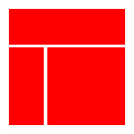
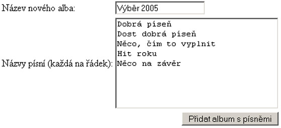

Od dnešního dne začíná vycházet nový seriál o PHP.
PHP je skriptovací jazyk pro tvorbu dynamického webu a jeho počátky spadají do roku 1994. Tehdy se pan Rasmus Lerdorf rozhodl vytvořit jednoduchý systém pro počítání přístupu ke svým stránkám; bylo to napsáno v PERLu. Za nějakou dobu byl systém přepsán do jazyka C,, protože perlovský kód dost zatěžoval server. Sada těchto skriptů byla ještě později téhož roku vydána pod názvem "Personal Home Page Tools", zkráceně PHP. Ještě potom se to jmenovalo "Personal Home Page Construction Kit".
U toho však nezůstalo. V polovině roku 1995 se systém PHP spojil s jiným programem stejného autora, a to sice s nástrojem "Form Interpreter" neboli zkráceně FI. Tak vzniklo PHP/FI 2.0, systém, který si postupně získal celosvětovou proslulost a byl velmi rozšířen.
Koncem roku 1998 byla již k dispozici verze PHP 3.0, která byla
mnohem rychlejší (a vybavenější) než "dvojka" a která byla k dispozici
rovněž pod operačními systémy Windows. Počet webů které používaly PHP
se zvyšoval, až dosáhl cca 150 000. "Čtyřkové" verze PHP, které jsou k
dispozici nyní, přidávají do jazyka mnoho nových funkcí a rovněž
přinášejí přepracované a tudíž podstatně rychlejší jádro Zend.
Podle údajů z dubna 2004 běží PHP na více než 15 000 000 doménách a je to bezkonkurenčně nejčastěji používaný modul webového serveru Apache. Zkratka PHP by se měla překládat jako "PHP: Hypertext preprocessor", česky bychom řekli asi něco ve stylu "předzpracovávač hypertextu" (je to opravdu česky? ;-) ) Úvaha o počátcích PHP by nebyla úplná, kdybychom se krátce nezmínili rovněž o jeho budoucím vývoji. V době psaní tohoto článku je již k dispozici Release Candidate 2 verze PHP 5 a podle vývojářů se máme na co těšit. Namátkou – jádro Zend II, kompletně přepsaná podpora XML, nové objektové rozhraní pro práci s databází MySQL a mnoho dalšího. Čili, systém je stále vybavován novými technologiemi a je aktivně vyvíjen.
Proč je PHP tak oblíbené? K tomu vede celá řada věcí:
Víceméně ne; pokud budete chtít napsat dynamický web, bude PHP prakticky vždy dobrou volbou. S některými věcmi byste ale přesto měli při použití PHP počítat:
Lakonická odpověď by zněla: Téměř všechno, co nějak souvisí s dynamickým webem a/nebo s databázemi. Mezi nejčastější aplikace psané v PHP patří například:
Na své si při čtení našeho seriálu přijdou začínající i pokročilí uživatelé PHP. Nejprve se v několika dílech podíváme na jazyk samotný – na jeho syntaxi, výrOperační systémazy, operátory, konstrukce, příkazy a podobně. Dále se budeme věnovat práci se soubory a formuláři. Velkou pozornost budeme věnovat databázím; nejprve obecně a zvlášť MySQL. Ukážeme si, jak lze PHP pro práci s databázemi použít a jaká úskalí nás přitom čekají. Dotkneme se otázek kolem autentifikace uživatelů a bezpečnosti webové aplikace vůbec. Zakončíme několika díly popisujícími, co byste měli vědět při práci na rozsáhlejším projektu a příkladem jednoho takového projektu. Takže se máte na co těšit.
Příště se krátce podíváme na to, jak vlastně PHP funguje a co z toho
pro vývojáře vlastně vyplývá.
V
minulém díle jsme si ukázali, co PHP vlastně je a k čemu všemu se dá
použít. Dnes se zaměříme na to, co to PHP zhruba dělá a jak celá
komunikace mezi serverem a prohížečem při použití tohoto jazyka
funguje.
Jestliže s PHP začínáte, měli byste si tento článek pečlivě přečíst. Setkal jsem se totiž s lidmi, kteří sice s tímto jazykem už nějakou dobu pracují, ale přesto jim uniká princip - a dělají tak základní koncepční chyby.
V době internetového pravěku byly všechny internetové stránky statické. Prostě tak, jak byla stránka napsána, tak byla odeslána do prohlížeče a tak byla také zobrazena. To pochopitelně časem přestávalo stačit, a proto byla vyvinuta celá řada technologií, které měly stránky rozpohybovat. Zhruba řečeno se dají tyto technologie rozdělit do dvou skupin, na "klientské" a "serverové".
"Klientské" technologie se spoléhají na jednoduchou věc: Spolu s HTML stránkou je prohlížeči odeslán i nějaký kus programového kódu a ten je ve vhodnou chvíli na "cílovém" počítači spuštěn. Vhodná chvíle může nastat například při kliknutí na tlačítko, při najetí myší na odkaz, při otevření okna prohlížeče a podobně. O spuštění klientského kódu se stará prohlížeč - a to může být nevýhoda. Prohlížeč totiž musí znát programovací jazyk, v němž je kód napsán. Příkladem technologií běžících na straně klienta je například Java script. Máme o něm na Linuxsoftu seriál.
"Serverové" technologie jsou založeny na jiném principu. Když
prohlížeč
požaduje webovou stránku ze serveru, server tuto stránku nejprve
sestaví a pak odešle. Servery mohou (a také to často dělají) sestavovat
pokaždé jinou stránku v závislosti na tom, co přesně prohlížeč
požaduje.
PHP JE TECHNOLOGIE BĚŽÍCÍ NA SERVERU. Typický PHP skript obsahuje jednak kusy normálního HTML kódu, a jednak kusy programového kódu. Když webový server obdrží požadavek na zpracování takového skriptu, vezme:
Tato filozofie fungování je nesmírně mocná. Server totiž může provést jednu nebo dokonce několik operací a výsledek poslat do prohlížeče jako obyčejnou HTML stránku. Jakmile tento koncept pochopíte, můžete začít psát PHP skripty. Celé si to předvedeme na malé ukázce: Následující kód je obyčejná HTML stránka. Když si ji prohlížeč vyžádá, uvidíte v něm jen řádek mezi značkami.
<HTML>
Já jsem obyčejná stránka. Nic neumím.
</HTML>
Následující kód je PHP skript. Všimněte si, že se skládá jednak z HTML kódu, a jednak z PHP kódu. V některém z dalších dílů to rozebereme podrobněji, teď ale jen uvedu, že to, co vidíte mezi značkami <? a ?> je právě PHP kód. Příkaz echo vypisuje text na standardní výstup a příkaz Date vrací aktuální čas:
<HTML>
Já jsem speciální stránka. Vím, že právě je <?echo Date("G:i")?>
</HTML>
Jak asi tušíte, stránka vám vypíše aktuální čas na serveru v době, kdy byla generována. To proto, že kód mezi značkami <? a ?> se na serveru nejprve provede a teprve pak se výsledek odešle prohlížeči. Jinými slovy, do prohlížeče dorazí něco jako:
<HTML>
Já jsem speciální stránka. Vím, že právě je 21:08
</HTML>
Prohlížeč nemá sebemenší tušení, co všechno se na serveru dělo než mu byl výstup odeslán, vidí jen samotný výsledek. Dodejme, že dít se na serveru mohla celá řada věcí – matematické výpočty, přístupy k databázím, formátování, operace s řetězci a podobné taškařice. Z toho vyplývá několik důležitých věcí.
Za prvé, abyste mohli PHP skript skutečně spustit, musíte ho "prohnat" serverem. Když ho otevřete v textovém editoru nebo si ho prohlédnete jako soubor na disku, neuvidíte výsledek, ale zdrojový kód skriptu. To se Vám může plést zejména tehdy, když máte PHP skript na vlastním počítači a používáte na prohlížení souborů na disku stejný nástroj jako na prohlížení obsahu sítě internet (třeba Konqueror). PHP soubor proženete serverem tak, že se na něj zeptáte prohlížeče pomocí adresy url. Například pomocí http://localhost/skript.php můžete skutečně donutit server, aby skript zpracoval a poslal Vám výsledek, zatímco prostřednictvím file://var/www/html/skript.php zobrazíte jen zdrojový soubor.
Za
druhé – PHP skripty nejsou vlastně vůbec závislé na použitém
prohlížeči, protože ten s nimi nepřijde do styku. Všechnu práci si
odskáče server a do prohlížeče dorazí jen prosté HTML.
Za třetí – části PHP kódu se do skriptů vkládají pomocí speciálních značek. Z ukázky to sice nevyplývá, ale v úvahu přicházejí následující možnosti kombinace HTML a PHP kódu v jednom souboru:
Za čtvrté: Jelikož výsledkem PHP skriptu je normální HTML stránka, neměli byste se pouštět do práce v PHP, pokud alespoň zběžně neznáte HTML. Tyto technologie se můžete učit současně, ale není nad to naučit se nejprve HTML a pak se pustit do PHP. Mimochodem, o HTML máme na Linuxsoftu seriál.
A konečně za páté – jak jste asi pochopili, když si budete chtít vyzkoušet fungování skriptu ve skutečném světě, měli byste mít k dispozici nějaký webový server. A právě o tom, co všechno byste měli mít k dispozici pro práci s PHP bude další díl našeho seriálu.
V tomto díle seriálu o PHP si ukážeme, co budeme k jeho provozování potřebovat.
V předchozí části našeho PHP seriálu jsme se dozvěděli, jak webový server zpracovává PHP kód a posílá jej prohlížeči sítě internet k zobrazení. Dnes se podíváme na to, jaký software je pro práci s PHP nezbytný a kde jej najdete.
Bez dobrých nástrojů je jakákoli práce přinejmenším velmi náročná. Pokud to s PHP myslíte vážně, sežeňte si vše potřebné co nejdříve, ať si to můžete nainstalovat, nastavit a začít to používat! Mnoho nadšenců chce psát už od Prvního Dne a diví se, že velice záhy narazí na nějaký problém, který s PHP skoro nesouvisí, ale který musí rychle vyřešit (třeba konfigurace, práva nebo zabezpečení). Takže, co budeme potřebovat: Budeme potřebovat světlo, neboli LAMP. Skutečně, ideální kombinace pro práci s PHP je Linux, Apache, MySQL a PHP (lamp je anglicky; česky to znamená lampa, svítilna nebo žárovka). Uvedená sada nástrojů se může prokázat opravdu jako nejlepší. Zmíním se i o alternativách, ale tohle je vyzkoušené.
Máte-li svou oblíbenou distribuci GNU/Linuxu, neváhejte a použijte ji. Jestliže ne, můžete si vybrat třeba v sekci DISTRIBUCE na našem serveru. Zmíněný software můžete nainstalovat na prakticky libovolný GNU/Linux systém, včetně distribucí typu SSSL (Sestav Si Svůj Linux). Poznámky pro uživatele Windows budou v závěru článku.
V prvním díle jsme si řekli, že PHP funguje pod kdečím. Nejlépe si
ale
rozumí se serverem Apache, proto bude instalace Apache serveru asi tou
nejlepší volbou. Apache najdete na http://httpd.apache.org
nebo jako
připravený balíček ve Vaší distribuci (pokud Vaše distribuce používá
nějaký balíčkovací systém). Nastavení serveru Apache se provádí úpravou
konfiguračních souborů, zejména pak souboru httpd.conf. Bývá
komentovaný. Dokumentace k nastavení Apache je na
http://httpd.apache.org/docs-2.0/configuring.html
a patří mimochodem k
nejpovedenějším stránkám nápovědy, které jsem kdy viděl. Nějaké české
zdroje můžete najít například na http://www.jakpsatweb.cz/server.htm.
Začátečníci často narážejí na problém, který se projevuje tak, že po zadání URL se do prohlížeče nevrátí výsledek skriptu, ale jeho zdrojový kód. To je způsobeno tím, že server Apache netuší, že by měl soubor php zpracovat jako skript, případně proto, že nemá, čím by to udělal. V konfiguračním souboru Apache tedy musejí být přibližně tyto řádky:
LoadModule php4_module
modules/libphp4.so
AddType application/x-httpd-php .php
Pokud budete navíc chtít, aby se po zadání url zobrazil soubor index.php (pokud je a pokud není specifikován jiný soubor), proveďte něco jako:
DirectoryIndex index.php
Protože se v dalších dílech budeme věnovat rovněž MySQL databázi,
pojďme ji rovnou nainstalovat. Domovská stránka tohoto projektu je
http://www.mysql.com
a MySQL
pravděpodobně bude rovněž existovat jako
balíček ve Vaší distribuci.
Pozn.: O MySQL máme na Linuxsoftu seriál. Tento a tento díl rozebírají instalaci databázového
systému MySQL podrobněji.
Ovšem, budete potřebovat PHP samotné. To žije na http://www.php.net, české zrcadlo je na http://www.php.cz. V době psaní článku je k dispozici stabilní verze 4.3.6. Na serveru je k dispozici je stažení jako zdrojový kód a možná i nějaké ty binární soubory.
To nejsou jediné věci, které budete pro práci s PHP potřebovat. Budete potřebovat prohlížeč; dobrý designér bude chtít vidět výsledek dokonce v několika různých prohlížečích. Mozilla by mohla být dobrou volbou; jistě ale máte mezi prohlížeči svého favorita. Budete potřebovat rovněž nějaký textový editor pro práci se zdrojovým kódem PHP; nejlepší je ten, který Vám nejlépe vyhovuje. Pro mě by například dobrý PHP editor měl mít barevné zvýrazňování syntaxe, odsazování bloků, pružnou konfiguraci a měl by být k dispozici pod GNU/GPL. WYSIWYG ("what you see is what you get", "co vidíš, to dostaneš") editory obecně nebývají pro práci s PHP moc dobré, lepší je nějaký opravdu textový editor. Pro práci na lokálním počítači je to myslím všechno; budete-li chtít nahrávat skripty na vzdálený server, bude to většinou pomocí nějakého ftp klienta.
PHP lze vyvíjet i pod Windows. Pokud mohu z vlastní zkušenosti
poradit
– zanechte pokusů rozběhnout PHP pod Personal Web serverem z Windows 9x
nebo Internet Information Serverem z Windows NT/2000/XP a nainstalujte
si pod Windows rovněž Apache. PHP i MySQL jsou pro Windows k dispozici
jako
binární instalační soubory; neměla by s tím být větší potíž. Až budete
ukládat skripty na disk, pamatujte na to, že při případném nahrávání na
unix-like servery záleží na velikosti písmen v názvech souborů.
Pod Windows existují rovněž nástroje, které instalují PHP a MySQL z jednoho instalátoru. Přiznám se ale, že jsem je nezkoušel, takže v tomto ohledu moc neporadím.
Pokud si napíšete nějaký jednoduchý PHP skript (třeba ten z minulého dílu) a spustíte jej, měl by Vám ho server provést. Máte-li například server nastaven tak, že hledá php soubory z /var/www/html a v této složce máte skript test.php, mělo by http://localhost/test.php donutit server aby skript zpracoval a vrátil do prohlížeče. Pokud se to nestane, zkontrolujte konfiguraci – nejprve serveru a pak PHP.
Pamatujte, že pokud vyvíjíte stránky které budou umístěny na skutečném serveru, není od věci mít "doma" stejnou verzi PHP (a MySQL) jako bude na serveru. Naprostá většina správců instaluje na servery poslední stabilní verze těchto produktů, což je většinou dobrý nápad. Verzi Vašeho PHP a související informace o konfiguraci zjistíte pomocí následujícího jednoduchého skriptu:
<?phpinfo();?>
Prostudujte si licenční podmínky. MySQL například má dva různé licenční modely; licence výše uvedeného software se při provozování pod GNU/LINUX mohou lišit od licencí pro Windows nebo se licence pro osobní použití mohou lišit od licencí pro podnikovou sféru.
V dalším díle se podíváme na základy syntaxe v PHP a napíšeme si několik prvních smysluplných skriptíků.
V minulém díle našeho seriálu jsme si PHP
nainstalovali a nastavili.
Dnes se dostaneme v našem povídání o tomto skriptovacím jazyku k
základům syntaxe. Uvidíme, jak je kód PHP členěn, jak se v něm trochu
vyznat a na co bychom při psaní PHP neměli zapomínat.
Jak vůbec server
pozná, že má se souborem zacházet jako s programem v PHP? V zásadě
podle přípony souboru, který po něm požadujeme. Jestliže má soubor
příponu php, server nám jej nevrátí přímo jako by šlo o HTML, ale
nejprve jej zpracuje. Příponu php (také phtml, php3 a některé další)
pozná server jako soubor skriptu prostě proto, že to má nastaveno v
konfiguraci (viz minulý díl). My budeme používat při ukládání skriptů
příponu php, je to nejčastější.
Úplná katastrofa může nastat, když souboru se skriptem php dáme omylem příponu htm nebo html. To jej potom server pošle do prohlížeče bez jakýchkoli úprav a uživatel může vidět zdrojový kód skriptu. To asi není to, co chcete, zejména kdyby skript obsahoval citlivé údaje (třeba, jak se připojit k databázi). Takže, dávejte si na to pozor. Na druhou stranu Vám nic nebrání nazvat si "obyčejné" html soubory tak, aby měly příponu php. Když server zjistí, že v nich není žádný php kód, pošle je prohlížeči tak, jak jsou. A navíc – když do nich později budete chtít nějaký kód přidat, už je nebudete muset přejmenovávat.
Ve skriptu samotném je kód php uzavřen dvojicí značek. Mohou to být:
<?
[PHP kód] ?>
To je typický případ.
<?php
[PHP kód] ?>
tato sytnaxe je kompatibilní se standardem XML, takže asi syntakticky nejčistší. Bývám ale líný to psát.
<SCRIPT
LANGUAGE="php"> php [PHP kód] </SCRIPT>
To je sice asi nejsložitější, ale mělo by to donutit editory typu Microsoft FrontPage, aby kód mezi tagy neformátovaly podle svých představ, takže někdy se může docela hodit to znát.
<% [PHP kód] %>
To je syntaxe známá z jazyka asp (Active server pages) firmy Microsoft. Používat by se to mělo jen v krajních případech, protože to vyžaduje úpravu konfiguračních souborů a je to silně nestandardní.
My budeme v příkladech používat dvojice značek <? a ?>. Dokumentace uvádí, že toto chování musí být implicitně zapnuté v konfiguračním souboru, aby to fungovalo, ale že to je zároveň výchozí nastavení. Mě to však funguje úplně všude.
Jednotlivé instrukce se v PHP oddělují středníkem. Takže, následující kód Vám nebude fungovat:
<?
echo "První
řádek"
echo "Druhý
řádek"
?>
Celé to skončí chybou "Parse Error", protože za prvním řádkem nenásleduje středník. S touto chybou se seznamte – pokud jste předtím neprogamovali v nějakém jazyku, který rovněž používá středníky, asi je budete často zapomínat (jako já). Opravený skript je:
<?
echo "První
řádek";
echo "Druhý řádek";
?>
a ještě poznámky:
Před poslední instrukcí nemusí středník být. Pište ho tam ale, protože se Vám bude stávat, že připíšete nějakou instrukci ještě níže a kód Vám přestane fungovat.
Na rozdíl od některých jiných jazyků jsou konce řádků pro PHP nepodstatné. To můžete použít pro formátování kódu tak, abyste se v něm vyznali. Nepodstatné jsou rovněž mezery a tabelátory. Následující kód je tedy totožný s předchozím:
<?
echo "První
řádek"; echo "Druhý
řádek"; ?>
Komentář je něco, co program při zpracování ignoruje a slouží tedy pouze uživateli. Rozhodně si osvojte zapisování komentářů hned při pasní kódu; bude se Vám to hodit. Patřičně to zdůrazníme v článku věnovaném psaní rozsáhlejších projektů, ale zvykněte si na to už teď. Komentáře mohou být v PHP jednořádkové nebo víceřádkové a používají se na ně znaky "//" (dvě dopředná lomítka), "#" (mřížka) a dvojice "/*" a "*/" (lomítko+hvězdička --- hvězdička+lomítko).
Jednořádkový kometář:
<?
// skript kašle na to, co tady napíšu
?>
nebo
<?
# skriptu je úplně jedno, co tu bude
?>
Víceřádkový komentář
<?
/*
Nevím, jestli to, co napsáno v tomto skriptu bude fungovat.
Ještě se na to budu muset podívat.
*/
?>
Víceřádkovým komentářem můžete zakomentovat celý blok textu velice rychle, a také velice špatně. Pamatujte, že víceřádkové komentáře nelze vnořovat. První sekvence '*/' totiž celý komentář ukončí. Následující kód tedy skončí chybou (je to vidět už z obarvení kódu):
<?
/*
Chci to zakomentovat.
To by přece nemělo vadit.
/*
Ale díky "vnořenému" víceřádkovému komentáři
... už to vadí
*/
*/
?>
V dalším díle se podíváme na některé příkazy php, které bude lepší se naučit hned a na formátování výsledného kódu, který PHP vrací do prohlížeče.
V PHP se dnes naučíme jeden příkaz a něco formátovacích zvyklostí
V předchozím díle našeho PHP seriálu jsme si ukázali, jak se PHP kód oděluje od HTML kódu, jak se instrukce v PHP oddělují jedna od druhé a jak se píší v kódu komentáře. Dnes se podíváme na jeden příkaz a jeden operátor PHP; ty se raději naučíme rovnou, protože je budeme často používat. Ukážeme si také na formátování výsledného kódu, který se posílá do prohlížeče.
Příkaz echo vytiskne jeden nebo více řetězců. Příklady:
<?
echo "Dnes
je hezky";
?>
<?
echo "Dnes
je hezky ", "Zítra
bude ošklivo...", "pozítří bude taky ošklivo...", " jak bude v pondělí
mě nezajímá...";
?>
Budete-li chtít vytisknout víceřádkový řetězec, můžete provést něco jako:
<?
echo "Tohle
bude první řádek
Tohle bude druhý řádek
Tohle dáme nakonec"?>
To BUDE fungovat, stejně jako následující syntaxe, která místo fyzického konce řádku vkládá do textu speciální sekvenci znaků \n.
<?
echo "Tohle
bude první řádek\nTohle bude druhý řádek\nTohle dáme nakonec"?>
\n je jednou z tzv. escape sekvencí. Těch sekvencí je více – viz tabulka
| Sekvence |
Význam |
| \n |
Nový řádek |
| \" |
Uvozovky |
| \r |
Návrat vozíku |
| \t |
Tabelátor |
| \\ |
Zpětné lomítko |
| \$ |
Dolar |
Takže, budete-li chtít donutit příkaz echo, aby ve výstupu zobrazil skutečnou uvozovku, můžete napsat něco jako:
<?echo "PHP už \"skoro\"
umím";?>
Tip: Ten trik s uvozovkami se
docela používá. Často totiž pomocí PHP potřebujeme zapsat HTML tagy
včetně parametrů a ty bývají v uvozovkách.
Pokud jste si zkoušeli uvedený příklad s řádky a máte pocit, že tam cosi nehraje, máte pravdu. V prohlížeči totiž budou všechny údaje na jednom řádku. Kde je tedy problém? Problém je v tom, že nesmíme míchat dvě věci: to jak PHP předává informace prohlížeči a to, jak prohlížeč předané informace zobrazuje. Když pošlete prohlížeči požadavek na skript uvedený výše a necháte si zobrazit zdrojový kód stránky která dorazí, zjistíte, že tam ty konce řádku opravdu jsou. HTML ale nezalamuje řádek tehdy, když je znak konce řádku v kódu, HTML má k tomu značku <BR>. Je samozřejmě možné vložit značku HTML do řetězce v PHP, třeba takhle:
<?
echo "Řádek
první...<BR>Řádek druhý<BR> a konečně řádek jánevímjaký";
?>
… prohlížeč pak obdrží následující kód:
Řádek
první...<BR>Řádek druhý<BR>a konečně řádek jánevímjaký
… a ten zobrazí s tím, že pochopitelně značky <BR> nahradí zalomením řádku.
Kdybychom ale chtěli být maličko preciznější, můžeme napsat kód i takto:
<?
echo "Řádek
první...<BR>\nŘádekdruhý<BR>\na konečně řádek jánevímjaký";
?>
… prohlížeč pak obdrží následující kód:
Řádek první...<BR>
Řádek druhý<BR>
a konečně řádek jánevímjaký
… a ten nám zobrazí. Rozdíl pro uživatele není žádný. Rozdíl pro prohlížeč je jen ten, že musí načíst více dat a přísně řečeno ten druhý způsob bude více zatěžovat linku do internetu, protože i ty znaky konce řádku se musejí ze serveru přenést – ale pokud budeme chtít rozpitvat to, co dorazilo do prohlížeče, je ten druhý způsob daleko přehlednější.
Příkaz echo je jasně nejčastějším příkazem PHP. Naučme se dnes ještě jeden operátor – a to operátor pro spojování řetězců.
Spojování retězců se prování pomocí operátoru . (tečka). Takže příklad:
<?echo "Klidně si spojím
úvod "."se
závěrem"?>
Tečka zde vedla ke spojení, zřetězení řetězců. Je rovněž možné spojit více než dva řetězce. Pokud byste podlehli pokušení řetězce spojit pomocí plusítka (+), bude výsledek následujícího skriptu
<?echo "Klidně si spojím
úvod "+"se
závěrem"?>
překvapivě 0. Proč to tak je si rozebereme podrobněji v díle seriálu
o přetypování
proměnných.
Pozn.: Telegraficky - je to proto, že PHP narazí na znak plus, ten vyžaduje čísla, a PHP se tedy pokusí považovat oba řetězce za čísla. Má na to pravidlo, podle něhož řetězec nezačínající číslicí, desetinným oddělovačem nebo znaky "+" či "-" je povážován při převodu za nulu. A 0+0=0!
Upozorňuji na to především programátory přecházející na PHP z ASP, kde se skutečně řetězce spojovaly pomocí plusítka. Příštích několik dílů se budeme věnovat proměnným.
V tomto díle seriálu o jazyce PHP se podíváme na
zoubek proměnným.
Každý programovací jazyk pracuje s nějakými hodnotami. To, do čeho
se
tyto hodnoty ukládají, se nazývá proměnné. Každá proměnná má název
(někdy se mu říká identifikátor) a hodnotu (někdy se označuje termínem
literál). V každém okamžiku je hodnota proměnné v programu jednoznačně
daná, během programu se však může měnit. Proměnné se podle toho, co v
nich chceme uchovávat za hodnoty, dělí na několik typů:
| Typ |
Název
v PHP |
Popis |
| Logický typ |
Boolean |
uchovává hodnotu "pravda" nebo "nepravda". Zapisuje se jako TRUE a FALSE (na velikosti nezáleží, můžete třeba i jako tRUE a fALSE |
| Celočíselný typ |
Integer |
uchovává celá kladná i záporná čísla (a nulu) od nějakých -2 biliónů po + 2 bilióny. |
| Desetinné číslo |
Float nebo Real |
uchovává desetinná čísla. S přesností obyčejně na 14 desetinných míst a rozsahem, z něhož by se nám asi zamotala hlava - číslo, které začíná jedničkou a může mít 308 nul. |
| Řetězec |
String |
uchovává texty neboli řetězce. Řetězec je znak nebo sada znaků, v PHP prakticky neomezené délky. |
Typ proměnné v PHP se určuje v okamžiku přiřazení hodnoty do proměnné.
To bývá ve většině případů přesně to, co chceme, někdy to ale může mást
programátory zvyklé na deklarování proměnných před jejich použitím z
jiných programovacích
jazyků (některé jazyky totiž umožňují, nebo dokonce vyžadují deklarovat
typ proměnné předem). Během programu může proměnná svůj typ změnit, ať
už díky
instrukci v kódu nebo v důsledku nějakého výpočtu. To se nazývá
přetypování a bude o tom ještě řeč.
Každá proměnná musí mít jednoznačný název. Ten v PHP začíná znakem
dolaru($) a následuje (bez mezery) nějakým pojmenováním. První znak
toho pojmenování musí být buď písmeno a-z nebo podtržítko. Nesmí to být
číslo ani nic jiného. Názvy proměnných v PHP rozlišují mezi malými a
velkými písmeny, takže pozor na to. Praxe bývá většinou taková, že se
proměnné píší malými písmeny. V názvech proměnných můžete používat
české znaky včetně diakritiky; běžně se to ale moc nedělá. Desetinná
čísla se zadávají s tečkou, ne s čárkou. Řetězce se uzavírají do
uvozovek nebo do apostrofů.
Proměnné přiřadíte nějakou hodnotu pomocí znaku = ("rovná se"). Níže
uvedeme skript, který bude všechy ty zásady ilustrovat.
<?
//logický typ
$mam_malo_penez = TRUE;
//celočíselný typ
$plat = 10000;
//desetinné číslo
$disketa = 3.5;
//řetězec
$prohlaseni =
"Právě se vracím z pražského hradu! ...";
echo $mam_malo_penez."<BR>";
echo $plat."<BR>";
echo $disketa."<BR>";
echo $prohlaseni."<BR>";
?>
Jak můžete vidět z výsledku, nejprve jsem proměnným přiřadil nějakou
hodnotu a pak jsem ji vypsal. Následující skript obsahuje běžné chyby,
kterých se můžete při pojmenování nebo přiřazování proměnných dopustit:
<?
// tohle bude špatně. proměnná nesmí
začínat číslem:
$3sestry = "tři sestry";
// tohle sice projde, ale nic to nevypíše
(velikost písmen v názvu)
$rok = 2004;
echo $Rok;
?>
V typům proměnných ještě jedna malá přátelská rada. Pokud nemusíte,
nepoužívejte typ double (float), nebo si alespoň buďte při jeho použití
vědomi
toho, že se jedná o nepřesná čísla. Jakákoli operace přiřazení nebo
porovnání takových
čísel může dávat neočekávané výsledky. Tak třeba následující skript
<?
$a=0.1; $b=0.7;
echo 0.8-$a-$b;
?>
nevrátí nulu, jak byste asi čekali, ale nějaké sice hodně malé, ale
přesto nenulové číslo. Kdybyste se spoléhali na to, že skript vrátí
nulu, dostanete se do potíží.
Takové chyby se navíc velmi špatně odhalují. A když se ještě k tomu
nepřesná čísla uloží do databáze, mohou se chyby kumulovat.
S proměnnými se dají, jak to ostatně vyplývá s příkladu uvedeného
výše provádět matematické operace. Více si o tom řekneme v díle o
výrazech. Už teď Vám ale mohu prozradit, že základní operace, které
znáte z matematiky (+-*/) s čísly v PHP provádět samozřejmě můžete;
řetězce se dají slučovat pomocí operátoru tečky a celou řadu dalších
možností si probereme v díle o výrazech.
Protože můžete použít malá nebo velká písmena a českou abecedu v
názvech proměnných, a protože proměnných můžete mít časem i v jednom
skriptu poměrně dost, vyplatí se už od začátku se trochu cepovat a
udělat si v jejich pojmenování nějaký systém. Těžko radit, ale
následující postřehy Vám možná přijdou vhod:
V příštím díle se podíváme na typ proměnné, který jsme zatím vynechali. A to na pole.
PHP používá samozřejmě i proměnné typu pole. Dnes si
ukážeme jak.
V PHP je kromě základních datových typů (celá čísla, desetinná
čísla, logické
hodnoty a řetězce) k dispozici i datový typ pole. To je speciální
struktura, která může v jedné proměnné obsahovat sadu hodnot. Hovoříme
o tom, že pole má prvky; každý
prvek má index nebo klíč a hodnotu. Proměnné typu pole patří k
těm věcem v PHP, které jsou v jazyce zpracovány opravdu dobře a znalost
polí Vám
pravděpodobně umožní napsat kód, který by bez nich byl delší, nebo
pomalejší, nebo méně přehledný.
Představte si, že máte dejme tomu pět lidí stojících ve frontě. Z těchto lidí můžete udělat v PHP pole například tak, že jako index bude sloužit jejich "frontové pořadí". Můžete tedy napsat:
<?
$fronta[1]="Petr";
$fronta[2]="Pavel";
$fronta[3]="Maruška";
$fronta[4]="Eva";
$fronta[5]="LinuxSoft tým";
?>
Vznikla nám proměnná $fronta (pole), která obsahuje pět prvků, z nichž každý má svůj index (například trojku) a hodnotu (takže Maruška). Z toho
vidíme, že pole se v PHP zapisují jako každá jiná proměnná, pouze za
názvem mají v hranatých závorkách index.
Pole uvedené výše bylo indexované, protože jeho prvky jsou určeny
indexem. Někdy může ale být šikovnější rozlišit od sebe prvky pole
řetězcem, čímž vznikne tzv. asociativní pole.
<?
$obyvatel["Praha"]=1000000;
$obyvatel["Ústí nad Labem"]=100000;
$obyvatel["Horní Lhota"] = 350;
?>
Obecně může být asociativní pole užitečné v případě, kdy budete
chtít rozlišovat prvky podle něčeho jiného než podle čísel. Například
existují projekty, kde se asociativní pole používají k ukládání
konfiguračních hodnot programu. Proměnná $config["max_users"] je daleko
popisnější než $config[5].
Aby to nebylo tak úplně jednoduché, pole nemusí mít jen jeden index.
Představte si například, že byste v PHP chtěli pomocí pole popsat
postavení figurek na šachovnici před zahájením šachové partie. Protože
figurky
nestojí v jedné frontě jako lidé v našem prvním příkladu, ale jsou
naopak uspořádány na hrací ploše rozdělené do řad a sloupců, můžete
udělat něco jako:
<?
//[řádek] [sloupec] (zleva odspodu)
$figura[1][1]="bílá věž";
$figura[1][2]="bílý jezdec";
//...atd...
$figura[2][8]="bílý pěšec";
//...atd...
$figura[8][7]="černý jezdec";
$figura[8][8]="černá věž";
?>
za což mě pochopitelně žádný šachista nemůže mít rád, protože v šachové notaci se uvádí nejprve sloupec a pak řádek a navíc sloupce se nečíslují, ale označují se písmeny. Abychom demonstrovali pružnost PHP při práci s poli a umlčeli nespokojené šachisty, přepíšeme to do následující podoby:
<?
$figura["a"][1]="bílá věž";
$figura["b"][1]="bílý jezdec";
//...atd...
$figura["h"][2]="bílý pěšec";
//...atd...
$figura["g"][8]="černý jezdec";
$figura["h"][8]="černá věž";
echo "Na poli b1 je při zahájení šachové
partie ".$figura["b"][1];
?>
Pole v programu samozřejmě nevznikne samo od sebe. Můžeme jej nastavit tak, že jeho prvkům přiřadíme postupně hodnoty. To bylo patrné ze všech předchozích ukázek. Jde to ovšem ještě jednodušeji - index pole můžeme vynechat a PHP jej dosadí za nás. Další možnost je použít PHP funkci array, která provede totéž, ale je to mnohem kratší. Úvodní příkaz z frontou bychom tedy mohli přepsat následovně:
<?
$fronta[]="Petr";
$fronta[]="Pavel";
$fronta[]="Maruška";
$fronta[]="Eva";
$fronta[]="LinuxSoft tým";
?>
nebo pomocí funkce array, což je ještě kratší:
<?$fronta=Array("Petr", "Pavel", "Maruška", "Eva", "LinuxSoft tým");?>
Je tu nicméně jeden problém. PHP standardně čísluje pole od nuly, ne
od jedničky. Takže, v našem příkladu by $fronta[1] vrátilo "Pavel", ne
"Petr". Aby
příklad skutečně fungoval jako ten úvodní, musíme PHP s inicializací
pole trochu pomoci - prozradíme, že nechceme číslovat od nuly, ale od
jedničky.
<?
// buď tedy
$fronta[1]="Petr";
$fronta[]="Pavel";
$fronta[]="Maruška";
$fronta[]="Eva";
$fronta[]="LinuxSoft tým";
//nebo
$fronta=Array(1=>"Petr", "Pavel", "Maruška", "Eva", "LinuxSoft tým");
?>
Pro vypsání obsahu pole se Vám může, zejména při ladění kódu hodit
šikovná funkce print_r.
Ta prostě vypíše obsah pole do
prohlížeče. Funguje i s vícerozměrnými poli.
Pozn: Ona vlastně funguje i s
čísly a řetězci. Ale používá se převážně pro pole.
Protože se pole v PHP dají využít na všechno možné, dovolím si
krátký přehled toho, k čemu by se Vám mohla hodit. Třeba budete řešit
situaci, kdy použití polí může být to "pravé ořechové". Pole mohou:
To, že jsou pole v PHP užitečná ještě neznamená, že by se měla
používat vždy a všude. Tady jsou postřehy, které možná oceníte:
S poli se dá dělat mnoho věcí. PHP ale obsahuje hodně důležitých rysů, na které bychom se měli podívat ještě předtím, než budeme zkoušet pracovat s poli. V dalším díle seriálu se proto podíváme na výrazy, operace a přetypování proměnných.
Jazyk PHP je orientován na výrazy. Dnes si v našem
seriálu ukážeme co výrazy jsou a jak nám při programování budou pomocí. Zmíníme se rovněž o konstantách a inkrementaci.
Výrazem je v PHP zhruba řečeno "všechno, co má nějakou hodnotu". Tak například v díle o proměnných jsme uvedli, že proměnná má hodnotu; je to tedy výraz. Způsobu, jak zajistit že proměnná bude mít svou hodnotu říkáme přiřazení. Pro osvěžení uveďme několik přiřazení:
<?
$jazyk="PHP";
$verze=4;
$verzejazyka=$verze;
echo $verzejazyka;
?>
Zajímavý je třetí řádek - vidíme, že do proměnné můžeme přiřadit
hodnotu jiné proměnné a celé to bude fungovat. Proměnné však nejsou
jedinými kandidáty na výrazy v PHP.
Konstanta je v PHP něco jako proměnná, ale během programu svou
hodnotu
nemění. Je zvyk psát jejich názvy velkými písmeny. Konstanty se
definují pomocí funkce define. Dělá se to typicky na začátku skriptu.
Viz příklad níže.
<?
define ("BROWSER", "Firefox 1.0");
define ("OS", "GNU/Linux");
echo "Váš browser je ".BROWSER." a Váš systém je ".OS;
?>
(kéžby...) Konstanty se v PHP používají často; třeba na konfigurační
části
programu a podobně. Před názvem konstanty v PHP není znak dolaru ($).
Konstanta je výraz.
Výraz nemusí být jen řetězec. Prostě výraz je cokoli, co má hodnotu. Celé pole může být například také chápáno jako výraz. O funkcích jsme v našem seriálu sice ještě nehovořili, ale v díle druhém jsme si již ukázali funkci Date. Funkce JE výraz, protože vrací hodnotu. Následující kód obsahuje praktický příklad:
<?
$dnesnidatum = Date("r");
echo $dnesnidatum;
?>
V tétu ukázce jsme udělali vlastně dvě věci: Za prvé - zavolali jsme funkci Date, která je výrazem. A za druhé, tento výraz jsme přiřadili výrazu $dnesnidatum a ten jsme vytiskli. Celé by to šlo zkrátit na
<?echo Date("r");?>
ale to bychom přišli o proměnnou $dnesnidatum. Vůbec nevadí, že
Date() se každou chvíli mění; pro nás je to výraz, protože "to" vrací
hodnotu.
Pozn: Funkcím, které vracejí
pokaždé jinou hodnotu (například v závislosti na čase) se říká
nedeterministické. Funkcím, které pokaždé vrátí totéž, se naopak říká
deterministické. Oba typy jsou výrazy.
Samo přiřazení hodnoty proměnné je chápáno jako výraz a je vyhodnoceno jako přiřazovaná hodnota. Takže, následující tři zápisy jsou rovnocenné.
<?
// mohu přiřadit postupně
$kapsa1="prázdná"; $kapsa2="prázdná";
// nebo $kapsa1 a hned taky $kapsa2
$kapsa2=($kapsa1="prázdná");
// závorky ale můžu vynechat
$kapsa2=$kapsa1="prázdná";
echo "Jedna kapsa ".$kapsa1." a druhá kapsa taky ".$kapsa2;
?>
Vůbec nic nám nebrání měnit hodnotu výrazu pomocí jeho samotného, takže následující zápisy jsou platné:
<?
$bajtu = 0;
$bajtu = $bajtu + 100;
$bajtu = $bajtu * 2;
$bajtu = $bajtu / 4;
echo $bajtu;
?>
Nebylo by to však PHP, kdyby nám nenabízelo jednodušší cestu, jak
něco takového napsat.
Za těmito strašnými slovy se skrývá mechanismus, který mění hodnotu výrazu pomocí něj samotného. Kdybychom napříkad chtěli zvednout počet pokojů v našem bytě pomocí PHP, můžeme napsat:
<?
$pokoju=2;
$pokoju++;
echo $pokoju;
?>
nebo
<?
$pokoju=2;
++$pokoju;
echo $pokoju;
?>
Mezi těmito zápisy ve skutečnosti JE rozdíl, i když oba udělají z našeho dvoupokojového bytu 3+1. Vysvětleme to tak, že hodnotu inkrementovaného výrazu přiřadíme do další proměnné. Následující kód
<?
$pokoju=2;
$pokoju_po_zmene=$pokoju++;
echo $pokoju_po_zmene;
?>
vrátí dvojku, protože proměnná $pokoju se změnila až poté, co jsme ji přiřadili proměnné $pokoju_po_zmene. Jedná se o postinkrementaci. Ovšem kód
<?
$pokoju=2;
$pokoju_po_zmene=++$pokoju;
echo $pokoju_po_zmene;
?>
skončí trojkou, protože proměnnou $pokoju jsme měnili ještě předtím, než jsme ji přiřadili do
proměnné $pokoju_po_zmene. Jedná se tedy o preinkrementaci.
Časem Vám ovšem přestane i třípokojový byt stačit a tak se nabízí otázka, zda pre(post)inkrementace umí měnit výraz o jinou hodnotu než jen o jedničku. Ano, umí, takže náš příklad s bajty bychom mohli přepsat jako:
<?
$bajtu = 0;
$bajtu += 100;
$bajtu *= 2;
$bajtu /= 4;
echo $bajtu;
?>
Funguje to i s řetězci, což se v praxi hojně používá. Když se má například sestavit retězec, který se pošle jako příkaz do databáze, většinou z toho vyleze něco dlouhého. Proto, a taky kvůli přehlednosti bývá zvykem používat místo zápisu:
<?
$sql="select
id, nazev, prijmeni, jmeno, ulice, psc, mesto from zakaznik inner join
objednavka on zakaznik.id = objednavka.zakaznik where zakaznik.id =
7200";
?>
použít něco ve smyslu:
<?
$sql="select
id, nazev, prijmeni, jmeno, ulice, psc, mesto ";
$sql.="from zakaznik inner join objednavka on zakaznik.id =
objednavka.zakaznik ";
$sql.="where zakaznik.id = 7200";
?>
přičemž oba znamenají ve své podstatě totéž. Preinkrementaci a
postinkrementaci byste měli
používat, kdykoli je k tomu příležitost. Je totiž optimalizována na
rychlost. Na druhou stranu uznávám, že pokud přecházíte na PHP z
jazyků, které tuto konstrukci neměly (třeba asp), může Vám to zpočátku
dělat problém.
Různé kejkle s výrazy nás přivádějí k zajímavé otázce - a tou je změna typu proměnné. Jak to například dopadne, když budeme proměnnou dělit? Bude výsledkem typ celočíselný, desetinný nebo pokaždé jiný? Těmito otázkami se budeme zabývat v dalším díle seriálu, věnovaném přetypování proměnných.
Přetypování proměnných v PHP - požehnání nebo prokletí?
V našem seriálu jsme již uvedli, že PHP nevyžaduje definici proměnné před jejím použitím. Typ proměnné je v zásadě určen tím, co do ní vložíme. Co když ale výsledkem výrazu bude v PHP něco, co má jiný datový typ? Například, co se stane, když budeme dělit dvě celá čísla? Odpověď je - PHP se pokusí provést tzv. přetypování. Přetypování je změna typu proměnné během provádění programu. Připomeňme ještě na úvod, že proměnné v PHP mohou být čtyř základních typů: Integer, Float, Boolean a String.
S přetypováním může být legrace. Především - přetypovat proměnnou můžeme sami. Slouží k tomu příkaz settype, který nenávratně změní typ proměnné na jiný. Další důležitá informace je ta, že můžeme kdykoli zjistit typ proměnné pomocí funkce gettype. Tyto věci ilustrujme na příkladu:
<?
$muj_string="Pepa";
$muj_integer=2;
$muj_float=3.5;
$muj_boolean=FALSE;
// pokusíme se nějak přetypovat každou
proměnnou...
echo "Typ
proměnné muj_string byl <B>".gettype($muj_string)."</B>";
echo " a hodnota byla <B>".$muj_string."</B>. ";
settype($muj_string, "boolean");
echo "Po změně na <B>".gettype($muj_string)."</B> je hodnota
<B>".$muj_string."</B>.<BR>\n";
echo "Typ proměnné muj_integer byl
<B>".gettype($muj_integer)."</B>";
echo " a hodnota byla <B>".$muj_integer."</B>. ";
settype($muj_integer, "float");
echo "Po změně na <B>".gettype($muj_integer)."</B> je hodnota
<B>".$muj_integer."</B>.<BR>\n";
echo "Typ proměnné muj_float byl
<B>".gettype($muj_float)."</B>";
echo " a hodnota byla <B>".$muj_float."</B>. ";
settype($muj_float, "integer");
echo "Po změně na <B>".gettype($muj_float)."</B> je hodnota
<B>".$muj_float."</B>.<BR>\n";
echo "Typ proměnné muj_boolean byl
<B>".gettype($muj_boolean)."</B>";
echo " a hodnota byla <B>".$muj_boolean."</B>. ";
settype($muj_boolean, "integer");
echo "Po změně na <B>".gettype($muj_boolean)."</B> je hodnota
<B>".$muj_boolean."</B>.<BR>\n";
?>
Kód je to trošku delší (zvykejte si), takže něco komentářů. Nejprve jsme si vytvořili čtyři proměnné a naplnili jsme je takovými hodnotami, že reprezentují 4 základní datové typy. Potom děláme čtyřikrát totéž - nejprve vypíšeme "starý" typ a hodnotu proměnné pomocí gettype, pak ji přetypujeme a vypíšeme typ a hodnotu novou.
Další věc, kterou byste si měli uvědomit je ta, že PHP může přetypovat samo. Zvažme následující situaci:
<?
$cislo=5;
echo "Typ je ".gettype($cislo)."<BR>\n";
$cislo/=2;
echo "Teď je typ ".gettype($cislo)."<BR>\n";
?>
Tady jsme pětku dělili dvojkou; což vedlo k tomu, že z výsledku, a
tudíž ze samotné proměnné $cislo se stal typ float.
Přetypování se řídí několika pravidly, které jsem se pokusil shrnout v následující tabulce:
| Nový typ
(vpravo)-> Původní typ (dole) |
String |
Integer |
Float |
Boolean |
| String |
-- |
Začíná-li číslem toto číslo, jinak nula. Když neobsahuje '.', 'e', nebo 'E' | Začíná-li číslem toto číslo, jinak nula. Když obsahuje '.', 'e', nebo 'E' | "" a "0"=false,
ostatní True |
| Integer |
Převede na řetězec |
-- |
Není problém |
0=False, ostatní True |
| Float |
Převede na řetězec |
První integer směrem
k nule |
-- |
0.0=False, ostatní
True |
| Boolean |
false="" true="1" |
false=0 true=1 |
false=0.0 true=1.0 |
-- |
Z tabulky je vidět, že to většinou je intuitivní.
Někdy může být užitečné změnit typ proměnné jen na chvilku a pak ji zase používat starým způsobem. Toho dosáhneme tak, že před název proměnné napíšeme do závorky, jaký typ by v okamžiku vyhodnocení měla mít. Když si vypůjčíme část kódu z prvního příkladu a trochu to rozšíříme, bude:
<?
$muj_float=3.5;
echo "Typ proměnné muj_float byl
<B>".gettype($muj_float)."</B>";
echo " a hodnota byla <B>".$muj_float."</B>.<BR>\n";
echo "Na řetězec ->".(string)$muj_float."<BR>\n";
echo "Na celé číslo ->".(int)$muj_float."<BR>\n";
echo "Na boolean ->".(boolean)$muj_float."<BR>\n";
echo "Po všech těch změnách je ale typ
proměnné stále <B>".gettype($muj_float)."</B> a hodnota <B>".$muj_float."</B>.<BR>\n";
?>
Kromě funkce gettype, která vrátí řetězec obsahující název typu
proměnné existuje ještě sada funkcí, které vrací TRUE v případě, že
proměnná je odpovídajícího typu. Existují tedy funkce is_bool,
is_integer,
is_string
a is_float.
Znám programy, které používají celkem zbytečně přetypování takových proměnných, které již daný typ mají. To může program poměrně dost zpomalit. Na druhou stranu by se mělo vzít v úvahu to, že PHP přetypovává poměrně ochotně - a to někdy vadí. Čili, cílem je najít kompromis.
Logické výrazy a operátory v PHP.
Logické operátory se v PHP víceméně neliší od stejných operátorů v
jiných programovacích jazycích, ale to neznamená, že je v našem
tutoriálu vynecháme. Pojďme se tedy podívat, jak se používají. Pokud
logické výrazy chronicky znáte z jiných programovacích jazyků, možná
můžete tento díl přeskočit.
Již jsme si uvedli, že PHP má datový typ boolean reprezentovaný hodnotami TRUE a FALSE. Má také operátory, které Vám umožní s nimi pracovat. Především bychom si měli ale říci, že pro logické operace se nedoporučuje používat klasické operátory "+", "-", "*" a "/". Když to uděláme, neskončí to chybou, protože PHP provede přetypování. Nicméně, chování programu bude většinou zvláštní. Dokázali byste si například tipnout, co vrátí následující kód?
<?
$pravda =TRUE;
echo "Logický nesmysl ".$pravda + $pravda."<BR>\n";
?>
Asi se Vám to první pohled bude zdát divné, ale výsledkem bude pouhá
jednička. PHP totiž první řetězec převedl na LOGICKOU hodnotu a pak s
ní tak pracoval. Z toho je myslím patřičně vidět, že potřebujeme
logické operátory. V PHP existují následující:
| Operátor |
Význam |
Pravda když |
| and |
Logický součin |
Jsou obě hodnoty pravdivé |
| or |
Logický součet |
Je alespoň jedna hodnota pravdivá |
| xor |
Exkluzivní OR |
Je právě jedna hodnota pravdivá |
| ! |
Negace |
True když bylo False a naopak |
| && |
Logický součin |
Jsou obě hodnoty pravdivé |
| || |
Logický součet |
Je alespoň jedna hodnota pravdivá |
Několik příkladů to vysvětlí:
<?
// jestliže například
$mam_papir=TRUE; $mam_inkoust=TRUE;
// ... je jasné, že
$mohu_tisknout=$mam_papir && $mam_inkoust;
// což je totéž jako
$mohu_tisknout=$mam_papir and $mam_inkoust;
?>
Tady se jednalo o logický součin.
Pokud chci tisknout, musím mít jak papír,
tak i inkoust.
<?
// jestliže například
$mam_penize_doma=FALSE; $mam_penize_v_bance=TRUE;
// ... je jasné, že
$mam_penize=$mam_penize_doma || $mam_penize_v_bance;
// což je totéž jako
$mam_penize=$mam_penize_doma or $mam_penize_v_bance;
?>
Tady se jednalo o logický součet. Peníze mám jak v případě, že jsou doma, tak i v případě, že jsou v bance ;-))). Peníze mám dokonce i případě, že jsou jak doma tak i v bance, proto se jedná o neexkluzivní OR.
<?
$mam_malo_penez = true;
$jsem_bohaty =
!$mam_malo_penez;
echo (integer)$jsem_bohaty;
?>
Negace je myslím jasná. Jestliže mám
málo peněz, pak nejsem bohatý.
Ve skriptu si můžete všimnout jedné věci: nevypsal jsem hodnotu
proměnné $jsem_bohaty, ale její reprezentaci jakožto celého čísla. Echo
$jsem_bohaty by vrátilo prázdný řetězec, současný kód však vrací nulu.
Proč je to tak bylo popsáno v díle o přetypování proměnných.
Logické exkluzivní OR (XOR) se používá v programování především na
šifrovací algoritmy a pro psaní webů se bez něj asi obejdate. Ať
přemýšlím jak přemýšlím, nepodařil se mi najít žádký příklad z praxe,
který by jej dostatečně ilustroval a ve svých skriptech jsem ho nikdy
nepoužil.
Dva operátory pro logický součet a dva operátory pro logický součit se od sebe liší prioritou. Bude o tom řeč v příštím díle našeho seriálu.
K logickým operátorům ještě jedna důležitá poznámka. Vždycky nemáme
při programování to štěstí, že logické výrazy jsou rovny buď FALSE nebo
TRUE. Při práci s databázemi se velice často stává, že musíme sáhnout k
"třístavové logice". Více o tom bude pojednáno v některém díle o MySQL,
ale měli bychom poznamenat, že z hlediska databází je někdy logická
hodnota buď TRUE, nebo FALSE nebo NEZNÁMÁ (NULL). Pozor na to.
Setkáte se s tím.
Příště se v našem seriálu podíváme na operátory, na které se zatím nedostalo, a na prioritu operátorů.
V dnešním díle našeho Mega-PHP seriálu se podíváme
na zbytek operátorů, o kterých ještě nebyla řeč. Zmíním se i o prioritě operátorů.
Většinu operátorů, které budete při práci s PHP potřebovat,
jsme v tomto seriálu již probrali. Podívejme se teď na zbytek těch,
které by se nám při práci s PHP mohly hodit.
Zatím jsme žili s PHP ve světě, v němž nebyla řeč o chybách. Chyby se ale v programování vyskytují a bude jim později věnován celý jeden článek seriálu. Nyní si uveďme, že PHP umí použít operátor zavináče před výrazem, což způsobí, že případná chyba při vyhodnocování tohoto výrazu bude neokázale ignorována. Příklad:
<?
echo 1/0; // skončí chybou
Division by zero
echo @(1/0); // půjde dál
?>
Je to myslím dostatečně jasné. Jen dodejme, že zavináč nepatří před
příkaz echo, protože echo je jazykový konstrukt a ne výraz. Chyby se
ale vždy takto neřeší, je to jen jedna možnost. Více později.
Jiná skupina operátorů, kterou jsme zatím vynechali, jsou porovnávací operátory. Protože fungují podobně jako v matematice, pojďme si nejprve ukázat příklad a pak probrat zvláštnosti:
<?
$a=5; $b=6;
echo $a<$b; // vrátí TRUE
echo $b>$a; // rovněž TRUE
echo $b>=$a;
echo $a<=$b;
echo $a<>$b; //nerovnost, stejné jako
echo $a!=$b;
?>
Tohle bylo snadné. Můžeme porovnávat proměnné pomocí rovnítka (=)? NE. V PHP, jak již bylo řečeno, slouží rovnítko k přiřazování, takže zápis $a=$b je sice možný, ale způsobí zkopírování "béčka" do "áčka" a ne jejich porovnání. Toto byste měli pochopit předtím, než začnete pracovat s porovnávacími operátory. Co například vrátí následující kód?
<?
$a=5; $b=6;
echo $a=$b;
?>
Vrátí šestku! Řádek s echo bychom totiž měli číst odzadu. Nejprve se do proměnné $a přiřadilo to, co bylo v proměnné $b. Celé přiřazení je ovšem v PHP bráno jako výraz, takže má hodnotu pravé strany. Proto příkaz echo (který se provede až po přiřazení) vrátí hodnotu 6. Kdybychom chtěli proměnné porovnat, používá se na to operátor == (dvě rovnítka), jak je uvedeno níže:
<?
$a=5; $b=6;
echo $a==$b; //vrátí FALSE (nic nevypíše)
// ale hodnoty proměnných se nezměnily
echo $a,$b;
?>
V PHP se můžete setkat ještě s operátorem === (tři rovnítka). Ten porovnává nejen hodnotu proměnné, ale i její typ. Říká se mu operátor identity a platí, že operace porovnání identity vrátí TRUE tehdy, když jsou si porovnávané výrazy rovny jak do hodnoty, tak do typu. Kraťounký příkad:
<?
$muj_integer=5;
$muj_float =
5.0;
echo $muj_integer==$muj_float; //to je pravda
echo $muj_integer===$muj_float; //tohle pravda není
?>
Dodejme pro úplnost, že existuje i operátor pro neidentitu (!==),
který vrátí FALSE i v případě, že hodnoty výrazů rovnají, když se
zároveň jejich typy liší. Operace neidentity vrátí samozřejmě FALSE i v
případě, kdy se liší jak typy porovnávaných proměnných, tak i jejich
hodnoty.
Na tomto operátoru je zajímavé, že pracuje ne se dvěma, ale se třemi výrazy a od toho pochází i jeho název. Striktně řečeno patří k operátorům porovnání. Funguje tak, že vyhodnocuje jeden výraz. Když ten výraz platí, je výsledkem operace druhý výraz, když ne, výsledkem je třetí výraz. Podobá se to slovním vyjádřením typu: "Když bude na účtu víc než 10000 tak vyber 5000, ale jinak vyber jen 2000". V PHP bychom to zapsali takto (oba řádky fungují stejně, záleží ne Vašem vkusu):
<?
$vyber = $stav_uctu>10000 ? 5000 : 2000; // nebo
$stav_uctu>10000 ? $vyber=5000 : $vyber=2000;
?>
Ternální operátor patří k těm prvkům jakzyka PHP, které si buď
oblíbíte nebo se jim budete vyhýbat, ale většinou budete mít na ně
vyhraněný názor. Je pravda, že bez ternálního operátoru se můžete
obejít; ale zápis s jeho použitím bývá kratší.
Operátory v PHP mají svou prioritu, takže kód se vždy nevykonává tupě zleva doprava. Například kód
<?echo 2+3*4?>
vrátí matematicky správných 14 a nikoli 20, protože PHP ví, že násobení má přednost před sčítáním. Pokud budeme chtít vestavěnou prioritu vyhodnocování výrazu změnit, použijeme závorky jako v matematice. Závorky mohou být vnořené, v takovém případě se výraz vyhodnocuje od nejvnitřnějších závorek. K tomu zase kratičký kód:
<?echo ((2+3)*4)/8?>
Protože prioritu operátorů někteří nenosí v hlavě, není žádná ostuda
"uzávorkovat" výraz i v případě, že by se stejně vyhodnocoval i se
závorkami. Někdy to vede k tomu, že je kód čitelnější.
PHP má samozřejmě příkazy pro řízení toku programu. Dnes se podíváme na podmínky.
Tok programu, tedy i tok skriptu v PHP jen zřídkakdy probíhá od
začátku
do konce po jedné linii. Většinou chcete reagovat na okolní podmínky. K
tomu slouží v PHP, stejně jako snad ve všech ostatních exisujících
programovacích jazycích podmínky.
Podmínky fungují v tom nejjednodušším případě tak, že nejprve je vyhodnocen určitý výraz. Je-li výraz pravdivý, provede se příkaz. PHP má pro podmínku klíčové slovo if. Typický příklad můžeme vidět níže:
<?
$pristup_odepren = TRUE;
if ($pristup_odepren) echo "Na tuto stránku
se nemůžete dostat bez autorizace";
?>
Vidíme, že logický výraz je v tomto příkladu reprezentován proměnnou. Když je podmínka splněna, provede se příkaz echo; to bude v našem případě vždy. Co když ale budeme chtít provést více než jeden příkaz? A co když budeme chtít specifikovat i příkaz, který se má provést při nesplnění podmínky? To demonstrujeme v následující ukázce, která je rozšířením původního příkladu:
<?
$pristup_odepren = FALSE;
if ($pristup_odepren)
{
echo "Na tuto stránku se
nemůžete dostat bez autorizace <BR>";
echo "Vaše IP adresa byla
zaznamenána do protokolu.";
}
else
{
echo "Vítejte na této
stránce<BR>";
echo $pocetnavstev++;
}
?>
Jak vidíte, při nesplnění podmínky postupuje program větví, která začíná slovem else. Z příkladu také vyplývá, že více příkazů může bých chápáno jako jeden příkaz, když jsou uzavřeny do složených závorek { a }. Známe ještě jednu formu příkazu if. Její rozšíření spočívá v tom, že zavádí klíčové slovo elseif a program tak může reagovat na několik podmínek za sebou. Dejme tomu:
<?
if ($browser=="Mozilla") echo "Výborně !!!";
elseif ($browser=="Konqueror") echo "Dobře .";
elseif ($browser=="Explorer") echo ";-(";
else echo "Nepodařilo se zjistit Váš
browser";
?>
Kód je myslím výmluvný; všimněte si, že větví elseif může být i
více. Není vůbec nutné v každé větvi vyhodnocovat stejný výraz,
důležité je pouze to, aby se vyhodnocoval výraz vracející logickou
hodnotu.
Podmínka if má v PHP i alternativní syntaxi zápisu. Níže uveďme naše tři příklady přepsané alternativně:
<?
//příklad první
$pristup_odepren = TRUE;
if ($pristup_odepren):
echo "Na tuto
stránku se nemůžete dostat bez autorizace";
endif;
//příklad druhý
if ($pristup_odepren):
echo "Na tuto stránku se
nemůžete dostat bez autorizace <BR>";
echo "Vaše IP adresa byla
zaznamenána do protokolu.";
else:
echo "Vítejte na této
stránce<BR>";
echo $pocetnavstev++;
endif;
// příklad třetí
if ($browser=="Mozilla"):
echo "Výborně !!!";
elseif ($browser=="Konqueror"):
echo "Dobře .";
elseif ($browser=="Explorer"):
echo ";-(";
else:
echo "Nepodařilo
se zjistit Váš browser";
endif;
?>
Jak je z ukázky pěkně vidět, někdy to kód zkrátí, jindy ne. Praxe je
ta, že se to většinou mixuje.
Jak bylo vidět z příkladu s browsery, často potřebujeme opakovaně vyhodnocovat stejný výraz a podle jeho hodnoty provést odpovídající akci ve skriptu. K tomu může sloužit příkaz if, nebo má PHP příkaz switch. Přepišme náš "browserový" příklad pomocí switch:
<?
switch ($browser)
{
case "Mozilla":
echo "Výborně !!!";
break;
case "Konqueror":
echo "Dobře .";
break;
case "Explorer":
echo ";-(";
break;
default:
echo "Nepodařilo
se zjistit Váš browser";
}
?>
K dispozici je rovněž alternativní syntaxe
<?
switch ($browser):
case "Mozilla":
echo "Výborně !!!";
break;
case "Konqueror":
echo "Dobře .";
break;
case "Explorer":
echo ";-(";
break;
default:
echo "Nepodařilo
se zjistit Váš browser";
endswitch;
?>
Funguje to následovně: Jedřív se zjistí hodnota proměnné
$browser. Pak se procházejí jednotlivé větve a když se narazí na
odpovídající případ, provede se větev až k příkazu break, nebo do endswitch. Default je větev, kterou
můžeme volitelně zařadit pro případ, že
nevyhoví nic z předchozích. Když zapomenete na příkaz break, provede se
kód až k nejbližšímu dalšímu příkazu break nebo do konce podmínky (což
se někdy dělá schválně a jindy to vede k chybám).
V dnešním díle seriálu o PHP se podíváme na příkazy cyklů. Půjde o cykly s podmínkami.
Příkazy cyklů jsou v každém programovacím jazyce jedním z
nejdůležitějších prvků. Ve většině kódů najdeme příklady činností,
které se opakují. Dobrým příkladem může být třeba tvorba tabulek, tam
se opakují tagy <TR> a <TD> pro každý řádek, respektive
buňku. V PHP
rozeznáváme podle toho, jak jsou cykly řízeny celkem tři jejich typy a
dnes bude řeč o prvních dvou.
Počínaje tímto dílem našeho seriálu už si budeme uvádět trochu
složitělší příklady. Základy syntaxe jsme již převážně prošli, uvidíme,
jak můžeme
jednotlivé poznatky pospojovat do kódu, který již "něco umí". Takže,
smyčky například budou řešit
následující zadání: Sestavit tabulku, která vypíše čísla od 1 do 10 a
jejich druhé mocniny.
Smyčka s podmínkou na začátku testuje výraz; a pokud výraz platí
provádí příkaz nebo sadu příkazů. Odpovídající slovní vyjádření je: Zatímco platí výraz, proveď příkaz.
V PHP se použije jazyková konstrukce while.
<TABLE>
<TR><TD>Číslo</TD><TD>Druhá
mocnina</TD></TR>
<?
$i=1;
while ($i<=10)
{
echo "<TR><TD>".$i."</TD><TD>".$i*$i."</TD></TR>\n";
$i++;
}
?>
</TABLE>
Náš příklad s druhými mocninami jsme tedy vyřešili následujícím
způsobem: Zavedli jsme proměnnou, přiřadili jsme jí hodnotu 1 a pak
jsme vypsali tuto proměnnou a její druhou mocninu. Pomocí inkrementace
jsme následně zvýšili hodnotu proměnné $i o jedničku a celý cyklus se
opakoval. Komu nebude jasné, jak skript funguje, ať si zobrazí zdrojový
kód
výsledného souboru v prohlížeči (všimněte si použití \n kvůli
formátování;kód to neovlivní).
Smyčky s podmínkou na začátku se nemusí provést ani jednou. Pokud již při prvním testování výraz s while vrátí hodnotu false, tělo smyčky se vůbec neprovede. K dispozici je i alternativní syntaxe, která vypadá asi následovně:
<TABLE>
<TR><TD>Číslo</TD><TD>Druhá
mocnina</TD></TR>
<?
$i=1;
while ($i<=10):
echo "<TR><TD>".$i."</TD><TD>".$i*$i."</TD></TR>\n";
$i++;
endwhile;
?>
</TABLE>
Tady se hodí trochu odbočit od tématu a všimnout si jiné zajímavé věci - a sice toho, že značky ohraničující kód PHP nutně nemusejí být vždy na začátku a konci skriptu. Komu to více vyhovuje, může to přepsat způsobem, kde se kódy HTML a PHP budou těsněji prolínat. Třeba nějak takhle:
<TABLE>
<TR><TD>Číslo</TD><TD>Druhá
mocnina</TD></TR>
<? $i=1; while ($i<=10):?>
<TR><TD><?echo $i?></TD>
<TD><?echo $i*$i?></TD></TR>
<? $i++;
endwhile; ?>
</TABLE>
Který způsob je lepší? Těžko říct - někdy to může znamenat zkrácení
kódu na úkor
čitelnosti, někomu to ale může vyhovovat.
Smyčka s podmínkou na konci se nedrží oblíbeného pravidla "stokrát měř, jednou řež" a funguje tak, že se nejprve minimálně jednou provede tělo smyčky a teprve potom se testuje podmínka. Česky bychom řekli: Proveď příkaz, dokud platí výraz. Náš příklad s mocninami by docela dobře mohl používat i cyklus s podmínkou na konci, vypadalo by to asi takhle
<TABLE>
<TR><TD>Číslo</TD><TD>Druhá
mocnina</TD></TR>
<?
$i=0;
do
{
$i++;
echo "<TR><TD>".$i."</TD><TD>".$i*$i."</TD></TR>\n";
} while ($i<10);
?>
</TABLE>
Ke smyčce s podmínkou na konci však neexistuje alternativní syntaxe.
Se smyčkami je většinou hodně zábavy. Například se může snadno stát, že vytvoříme nekonečnou smyčku. Zvažme následující příklad (ale nespouštějme to):
<?
$i=1;
while ($i=1) $i++;
echo $i;
?>
Myslíte, že příkaz vrátí dvojku? Na první pohled by se to mohlo
zdát. Ve skutečnosti jsme vytvořili nekonečnou smyčku. Za while jsme
totiž nenapsali příkaz porovnání, ale přiřazení. Prostě místo dvou
rovnítek jen jedno. Tím pádem bude celý výraz $i=1 roven jedné a
převedeno na logickou hodnotu to bude TRUE. Příkaz se nám zacyklí a
skončí nejspíše až tehdy, když uplyne maximální čas pro vykonávání
skriptu.
V dalším díle seriálu se podíváme na smyčku s parametrem a rovněž na příkazy break a continue, které možnosti smyček podstatným způsobem rozšiřují.
PHP má samozřejmě také smyčku s parametrem. Dnes se podíváme, jak funguje.
V minulém díle našeho seriálu jsme se zaměřili na smyčky s podmínkou. Dnes uvidíme, jak funguje smyčka s parametrem. Narozdíl od smyčky s podmínku, kde není předem jisté kolikrát se daná smyčka bude opakovat, má smyčka s parametrem jinou filozofii. Většinou (ne však vždy) má takzvaný parametr smyčky, který určuje počet opakování celého cyklu. Pokud si ještě vzpomínáte na minulý díl, řešili jsme otázku jak vypsat tabulku čísel a jejich druhých mocnin. Smyčku s parametrem bychm použili následujícím způsobem:
<TABLE>
<TR><TD>Číslo</TD><TD>Druhá
mocnina</TD></TR>
<?
for ($i=1; $i<=10; $i++) echo "<TR><TD>".$i."</TD><TD>".$i*$i."</TD></TR>";
?>
</TABLE>
Krátké, že? Celý ten mechanismus funguje asi následovně: Před
započetím
vlastního "cyklování" se vyhodnotí první výraz v závorce za příkazem
for (v našem příkladu je to výraz $i=1). Pak se po řadě provedou
následující tři věci:
Pro uživatelé jazyka C je to normální chování, pokud jste předtím pracovali v jazycích typu asp, vbs a podobně bude vám pochopení této smyčky možná trochu trvat. Smyčky for mají i alternativní synaxi, takže bychom klidně mohli napsat:
<TABLE>
<TR><TD>Číslo</TD><TD>Druhá
mocnina</TD></TR>
<?
for ($i=1; $i<=10; $i++):
echo "<TR><TD>".$i."</TD>";
echo "<TD>".$i*$i."</TD></TR>";
endfor;
?>
</TABLE>
Což je totéž jako v předchozím případě. Volitelně můžeme libovolný parametr smyčky vynechat. Jestliže například vynecháme druhý ze tří parametrů příkazu for, získáme nekonečnou smyčku. To se moc nepoužívá ;-)). Rovněž můžeme v těle smyčky měnit parametr, tedy v našm příkladu $i. To se sice někdy používá, ale může to kód znepřehlednit.
Smyčky mohou být vnořené. Následující příklad vytvoří tabulku s malou násobilkou.
<TABLE>
<?
for ($radek=1; $radek<=10; $radek++):
echo "<TR>";
for ($sloupec=1; $sloupec<=10; $sloupec++):
echo "<TD>".$radek*$sloupec."</TD>";
endfor;
echo "</TR>";
endfor;
?>
</TABLE>
Kód je přímočarý. Proměnná $sloupec se změní 10x od jedné do deseti
a proměnná $radek jen jednou od jedné do deseti.
Smyčky, ať už s podmínkou nebo s parametrem nemusejí probíhat vždy řádně celým cyklem. Někdy může být výhodné provádění cyklu přerušit. K tomu slouží příkaz break, se kterým jsme se v tomto seriálu již setkali. Mluvili jsme o něm v souvislosti s příkazem switch, kde break ukončoval určitou větev v konstrukci case. Break ale může ukončovat i cykly do, while nebo for. Kdybychom předchozí příklad chtěli upravit tak, aby vracel pouze čísla do padesáti, můžeme provést něco jako:
<TABLE><?
for ($radek=1; $radek<=10; $radek++):
echo "<TR>";
for ($sloupec=1; $sloupec<=10; $sloupec++):
if ($radek * $sloupec>50) break; // to je ten
přidaný řádek
echo "<TD>".$radek*$sloupec."</TD>";
endfor;
echo "</TR>";
endfor;
?></TABLE>
Příkaz break ukončí vypisování výsledků vždy, když by hrozilo, že násobením dojdeme k číslu většímu než 50. Všimněte si, že příkaz break ukončí pouze vnitřní smyčku, ale vnější smyčka pokračuje dalším krokem. Kdybychom chtěli ukončit smyčky obě, použijeme příkaz break(2).
Příkaz continue naproti tomu nezpůsobí ukončení smyčky, jen přeskočí zbytek těla smyčky a začne provádět další iteraci (tedy další průchod smyčkou). Takže, kdybychom v našem násobilkovém příkladu chtěli vytisknout jen čísla větší než 50, mohlo by to vypadat třeba takto nějak:
<TABLE><?
for ($radek=1; $radek<=10; $radek++):
echo "<TR>";
for ($sloupec=1; $sloupec<=10; $sloupec++):
if ($radek * $sloupec<50) continue; // to je ten
přidaný řádek
echo "<TD>".$radek*$sloupec."</TD>";
endfor;
echo "</TR>";
endfor;
?></TABLE>
I příkaz continue má nepovinný parametr určující, kolik vnořených
cyklů for, do nebo while se má začít vykonávat od začátu. V praxi se s
tím ale moc nesetkáte.
V dalším díle se podíváme na funkce a přespříště se pokusíme z toho, co už umíme, sestavit nějaký opravdu použitelný skript.
Funkce jsou v PHP nezbytným programovacím
prostředkem. Ukažme si, jak na ně.
Jako v každém programovacím jazyce, i v PHP mají nezastupitelnou úlohu funkce. Aby nedošlo k matení pojmů, uveďme hned, že většina jazyků rozlišuje mez procedurami a funkcemi - a to tak, že zatímco procedura vykonává nějakou činnost, funkce navíc vrací hodnotu. v PHP existuje obojí, ale obojí se (možná trochu nešťastně) definuje klíčovým slovem function. Podívejme se tedy nejprve na procedury.
Procedura je jednoduše řečeno kus kódu, který se může volat samostatně. Většinou se do procedury umisťují ty části kódu, které se v programu opakují nebo se procedury používají pro větší přehlednost. Například, jak nám ukázal Pavel Kácha v seriálu o HTML, stránka by měla mít hlavičku. Když budete psát PHP skript vytvářející stránku, možná si budete chtít rutinu pro vytvoření hlavičky uložit do samostatné procedury. Mohlo by to vypadat třeba takto:
<?
function hlavicka()
{
?>
<!DOCTYPE HTML PUBLIC "-//W3C//DTD
HTML 4.01 Transitional//EN"; "http://www.w3.org/TR/html4/loose.dtd">
<html><head>
<meta http-equiv="Content-Type"
content="text/html; charset=ISO-8859-2">
<title>Moje první stránka</title>
</head>
<?
}
// použití
hlavicka();
echo "<BODY>Tělo
stránky</BODY></HTML>";
?>
Z toho vyplývá několik věcí: Předně si můžeme všimnout, že procedury
(a funkce) v PHP začínají klíčovým slovem function a názvem. Tělo
procedury je ohraničeno složenými závorkami podobně, jako složené
příkazy. Uvnitř procedury (nebo funkce)
může být prakticky jakýkoli myslitelný PHP kód. My jsme tam dokonce
vložili HTML.
Funkce se od procedur liší jednou podstatnou věcí - vracejí hodnotu a jsou tedy podle definice v PHP výrazem. Kdybychom například chtěli napsat triviální funkci vracející výsledek výpočtu 2+2, napíšeme:
<?
function dvaplusdva()
{
return 2+2;
}
?>
Právě použitím klíčového slova return se
funkce liší od procedur.
Výraz, který je uveden za return se vrátí jako výsledná hodnota a
provádění funkce tím končí. Cokoli, co je uvedeno jako příkaz za
klíčovým slovem return
už se neprovede.
Uvedená procedura a uvedená funkce jsou pro nás pramálo užitečné. Nedovolují nám totiž předávat vstupní parametry. Většina procedur a funkcí ale obvykle parametry potřebuje. Například si pojďme sestavit funkci vracející TRUE v případě, že předaný den (vstupní parametr) je neděle.
<?
function JeNedele($den)
{
return (date("w", strtotime($den))==0);
}
if (JeNedele("2004-06-20")) echo "Je neděle"; else echo "Není neděle";
?>
Krátké vysvětlení: Předávaný parametr je $den. Předává se řetězec, z
něhož se funkce strtotime pokusí vyluštit datum. To se předá vestavěné
PHP funkci
date, která s parametrem "w" vrací pořadové číslo dne v týdnu (0-6 je
neděle - sobota). Abychom to nekomplikovali, je uveden příklad s datem
ve formátu, který funkce bezpečně pozná.
Pozn.: Kromě funkcí, které si napíšeme sami, má tedy PHP celou řadu funkcí již připravených.
Někdy bychom potřebovali funkci, které se parametry mohou a nemusejí zadávat. Tak třeba v příkladu s nedělí by se nám mohlo hodit, aby funkce buď vyhodnotila zadané datum, nebo dnešní datum v případě, že se nic nezadá. Tím by se vlastně parametr $den stal nepovinný. V PHP to lze zařídit. Upravený příklad by fungoval takto:
<?
function JeNedele($den="now")
{
return (date("w", strtotime($den))==0);
}
if (JeNedele())
echo "Je neděle"; else echo "Není neděle";
?>
Ještě krátké vysvětlení - když se den nezadá, použije se řetězec
"now". Funkce strtime, která převádí řetězec na datum tomu rozumí a
dosadí dnešek.
Za poměrně mrzutou vlastnost jazyka PHP lze považovat fakt, že uvnitř, v těle funkce nemáme automaticky přístup ke globálním proměnným. Například budeme chtít napsat funkci, která vrací buď stručná nebo upovídaná hlášení podle toho, jak je nastavená proměnná $VracetUpovidaneHlasky. Následující kód nebude fungovat podle očekávání, protože tělo funkce nemá ponětí o hodnotě globální proměnné $VracetUpovidaneHlasky.
<?
function Hlaska
()
{
if ($VracetUpovidaneHlasky)
echo "Já jsem
velmi upovídaná hláška.";
else
echo "Hláška";
}
$VracetUpovidaneHlasky = TRUE; Hlaska();
?>
Lze to řešit pomocí klíčového slova global, které nás v těle funkce donutí použít globání proměnnou, ale je potřeba na to myslet. Vypadalo by to asi takto:
<?
function Hlaska
()
{
global $VracetUpovidaneHlasky;
if ($VracetUpovidaneHlasky)
echo "Já jsem
velmi upovídaná hláška.";
else
echo "Hláška";
}
$VracetUpovidaneHlasky = TRUE; Hlaska();
?>
Další možnost (podle mého soudu ještě mnohem horší) by spočívala v tom, že by se nutné údaje "zvnějšku" předávaly jako parametry funkce.
Protože cílem seriálu není psát referenční příručku, zmíníme se o
některých vlastnostech funkcí jen letmo:
Náš první "větší" program v PHP bude zobrazovat
na stránce kalendář. Vzhůru do boje!
Dost bylo teorie. Pokud jste sledovali úvodní díly našeho PHP seriálu, pravděpodobně jste se těšili na nějaké příklady z praxe. Tady jeden bude - cílem je sestavit PHP skript, který pro daný měsíc a rok sestaví asi takhle vypadající kalendář:
| červenec 2004 | |||||
| Po | 5 | 12 | 19 | 26 | |
| Út | 6 | 13 | 20 | 27 | |
| St | 7 | 14 | 21 | 28 | |
| Čt | 1 | 8 | 15 | 22 | 29 |
| Pá | 2 | 9 | 16 | 23 | 30 |
| So | 3 | 10 | 17 | 24 | 31 |
| Ne | 4 | 11 | 18 | 25 | |
To může mít v reálu celou řadu solidních uplatnění, například na
domovské stránce naší komunitní WiFi sítě se používá podobná věc pro
zobrazní naplánováných akcí. Celkem dobrý zvyk je každý větší projekt
si nejdřív naplánovat; takže to pro účely našeho seriálu pojďme za
větší projekt považovat a...
Takováhle aplikace přímo volá po použití tabulek, jak vám asi
zanedlouho vysvětlí Pavel
Kácha v seriálu
o HTML (doplnění při korektuře - skutečně to
udělal). Při psaní vlastního kódu ale přijdeme na
některé
špeky.
Například nebudeme spoléhat na to, že server umí zkratky českých dnů v
týdnu (i když by po správném nastavení jistě mohl) a rovněž nebudeme
spoléhat na to, že server umí české názvy měsíců v roce. Místo toho
vytvoříme pole, která budou tyto zkratky obsahovat. Další problém bude
spočívat v tom, jak zjistit počet dní v daném měsíci, a to zejména
vezmeme-li v úvahu přechodné roky. Jiný "vážný problém" bude
zjistit, kterým dnem daný měsíc začíná. A ještě dvě věci: jak víte
(nebo se dozvíte při studiu HTML) tabulky jsou v HTML sestavovány po
řádcích a to nám zde moc nevyhovuje. My bychom je spíše potřebovali
sestavovat po sloupcích. Taky nebude k zahození ještě před vytvořením
tabulky zjistit, kolik sloupců bude mít - samotné dny mohou zabírat 4,
5 nebo i 6 sloupců a další sloupec bude na jejich názvy.
Ještě malá poznámka k rozsáhlejším programům v tomto seriálu: Cílem
zde uvedených příkladů není vytvořit "nejkratší možný" nebo
"nejrychleji běžící" PHP kód. Cílem je spíše ukázat co možná nejvíc
věcí, které jsme se naučili. Takže s tímto pohledem přisupujte i k
následujícímu
příkladu.
Abychom splnili nepříjemnou povinnost nějak se vypořádat s přechodnými roky a zároveň si ilustrovali jednu oblíbenou začátečnickou chybu, zkusme nejprve sestavit funkci vracející TRUE v případě, že zadaný rok je přechodný (to je každý rok dělitelný čtyřmi kromě (let dělitelných stem ale ne let dělitelných 400)). Neboli, rok 1900 přechodný nebyl, ale rok 2000 ano. Možná budete chtít napsat něco masochistického ve smyslu:
<?
function JePrechodny($rok)
{
return(($rok%4==0) && ($rok%100<>0 || $rok%400==0));
}
?>
Ačkoli by to fungovalo, obecně to není moc dobrý přístup k problému. Takové konstrukce přímo volají po zapomenuté závorce nebo rovnítku. Bystřejší se podívají do manuálu PHP a zajásají nad možnostmi funkce date a napíší již elegantnější kód ve stylu:
<?
function JePrechodnyRok
($rok)
{
return (boolean) date("L", mktime(0,0,0,1,1,$rok));
}
?>
a ti nejbystřejší se asi zeptají PROČ vlastně potřebujeme zjistit který rok je přechodný. Odpověď je - abychom věděli, jaký počet dnů má jeho únor, kdyby se na něj zrovna dostalo. A na to je v PHP nádherná funkce
<?
function PocetDnu
($mesic, $rok)
{
return cal_days_in_month(CAL_GREGORIAN, $mesic, $rok);
}
?>
Doufám, že z toho dostatečně vyplývá především jedna věc - a to sice
že se vyplatí přemýšlet nad nejjednodušším řešením dříve, než to
uděláme zbytečně složitě. Manuál PHP obsahuje popis stovek funkcí -
nebudeme je všechny rozebírat. Při vlastních projektech nejprve
zkoumejte, co se dá použít.
Teď k tomu prvnímu dni v měsíci - tady už je situace jednodušší a použijeme schopností funkcí date a mktime. Mktime sestaví datum z hodnot "hodina", "minuta", "vteřina", "měsíc", "den", "rok", z čehož my sestavíme datum prvního dne daného měsíce. A funkce date toto datum formátuje - jedna z voleb nám umožní vrátit pořadové číslo dne v týdnu. Poslední záludnost je ta, že tento výraz vrací 1 pro pondělí a tak dále, ale nulu pro neděli. Což nás, znalé ternálního operátoru vůbec nemůže rozházet. Takže výsledná funkce by mohla vypadat třeba takto:
<?
function PrvniDen
($mesic, $rok)
{
$anglickeporadi = date("w", mktime(0, 0, 0, $mesic, 1, $rok));
return ($anglickeporadi==0) ? 7 : $anglickeporadi;
}
?>
Proč jsme použili proměnnou $anglickeporadi? Za prvé proto, že nám
to umožnilo čitelnější kód. A také proto, že funkci date teď nemusíme
volat dvakrát, což bychom bez použití proměnné při vyhodnocování
ternálního operátoru museli (a to by bylo pomalé).
Je jasné, že napsat několik funkcí a čekat, že budou všechny hned
fungovat je většinou nereálné. Každou napsanou funkci bychom tedy měli
před jejím začleněním do projektu otestovat. V případě takto
jednoduchých funkcí bude pravděpodobně stačit napsat krátký skript,
který ji vyzkouší pomocí jednoho či dvou příkazů echo. Na to při
progamování pamatujte, protože pokud neodladíte více než jednu funkci a
v programu bude chyba, už nevíte, kde ji hledat. V případě
rozsáhlejších projektů se vyplatí instalovat debugger; o tom bude v
tomto tutoriálu ještě řeč později.
V příštím článku naší série to celé domyslíme a sestavíme do fungující podoby.
V této části seriálu o PHP dokončíme kalendář, který
jsme začali psát v minulém dílu.
Připomeňme jen, že v minulém dílu jsme začali sestavovat kalendář, který bude nakonec vypadat nějak takhle:
| červenec 2004 | |||||
| Po | 5 | 12 | 19 | 26 | |
| Út | 6 | 13 | 20 | 27 | |
| St | 7 | 14 | 21 | 28 | |
| Čt | 1 | 8 | 15 | 22 | 29 |
| Pá | 2 | 9 | 16 | 23 | 30 |
| So | 3 | 10 | 17 | 24 | 31 |
| Ne | 4 | 11 | 18 | 25 | |
Už jsme vyřešili jak zjistit počet dnů v měsíci a rovněž jak
stanovit, který den v týdnu připadne na prvního. Dnes nás čeká napsat
kód na zjištění počtu sloupců, kód na sestavení jednotlivých buněk a
musíme to celé nějak dostat dohromady.
Je zřejmé, že jeden sloupec bude muset být vždy rezervován na názvy
dnů. Dále je zřejmé, že vlastní kalednář si může vyžádat čtyři (únor v
nepřechodném roce začínající pondělím), pět nebo i šest sloupců pro
svoje data. Počet sloupců musíme znát ještě dříve, než budeme tabulku
sestavovat.
Sám jsem při psaní kódu podlehl chybě popisované v minulém díle, a sice té, že jsem se pokusil sestavit matematické pravidlo, z něhož by počet sloupců vypadl. Jde to však jednodušeji - postačí nám donutit PHP k tomu, aby nám řeklo, zda daný měsíc zabírá rozmezí čtyř, pěti nebo šesti týdnů. Neboli, v kolikátém týdnu roku je prvního v měsíci a v kolikátém týdnu je posledního. Protože už máme funkci PocetDnu, je zjištění obojího záležitost jednoho řádku kódu:
<?
$sloupcu = date("W", mktime(0, 0, 0, $mesic, $PocetDnu, $rok)) - date("W", mktime(0, 0, 0, $mesic, 1, $rok))+2; ?>
Dva sloupce se přičítají proto, že jeden je na názvy dnů, kdežto
druhý je kvůli matematickému rozdílu mezi základními a řadovými
číslovkami (31. mínus 27. týden je 5 ne 4).
Korektura: To jsem tomu dal! Praxe ukázala, že to v některých
případech nebude fungovat. Například první leden roku 2000 má číslo
týdne 52, zatímco poslední prosinec roku 2007 spadá do týdne číslo 1
následujícího roku. Je to snad nějaká chyba? Ani ne. Kdybych si přečetl
manuál, zjistím, že PHP funkce date se při
vracení pořadového čísla týdne v roce chová podle normy ISO-8601.
Tato norma specifikuje formáty data a mimo jiné stanoví způsob, jakým
se číslují týdny na přelomu měsíců prosince a ledna. jednoduše řečeno
je to tak, že pokud více než tři dny přelomového měsíce spadají do
ledna, je týden považován za první v novém roce, v opačném případě je
považován za poslední týden v roce minulém.
Dlouho jsem přemýšlel, jak to jednoduše ošetřit, aniž bych zjišťování týdnů musel nějak dramaticky od základu přepsat. Výsledek je, že zjišťuji a odečítám ne počet týdnů mezi prvním a posledním dnem v měsíci, ale počet týdnů mezi osmým dnem od začátku a osmým dnem od konce. Vynechané dva týdny sice musím v závěru přičíst, ale zase se úplně vyhnu problémům s prosinci a ledny některých let. Opravený a funkční způsob zjištění počtu sloupců tedy je:
<?
$sloupcu = date("W", mktime(0, 0, 0, $mesic, $PocetDnu-7, $rok)) - date("W", mktime(0, 0, 0, $mesic, 1+7, $rok))+4; ?>
Aneb: Člověk se stále učí.
Je zřejmé, že dobrý nápad by byl použít dvě vnořené smyčky a sestavovat tabulku zleva doprava a odzhora dolů (ostatně jinak to ani nejde). Naspišme si tedy funkci, které pošleme řádek, sloupec, který den je prvního a kolik má měsíc dnů - a chtějme po ní jako výsledek obsah buňky kalendáře! Mohlo by to vypadat nějak takto:
<?
function Bunka
($radek, $sloupec, $PrvniDen, $PocetDnu)
{
$dny=Array(1=>"Po", "Út", "St", "Čt", "Pá", "So", "Ne");
if ($sloupec==1) return $dny[$radek];
$chcivratit = ($sloupec-2)*7 + $radek - $PrvniDen+1;
if ($chcivratit<1 || $chcivratit>$PocetDnu) return " "; else return $chcivratit;
}
?>
První dva řádky jsou myslím jasné; jestliže je v proměnné $sloupec
jednička, nemůže to dopadnout jinak než že vrátíme zkratku dne. Ve
třetím řádku zjišťujeme pomocí matematiky, jaké číslo v dané buňce
pravděpodobně bude. Pravděpodobně proto, že to není jisté. Neexistují
totiž záproné dny a nemůžeme zobrazit víc dnů, než kolik jich daný
měsíc opravdu má. Což se testuje na řádku čtvrtém. Pokud jsme "v
rozsahu", vrátí funkce dané číslo, pokud ne, vrátí HTML kód
neoddělitelné mezery. To proto, abychom se vyhnuli problémům při
zobrazování prázdných buněk v tabulkách.
Výsledkem našeho snažení bude funkce, která převezme dvě proměnné (měsíc, rok), sestaví kalendář a pošle jej do prohlížeče. Bude to vypadat takto:
<?
function Kalendar
($mesic, $rok)
{
$mesice=Array(1=>"leden", "únor", "březen", "duben", "květen", "červen", "červenec", "srpen", "září", "říjen", "listopad", "prosinec");
//kontroly
if (!is_numeric($mesic)) return "Měsíc musí být číslo!";
if (!is_numeric($rok)) return "Rok musí být
číslo!";
if ($mesic<1 || $mesic>12) return "Měsíc musí být
číslo od 1 do 12";
if ($rok<1980 || $rok>2050) return "Rok musí být
číslo od 1980 do 2050";
// zjištění počtu sloupců
$PocetDnu = PocetDnu ($mesic, $rok); $PrvniDen = PrvniDen($mesic,$rok);
$sloupcu = date("W", mktime(0, 0, 0, $mesic, $PocetDnu-7, $rok)) - date("W", mktime(0, 0, 0, $mesic, 1+7, $rok))+4;
// vlastní kód
echo "<TABLE border=\"1\" style=\"border-collapse:
collapse\" width=\"",$sloupcu*30,"\">";
echo "<TR><TD
colspan=$sloupcu width=\"",$sloupcu*30,"\" align=\"center\">".$mesice[$mesic]." ".$rok."</TD></TR>\n";
for ($radek=1;$radek<=7;$radek++)
{
echo "<TR
align=\"center\">";
for ($sloupec=1; $sloupec<=$sloupcu; $sloupec++) echo "<TD
width=\"30\">".Bunka($radek, $sloupec, $PrvniDen, $PocetDnu)."</TD>";
echo "</TR>\n";
}
echo "</TABLE>";
}
?>
Při psaní reálného kódu je potřeba příliš nespoléhat na to, že
vstupní parametry budou v pořádku, a proto je hned v úvodu funkce
ověřujeme. Je zřejmé, že pokus o zobrazení například kalendáře za
třináctý měsíc by skončil chybou, takže to víceméně musíme udělat. Co
se týče vlastního kódu, začíná tím, že vypíše záhlaví tabulky. Protože
už v té době víme, kolik bude sloupců, můžeme si troufnout i na tabulku
s pevně danou šířkou (je to mimo jiné hezčí). Pak se píše záhlaví
(například "červenec 2004") a nakonec se ve dvou vnořených smyčkách
tvoří jednotlivé buňky; jejich hodnoty jsou zjišťovány opakovaným
voláním funkce Bunka().
Pokud Vám nejsou jasné některé souvislosti, podívejte se v
prohlížeči na zdrojový kód stránky, která kalendář zobrazuje. Věci,
které patří spíše do znalostí HTML než k PHP (jako je třeba použití
stylu) tady vysvětlovat nebudeme. Jedna věc by Vám ale přesto mohla
vrtat hlavou, a to je způsob použití proměnné $sloupcu jako hodnoty
atributu colspan ve druhém příkazu echo. Pokud to tak je, pak vězte, že
se jedná o tzv. automatickou expanzi proměnné.
Za tímto strašným názvem se skrývá mechanismus, který nám při psaní kódu v PHP ušetří něco málo času při práci s řetězci. Nejlépe to vysvětlíme na příkladu. Následující kód provede dvakrát totéž:
<?
$uzivatel="Petr";
$server="Linuxsoft";
echo "Uživatel ".$uzivatel." je vítán na serveru ".$server."!<BR>";
echo "Uživatel $uzivatel je vítán na
serveru $server!<BR>";
?>
Neboli, pokud píšete řetězec v uvozovkách, můžete v něm použít proměnnou a ona se automaticky expanduje. Není to nic převratného, ale může to ušetřit nějaký čas při psaní kódu.
V dalším díle našeho seriálu se podíváme na fukce, které jsme zatím přeskočili - jsou to funkce pro práci s poli.
Dnes se podíváme na ty funkce v PHP, které Vám
značně usnadní práci s poli.
O polích jsme již mluvili v sedmém dílu našeho seriálu. Podívejme se dnes na některé funkce, které pro práci s poli téměř určitě využijeme. Zejména to budou věci týkající se práce s polem jako celkem.
Především, jak již bylo naťuknuto, obsah pole se dá přehledně vypsat do prohlížeče, což oceníte zejména při ladění skriptů obsahujících nějaké to pole. Pokud budeme mít následující pole, můžeme jej vypsat pomocí funkce print_r (ta funguje i s vícerozměrnými poli):
<?
$os=Array("Linux", "Windows", "Solaris", "FreeBSD");
print_r($os);
?>
Další užitečnou kejklí je seřazení pole. K tomu můžeme použít funkci sort, takhle nějak:
<?
$os=Array("Linux", "Windows", "Solaris", "FreeBSD");
sort($os);
print_r($os);
?>
Smysl této funkce pro našince poněkud kazí fakt, že nebude řadit
česky, přesto může být využitelná. PHP má k dispozici ještě sadu funkcí
které řadí pole sestupně, bez ohledu na velikost písmen anebo podle
klíčů v asociativních polích. Pro puntičkáře existuje dokonce způsob
umožňující řazení podle uživatelem definované porovnávací funkce. Jak
ale uvidíme v části o
databázích, většinou PHP dostane data již seřazená, takže potřeba
silných národních třídících algoritmů pro tento jazyk není zas až tak
palčivá.
O něco šikovnější jsou prvky jazyka PHP které umožňují pole
procházet, aniž bychom předem věděli, jak je veliké. K tomu slouží
třeba konstrukce foreach();
v následujícím příkladu si naše vekolepé
pole vypíšeme do prohlížeče po řádcích:
<?
$os=Array("Linux", "Windows", "Solaris", "FreeBSD");
foreach ($os as
$my_os) {
echo "Systém:
$my_os<br>\n";
}
?>
Jelikož se tato funkce sama postará o to, aby prošla celým polem od
začátku do konce, bývá hojně používaná.
Šikovné příkazy existují pro rozdělení řetězce na pole menších řetězců pomocí nějakého "oddělovacího" řetězce (třeba mezery). Toho můžeme využít například pro rychlou definici pole, aniž bychom museli použít příkaz Array. Slouží k tomu příkaz explode. Následující příklad tak známou okřídlenou větu rozdělí na pole po jednotlivých slovech a vypíše pod sebe:
<?
$pravda="Software
is like sex... it's better when it's free";
$pole=explode(" ", $pravda);
foreach ($pole as $cast) {
echo "$cast<br>\n";
}
?>
Opakem příkazu explode je příkaz implode,
který vytvoří jeden
řetězec z pole a separátoru.
Na práci s poli je poměrně obtížné vymyslet nějaký neotřepaný příklad, jeden mě ale napadl. Pomocí funkcí pro práci s poli popsaných výše můžeme napsat třeba jednoduchý program, který nám bude cenzurovat zadaný text. Když se v něm objeví nějaké nevhodné slovo, bude nahrazeno oznámením o cenzuře. Využít se to dá třeba jako součást programu pro chat. Celé to zpracujeme jako funkci, která obdrží necenzurovaný text jako vstupní parametr a cenzurovaný text vrátí jako parametr výstupní. Toto zadání má mnoho dobrých řešení, jedno z nich je například následující:
<?
define ("CENZUROVANO", "[ !!! Censored !!!]");
function cenzuruj($text)
{
$SpatnaSlova = Array("Windows", "Microsoft", "databáze");
$RozdelText = explode(" ", $text);
foreach ($RozdelText as $TestovaneSlovo) {
foreach ($SpatnaSlova
as $SpatneSlovo) {
if ($TestovaneSlovo==$SpatneSlovo) $TestovaneSlovo=CENZUROVANO;
}
$PoCenzure=$PoCenzure." ".$TestovaneSlovo;
}
return $PoCenzure;
}
echo cenzuruj("Nejlepší softwarová firma na světě je Microsoft");
echo cenzuruj(" Její operační systém Windows je ukázkou výkonu,
stability a bezpečnosti.");
?>
Řešení spočívá v tom, že jsme nejprve rozdělili cenzurovanou větu na
slova, která se pak procházela pomocí smyčky foreach. V ní je další,
vnořená smyčka, která porovnává získané slovo se slovy, která se ve
výstupu nesmějí objevit. Proměnná $PoCenzure pak obsahuje výsledný
"bezpečný" text. Skript je spíše náčrtem než hotovým řešením, protože
nedomýšlí některé situace (třeba kdyby za slovem Microsoft v prvním
příkazu echo byla tečka, tak jej nezcenzuruje), ale jako ukázka využití
polí jistě postačí. Všimněte si rovněž, že globální konstanty se
narozdíl od globálních proměnných v těle funkce použít dají.
Pro práci s poli existuje ještě několik desítek příkazů a funkcí. Jsou uvedeny v manuálu k PHP. Pro běžnou práci s poli by Vám však většinou měly stačit ty, které jsme uvedli. V dalším díle se podíváme na tolik diskutované objekty a na prvky jazyka PHP, které s objekty umí pracovat.
PHP umí pracovat s objekty. Podívejme se jak.
PHP umí pracovat s objekty. Podívejme se jak.
Původně jsem si pohrával s myšlenkou objektově orientované
programování do tohoto seriálu vůbec nezařadit. Nakonec mi to nedalo,
takže následující řádky budou pokus shrnout základy OOP (což je zkratka pro
objektově orientované programování) a převést příklad s kalednářem,
který jsme již dříve v tomto seriálu použili do "objektové" podoby.
Pokud jste pomocí objektů
nikdy neprogramovali, nemyslím si, že PHP je tou nejlepší volbou do
začátku, ale jeho znalost Vás určitě obohatí.
Myšlenka objektového programování je prostá. Zatímco procedurální
programování používá při vykonávání výpočetních úloh proměnné a funkce,
objektové programování používá zvláštní struktury nazvané objekty.
Objekt obsahuje jak data (například proměnné) tak i popis způsobů, jak
s nimi manipulovat (členské metody). Díky tomu může obecně řečeno
objektové programování řešit některé věci pružněji než procedurální.
Hlavní výhodou objektů je fakt, že umožňují popisovat věci tak, jak
fungují v běžném životě. Například mobilní telefon má určité vlastnosti
(barvu, typ, výdrž baterie apod.), ale rovněž určité věci umí (tak
třeba bychom ho mohli popsat metodami VytocCislo, PrijmiHovor,
ZobrazSeznam a podobně). V objektově orientovaných jazycích hovoříme o
tom, že objekty mají stav ("co to je") a chování ("co to umí").
Objekty se v OOP musejí nejprve nadefinovat. K definici objektu slouží takzvané třídy. Třída je něco jako šablona nebo prototyp, na jehož základě se budou objekty tvořit; v PHP se třída definuje pomocí klíčového slova class. Protože jsem slíbil, že upravím příklad z kalednářem z našeho seriálu, vytvoříme třídu, která se bude jmenovat kalendar:
<?
class kalendar
{
//zatím toho moc neumím, ale
až vyrostu, budu třída...
}
?>
Třída by měla definovat nějaké atributy. V našem případě budeme zobrazovat kalendář pro nějaký měsíc a rok, a to jsou ty atributy, které hledáme. V PHP se zapisují pomocí klíčového slova var.
<?
class kalendar
{
var $mesic;
var $rok;
}
?>
Většina tříd definuje také chování objektu. My použijeme metodu vypis(), která nám celý kalendář vypíše do prohlížeče. Podstatná část kódu je stejná jako v původním příkladu s funkcemi, takže uvedu hned celý kód:
<?
class kalendar
{
var $mesic;
var $rok;
function PocetDnu
()
{
return cal_days_in_month(CAL_GREGORIAN, $this->mesic, $this->rok);
}
// zkráceno. Celý
skript zobrazíte pomocí odkazu níže.
}
$prvni_kalendar=
new kalendar;
$prvni_kalendar->mesic=7;
$prvni_kalendar->rok=2004;
$prvni_kalendar->vypis();
?>
Z ukázky můžeme vidět několik věcí. Tak třeba to, že uvnitř těla
třídy se metody definují úplně stejně jako funkce, které už známe.
Jestliže se chceme odkázat na členskou proměnnou (třeba na $mesic),
pokužívá se klíčové slovo $this. Nejzajímavější jsou ale poslední čtyři
řádky ukázky, které předvádějí ne tvorbu
třídy (už je hotová), ale práci
s ní. Pomocí klíčového slova new jsme vytvořili instanci neboli objekt třídy
kalendar. Našemu konkrétnímu objektu jsme přiřadili atributy (měsíc a
rok) a následně jsme použili jeho metodu
vypis(), která způsobila
vypsání kalendáře. Ještě poznámka: jelikož metody nevracejí hodnotu,
upravili jsme v testu platnosti proměnných kontroly tak, že místo
return používají echo.
Samozřejmě, že bychom mohli vytvořit více instancí třídy kalendar a každá by mohla mít jiné atributy. Tak třeba, následující kód by zobrazil celé čtvrtletí:
<?
// (Zkráceno)
$prvni_kalendar=
new kalendar;
$prvni_kalendar->mesic=7;
$prvni_kalendar->rok=2004;
$prvni_kalendar->vypis();
$druhy_kalendar=
new kalendar;
$druhy_kalendar->mesic=8;
$druhy_kalendar->rok=2004;
$druhy_kalendar->vypis();
$treti_kalendar=
new kalendar;
$treti_kalendar->mesic=9;
$treti_kalendar->rok=2004;
$treti_kalendar->vypis();
?>
Třída nemusí, ale může definovat metodu, která se jmenuje stejně jako třída samotná a nazývá se konstruktor. Konstruktor se spustí automaticky při vytvoření instance a my jej použijeme pro definici požadovaného měsíce a roku. Jak uvidíme, povede to k tomu, že si později při volání objektu ušetříme psaní. Přepsaný příklad tedy bude:
<?
class kalendar
{
var $mesic;
var $rok;
function kalendar
($mesic, $rok)
{
$this->mesic=$mesic;
$this->rok=$rok;
}
//
atd....
$prvni_kalendar= new kalendar(7,2004);
$prvni_kalendar->vypis();
?>
Neboli, konstruktory nejčastěji slouží k usnadnění úkonů, které jsou
spojeny s inicializací objektů. Objekt byste samozřejmě i nadále mohli
inicializovat pomocí toho prvního způsobu, je to pouze na
programátorovi. Většina objektově orientovaných jazyků používá ještě
tzv. destruktory, což jsou metody volané při ničení objektu. PHP nic
takového nemá, především proto, že objekty v PHP "žijí" pouze od svého
vytvoření do doby, než stránka dorazí do prohlížeče.
V dalším díle si ukážeme něco o dědičnosti objektů a probereme některé důvody, proč se někteří rozhodli objekty v PHP nepoužívat.
Objekty v PHP umožňují používat dědičnost. Podívejme se jak a
ukažme si na některá úskalí, která s sebou používání objektů v PHP nese.
V minulém díle našeho seriálu jsme vytvořili objektový kalendář. A
slíbili jsme si, že dnes bude řeč o dědičnosti a nebezpečí spojených s
objekty v PHP. Podívejme se tedy na tyto dva aspekty objektově
orientovaného programování v PHP:
PHP, ostatně jako každý jiný objektově orientovaný jazyk umožňuje
rozšiřovat objekty pomocí mechanizmu dědičnosti. V reálném světě dědí
děti po
rodičích a prarodičích některé vlastnosti, zatímco jinými vlastnostmi
se liší. Kdybychom použili příklad s mobilními telefony, tak můžeme
sestavit následující analogii: Objekt NOKIA 6210 bude potomkem třídy
telefonů s tím, že bude (stejně jako každý jiný telefon) umět vytočit
číslo, přijmout hovor a podobně. Narozdíl od "obecného" telefonu bude
"šedesátdvadesítka" ovšem mít některé vlastnosti a metody, které jsou
pro ni specifické. Tak třeba narozdíl od telefonu na pevné lince může
specifikovat vlastnosti NabijBaterii, PřenesVizitkuPoInfraportu a tak
dále.
V PHP může jedna třída dědit vlastnosti a metody jiné, rodičovské třídy s tím, že některé věci bude dělat jinak a některé bude možná umět navíc. Například bychom chtěli, aby náš skvělý kalendář uměl nejenom dny v měsíci zobrazit, ale aby rovněž uměl některé z nich zvýrazit. To může být užitečné třeba v případě, kdy má kalendář informovat o dnech, v nichž se něco děje. Mělo by to vypadat nějak takhle:
| červenec | |||||
| Po | 5 | 12 | 19 | 26 | |
| Út | 6 | 13 | 20 | 27 | |
| St | 7 | 14 | 21 | 28 | |
| Čt | 1 | 8 | 15 | 22 | 29 |
| Pá | 2 | 9 | 16 | 23 | 30 |
| So | 3 | 10 | 17 | 24 | 31 |
| Ne | 4 | 11 | 18 | 25 | |
Půjdeme na to tak, že vyvineme novou třídu, nazvanou lepsi_kalendar, která bude danou vlastnost implementovat. Třídy potomků se v PHP tvoří pomocí klíčového slova extends. My použijeme třídu, která bude mít oproti předchozí třídě jednu vlastnost navíc - bude umět zpracovat pole nazvané zvyrazni_dny; v našem případě tedy dny prvního, sedmého, osmého, třináctého a šestadvacátého. Bude to vypadat nějak takhle:
<?
class lepsi_kalendar extends kalendar
{
var $zvyrazni_dny;
//atd.
}
?>
Kde se v našem kalendáři tvoří obsahy jednotlivých buněk? Tvoří se v metodě Bunka(). A právě tuto metodu bude naše nová třída implementovat lepším způsobem než ta původní. Půjde se na to tak, že se prozkoumá pole $zvyrazni_dny, a jestliže se v něm najde číslo, které chceme právě vepsat do buňky, napíše se větším písmem a tučně. Pavel Kácha v seriálu o HTML nám vysvětlil jak na to, takže to bude maličkost. V následujícím kódu si všimněte, jak jednoduše se dceřiné třídy píší:
<?
class lepsi_kalendar extends kalendar
{
var $zvyrazni_dny;
function Bunka ($radek, $sloupec, $PrvniDen, $PocetDnu)
{
$dny=Array(1=>"Po", "Út", "St", "Čt", "Pá", "So", "Ne");
if ($sloupec==1) return $dny[$radek];
$chcivratit
= ($sloupec-2)*7 + $radek - $PrvniDen+1;
if ($chcivratit<1 || $chcivratit>$PocetDnu) return " ";
else
{
if (in_array($chcivratit, $this->zvyrazni_dny))
return "<B><BIG>".$chcivratit."</BIG></B>";
else return $chcivratit;
}
}
}
$muj_kalendar= new lepsi_kalendar;
$muj_kalendar->mesic=7;
$muj_kalendar->rok=2004;
$muj_kalendar->zvyrazni_dny = Array(1,7,8,13,26);
$muj_kalendar->vypis();
?>
Kód jako takový si vyžadá jeden komentář a tím je použití funkce
in_array,
o níž jsme zatím nemluvili. Je to na pochopení jednoduchá
funkce - vrátí TRUE, pokud je daná hodnota (v našem případě
$chcivratit) v daném poli (v našem případě $this->zvyrazni_dny).
Pokud tam ten den je, vrátíme jako obsah buňky zvýrazněný text, pokud
ne, vrátíme text normální.
Daleko zajímavější je, jak funguje celý skript. Protože třída
lepsi_kalendar rozšiřuje třídu kalendar, dědí z této rodičovské třídy
všechno, co sama nedělá jinak. Tak například dědí vlastnosti mesic a rok, a dědí rovněž metodu vypis. Co nedědí je metoda Bunka, protože tu si upravuje k
obrazu svému. Je tedy jasné, že děděním můžeme získat řadu tříd, které
rozšiřují možnosti nějaké základní třídy.
To, co jsme uvedli nejsou všechny možnosti, které PHP pro práci s
objekty nabízí. Například existuje sada funkcí pro práci s objekty
a několik dalších možností při jejich vytváření. Co bychom ale
určitě vědět měli je skutečnost, že práce s objekty v PHP přináší svá
úskalí.
PHP nemá privátní metody.
To znamená, že v našem případě například neexistuje způsob, jak
zabránit tomu, aby se dala zavolat metoda Bunka zvnějšku třídy, ačkoli je to
metoda prospěšná pouze třídě jako takové a okolní svět by o ní vůbec
nemusel vědět. Odborně se principu, kdy je implementace metody ukryta
říká zapouzdření.
PHP zbaští nedeklarované atributy.
To může být hotová katastrofa.
Následující kód například bohužel bude fungovat přesto, že
stupidni_trida atribut $b vůbec nedeklaruje:
<?
class stupidni_trida
{
var $a;
}
$moje_trida=new
stupidni_trida;
$moje_trida->b=3;
echo $moje_trida->b;
?>
V PHP je neintuitivní přiřazování objektů. Co myslíte, že bude výsledkem následujícího skriptu?
<?
class stupidni_trida
{
var $a;
}
$prvni_trida=new
stupidni_trida;
$prvni_trida->a=1;
$druha_trida=$prvni_trida;
$druha_trida->a=2;
echo $prvni_trida->a; // není 2 ale 1
?>
Rovnítko (bohužel) nezpůsobí vytvoření odkazu na objekt, ale
vytvoření kopie objektu. Na to je třeba myslet.
Zda a jak budete v PHP používat objekty je samozřejmě na Vás. Níže
je ješě několik věcí a postřehů k objektům a PHP, které byste měli znát:
V dalším díle našeho seriálu opustíme OOP a podíváme se, jaké možnosti máme v PHP pro rozdělování zdrojových kódů do více fyzických souborů a jejich načítání.
PHP umožňuje mít jeden web v několika zdrojových
souborech. V tomto díle seriálu se podíváme, jak tyto soubory skládat
dohromady.
Často bývá potřeba rozdělit jeden web na několik souvisejících
souborů. Respektive to bývá potřeba skoro vždycky. Dnes se podíváme,
jak PHP vkládání souboru řeší a jak to použít v praxi.
PHP, jak jsme již v tomto seriálu uvedli, je jazyk interpretovaný, nikoliv kompilovaný. Při provádění skriptu lze do sebe celkem bezbolestně vkládat několik zdrojových souborů. Když budeme chtít například stvořit web se sloupcovou úpravou, možná budeme chtít mít každý sloupec v samostatném souboru php. Taková věc je někdy životní nutností - kvůli orientaci. Celé by to mohlo vypadat nějak takhle:
<?
echo "levá
část";
?>
(levá část)
<?
echo "Tohle
bude prostředek";
?>
(prostřední část)
<?
echo "Něco
bude vpravo";
?>
(pravá část)
<TABLE height="100%"
width="100%" border="1">
<TR>
<TD width=20% valign="top">
<?require "21_left.php"?>
</TD>
<TD width=60% valign="top">
<?include "21_middle.php"?>
</TD>
<TD width=20% valign="top">
<?include "21_right.php"?>
</TD>
</TR>
</TABLE>
Příkazy include
a require
se používají pro vložení zdrojového
souboru php na určité místo v jiném souboru. Vložený soubor se ve
výsledku chová tak, jako by byl na daném místě odjakživa. To znamená,
že pokud je v něm kód jazyka PHP, normálně se provede. Require se chová
úplně stejně jako include; rozdíl je pouze v tom, co se stane, když
požadovaný
soubor k začlenění chybí. Include vyprodukuje varování, require fatální
chybu. Umístění include a require souborů vůči souboru, do nějž se bude
vkládat může být být dáno buď relativní cestou, nebo pomocí
konfigurační proměnné include_path při instalaci PHP. Začleněné soubory
se chovají skutečně "jako by tam byly odjakživa", takže jestliže je
například v začleňovaném souboru definována funkce, skript, do něhož se
začleňuje může tuto funkci využít.
Tyto příkazy fungují stejně jako předchozí dva, jen s tím rozdílem,
že zabrání opětovnému vložení dvakrát stejného souboru. Při sestavování
složitějších projektů může situace, kdy nevíte zda soubor byl či nebyl
vložen, skutečně nastat, takže se to hodí. Vložení dvakrát téhož
souboru může celý skript snadno zablokovat, protože například definovat
dvakrát funkci se stejným názvem je nepřípustné.
Funkce readfile
přečte nějaký soubor a tak jak je ho vloží do
výstupního proudu. To znamená, že soubor není zpracován jako PHP
skript, ale je tupě převzat a odeslán prohlížeči. Zajímavostí pěti výše
uvedených příkladů je také to, že dokáží číst nejen soubory operačního
systému, ale i
soubory získané pomocí protokolů http nebo ftp. Přebírání informací z
cizích zdrojů tímto způsobem
byste se však měli pokud možno vyhnout, protože mohou představovat
vysoká bezpečností rizika.
V souvislosti se začleňováním souborů vzniká otázka, jak je to s
přerušováním běhu skriptů. K tomu slouží příkazy die, exit a return.
Příkaz die je trochu zákeřný. Provede okamžité ukončení provádění
skriptu. Jesliže ale byl skript vložen v jiném skriptu, ukončí se ten
rodičovský také. To může mít neblahé důsledky, protože tak například
může vzniknout neplatný kód. Příkaz die proto používám dost nerad.
Die akceptuje nepovinný řetězcový parametr, který se předá do prohlížeče jako poslední text předtím, než PHP přeruší provádění skriptu. Příkaz exit funguje stejně jako die, jen nepřebírá žádné parametry a končí hned. Takže, kdybychom ve výše uvedeném příkladu modifikovali soubor 21_middle.php takto:
<?
echo "Tohle
bude prostředek";
die ("Pokračuj v pekle...");
?>
zjistíte, že zbytek skriptu se neprovedl a odeslali jsme neplatný kód HTML, protože máme neuzavřenou tabulku.
Return přece známe: Doposud jsme jej používali jako příkaz pro vrácení hodnoty z funkce. Ale jestliže je return použit v těle skriptu a ne ve funkci, ukončí provádění aktuálního skriptu. Narozdíl od die a exit však umožňuje pokračovat "rodičovským" skriptem v případě, kdo voláme return z vloženého souboru. Takže takto upravený "prostřední" soubor ke vložení:
<?
echo "Tohle
bude prostředek";
return;
?>
způsobí, že následující kód se provede.
V dalším díle seriálu o PHP se podíváme na regulární výrazy.
PHP obsahuje nástroje pro práci s regulárními výrazy. Ukažme si, jak tyto funkce použít v praktickém programování.
Pokud jste na PHP přešli z ASP (jako kdysi já) pravděodobně Vám regulární výrazy nic neříkají. A přitom jsou tak zábavné. Podívejme se, jak celá ta věc funguje.
Název "výrazy" je trochu matoucí. V díle seriálu
o výrazech jsme prohlásili, že výraz je cokoli, co má hodnotu.
Regulární výrazy jsou naproti tomu jen vžitým pojmenováním mechanismu,
který nám umožňuje pracovat s řetězci a maskami. Nejlepší bude opustit
šedivou teorii a vrhnout se hned na nějaké příklady.
Mějme například masku "Petr". Této masce vyhoví řetězce "Petr je borec", "Je doma Petr?" i "Honza, Petr a Pavel", protože všechny obsahují slovo Petr. Výraz "Franta je taky borec" pochopitelně masce nevyhoví, neb slovo Petr neobsahuje. V PHP přesně na tohle testování existuje funkce ereg, která vrací TRUE nebo FALSE pro případy, kdy řetězec vyhoví nebo nevyhoví masce:
<?
echo (integer) ereg("Petr", "Petr je borec");
echo (integer) ereg("Petr", "Je doma Petr?");
echo (integer) ereg("Petr", "Honza, Petr a Pavel");
echo (integer) ereg("Petr", "Franta je taky borec");
?>
To bylo jednoduché. Síla regulárních výrazů však spočívá v něčem
trochu jiném. Teď budeme postupovat tak, že nejdřív si vysvětlíme, co
všechno lze použít pro definici masky, pak se podíváme na funkce v PHP
s maskami pracující a nakonec si ukážeme na nějaké praktické příklady.
Situaci kolem regulárních výrazů komplikuje fakt, že maska může obsahovat takzvané metaznaky. Některé častější jsem se pokusil shrnout do tabulky:
| Metaznak |
Znamená |
Výrazu: |
Vyhoví |
Nevyhoví |
| ^ |
Začátek řetězce |
^Petr | Petr je borec Petr není borec |
Borec je Petr Franta a Petr jsou borci |
| $ |
Konec řetězce |
PC$ |
Mám PC Pracuji na PC |
Moje PC je rozbité PC má dnes každý |
| . |
Libovolný znak |
s.x |
sex six |
tix sad |
| * |
Předchozí znak se smí
libovolněkrát opakovat (i nulakrát) |
s*t |
prst půst prut |
prase |
| + |
Předchozí znak tam bude
minimálně jednou |
s+t |
prst srst |
prut |
| ? |
Předchozí znak tam bude maximálně jednou | s?t |
prejt prst psst |
síť |
| [] |
Libovolný znak ze znaků v závorce |
[0123456789] |
12 356 8 kusů |
kusy kila litry |
| () |
Všechny znaky ze znaků v závorce |
(obec) |
obecný obecní všeobecný |
věcný jablečný všeobjímající |
| | |
Rozdělení na podvýrazy |
A|B |
Astronaut Babička |
edém čistě |
| \ |
Následující metaznak bude chápán
jako znak |
\+ |
Vše, co obsahuje "+" |
Co neobsahuje "+" |
Existují ovšem i další metaznaky, které si můžete nastudovat v
manuálu. Většinou Vám tyto budou stačit. Pochopitelně, že v jedné masce
může být více metaznaků, čímž mohou regulární výrazy extrémně nabýt na
složitosti (a síle).
O funkci ereg, která vrátí TRUE v případě, že daný řetězec vyhovuje
masce, jsme již psali. Funkce ereg_replace
funguje tak, že části
řetězce vyhovující masce nejen pozná, ale nahradí jiným řetězcem. Její
použití si ukážeme v závěru. Funcke ereg i ereg_replace rozlišují
velikost písmen. Existují funkce eregi a eregi_replace,
které provádějí
totéž jako jejich protějšky, ale velikost písmen přitom nerozlišují.
Konečně existuje funkce split (a spliti
nerozlišující velikost
písmen) pro dělení řetězce maskou. Výsledkem je pole řetězců vzniklých
tímto rozdělením a funkce se svojí filozofií podobá funkci explode,
kterou jsme již v tomto seriálu popisovali.
Ony existují ještě další funkce pro práci s regulárními výrazy v
PHP, stejně jako existují i další masky. Pojďme se ale nyní podívat,
jak nám taková kupa nových informací může nějak pomoci v praktických
příkladech.
V praxi například budete chtít zjistit, jestli se dá zadaný řetězec chápat jako celé číslo. K tomu byste mohli využít něco jako:
<?
function JeCeleCislo ($cislo)
{
return ereg("^[\+\-]?[1234567890]+$",$cislo);
}
echo (integer) JeCeleCislo ("1");
echo (integer) JeCeleCislo ("-6");
echo (integer) JeCeleCislo ("3.5");
echo (integer) JeCeleCislo ("4 kusy");
?>
Celé je to založeno na výsledku funkce ereg a jeji vyhodnocování
bychom mohli číst následovně (v závorkách uvádím zápis toho, co bylo
právě řečeno, jako metaznak): Abych jakožto funkce ereg vrátila TRUE,
musel by řetězec $cislo nějak vypadat. Měl by začínat (^) znakem plus (\+) nebo ([]) mínus (\-), který tam bude maximálně jednou
(?). Pak musí následovat
některá z číslic ([1234567890]),
což je věc, která se může opakovat, ale nejmíň jednou (+) tam být musí. Tím celá záležitost
musí končit ($). Hezké, že?
Nebo budete chtít testovat, jestli předaný řetězec může představovat platnou e-mailovou adresu. Třeba to bude vypadat nějak takhle:
<?
function JeEmail ($cislo)
{
return ereg("^.+@.+\..+$",$cislo);
}
echo (integer) JeEmail ("nekdo@neco.cz");
echo (integer) JeEmail ("nekdoneco.cz");
echo (integer) JeEmail ("@neco.cz");
echo (integer) JeEmail ("neco.cz");
echo (integer) JeEmail ("nekdo@necocz");
echo (integer) JeEmail ("nekdo@neco.");
?>
Zase vysvětlení: Výraz by měl začínat (^) libovolným znakem (.), který se může opakovat, ale
minimálně jednou tam být musí (+).
Pak bude zavináč, pak opět jeden nebo více znaků (.+) a konečně doslovná tečka (\.) a nějaké ty znaky (.+). Tím to celé končí ($).
Pozn.: Není to tak úplně
jednoduché. RFC definuje daleko složitější věci, které mohou
představovat platnou e-milovou adresu, ale jako příklad už by to nebylo
tak názorné.
A ještě jeden příklad do třetice. Slibuji, že už to nebude tak složité. Pomocí ereg_replace nahraďme všechna místa s více mezerami jen jednou mezerou:
<?
$retezec= "Mám řetězec se zbytečně mnoho
mezerami, že ????";
echo $retezec."<BR>\n";
echo ereg_replace(" +", " ", $retezec);
?>
Neboli: Všechny výskyty řetěce, který obsahuje nejméně (+) jednu mezeru, nahraď jednou
mezerou. Ono to skutečně funguje. Nechte si zobrazit zdrojový kód
stránky v prohlížeči, než to začnete považovat za nefunkční kus kódu.
Pokud máte nějaké další příklady použití regulárních výrazů (nejlépe z praxe), uvítám jejich uvedení v diskusi. Sám jsem v PHP mnoho jiných příkladů než ty výše uvedené neviděl.
Funkcí v PHP je nepřeberné množství. Dnes si
letmo shrneme, co všechno tento jazyk vlastně umí a co z toho se
vyplatí vědět z hlavy.
PHP je jazyk vybavený mnoha funkcemi. Když se s ním setkal poprvé,
trochu mě to odradilo. Dnešní díl seriálu má za cíl
čtenáře uklidnit. Není totož nutné všechno si pamatovat, ale je
dobré alespoň vědět, že nějaké možnosti existují. I profesionál
pracující s PHP běžně využívá jen asi 10% existujících prvků tohoto
mocného programovacího nástroje.
Již jsme se podívali na převážnou většinu toho, co budete při práci
s PHP potřebovat neustále. Jsou to základní příkazy a funkce. Čistě pro
osvěžení - byla řeč o následujících prvcích PHP: Echo,
operátory, výrazy, pole, příkazy pro řízení toku a některé příkazy pro
formátování data a času. Shrňme si teď určité okruhy funkcí v PHP,
které se vyplatí při vážné práci znát, nejlépe z hlavy. To samozřejmě
neznamená, že se je musíte hned naučit. Spíš jsou to věci, které
pravděpodobně budete potřebovat opakovaně.
Funkce pro práci z řetězci
Ty budete v PHP potřebovat neustále. Ořezání, nahrazení řetězce,
vyjmutí jeho části anebo formátování jsou dobrý příklad. Tyto funkce
budete muset znát téměř jistě, protože prohlížeči se nakonec ke
zobrazení posílají stejně řetězce.
Odesílání e-mailů
PHP umí odeslat e-mail. To je funkce, kterou velmi oceníte a jistě
využijete při tvorbě vlastních stránek. Pomocí rozšiřujících knihoven
dokonce PHP umí posílat i zprávy s přílohami a tak dále.
Funkce pro práci se soubory
Umět soubory vytvořit, odstarit, zapsat do nich, nahrát je na server
nebo smazat se vždycky hodí.
Tomuto
tématu se v našem seriálu budeme zanedlouho podrobně věnovat, takže se
máte na co těšit.
Funkce pro práci s databázemi
PHP podporuje spolupráci s mnoha databázemi. Tomu se při vážné práci
nevyhneme. A nevyhneme se tomu ani v našem seriálu. Téma databází je
velice rozsáhlé a bude to na několik dílů.
Pokud nemáte fenomenální paměť nebo pokud ji máte, ale nechcete se
zatěžovat zbytčnostmi, můžete na zbytek funkcí PHP s klidným svědomím
zapomenout. Existují úzce specializované skupiny úloh, na které PHP má
celé sady funkcí, ale které se nepoužívají tak často. Patří mezi ně
funkce pro komprimaci a dekomprimaci, funkce pro práci s přesnou
matematikou, funkce pro práci se specifickými protokoly (třeba LDAP),
funkce pro přenosy souborů pomocí FTP, funkce pro kreslení obrázků,
šifrovací funkce, funkce specifické pro práci s nějakým serverem
(hlavně Apache), funkce specifické pro práci s nějakým operačním
systémem (dokonce i Windows) a
mnoho dalších.
Pamatujte si, že tolik funkcí zde není proto, aby to uživatele děsilo, ale proto, aby mu to ulehčilo život. Budete-li programovat něco speciálního (třeba tvorbu PDF pomocí PHP), pravděpodobně se související funkce budete chtít naučit. Pokud ale budete dělat běžné webové aplikace, vystačíte s minimem.
Pro věci, které si pamatovat nemusíte je tu PHP manuál. Narozdíl od
mnoha manuálů, které jsem viděl je tenhle docela užitečný, protože
obsahuje kromě věcí jako jsou popisy funkcí a příklady použití také
komentáře jednotlivých
uživatelů. Manuál najdete na adrese http://cz.php.net/manual/cs. Je
to rádoby česká, částečně přeložená verze. Uživatelské komentáře bývají
většinou v angličtině, ale často obsahují příklady a pochopíte je i
tehdy, pokud v angličtině nejste moc zběhlí.
Jednotlivé funkce mají logicky pojmenované související stránky v
doumentaci. Například funkce date má stránku http://cz.php.net/manual/cs/function.date.php,
funkce print stránku http://cz.php.net/manual/cs/function.print.php
a tak dále.
Manuál není k dispozici pouze on-line, ačkoli je to asi to nejlepší. Pokud chcete nebo musíte vyvíjet PHP bez možnosti připojení k internetu (brr), můžete si manuál stáhnout ve formě souborů html (pokud byste chtěli mermomocí něco pod Windows, tak se dá pořídit manuál i jako soubor chm, tedy Windows help).
Až na malé výjimky se vyplatí používat nejnovější verzi PHP, protože někreré funkce bývají do nových verzí přidány nebo tam jsou rozšířeny. Anebo taky opraveny, pokud se dříve chovaly špatně. Když ale vyvíjíte komerční aplikaci, pamatujte, že byste se měli spoléhat jen na funkce podporované ve verzi PHP běžící na serveru, na němž bude aplikace umístěna. Často bývá nemožné nebo náročné přimět správce vzdáleného systému k tomu, aby upgradoval PHP, zejména když jediným důvodem upgrade je kód spoléhající na nejnovější verzi jazyka.
I když si myslíte, že pro činnost, kterou chcete dělat znáte odpovídající funkci nebo funkce, vyplatí se podívat se do dokumentace, zda se to nedá provést nějakým kratším způsobem. Například jsem kdysi dávno potřeboval funkci, která by odstranila diakritiku z textu, abych jej mohl odeslat jako zprávu na mobilní telefon. Nejprve mě napadlo použití konstrukce case, ale bylo by to moc dlouhé. Potom jsemu zvažoval použití funkce str_replace, která v řetězci nahrazuje některou jeho část jiným řetězcem. To už by mohlo být trochu kratší. A pak jsem se dozvěděl o funkci StrTr. Výsledek byl zhruba následující:
<?
function BezDK($text)
{
return StrTr($text,"áčďěéëíľĺňóöřšťůúüýž","acdeeeillnoorstuuuyz");
}
echo BezDK ("žluťoučký kůň pěl
ďábelské ódy");
?>
Pěkné, že? (Pokud máte někdo kratší řešení, můžete přispět do
diskuse).
Náš seriál se nyní přehoupne z naprostého úvodu k pokročilejším
tématům. Budeme několik dílů věnovat postupně třem okruhům: Zpracování formulářů, práci se soubory a práci s databázemi. Každé z témat zakončíme
nějakým použitelným příkladem, takže se máte na co těšit. Zčásti tato
témata kopírují ty věci, o kterých jsem prohlásil, že stojí za to se je
naučit; takže v závěru seriálu byste měli mít znalosti na sestavení
středně rozsáhlého webu.
Mimochodem, vymýšlení dostatečně jednoduchých a přitom popisných příkladů není žádná hračka - takže pokud máte nějaký nápad co bychom mohli ukázat jako příklad, můžete se realizovat v diskusi pod tímto článkem.
PHP umí zpracovat data z formulářů. Je to často používané a jednoduché, takže se to pojďme naučit.
Internet je interaktivní záležitost. To znamená, že uživatel může
nějaká data nejen od serveru požadovat, ale také je na server může
poslat. K tomu slouží v HTML formuláře - a PHP je potom na straně
serveru umí zpracovat.
Formulářům bude zanedlouho věnován díl sesterského seriálu věnujícímu se HTML obecně, takže k teorii jen stručně. Klasický formulář obsahuje nějaké prvky pro uživatelský vstup (třebas textová pole) a nějaké prvky pro jeho odeslání. Hodně jednoduchý formulář by tedy mohl vypadat nějak takto:
<form>
Příjmení: <input> <input type="Submit">
</form>
A jedním dechem dodejme, že pro účely zpracování v PHP je to
nepostačující. Abychom mohli formulář zpracovat pomocí PHP, měl by
splňovat dvě zásady:
Takže o něco "správnější" formulář pro účely zpracování PHP by mohl vypadat například takhle:
<form method="get"
action="zpracuj.php">
Příjmení: <input name="prijmeni"> <input
type="Submit" name="odesli">
</form>
Tolik tedy lehce k definiční části formuláře. V PHP nás ale bude
zajímat především jeho zpracování.
Jelikož je PHP jazyk spouštěný na serveru, zpracovává se formulář
pochopitelně také na serveru. V našem případě by tedy na serveru musel
existovat soubor zpracuj.php, který by zadané údaje nějak vyhodnotil.
Tím vyhodnocením může být prakticky jakákoli myslitelná akce. Skript
může zadané údaje zapsat do souboru nebo do databáze, může je použít
pro vrácení nějakých údajů z databáze nebo jiného serveru, může pomocí
nich ověřit
uživatele a tak dále. Prakticky jakýkoli seriál o formulářích ale
začíná
ukázkou, jak zaslaná data prostě jen vypsat do prohlížeče.
Tomu zůstaneme věrni i my. V našem skriptu zpracuj.php si ukážeme, jak vypsat do prohlížeče příjmení, zadané v textovém poli při zobrazení formuláře. Ještě jedna poznámka: teď budeme předpokládat, že existují dva soubory - jeden bude obsahovat formulář (viz výše) a druhý bude zpracovávat formulář. Tedy, skript pro zpracování formuláře zpracuj.php může vypadat nějak takto:
<?
echo "Právě mi přišel formulář. Uživatel tam jistě zadal
nějaké příjmení!<BR>\n";
echo "Á, je to <B>".$_REQUEST["prijmeni"]."</B>";
?>
Z příkladu vidíme, že PHP obsahuje asociativní pole $_REQUEST[], které obsahuje zaslaná data a zachází s nimi, jako by to byly klasické proměnné. Kdyby bylo proměnných více, bylo by více i prvků pole $_REQUEST. Abychom byli úplně přesní, dodejme, že už teď má pole $_REQUEST dva prvky. O čemž se nevěřící Tomášové mohou přesvědčit skriptem ve stylu:
<?
foreach ($_REQUEST as $pole)
{
echo $pole."<BR>\n";
}
?>
Zkrátka: Ovládací prvek pro odeslání má také svoji hodnotu (je to
jeho popisek) a název (odesli), takže se pole $_REQUEST bude i v našem
jednoduchém případě skládat ze dvou prvků. Polužití pole $_REQUEST ná
přivádí ještě k jedné důležité odbočce do teorie zpracování formulářů,
a tou je
Obecně vzato lze formuláře odesílat jak pomocí metody GET (tak jsme
to dělali v našem příkladu), tak i pomocí metody POST. K tomu je dobré
uvědomit si následující věci:
Metoda GET posílá data z formuláře jako součást URL. Neboli, data se
objeví v poli Adresa Vašeho prohlížeče. Z toho vyplývá, že se tento
postup hodí dobře pro data, která jsou krátká a u kterých nevadí, když
si je někdo přečte. Mějte rovněž na paměti, že když si data může někdo
přečíst, může je taky změnit. Takový člověk pak může udělat "formulář
sám ze sebe" a poslat ke zpracování data, která vůbec nebyla vytvořena
odesláním zdrojového formuláře, ale byla zadána třebas jako součást
adresy do prohlížeče.
Naproti tomu POST nepřidává data do URL, ale odesílá je jako
samostatný HTTP objekt. Z toho vyplývá jednak to, že odesílaná data
mohou být podstatně delší než u GET, a jednak to, že je odesílatel
nemůže tak snadno změnit například vhodným zásahem do adresy.
Pozn.: Ale může je změnit zásahem
do komunikace mezi serverem a klientem. Takže, metoda POST je jen o
něco bezpečnější než GET.
Kterou metodu vybrat je otázka pro programátora. Pro jemnější
rozlišení jsou v
PHP kromě pole $_REQUEST rovněž pole $_GET a $_POST, která se naplní
proměnnými v případě, že formulář byl odeslán metodou GET nebo POST.
Což se hodí v případě, kdy budete chtít mezi těmito metodami rozlišovat.
V úvodu jsem prohlásil, že jeden soubor obsahuje samotný formulář a
druhý soubor jej zpracovává. To nemusí být vždycky pravda. Lze napsat
skript, který bude formulář jak obsahovat, tak taky zpracovávat. Což
může mít výhody a nevýhody. Výhodou může být jednoduchost - místo dvou
souborů je jen jeden. Nevýhoda je ta, že si tím trochu svazujeme ruce -
je obtížnější zpracovávat dva formuláře jedním skriptem a definice
formuláře musí být v souboru php, ne htm.
Situace, kdy je v jednom souboru formulář i jeho zpracování, se ale používá docela často. Docela zajímavý problém je pak ten, jak má nebohý skript poznat, jestli po něm chceme: a) zobrazit formulář a zadat hodnoty, nebo b) už se zadávalo a on by měl zpracovat výsledky. Ukážu Vám dva způsoby, jak to udělat a použiji přitom náš formulář výše. Takže, první způsob:
<?
if (!$_REQUEST["UzJsemToOdeslal"])
{
?>
<form method="get" action="25_jeden.php">
Příjmení: <input name="prijmeni">
<input type="hidden" name="UzJsemToOdeslal"
value="1">
<input type="Submit" name="odesli">
</form>
<?
}
else
{
echo "Mám tě, odeslaný
formuláři! Tys vyplnil ".$_REQUEST["prijmeni"];
}
?>
Spočívá to v tom, že vytvoříme skryté pole (hidden) formuláře, které
sice uživatel neuvidí, ale skript sám jej obdrží jakožto jeden z prvků
pole $_REQUEST. A pokud ho neobdrží, znamená to, že formulář ještě
nebyl odeslán a měl by se tedy zobrazit, ne zpracovat. Je zajímavé, že
to používá většina lidí.
Druhá metoda spočívá v tom, že vůbec nebudeme zavádět žádná další skrytá pole formuláře, ale prozkoumáme PHP pole $_REQUEST. Je jasné, že když bude toto pole prázdné, formulář jsme ještě neodeslali. Může to vypadat nějak takhle:
<?
if (empty ($_REQUEST))
{
?>
<form method="get" action="source.php">
Příjmení: <input name="prijmeni">
<input type="Submit" name="odesli">
</form>
<?
}
else
{
echo "Mám tě, odeslaný
formuláři! Tys vyplnil ".$_REQUEST["prijmeni"];
}
?>
Co z toho použijete je pochopitelně jen na Vás. Přijde mi ale dobré využívat možnosti jazyka, když už jsou tak bohaté. Příště si ukážeme, jak data z formulářů ověřovat.
Při
zpracování dat z formulářů musíme být opatrní - a data ověřovat.
Uživatelé se totiž dříve nebo později pokusí podstrčit nám neplatná
data.
Je hezké, že umíme zpracovávat data pomocí formulářů - ale je tu ten
lidský prvek. Data z formulářů nepocházejí od počítačů, ale od lidí.
Protože v reálné aplikaci na tom většinou záleží, bude potřeba data
ověřovat. E-mailové adresy, telefonní čísla, webové adresy a spousta
dalších věcí se dají alespoň primitivně ověřit. Navíc, někdy může
formulář být terčem útoku - a nedostatečné ověření může způsobit "díru"
do naší aplikace.
Protože data z formuláře jsou k dispozici jakožto proměnné ve skriptu, může nejjednodušší ověřování spočívat v kontrole těchto proměnných. Takže, primitivní skript který ověří e-mailovou adresu:
<?
function JeEmail ($cislo)
{
return ereg("^.+@.+\..+$",$cislo);
}
if (empty ($_POST))
{
?>
<form method="post" action="26_simple.php">
E-mail: <input name="email">
<input type="Submit" name="odesli">
</form>
<?
}
else
{
if (!JeEmail($_POST["email"])) echo "Tohle nevypadá
jako e-mail";
else echo "Zpracovávám
". $_POST["email"];
}
?>
Toto ověřování však má zásadní problém. Uživatele jsme sice
prokouknuli, ale místo všeho jiného jsme mu jen poslali varovnou
hlášku. Chtělo by to něco jiného - při chybě zobrazit opět původní
formulář. Což nám celý skript trošku zamotá, protože budeme muset
testovat jednak to, zda již byl formulář odeslán, a jednak to, zda byl
odeslán se správnými daty. Nová verze by mohla vypadat nějak takto:
<?
function JeEmail ($cislo)
{
return ereg("^.+@.+\..+$",$cislo);
}
$BudemeZobrazovat=true;
if (!empty($_POST)) // tak už se
odesílalo a musíme kontolovat
{
if (!JeEmail($_POST["email"]))
{
//
kontrolou jsme neprošli
echo "Tohle nevypadá jako e-mail!";
}
else
{
//
kontolou jsme prošli
$BudemeZobrazovat=false;
echo "Zpracovávám
". $_POST["email"];
}
}
if ($BudemeZobrazovat):?>
<form method="post" action="source.php">
E-mail: <input name="email">
<input type="Submit"
name="odesli">
</form>
<?endif;?>
Skript je poměrně dost překopaný a zalouží si rozsáhlý komentář. K
celému problému přistupujeme pesimisticky: předpokládáme, že ve většině
případů budeme muset formulář zobrazit. Takže si na to vytvoříme
logickou proměnnou $BudemeZobrazovat. Tato proměnná je ze začátku
nastavena na TRUE, tedy že formulář zobrazovat budeme.
Následuje podmínka testující, zda jsme již formulář odeslali. To je
postup, který jsme detailně rozebrali v minulém díle seriálu. Pokud
jsme ho neodesílali, tělo podmínky se neprovede a formulář se nám
zobrazí. Jestliže jsme formulář ale již odeslali, dostáváme se dovnitř,
do těla podmínky, kde máme vnořenou podmínku. ("dobře, něco jsme
odeslali, ale je to správně"). Pokud, a pouze pokud projdeme kontrolou,
nastavíme proměnnou $ZobrazitFormular na FALSE a můžeme formulář
zpracovat.
Jestliže ale testem správnosti formulář neprojde, zobrazíme varovnou
hlášku ("tohle nevypadá jako e-mail") a opustíme obě podmínky. Proměnná
$BudemeZobrazovat zůstala nasatavena na TRUE, takže se nám po varovné
hlášce formulář zobrazí, což je přesně to, co jsme chtěli.
Na celém přístupu je príma hlavně to, že samotná definice formuláře
je až na konci skriptu a neplete se nám do jeho zpracování. Ono to na
první pohled nevypadá, ale některé formuláře mají více vstupních prvků
a musí se provést více kontrol, takže se kód protáhne.
Nakolik se Vám možná chce jásat, má náš skript jednu dosti podstatnou vadu. Když se mají údaje opravovat, chybí tam předvyplněné ty původní. Za to Vás budou chtít uživatelé lynčovat, protože kdyby formulář obsahoval deset polí a chyba by byla jen v jednom, je jasné, že by museli vyplnit všech dest polí znova (brr). Jednoduchou úpravou skriptu ale dosáhneme toho, že když jej vyplňujeme již poněkolikáté, tak tam předchozí hodnoty zůstanou:
//
začátek je stejný...if ($BudemeZobrazovat):?>
<form method="post" action="26_complex.php">
E-mail: <input name="email" value="<?echo $_POST["email"]?>">
<input type="Submit"
name="odesli">
</form>
<?endif;?>
Skutečně to je takto jednoduché - když se má formulář zpracovávat po
několikáté, tak jsou již prvky pole $_POST k dispozici a můžete tedy
použít jejich hodnoty jako výchozí hodnoty prvků formuláře.
Ukažme si, jak v PHP zpracovávat takové prvky formulářů, jako jsou přepínače, zaškrtávací políčka nebo pole se seznamem.
Zatím jsme tak nějak předpokládali, že naše formuláře budou
obsahovat textová pole. Většina z nich je skutečně má. Ale pojďme se
podívat, jak v PHP zacházet s formuláři, které mají zaškrtávací
políčka, přepínače nebo pole se seznamem. Také si poněkud vylepšíme
zadávání atributu action v tagu <FORM> při definici formuláře.
Ukázky, které jsme zatím předvedli měly v atributu action tagu
<form> v definici formuláře cestu ke
zpracovávajícímu skriptu zadanou "natvrdo". To bude dobře fungovat v
učebnicích, ale ne v reálném světě. Ve skutečnosti totiž poměrně často
nastává situace, kdy při práci potřebujeme skript přejmenovat nebo
přesunout, a tím pádem bychom museli vždy atribut action přepsat tak,
aby odrážel nové umístění skriptu. Při čemž lehce může dojít k chybě. (Úplný horor nastane při větší změně webu,
například při přesouvání adresářů).
Aby se to nestalo, povězme si rovnou, že PHP umožňuje přístup k celé řadě tzv. předdefinovaných proměnných. O polích $_REQUEST, $_GET a $_POST jsme již mluvili, ale existují i jiná. Třeba pole $_SERVER, které webový server vytváří, aby Vám poskytl nějaké informace o sobě a prostředí. A právě jedním z užitečných prvků tohoto pole je prvek $_SERVER["PHP_SELF"], který vrací cestu a aktuálnímu PHP skriptu relativně ke kořenové složce webu (ne systému (!!!)). Takže, namísto toho, abychom napříště psali
<form method="POST"
action="cesta/nazev_skriptu.php">
budeme raději psát do definice formuláře něco ve smyslu:
<form method="POST"
action="<?echo $_SERVER["PHP_SELF"]?>">
což se pochopitelně bude týkat jen a pouze situace, kdy máme
definici formuláře a kód jej zpracovávající v jednom souboru.
U zaškrtávacích políček ve formulářích je situace trochu náročnější než u textových polí. Náročnější o to, že při definici formuláře může být políčko ve výchozím stavu buďto zaškrtnuté nebo nezaškrtnuté. To ještě není tak zlé, horší je, že HTML definuje pro "zaškrtnutost" políčka atribut CHECKED, zatímco pro nezaškrtnuté políčko nic. Mějme například formulář, ve kterém budeme požadovat po uživateli, aby zaškrtnul, o které rubriky serveru LINUXSOFTu bude mít zájem. Kontrola bude spočívat v tom, že (čistě z výukových důvodů) bude muset uživatel zaškrtnout všechna políčka. Může to vypadat přibližně takto (ukázka je zkrácena, celý skript viz odkaz):
<?
$BudemeZobrazovat=true;
if (!empty($_POST))
{
if (empty($_POST["chkPHP"]) || empty($_POST["chkDistribuce"]) || empty($_POST["chkClanky"]))
{
echo "Špatně!
Musí se Vám líbit všechno !!!";
}
else
{
// atd...
}
}
if ($BudemeZobrazovat):?>
<form method="POST" action="<?echo $_SERVER["PHP_SELF"]?>">
<p><input type="checkbox" name="chkPHP"
value="PHP"
<?echo
empty($_POST["chkPHP"])? "":"CHECKED"?>
>
Líbí se mi seriál o PHP.</p>
<!-- atd... -->
<p><input type="submit" value="Odeslat"
name="odeslano"></p>
</form>
<?endif;?>
Když si uvědomíme všechny souvislosti, není to zas až tak složité.
Jelikož PHP odesílá data ze zaškrtávacího políčka pouze v případě, že
je zaškrtnuto, můžeme tvrdošíjně požadovat všechna políčka pomocí
trojice testů empty(). A v definici formuláře si můžete všimnout, že
pomocí ternálního operátoru při zobrazení formuláře posíláme buď to
atribut CHECKED, nebo nic.
(Tedy, to je nadpis, musím uznat). Raději hned vysvětlím, o co jde. Někdy, když máme ve formuláři více zaškrtávacích políček, je lepší je zpracovávat jako pole hodnot než jako samostatné proměnné. Což lze v PHP snadno udělat tehdy, když na to budeme při definici formuláře myslet a zaškrtávací políčka si správně nazveme. Tedy, místo NAME="Nazev" použijeme NAME="Nazev[]" a nazveme tak všechny přepínače ve skupině. Připravil jsem na toto téma skript. Budeme předpokládat, že se jedná o kus formuláře, který se Vám objeví před stažením nějakého freewarového produktu. A jako kontrola bude sloužit to, že musíte souhlasit minimálně s licenčními podmínkami.
Skript si zaslouží něco komentářů. Tak především ověřování. Protože
je proměnná $_POST["souhlasim"] pole, nemůžeme testovat hodnotu na
rovnost, ale musíme použít funkci in_array. (Jinak by nám nezbylo než
celé pole procházet ve smyčce, což je ještě delší.) Obdobné to bude v
definici
formuláře. Pamatujte na to, že proměnná $_POST je nyní pole obsahující
pole! V díle o polích
jsem Vás varoval, že to je možné, tady vidíte, že je to skutečně tak.
To, co bylo řečeno o zaškrtávacích políčcích, platí obecně i na přepínače (Option buttons). S tím rozdílem, že u sady přepínačů by měla být jako výchozí volba (CHECKED) označena VŽDY PRÁVĚ JEDNA možnost. Nemusíte se vůbec rozpakovat a můžete dát několika prvkům <INPUT TYPE=RADIO> stejný atribut NAME (bez použití pole), protože ve skriptu bude tak jako tak platit jen jedna volba. Čili, následujcí definice formuláře je zcela v pořádku:
<form method="POST"
action="<?echo $_SERVER["PHP_SELF"]?>">
<p><input type="radio" name="plat"
value="18000">Chci plat 18000</p>
<p><input type="radio" name="plat" value="19000"
CHECKED>Chci plat 19000</p>
<p><input type="radio" name="plat"
value="20000">Chci plat 20000</p>
<p><input type="submit" value="Odeslat"
name="odeslano"></p>
</form>
Neboli, vždy bude existovat jen jen jedna hodnota $_POST["plat"].
Není důvod si přepínače pojmenovávat navzájem odlišnými jmény.
Rozevírací seznam Vám umožňuje vybrat jednu nebo více hodnot z
předem daného výběru. Jednoduše řečeno - pokud Vám umožňuje vybrat
jednu hodnotu, platí na něj víceméně postřehy týkající se přepínačů. A
pokud Vám umožňuje zadat více hodnot, platí na něj věci, které jsme
prozradili u zaškrtávacích políček, včetně toho machrování s poli.
Časem zjistíte, že se Vám některé rozevírací seznamy neustále opakují. Není žádný problém vytvořit si funkci pro definici například rozevíracího seznamu pro zobrazení měsíce v roce. Mohlo by se to odvíjet v tomto duchu:
<?
function Mesice()
{
$mesice=array(1=>"leden","únor", "březen", "duben", "květen", "červen", "červenec", "srpen", "září", "říjen", "listopad", "prosinec");
echo "<SELECT>";
for ($i=1;$i<=12;$i++) echo "\t<OPTION VALUE=$i>".$mesice[$i]."</OPTION>\n";
echo "</SELECT>";
}
?>
<FORM>
<?Mesice()?>
</FORM>
Příště se v našem seriálu podíváme na nějaké postřehy pro práci s formuláři, které se Vám budou hodit (nejen) v PHP.
Pojďme se podívat na několik praktických příkladů, jak využít formuláře a PHP.
Dnes si ukážeme několik praktických příkladů, jak využít formuláře v PHP. Podíváme se na to, jak si můžeme pomoci cizí prací a jak si ulehčit život při vyhledávání nápovědy k jazyku PHP.
Následující věc se až tak netýká samotného PHP jako formulářů obecně - pokud víte jak formuláře fungují, můžete si sestavit formulář, který bude zpracovávat někdo jiný. Tak například, pokud se dobře zadíváte na titulní stránku Linuxsoftu, zjistíte, že obsahuje několik formulářů - formulář pro přihlášení uživatele, formulář pro vyhledávání ve článcích, vyhledávání software a podobně. Když si necháte zobrazit zdrojový kód titulní stránky Linuxsoftu v prohlížeči, najdete tam například následující formulář:
<div
class="sub_title_orange">
<img alt=">" height="15" width="15"
src="img/sipka2.png">
Vyhledávání článků
</div>
<div align="center" class="menu" style="padding-top: 7px;
padding-bottom: 7px;">
<form action="http://www.linuxsoft.cz/article_list.php"
method="get">
<input name="search_article" value=""
size="20" type="text">
<input name="odesli" value="Hledat"
type="submit">
<br>
</form>
</div>
Když budete
dávat příživnické formuláře na svoje vlastní stránky, měli byste si
nicméně uvědomit několik věcí:
Příkladů na příživnické formuláře by se dala vymyslet celá řada -
můžete mít na stránce formuláře, které bude zpracovávat vyhledávač,
formuláře pro nalezení telefonního čísla, na ověření IČO, formuláře na
přihlášení k nějaké službě a podobně.
Snažil jsem se přijít na nějaký neotřepaný příklad s formuláři -
tady jeden je. Chtějme mít formulář, který bude obsahovat rozevírací
seznam s příkazy v PHP, které jsme se již naučili. S tím, že po jeho
odeslání se nám zobrazí příslušná stránka nápovědy v PHP. Na stránkách
PHP je podobný formulář, ale tam se musejí příkazy napsat. My je budeme
mít přichystané.
Seznam příkazů si pro jednoduchost ukázky zadáme do nějakého pole. To může být celkem rozsáhlé, nám bude pro pochopení stačit následující:
<?
$prikazy=Array("echo", "print", "date", "print_r", "sort");
?>
V PHP manuálu jsou jednotlivé funkce a příklady uvedeny na stránkách, které mají logické názvy. Takže například funkce sort má českou stránku nápovědy na http://cz.php.net/manual/cs/function.sort.php a tak dále. Skript pro vyhledávání by tedy mohl vypadat třeba nějak takto:
<?
function Prikazy()
{
//zkráceno
}
if (empty ($_POST["odeslat"]))
{
?>
<form method="POST" action="<?echo $_SERVER["PHP_SELF"]?>">
Vyber příkaz: <? Prikazy(); ?>
<input name="odeslat" value="Odeslat"
type="submit">
</form>
<?
}
else
{
Header("Location:
http://cz.php.net/manual/cs/function.".$_POST["prikaz"].".php");
}
A můžeme si v něm všimnout následujících věcí: Formulář se skládá z
rozevíracího seznamu a odesílacího tlačítka. Seznam plníme pomocí
funkce Prikazy, která (je to vidět při zobrazení celého skriptu) pole
příkazů nejprve definuje a pak řadí. Protože při zobrazování
manuálových stránek php jsou případná podtržítka nahrazena pomlčkami,
je tam použito nahrazování pomocí funkce str_replace.
Jelikož při odesílání tohoto formuláře prakticky uživatel nemůže
udělat chybu, úplně jsme vynechali kontroly odeslaných dat. Je jisté,
že něco zkrátka odejít musí, a pokud neuděláme chybu v názvu funkce,
mělo by to fungovat.
Jakmile se stránka odešle, máme k dispozici proměnnou $_POST
["prikaz"], která obsahuje vybraný příkaz. A byl-li formulář odeslán,
pokusíme se ji zobrazit. Pro nás dosuh neznámá funkce Header() funguje
tak, že se pokusí propašovat do záhlaví požadavku nějaké svoje věci a
ještě ji budeme rozebírat. Momentálně stačí, když si řekneme, že volání
funkce header v tomto tvaru způsobí, že se nenatáhne stránka, na níž
tento příkaz je (tedy např.
http://www.linuxsoft.cz/php/examples/28_funkce.php), ale natáhne se
stránka uvedená v řetězci Location.
Skript lze pochopitelně rozšiřovat, například seznam funkcí které má rozevírací seznam zobrazit nemusí být uložen v poli, ale někde jinde. Zrovna mě napadá, že by klidně mohl být v textovém souboru. Což nás přivádí k dalšímu dílu PHP seriálu, který se bude právě souborům věnovat.
Chybovat je lidské. A taky to dobře jde
počítačům. Podívejme se, jak to zvládá PHP a jak ho to odnaučit.
Pozn.: Chybovat je opravdu lidské. Minule jsem slíbil v závěru článku, že se budeme příště zabývat prací se soubory. Takže, moc se omlouvám, bude to až v dalším díle. Úplně mi vypadl tento díl seriálu z hlavy ;-)
Můrou každého programátora jsou chyby v jeho programech. Nemyslím si, že by se daly napsat programy bez chyb. Ale správným přístupem k problému se nám může podařit chyby minimalizovat. Podívejme se, jak na to můžeme jít v PHP.
V programech se běžně vyskytuje pět druhů chyb. To se týká i PHP.
Zkusme si je rozebrat jeden typ za druhým, ukázat si příklady a dát si
nějaké návody, jak se takovým chybám buďto vyhnout, nebo je alespoň
utajit před uživateli.
Syntaktické chyby jsou nejjednodušší na vytvoření, ale taky na odhalení. Syntaktická chyba je všechno, co způsobí neplatný kód PHP. Tak například můžete zapomenout středník nebo uvozovky. Následující kód je špatně:
<?
$uzivatel="Petr";
$server="Linuxsoft";
echo "Uživatel $uzivatel je vítán na
serveru $server!<BR>"
echo "Máte
novou poštu";
?>
a při pokusu jej spustit dostaneme hlášení od PHP ve smyslu:
Parse error: parse error, unexpected T_ECHO, expecting ',' or ';' in D:\Pokus\source.php on line 5
PHP je na toto poměrně hodný jazyk - řekne nám, na jakém řádku chyba
je a co se mu nezdá. Mimochodem o toho čísla řádku si může trochu
vymýšlet - sami přece vidíte, že ten zapomenutý středník je na řádku 4.
Ale PHP to zjistí až v momentě, kdy narazí na příkaz echo, který je o
řádek níž. Syntaktické chyby se odnaučíte častým používáním PHP. Časem
to pro Vás nebude problém.
To už jsou horší chyby. Sémantická chyba vznikne u kódu, který projde parsováním, ale nepůjde spustit. Tak mějme například následující kód:
<?
$retezec="Dneska
je ale zima...";
explode ($retezec);
?>
Jelikož funkce explode vyžaduje ne jeden ale dva parametry, zaprotestuje pochopitelně PHP způsobem:
Warning: Wrong parameter count for explode() in D:\Pokus\source.php
on line 3
Rovněž tyto chyby se dají poměrně solidně najít a opravit. Bylo by
ideální, kdybyste si před uvedením aplikace do provozu mohli být jisti,
že jste testovali každý kus kódu (třeba každou větev v podmínce),
protože pak byste se sémantických chyb víceméně nemuseli bát. K tomu v
reálných aplikacích slouží testovací plány, které se snaží navrhnout
sadu testovacích rutin tak, aby se prošel celý kód. To je docela věda a
určitě to je mimo náplň našeho seriálu.
Takže kód běží, aplikace nepadá - může nás ještě vůbec něco překvapit? Ano, jsou to logické chyby. PHP je poměrně benevolentní jazyk - což taky znamená, že Vám umožní kdejakou věc, kterou by Vám přísnější jazyky zakázaly. Tak například byste mohli podlehnout pokušení použít pro sloučení řetězců plusítko (+) namísto tečky (.). Následující kód je správný syntakticky i sémanticky - a přesto je výsledek logicky špatný:
<?
$jmeno="Johny";
$prijmeni="Wolker";
$cele = $jmeno+" "+$prijmeni;
echo $cele;
?>
Tady jsme se pokusili pracovat s řetězci jako s čísly. Na což PHP zareagovalo přetypováním a převedlo vše na čísla. Výsledkem je nula. Logické chyby bývá obtížné vystopovat. Projevují se totiž pouze někdy a v systému jsou pak schopny nadělat pěknou paseku. Kdybyste například v uvedeném příkladu doufali, že proměnnou $cele časem použijete jako logickou proměnnou, je neštěstí na světě. Obecná rada je: Testujte jednotlivé kusy kódu předtím, než je sestavíte dohromady. Čím větší celek, tím hůř se na chyby přichází.
Tím, že PHP používají milióny lidí, se už mnoho chyb vychytalo. Přesto Vás PHP může nepříjemně překvapit samo o sobě. Následující kód ilustruje, že PHP neumí v určitých případech počítat kalendářní dny, neboť následující pondělí zcela určitě není v neděli:
<?
$jmeno="Johny";
$prijmeni="Wolker";
$cele = $jmeno+" "+$prijmeni;
echo $cele;
?><?php
$tStamp = mktime (0, 0, 0, 10, 27, 2004);
echo "tStamp=". date("l d.m.Y", $tStamp). "<BR>\n";
$strtotime_timestamp = strtotime ("next Monday", $tStamp);
echo "result=". date("l d.m.Y", $strtotime_timestamp)."<BR>\n";
?>
Pokud narazíte na chybu v PHP, je rozumné ji popsat autorům, kteří
se ji pokusí odstranit. K tomu slouží webové rozhraní. Dokud ale chyba
nebude opravena, nemůžete toho dělat moc; já se vždy pokusím kód
přepsat, většinou to funguje.
Chyba může být i mimo prostředí PHP (ale vysvětlete to uživatelům...). Vymyslet konkrétní příklad mě zrovna nenapadá, ale může se jednat o chyby způsobené neexistujícími soubory, nepřístupnými databázemi, chybějícími skripty začlenění, nedostatečným místem na disku, špatnými odpověďmi http serveru a podobně. Obecná zásada je: "nikomu nevěřit". Psát programy tak, abychom přinejmenším věděli, kde a jaká chyba nastala. S tím souvisí následující otázka:
PHP hlásí 4 typy chyb, které ale přesně nezapadají do skupin chyb
popsaných výše. Je to takhle:
| Úroveň chyby |
Význam |
| Chyby čtení (Parse) |
To jsou de facto syntaktické
chyby |
| Závažné chyby (Fatal) |
To jsou buď sémantické chyby,
nebo chyby prostředí, z nichž se PHP nedokáže zotavit (například
nedefinovaná funkce). |
| Varování (Warnings) |
To jsou chyby podobné závažným,
ale zároveň si PHP myslí, že může pokračovat dál. Většinou to ale
stejně není pravda. |
| Upozornění (Notices) |
Bývá většinou v reále vypnuto.
Méně podstatné chyby, například neinicializované proměnné. |
Programátor by se měl nad chybami zamýšlet trochu jako uživatel. Uživatelé chyby nevidí rádi. Nicméně - někdy se dá použít metoda "co oko nevidí, srdce nebolí". Mějme například nějakou funkci pro zvýšení hodnoty počitadla, která selže. Musí se to uživatel dozvědět? Vlastně vůbec ne. Pokud požijeme před voláním funkce operátor @ (zavináč) , chybové hlášení v PHP bude potlačeno. Takže, můžete napsat něco ve smyslu:
<?
@ZvysHodnotuPocitadla();
?>
Pozor, nefunguje to u příkazů, jen u funkcí. To, jaké chyby bude PHP
hlásit se dá omezit pomocí funkce error_reporting. To, že se budou
chyby zapisovat pro případné další zkoumání, zajišťuje funkce
error_log. Systém ovšem musí být nastaven pro její použití.
Samozřejmě, že metodu "strkání hlavy do písku" nelze použít vždy. Pakliže nastane chyba při připojování se k databázi, a bude se jednat o elektronický obchod, budeme asi muset s tím něco dělat, neb bez databáze zákazník nenakoupí. Takové chyby poznáme. Většina funkcí pro práci s databázemi totiž vrací nějakou hodnotu, když selžou. Tuto hodnotu můžeme testovat. Pro ilustraci může sloužit následující kus kódu:
<?
if (ZkusSePripojitKDatabazi)
{
//jedeme dál
}
else
{
//chyba.
Informujeme nebohého uživatele
echo "Váš požadavek nyní nelze vyřídit.";
}
?>
Kód je jasný. Naše skvělá funkce ZkusSePripojitKDatabazi může vrátit
TRUE nebo FALSE. Pokud to nedopadlo správně, dostaneme se do druhé
větve podmínky. Je dobré se uživateli nějak diplomaticky omluvit. Tady
Vám může pomoci několik programátorsko - psychologických
pravidel:
Příště se budeme věnovat už opravdu práci se soubory.
PHP umí pracovat se soubory operačního systému. Zjistěme, k čemu to může být dobré a jak toho využít.
Potřeba pracovat přímo s jednotlivými soubory operačního systému
není v dnešní době až tak palčivá. Mnoho informací lze totiž ukládat v
databázích, což může být jak rychlejší, tak i bezpečnější než používání
souborů. Přesto se ale příkazy PHP pro práci se soubory zabývat budeme
- jednak to je jednoduché a jednak Vám to může v některých případech
posloužit lépe než co jiného.
Především si osvětleme funkci, která umí vkládat soubory do stránky. Není to funkce include, o které jsme již v našem seriálu mluvili. Funkce include (a require, rovněž i require_once) vkládají soubory php a bývá v nich téměř vždy zdrojový kód php. Mám na mysli funkci, která "tupě" otevře soubor a "vypustí" jej do výstupního proudu. V PHP taková funkce existuje a jmenute se readfile(). Takže, máme-li na serveru textový soubor 29_text.txt, můžeme napsat:
<head>
<meta http-equiv="Content-Type" content="text/html;
charset=utf-8">
</head>
<?readfile("29_text.txt");?>
Skutečně je to tak jednoduché (a to ještě hlavička je tam jen kvůli
tomu, aby
se stránka zobrazila správně česky). Někdy programátoři přesně nevědí,
zda může takto vložený soubor obsahovat tagy nebo instrukce PHP. Takže,
je to takhle:
Pro uživatele GNU/Linuxu bude asi následující informace známá, pokud
jste zvyklí na WINDOWS, zapište si ji za uši: Funkce readfile
pochopitelně respektuje nastavení přístupových práv systému. Takže,
pokud uživatel, pod nímž běží PHP nemá k souboru minimálně práva na
čtení, readfile selže. Když soubor přemísťujete na server, nastavení
jeho práv může být ovlivněno několika faktory. Jestliže máte na serveru
systémový účet, bude se to řídit tím, co Vám dovolil administrátor.
Používáte-li FTP, může být přístup k nahranému souboru ovlivněn
nastavením FTP serveru a/nebo FTP klienta a tak dále. Poučení je v tom,
že budete-li potřebovat číst soubory pomocí readfile, měli byste si
ověřit nejen to, zda existují, ale rovněž to, zda je můžete číst.
PHP umí pracovat rovněž s celými adresáři. Poměrně častá úloha je například zobrazit názvy souborů z určitého adresáře s tím, že názvy souborů jsou zároveň odkazy. Takle lze naprogramovat něco jako on-line správce souborů. K úlohám podobného typu slouží několik příkazů pro práci s adresářem. Především je to třída dir, která obsahuje metody read, rewind a close. Takže, obsah složky bychom mohli vypsat následujícím skriptem:
<?
$slozka = dir("29");
while($soubor=$slozka->read()) {
if ($soubor=="." || $soubor=="..") continue;
echo "<a href=\"29/$soubor\">".$soubor."</a><br>\n";
}
$slozka->close();
?>
Je to celkem přímočaré. Zobrazujeme složku, která je umístěna ve
stejné složce jako náš skript a jmenuje se 29. Metoda read třídy dir
vrátí název jednoho souboru ze složky nebo FALSE v případě, kdy je
načtena již celá složka. Jelikož by výpis obsahoval i adresáře "."
(aktuální adresář) a ".." (nadřízený adresář), nebudeme tyto
položky zobrazovat. A řádek s echo je jen vypsání názvu souboru s
tím,
že je to zároveň i odkaz.
Jestliže se obsah složky změní, nemusí se skript upravovat. Načte
vždy to, co složka obsahuje v době provádění skriptu.
V PHP můžete zobrazit absolutní cestu pomocí příkazu getcwd.
<?
echo getcwd();
?>
Můžete rovněž rozložit celý název souboru na cestu, název a příponu. Pokud budete chtít, je možné vypsat zvlášť cestu, název a přípanu souboru, který je právě spuštěn. K tomu slouží funkce dirname a basename.
<?
echo "Cesta
k souboru skriptu: ".dirname($_SERVER["SCRIPT_FILENAME"])."<BR>\n";
$soubor=explode(".", basename($_SERVER["SCRIPT_FILENAME"]));
echo "Název skriptu: ".$soubor[0]."<BR>\n";
echo "Přípona skriptu: ".$soubor[1]."<BR>\n";
?>
Poznámka: Nemůžete použít
proměnnou $_SERVER["PHP_SELF"], protože ta vrací cestu relativně ke
kořenové složce webu, nikoli systému.
Existuje celá řada dalších funkcí pro práci se soubory. Příště se podíváme na "nízkoúrovňové" práce se soubory - na vytvoření, zápis a čtení ze souboru. Vytvoříme si taky nějaký příklad - bude to počítadlo přístupů.
Dnes se podívame na to, jak umí PHP soubory na serveru přímo vytvářet. S praktickou ukázkou počitadla přístupů.
PHP umí soubory nejen číst a vkládat do skriptů, ale rovněž
vytvářet. To může být výhodné, pokud potřebujeme uložit nějaké
informace na straně serveru nebo pokud vytváříme aplikaci, která ke své
činnosti potřebuje zapisovat do souborového systému.
Pro vytváření a pohyb v souborech slouží v PHP sada příkazů. Příkaz
fopen
soubor otevře, fread
z něj přečte data, fwrite do
něj data zapíše
a fclose
jej zavře. Funkce file_exists
zjistí, zda daný soubor
existuje. Tady by byla všechna další teorie nudná, takže si pojďme
vytvořit něco praktického.
Součástí našeho webu může být malý textový soubor, který bude obsahovat údaj o počtu shlédnutí naší stránky - takové primitivní počítadlo. Tady je kód, který jej zrealizuje:
<?
define ("NAZEV_SOUBORU", "pocitadlo.txt");
if (file_exists(NAZEV_SOUBORU))
{
$soubor=fopen(NAZEV_SOUBORU, "r+");
$stav=fread($soubor, 10);
}
else
{
$soubor=fopen(NAZEV_SOUBORU, "w");
$stav=0;
}
rewind($soubor);
fwrite($soubor,++$stav,10);
fclose($soubor);
echo "Již máme zaznamenáno $stav
přístupů!!!";
?>
Skript sám je dobře čtivý, musíte si ovšem dát pozor na některé
drobnosti. Především jsme jako název souboru pro uložení počitadla
použili konstantu - to je velmi rozumné, protože časem třeba můžeme
chtít umístění souboru změnit a nikomu by se nechtělo přepisovat jeho
název na mnoha místech. Z programátorských fintiček jsme ještě použili preinkrementaci (++$stav) a automatickou expanzi proměnné
(zaznamenáno $stav přístupů). A teď k práci se souborem:
V zásadě mohou existovat dvě situace: Celý skript se buď spouští
poprvé, nebo již poněkolikáté. Pakliže se spouští prvně, nezbývá než
soubor s počitadlem vytvořit a výchozí stav nastavit na nulu, pokud již
počítací soubor existuje, načteme z něj aktuální stav počitadla pomocí
funkce fread. Funkce fopen přijímá povinný parametr mode, který může
nabývat následujících hodnot (zvýraznil jsem ty, které si pletu, raději
bych uvítal dvoupísmenné hodnoty):
| r |
Soubor je otevřen pro čtení,
ukazatel je nastaven na začátek. |
| r+ |
Soubor je otevřen pro čtení i pro zápis, ukazatel je nastaven na začátek. |
| w |
Soubor je vytvořen a otevřen pro
zápis. Pokud existoval, je zkráce na nulovou délku. |
| w+ |
Soubor je vytvořen a otevřen pro čtení i zápis. Pokud existoval, je zkráce na nulovou délku. |
| a |
Soubor je otevřen pro
připisování. Ukazatel je nastaven na konec. Pokud neexistuje, pokusí se
PHP soubor vytvořit. |
| a+ |
Soubor je otevřen pro čtení nebo připisování. Ukazatel je nastaven na konec. Pokud neexistuje, pokusí se PHP soubor vytvořit. |
Ještě jednou se zmíním o právech k souborům: Na úspěšné vykonání
funkce fopen musíte mít k vytvářenému nebo otevíranému souboru
dostatečná práva. Většinou je mít nebudete na komerčních webhostinzích,
protože správci nedávají uživateli, pod nímž běží PHP příliš rozsáhlá
práva. Takže, na Linuxsoftu by se Vám například vytvoření souboru
nepovedlo. Pokud byste ale měli na serveru účet, mohli byste si soubor
počitadla vytvořit ručně. Ani to Vám však nemusí fungovat, pokud nejste
uživatelem, který spouští PHP. Já jsem například musel aby příklad
fungoval soubor nejprve vytvořit, a pak změnit jeho práva tak, aby do
něj mohl zapisovat a číst z něj kdokoli.
A ještě něco: Pokud požadujete otevřít soubor například v režimu r+
a nemáte k tomu práva, PHP nahlásí neúspěch a nepokusí se otevřít
soubor v žádném jiném režimu (třeba, jen čtení). Myslete na to.
Pozn.: Stav počitadla nebude
souhlasit s číslem určujícím počet shlédnutí tohoto článku. Tam je
použita odlišná filozofie.
Možná vás napdane, co by se stalo, kdyby se do souboru pokusili přistupovat dva uživatelé najednou. V takovém případě by naše jednoduché počitadlo mohlo selhat. V praxi se v takovém případě nasazuje systém zamykání souborů, který se v PHP realizuje příkazem flock.
Častou úlohou související se zpracováním souborů je vytáhnout z nich data (třeba data, která se budou vkládat do databáze). PHP přímo podporuje zpracování souborů s hodnotami oddělenými středníky. Máte-li třeba následující soubor:
Petr;Zajíc;1. máje
6;Liberec
Franta;Jetel;Novodvorská 12;Praha
Pepa;Jouda;Pakoměřice 23;Pakoměřice
můžete jej rozsekat na jednotlivé hodnoty pomocí volání funkce fgetcsv. Následující ukázka to ozřejmí:
Pozn.: Pakoměřice skutečně existují.
<?
$radek = 1;
$soubor = fopen ("30_data.csv","r");
while ($data =
fgetcsv ($soubor, 1000))
{
echo "<p>Zpracovávam
řádek č.$radek: <br>";
$radek++;
foreach ($data as $polozka)
{
print $polozka. "<br>";
}
}
fclose ($soubor);
?>
Příkaz fgetcsv načte řádek a vrátí jej jako pole položek $data. Ta
následně zobrazíme pomocí funkce foreach. Fgetcsv může obsahovat
nepovinný třetí parametr, který specifikuje jiný oddělovač (třeba
tabelátor, středník a podobně).
Pozn.: Většina databází má vlastní
rychlý způsob načítání textových souborů do tabulek, takže to tvrzení v
úvodu berte s rezervou.
Zpracování souborů v PHP zahrnuje daleko více. Za určitých okolností
je možné například:
My se v dalším díle našeho seriálu zaměříme na to, jak nám může PHP pomoci při kopírování souborů na server nebo při stahování souborů ze serveru.
Dnes si ukážeme, jak s pomocí PHP dostat soubor na server a naopak jak soubory ze serveru stahovat.
Úvod je trochu nadnesený. Rychle zjistíte, že nahrávání souboru na
server ani jeho stahování není záležitostí samotného PHP, jako spíše
využití některých možností, které nám nabízí HTML. Líbilo se mi ale
zařadit tuto látku do seriálu o PHP, protože často to v takových
seriálech chybí a museli bychom to hledat někde jinde. Začneme
stahováním souborů, je to jednodušší.
Prohlížeče mohou rozumět různým typům souborů. Tak například
jestliže klepnete na odkaz vedoucí na stránku html, pokusí se ji
prohlížeč najít a zobrazit. Zatímco třeba klepnutí na odkaz vedoucí
k souboru zip nejspíš povede k jeho stažení. Problém může nastat v
případě, kdy chceme prohlížeč přemluvit, aby stáhnul jako soubor něco,
co by normálně zobrazil. Například, máme na serveru soubor 31_test.html.
Jestliže jste kliknuli na odkaz, prohlížeč Vám ho téměř jistě zobrazil.
Stáhnout jej můžete tak, že prohlížeči vysvětlíte, že má soubor považovat za přílohu. Odkaz nepovede na samotný soubor html, ale na soubor PHP, který nejprve přemluví prohlížeč, aby soubor stáhl, a pak to udělá. Soubor php může vypadat následovně:
<?
$soubor = "31_test.html";
header("Content-Description: File Transfer");
header("Content-Type: application/force-download");
header("Content-Disposition: attachment; filename=\"$soubor\"");
readfile ($soubor);
?>
Trik spočívá v přidání hlaviček, které se pokusí vysvětlit
prohlížečům, že mají se souborem zacházet jako s něčím ke stažení a ne
to zobrazovat. Pozor, zase platí, že k souboru musíme mít minimálně
právo pro čtení, abychom jej mohli stáhlout. Různé prohlížeče se k
tomuto postupu postaví různě,
ale je to lepší než nic.
Pozn.: V reálné aplikaci bychom
zřejmě místo proměnné $soubor, která je zde nastavena "natvrdo" použili
funkci a umožnili bychom tak stahovat například soubor předaný jako
parametr. V příkladu to není úmyslně, je to potenciální bezpečnostní
díra do souborového systému webu.
Uvědomte si rovněž, že to, co chceme stahovat vůbec nemusí předtím existovat jako soubor na serveru. Následující skript například vytvoří a nabídne ke stažení údaj s aktuálním datem a časem serveru:
<?
header("Content-Description:
File Transfer");
header("Content-Type: application/force-download");
header("Content-Disposition: attachment;
filename=\"datum.txt\"");
echo date("r");
?>
Je jasné, že takový trik se může hodit když potřebujeme nějaké
informace nabídnout uživateli ke stažení, přičemž třebas nemáme možnost
na serveru vytvářet soubory.
To je vlastně opačný problém. PHP samo o sobě umožňuje zapisovat soubory na server pomocí protokolu ftp nebo http, pokud je to povoleno. Takže, následující kód by vytvořil soubor a zapsal do něj požadované informace:
<?
$fp = fopen
("ftp://[uzivatel]:[server]/test.txt", "w");
fwrite ($fp, "Nějaký text");
fclose ($fp);
?>
Moc se ale neradujte. Aby to fungovalo, měly by být splněny
následující požadavky:
Na druhou stranu tak můžete otevřít soubor na druhé straně
zeměkoule, takže zajímavá metoda je to rozhodně.
Pokud budete chtít uploadovat soubor z počítače, u něhož právě
sedíte, můžete využít toho, že nahrávat soubory lze pomocí formulářů.
Asi takhle:
<?
if ($_REQUEST["odeslano"]==1):
unlink ("./31/hloupost.txt");
// kontroly...
if (move_uploaded_file($_FILES['hloupost']['tmp_name'], "./31/hloupost.txt"))
{
//zpracování
};
else:
?>
Nahrání souboru na server
<form method="POST"
ENCTYPE="multipart/form-data" action="<?echo $_SERVER["PHP_SELF"]?>">
<table border="1" >
<tr>
<td>Textový
soubor</td>
<td>
<input type="HIDDEN"
name="MAX_FILE_SIZE" VALUE=300>
<input type="file"
name="hloupost" ACCEPT="text/*">
</td>
<td>(max. 300
bajtů)</td>
</tr>
<tr>
<td colspan="3">
<input
type="hidden" name="odeslano" value="1">
<p
align="center"><input type="submit"
value="Odeslat"></td>
</tr>
</table>
</form>
<?
endif;
?>
Formuláře totiž mohou obsahovat prvky typu FILE, které způsobí
odeslání souboru na server. Zobrazte si celý skript, trochu si jej
rozebereme. Probíhá to v následujících krocích:
Pozn.: V našem případě prostě
soubor vypisujeme, abyste se ujistili, že skutečně dorazil na server.
Jelikož je to ale příklad, každý další soubor nahradí ten předchozí,
abychom zbytečně neplýtvali místem na serveru.
Příště si ukážeme, jak soubory pomocí PHP komprimovat a
dekomprimovat a celý kus seriálu zakončíme návodem, jak si udělat blog.
Dnes ukončíme část seriálu, která se věnuje zacházení se soubory, a
dokončíme ji příkladem toho, jak by se v PHP dal napsat BLOG.
Weblog neboli blog
je, zdá se, fenoménem poslední doby. Zatímco před pár lety chtěl každý
mít svoje osobní stránky, dneska chce každý člověk šmrnclý internetem
mít svůj internetový deníček.
Nejsem tomu osobně nijak nakloněn, ale dá se to použít jako dobrý
příklad na PHP a soubory, takže s chutí do toho.
Pro účely našeho příkladu budeme předpokládat, že každý den
nahrajeme do určité složky na webovém serveru textový soubor s názvem
ve formátu yyyymmdd.txt. Úkolem naší aplikace bude tyto soubory seřadit
a vypsat nějak pěkně do prohlížeče. Aby toho nebylo málo, bude možné
stáhnout si celý obsah blogu jako jeden soubor.
Přenos souborů na server nebudeme řešit. Probírali jsme to v minulém
díle. Nicméně, pro testovací účely jsem připravil několik souborů v mojí složce na serveru,
takže se můžete pokochat (zčásti) pravdivými útržky z mého života v
posledních několika málo dnech. (Připravit
alespoň trochu smysluplné texty byla pro mě nejnáročnější část celého
článku, takže to tak berte. Samozřejmě by soubory mohly obsahovat
cokoli;-))
Vlastní skript bude řešit několik věcí. Zaprvé, projdeme si složku a vypíšeme z ní soubory. Pod každým souborem dole bude ještě zobrazeno datum vypočítané z názvu souboru. Celé to nějak hezky oddělíme. Skript by mohl vypadat zhruba takhle:
<?
$slozka = dir("./blog");
$licha=true;
while($soubor=$slozka->read()) {
if ($soubor=="." || $soubor=="..") continue;
$barva = $licha ? "#FDF5E6" : "#FFFFFF"; // nebo
echo "<div style=\"background-color:$barva\">";
readfile ("./blog/".$soubor);
$datum=explode(".", basename($soubor));
echo "<p
align=\"right\">".date("d.m.Y", strtotime($datum[0]))."</p>";
echo "<hr></div>";
$licha=!$licha;
}
$slozka->close();
?>
Je to na vysvětlení poměrně jednoduché. Skript vezme obsah složky a
načte jej postupně pomocí $slozka->read. Pro lepší čtení budeme u
souborů měnit vždy po jednom dni pozadí, k čemuž nám poslouží proměnná
$licha. Ta se neustále přepíná mezi TRUE a FALSE a podle její hodnoty
nastavujeme pozadí textu souvisejícího s daným dnem.
Vlastní podstatnou část zajišťuje funkce readfile. Hrátky s
basename, explode, strtotime a date slouží jen k tomu, abychom z názvu
souboru dostali česky formátované datum, které pak pod každý den
vypíšeme.
Pozn.: V praxi bychom asi přidali
ještě funkci stránkování, protože by to mohlo být časem dlouhé a
nepřehledné. Taky by bylo potřeba ošetřit řazení souborů. Obojí jsme
vynechali kvůli jednoduchosti. Ke stránkování se ale ještě dostaneme v
některém díle o databázích.
Jako další věc jsme si slíbili, že budeme chtít celý blog stáhnout jako soubor. Blog se bude zvětšovat. To může vést časem k tomu, že by se stahoval extrémně dlouhý soubor, takže přichází na řadu komprese. PHP podporuje kompresi zlib (soubory gz) a prakticky vždy ponechávají administrátoři tuto volbu zapnutou, takže to lze použít. Skript pro kompresi blogu by mohl vypadat následovně:
<?
ob_start();
// tohle je stejné jako v předchozím
případě...
$contents = ob_get_contents();
ob_end_clean();
header("Content-Description: File Transfer");
header("Content-Type: application/force-download");
header("Content-Disposition: attachment; filename=\"blog.gz\"");
echo gzencode($contents);
?>
Tady bych měl asi vysvětlit několi věcí. Především, správný
programátor by měl být líný. A když už jsme si předtím náš deníček tak
hezky zformátovali, proč to teď nevyužít? Problém ale spočívá v tom, že
předtím jsme psali pomocí příkazu echo přímo do prohlížeče - jak z toho
tedy teď dostat soubor? Jednoduše - PHP má sadu funkcí umožňujících
bufferování stránky a ukládání do proměnné namísto přímého posílání na
výstup.
Ačkoli to normálně nemusí být vždy ten nejlepší nápad, nám se to
zrovna hodí. Takže, funkce ob_start celý mechanismus začne a zajistí,
že následující příkazy (například echo) se nebudou posílat prohlížeči,
ale ukládat do bufferu. Proběhne totéž jako v prvním příkladu jen s tím
rozdílem, že to, co bylo původně odesláno do prohlížeče je nyní v
proměnné $contents a do prohlížeče se
zatím neposlalo nic! Takže si klidně můžeme dovolit odeslat
hlavičky a následně cokoli. Proč odesíláme právě tyto hlavičky jste se
měli možnost dozvědět v předchozím dílu našeho seriálu.
Celou kompresi pak zajistí funkce gzencode. Ta nejenom provede
kompresi, ale rovněž přidá hlavičky souboru podle specifikace, takže
vznikne skutečný gz soubor. Můžete si jej uložit na disk, rozbalit a
zobrazit. Komprese v našem případě ušetřila asi 50% velikosti souboru,
při větších souborech to ale může být ještě lepší.
Pozn.: PHP může podporovat další
typy kompresí - například bzip nebo zip. V praxi to ale zdaleka nebývá
na serverech povoleno tak často jako gzip.
V několika předchozích dílech jsme hovořili o PHP a souborech.
Krátce shrňme, co podstatného jsme se dozvěděli:
PHP
a HTTP protokol - jelikož PHP slouží převážně k výrobě internetových
stránek, není vůbec špatné vědět, jak funguje jejich přenos a jaké
triky nám jazyk nabízí v této oblasti.
Aby se ve světě internetu udržel nějaký pořádek, musí existovat
určitá pravidla hry. Tak například webové servery musejí "rozumět"
tomu, na co se jich ptáme. Aby to dovedly, existuje protokol, který se
jmenuje HTTP. Každý prohlížeč musí umět sestavit takzvaný http požadavek a musí být schopen
porozuměnt http odpovědi.
(Každý server zase musí rozumět požadavku a musí být schopen sestavit
podle něj odpověď.) V
praxi to velice zhruba řečeno funguje tak, že jak požadavky, tak
odpovědi mají svůj formát a ten by se měl ctít a dodržovat.
Požadavek se skládá mimo jiné z hlaviček. Ty mohou obsahovat některé důležité věci o tazateli (tedy prohlížeči) nebo o jeho prostředí. PHP umí zjistit, jaké hlavičky byly v požadavku, a umí je zobrazit. Slouží k tomu příkaz getallheaders a funguje to následujícím způsobem:
<?
$hlavicky = getallheaders();
while (list ($nazev, $hodnota) = each ($hlavicky)) {
echo "$nazev:
$hodnota<br>\n";
}
?>
Jelikož má generování hlaviček na starosti prohlížeč, bude
pravděpodobně výstup skriptu pro každý prohlížeč jiný. Hlavičky
požadavku nemají až tak velký význam, ale mohou být užitečné pro
statistiky a podobně. (Často z nich jde vyvěštit, jaký prohlížeč jsme
pro zobrazení stránky použili).
U odpovědí je situace veselejší. Tu sestavujeme sami a můžeme na to
využít PHP. Odpověď webového serveru má dvě části:
Hlavička se do odpovědi propašuje pomocí PHP funkce header. My už
jsme se s touto funkcí v seriálu setkali na dvou místech. V díle o příkladech
na formuláře jsme využili hlavičku Location a v díle o
uploadu a downloadu souborů jsme využili dokonce tři hlavičky,
content-description, content-type a content-disposition. Teď si v tom
uděláme trochu jasno.
Z čistě praktického hlediska není přidání
hlavičky k odpovědi nic jiného, než způsob, jak něco vzkázat
prohlížeči. Hlavičky jsou normalizované,
hotové peklo však může nastat při zjišťování, zda nám cílový prohlížeč
opravdu porozuměl a zda udělal to, co chceme.
Co se týče PHP, musí být všechna volání funkce header provedena
dříve, než se odešle jakýkoli výstup do prohlížeče. Poměrně častá chyba
vznikne tehdy, když máme projekt uložený ve více souborech a ty
spojujeme pomocí require nebo include. I jedna nevinná mezera na konci
includovaného souboru totiž způsobí, že se volání funkce header
nepovede - a chybu možná budeme dlouho hledat.
Pozn.: To, co jsem řekl o
hlavičkách berte jako nástin problematiky. Opravdoví znalci HTTP možná
poukáží na to, že existují různé verze protokolu, že v každé verzi
přibyly nebo ubyly určité hlavičky, že některé hlavičky začaly být od
jisté verze HTTP povinné a podobně. Můžete se realizovat v
diskusi.
V praxi existuje jen několik
hlaviček, které stojí za to si zapamatovat v souvislosti s PHP. Ukažme
si je:
Location
Location se pokusí přemluvit prohlížeč, že by se měl poohlédnout jinde.
Máte-li například stránku s následujícím obsahem:
<?
Header("Location:
http://www.linuxsoft.cz");
?>
budete místo jejího načtení přesměrováni na startovní stránku
Linuxsoftu přesto (nebo možná právě proto ;-) ) že je skript naprosto v
pořádku. Zbytek skriptu se zkrátka neprovede.
Content-disposition
je hlavička, která se pokusí přemluvit prohlížeč, aby to, co bude ve
výstupu následovat, považoval za přílohu. Už jsme o ní mluvili.
<?
Header("Content-Description:
File Transfer");
Header("Content-Type: application/force-download");
Header("Content-Disposition: attachment;
filename=\"nazev.pripona\"");
?>
Cache-control
Existuje sada hlaviček, které se pokusí přemluvit prohlížeč, aby se
nebavil s proxy serverem, ale aby načetl vždy čerstvou kopii stránky ze
serveru.
<?
Header("Pragma:
no-cache");
Header("Cache-control: no-cache");
Header("Expires: ".GMDate("D, d m Y H:i:s")." GMT");
?>
Pozn.: Kéžby to fungovalo vždy. Některé proxy servery bývají napsány tak, že je skoro nemožné je obejít, jiné je potřeba správně nastavit, další mají v rukou lidé, které nemůžete ovlivnit. Většinou to ale dopadne dobře a použití těchto hlaviček způsobí načtení stránky ze serveru, ne z cache proxy.
WWW-Authenticate
je hlavička, která se pokusí vysvětlit prohlížeči, že by měl požadovat
ověření uživatele pomocí jména a hesla. Ještě o ní budeme mluvit
podrobněji, teď jen příklad:
<?
Header("HTTP/1.0
401 Unauthorized");
Header("WWW-Authenticate: Basic realm=\"oblast\"");
?>
Hlavičky nejsou samospásné. Prohlížeče některým nerozumí, jiné se
používají nenormalizovaně, další pozmění nebo nepochopí na cestě
číhající proxy server, prostě bývá s nimi zábava. Ty, které jsem uvedl
výše by v naprosté většině případů měly fungovat správně.
Příště se v našem seriálu přehoupneme do oblasti, na kterou se již všichni těší - bude řeč o databázích.
V seriálu o PHP se dostáváme k databázím. Dnes to bude lehký úvod do teorie.
PHP by určitě nebylo tak rozšířené, kdyby neumělo pracovat s databázemi, zvláště pak s MySQL. Databáze jsou téma velmi rozsáhlé a už to vydalo na mnoho seriálů. My se soustředíme na to, co nám pomůže vybudovat kvalitní PHP-databázový web. Pokud s databázemi aktivně pracujete, budete pravděpodobně schopni tento článek vynechat, pokud ne, čtěte pozorně dál.
Potřeba databází je velmi stará a již v době počítačového pravěku se
na sálových počítačích s databázemi pracovalo. Kdybych se pokusil o
chabou definici, je databáze cokoli, co obsahuje data. Data neboli
údaje jsou v databázích nejen shromážděna, ale obvykle pod pojmem
"databáze" chápeme rovněž sadu nástrojů, které nám pomohou s daty
pracovat - přidávat je, mazat, upravovat, seskupovat, hledat a podobně.
Pozn.: Mezi "daty" a "informacemi"
ve skutečnosti je drobný významový odstín. Data jsou údaje samy o sobě
(plat=10000,- Kč), informace zahrnují i postoje k datům ("beru málo").
Existují specializované aplikace zabávající se významem zjišťovaných
dat. Těmi se ale v našem seriálu zabývat nebudeme.
Abychom se v širém světě databází alespoň trochu vyznali, rozdělme
si je. Databáze se dají rozdělit (nejméně) podle dvou významných
kritérií.
Souborové a systémové
Databáze může být obsažena v jednom nebo několika málo souborech
operačního
systému. Pak jim říkáme souborové. Databázi dostanete na jiný stroj
pouhým překopírováním souboru nebo několika souborů. Typickým zástupcem
souborových databází jsou databáze dbf (foxpro), SQLite nebo třebas Microsoft Access.
Souborové databáze mívají několik významných omezení, hlavně je to
jejich dostupnost v rámci sítě nebo různá úroveň podpory souběžné práce
více uživatelů. Abyste mohli pracovat se souborovou databází, převážně
platí, že k souboru musíte mít nějaká práva.
Naproti tomu systémové databáze slouží jako databázové servery.
Většinou mají velmi dobrou podporu souběžné práce více uživatelů a
bývají přístupné pomocí nějakého směrovatelného protokolu (asi TCP).
Systémové databáze mívají obecně složitější instalaci, bývají
vypiplanější a robustnější. Mezi typické zástupce patří například
MySQL, PostgreSQL, Oracle nebo Microsoft SQL server. Obecně se můžete
připojit k systémové databázi i v případě, že na systém na němž běží
nemáte jinak přístup.
Pozn.: V poslední době se
významový rozdíl mezi souborovými a systémovými databázemi dost stírá.
Existuje totiž řada způsobů, jak pomocí nějakého software přistupovat k
souborovým databázím, jako by to byly databáze systémové. Například
pomocí UnixODBC nebo ODBC můžete přistupovat k databázi dbf z
počítačové sítě a podobně.
Objektové a relační
Dosti podstatné je rozdělení podle filozofie uložení dat. Méně obvyklý
způsob je organizovat data v databázi jako objekty. Zhruba to odpovídá
způsobu, jakým jsme o objektech mluvili v
souvislosti s PHP. Objektové databáze
nejsou příliš rozšířené. Bývá jim vytýkáno, že jsou pomalé. Nemohu to
potvrdit ani vyvrátit, protože žádnou objektovou databázi nepoužívám.
Zástupcem by mohla být třeba Caché.
Prakticky všechny dnešní databáze jsou relační. Data v relačních databázích
jsou (nebo alespoň mohou být) uložena tak, že související záznamy
můžete jednoduše vyhledat. Například v databázi podniku můžete k
pracovníkům rychle najít šéfy, platové skupiny nebo záznamy o
příchodech na pracoviště. Pokud si nedokážete představit, jak to
funguje, nedělejte si s tím hlavu. Budeme o tom mluvit příště.
Bylo by fajn mít nějaký univerzální jazyk, kterým byste se s
databází domluvili. Prostě byste jí řekli, co potřebujete (třeba vybrat
nějaká data) a ona by to pochopila bez ohledu na to, jestli je
objektová, relační, červená nebo open source (nebo jaká ještě jiná).
Takový jazyk skutečně existuje a říká se mu SQL (Structured Query
Language, strukturovaný dotazovací jazyk).
SQL je standardizován, ale jak už to ve světě databází bývá, každá
konkrétní databáze rozumí určitému "dialektu" SQL. V praxi to není tak
hrozné, jak by to mohlo vypadat; většinu základních příkazů můžete pro
většinu používanějších databází zadat úplně nebo téměř shodně. Některé
databáze mají další rozšíření jazyka SQL, takže toho umí víc nebo
stejnou věc umí pomocí kratšího zápisu kódu.
Pozn.: Chci Vám jemně naznačit, že kromě syntaxe PHP se vlastně budeme učit další programovací jazyk. Jazyk, kterému rozumí databáze.
To je téměř neřešitelná otázka. Pro každý typ projektu existuje jiná
odpověď. Řekněme si alespoň, jaké podmínky by měla splňovat "databáze
snů" pro webové aplikace psané v PHP:
Jak asi tušíte, taková databáze neexistuje. Můžete se rozvášnit v
diskusi pod článkem, ale neexistuje, hlavně proto, že některé nadhozené
požadavky jsou jasně protichůdné. Existují ale databáze, které se tomu
co bylo řečeno hodně přibližují.
My se budeme zaměřovat na MySQL. MySQL není žádný středobod světa, ale poctivě řečeno má k tomu, co bylo předneseno, poměrně blízko. Takže, pokud se budeme zabývat onkrétní prací s PHP a databází, budu se zmiňovat o MySQL.
Pozn.: Existuje celá řada dalších
velice dobrých databází, jako je PostgreSQL nebo Firebird. V jednom
nebo
několika bodech vytýčených výše však většinou za MySQL zaostávají.
Protože je vývoj software v oblasti databází velmi bouřlivý, mohou
některé myšlenky z čláku přestat velice rychle platit.
Objasněme si, jak jsou data v databázi uložena, jaké máme typy sloupců a jak se označují nezadané hodnoty.
Abychom mohli nějak účinně pracovat s databázemi, představme si nyní, jak jsou data v těchto databázích uložena.
Data jsou v databázích uložena v celcích, kterým se říká tabulky. Mějme například tabulku autorů, kteří přispívají na portál Linuxsoftu. Tato tabulka by mohla vypadat následujícím způsobem:
| Jmeno |
Prijmeni |
Email |
| Petr |
Zajíc |
petr@xzajic.cz |
| Pavel |
Adam |
pa@pajus.com |
| Někdo |
Jiný |
kdosi@kdesi.cz |
Pakliže jste někdy pracovali například s OpenOffice, můžete si to představit jako list aplikace OOCalc. Naše tabulka má tři sloupce a nějaký počet řádků (taky tři, v našem případě). Každý řádek v tabulce obsahuje určitou skupinu dat, tedy například údaje o jedné osobě. Když budeme přidávat řádky, znamená to, že měníme data v tabulce, budeme-li přidávat sloupce, znamená to, že měníme strukturu tabulky.
Pozn.: Databázovému řádku se také někdy říká věta nebo záznam (record).
To bylo poměrně jednoduché. Teď si představte, že budete chtít mít jinou tabulku, která bude obsahovat údaje o tom, kdo napsal na Linuxsoft jaké články. To už je zajímavější problém. Jde totiž o to (a většinou to tak bývá), že jeden autor napíše více článků. Jak by mohla taková tabulka vypadat? Mohla by vypadat třeba takhle:
| Jmeno |
Prijmeni |
Email |
Nazev |
URL |
| Petr |
Zajíc |
petr@xzajic.cz |
PHP (1) historie a budoucnost |
http://www.linuxsoft.cz/article.php?id_article=171
|
| Petr |
Zajíc |
petr@xzajic.cz |
PHP (2) jak to funguje |
http://www.linuxsoft.cz/article.php?id_article=172
|
| Pavel |
Adam |
pa@pajus.com |
Úvod do C++ |
http://www.linuxsoft.cz/article.php?id_article=196
|
| Někdo |
Jiný |
kdosi@kdesi.cz |
Dohoní někdy Bill Linuse ? |
http://www.utopie.cz/nikdy/se_to_nestane.php
|
To nás přivádí k zajímavému problému - jméno, příjmení a e-mail autora tam máme zbytečně v obou tabulkách. Mít v tabulce článků kompletní informace o autorech nemusí být z několika důvodů výhodné. Tak například:
Asi tušíte, že se to tak v praxi opravdu nedělá - a máte pravdu. V praxi se řádky v tabulce autorů očíslují a namísto toho, aby se údaje opisovaly do tabulky článků se v této tabulce uvede jen odkaz na související záznam. Asi bude nejlepší to ukázat:
| ID |
Jmeno |
Prijmeni |
Email |
| 1 |
Petr |
Zajic |
petr@xzajic.cz |
| 2 |
Pavel |
Adam |
pa@pajus.com |
| 3 |
Někdo |
Jiný |
kdosi@kdesi.cz |
| Autor |
Nazev |
URL |
| 1 |
PHP (1) historie a budoucnost | http://www.linuxsoft.cz/article.php?id_article=171 |
| 1 |
PHP (2) jak to funguje | http://www.linuxsoft.cz/article.php?id_article=172 |
| 2 |
Úvod do C++ | http://www.linuxsoft.cz/article.php?id_article=196 |
| 3 |
Dohoní někdy Bill Linuse ? | http://www.utopie.cz/nikdy/se_to_nestane.php |
Z toho můžeme vidět, že se nám tabulka článků smrskla z pěti polí na tři a že namísto toho, abychom uváděli podrobnosti o každém autorovi, uvádíme jen číslo záznamu v související tabulce. Vztahu mezi tabulkou autorů a článků se říká odborně relace a právě proto, že lze data v tabulkách takto organizovat, nazývají se tyto databáze relační.
Zhruba řečeno se do tabulky dá ukládat to, co se v PHP dá ukládat do proměnných. Takže řetězce (jedno či vícepísmenné), logické hodnoty, datumy a různě přesná čísla. Každý sloupec tabulky má při jejím založení určen typ dat, které se do něj budou ukládat. Když se pokusíte do sloupce uložit hodnotu jiného datového typu, mohou databáze reagovat různě - někdy provedou cosi jako přetypování, někdy to skončí chybou. V MySQL se nejčastěji používají následující typy sloupců (tady byste našli kompletní seznam):
| Typ sloupce |
Co do něj |
Rozsah |
| int |
Celá čísla |
-2147483648 až -2147483647 |
| char (n) |
Řetězce |
Právě n znaků dlouhý řetězc |
| varchar (n) |
Řetězce |
Nejvýše n znaků dlouhý řetězec |
| date |
Datumy |
1.1.1000 až 31.12.9999 |
tam smrt sice nebere, ale databáze ano. Zvykněte si na to, že v tabulkách nebývají všechna pole povinná. Dejme tomu, že bychom v databázi autorů u někoho nevyplnili e-mail, protože ho nevíme. V tom případě mohou nastat při uložení řádku zhruba dvě situace:
NULL není rovno ničemu, co jsme až dosud poznali. Nerovná se nule, prázdnému řetězci ani logické hodnotě false. S NULL se dají dělat databázové operace, o nichž si povíme někdy příště. Ale už teď byste měli mít na paměti, že to je zvláštní věc.
Příště zanecháme suché teorie a ukážeme si, jak se z PHP k databázi vůbec napojit.
Dnes nastane slavný den, kdy se v našem seriálu poprvé připojíme k MySQL databázi pomocí PHP.
Pakliže jste četli minulé díly našeho seriálu, víte, že MySQL je
systémová databáze a že tudíž běží jako serverový proces. Proto musí
každý, kdo se chce k MySQL připojit, znát tyto přihlašovací informace:
Název hostitele
MySQL pochopitelně běží na nějakém stroji. Název hostitele se může
zadávat jménem (třeba mysql.nekde.cz) nebo IP adresou. Pokud budete
provozovat MySQL server doma, můžete většinou použít localhost či
www.linuxsoft.cz. Pokud se budete připojovat k MySQL u providera, název
hostitele Vám sdělí.
Pozn.: Server, na němž běží databáze nemusí být nutně týž, na němž běží webový (http) server.
Port
MySQL naslouchá standardně na portu 3306, pokud není při konfiguraci
určeno jinak. Pravděpodobně můžete port vynechat, 3306 je doplněno
automaticky.
Název databáze
Zde by mohlo dojít k určitému matení pojmů: Na databázovém serveru MySQL existuje
většinou několik vzájemně nesouvisejících
databází. Každá databáze obsahuje žádnou nebo více tabulek a
každá může mít vlastní nastavení práv. V praxi to většinou bývá tak, že
součástí hostingových služeb je možnost používat jednu databázi. V ní
můžete mít teoreticky nomezený počet tabulek a ostatní uživatelé
serveru nemají k vaší databázi přístup. Vy zase nemáte přístup k jejich
databázím.
Uživatelské jméno
Znalci prominou, ale je potřeba zdůraznit, že uživatelské jméno k
databázovému serveru nijak nesouvisí s přihlašovacím jménem k serveru.
Ve skutečnosti většinou nebudete mít na serveru, na němž databáze
poběží, zřízen systémový účet. Uživatelské jméno nejspíš dostanete od
správce databáze.
Heslo
Asi i heslo dostanete od správce databáze. Většinou bude splňovat
základní bezpečnostní pravidla, tzn. bude dostatečně dlouhé a bude se
skládat z písmen, číslic, případně dalších znaků.
V PHP se k MySQL databázi můžete připojit pomocí funkce myslq_connect. Jejími parametry jsou název hostitele, uživatelské jméno a heslo. Po připojení k MySQL si ještě musíte vybrat svoji databázi, což se děje příkazem mysql_select_db. Celé to může vypadat v nejjednodušším případě takto:
<?
mysql_connect("localhost", "uzivatel", "heslo");
mysql_select_db("mojedb");
?>
Aniž bychom zabíhali do podrobností dodejme, že pokud to dopadne
úspěšně, budou se od tohoto místa ve skriptu všechny příkazy určené pro
MySQL provádět na tomto spojení. Pokud v témže skriptu zavoláte
mysql_connect znovu se stejnými parametry, pokusí se PHP použít první
spojení
nemísto vytvoření nového (vytvoření nového spojení jde ale vynutit
pomocí nepovinného čtvrtého parametru funkce mysql_connect). Spojení
vytvořené pomocí mysql_connect je otevřené až do doby, než je zavolána
funkce mysql_close, nebo do ukončení běhu skriptu.
K příkazu mysql_connect existuje alternativní příkaz mysql_pconnect.
Jediný rozdíl mezi nimi je ten, že mysql_pconnect se neuzavírá po
ukončení běhu skriptu, ale zůstává otevřené. Mysql_pconnect lze použít
pouze tehdy, když běží PHP jako modul Apache a jeho výzam spočívá
vlastně jen v tom, že šetří čas, který mysql_connect spotřebovává při
každém otevření spojení.
Pozn.: V typickém prostředí
vícevláknových serverů je ale čas potřebný pro vykonání funkce
mysql_connect zanedbatelný.
Jelikož je připojení k databázi něco, co se bude v našich skriptech
mnohokrát opakovat, měli bychom si ukázat nějaký pokročilejší příklad
na připojování. Naše ukázka má totiž několik zásadních nevýhod:
Všechno lze poměrně jednoduše řešit. Jak říkal můj učitel programování: "Udělej to jednou, udělej to pořádně a zapomeň na to". Především si údaje do spojení uložíme do konstant (můžete rovněž použít například asociativního pole), abychom při změně konfigurace nemuseli údaje přepisovat na mnoha místech. Za druhé, konstanty uložíme do samostatného souboru, který pak vložíme do našich skriptů pomocí direktivy include. A za třetí - pomocí proměnné prostředí zjistíme, kde náš kód běží a nastavíme hodnoty podle toho. Celý includovaný soubor pak může vypadat asi následovně:
<?
if ($_SERVER["SERVER_ADDR"]=="localhost")
{
define("SQL_HOST","localhost");
define("SQL_DBNAME","database");
define("SQL_USERNAME","user");
define("SQL_PASSWORD","password");
}
else
{
define("SQL_HOST","mysql.nekde.cz");
define("SQL_DBNAME","databaze_u_providera");
define("SQL_USERNAME","user2");
define("SQL_PASSWORD","password2");
}
?>
Pozn.: Je samozřejmě možné mít
místo toho dva soubory začlenění, lokální a serverový. Většinou je ale
dříve či později pomícháte nebo přepíšete, což se ve výše uvedeném
případě nemůže stát.
A je tu čas vypořádat se s chybami - jak mysql_connect, tak i mysql_select_db mohou skončit chybou. Testovat to je naštěstí poměrně jednoduché, protože v případě úspěchu vracejí obě procedury FALSE. Takže můžeme použít něco ve smyslu:
<?
include ("config.php");
mysql_connect(SQL_HOST, SQL_USERNAME, SQL_PASSWORD) or die("Nelze se připojit k MySQL: " . mysql_error());
mysql_select_db(SQL_DBNAME) or die("Nelze vybrat databázi: ".
mysql_error());
?>
kde config.php je soubor s definicí konstant (viz výše). Jak jste
nejspíš pochopili, vrací mysql_error chybovou hlášku z MySQL. Co se
týče použití die, můžete zavzpomínat na jeden z předchozích
dílů našeho seriálu, který rozebírá jeho úskalí. Pokud by to, že se
nemůžete připojit k databázi nebylo pro skript fatální, nejspíš
použijete return.
My budeme v seriálu používat přesně tuto metodu připojování. Pro demonstrativní účely máme na serveru Linuxsoftu k dispozici databázi; platné hodnoty připojovacích údajů však nezveřejním. Na začátku každého databázového skriptu budu vkládat soubor začlenění (něco jako výše include("config.php")), který bude tyto údaje obsahovat. Ve výpisu zdrojového kódu souboru bude tento řádek nahrazen komentářem; fungovat to bude normálně.
Databáze se skládají z tabulek a ty se musejí vytvořit - třeba v PHP.
Jak jsme si již ukázali, skládají se databáze z tabulek a tabulky ze
řádků a sloupců. Předtím, než můžete nějakou tabulku použít, musíte ji
definovat. K tomu slouží určitá podmnožina příkazů jazyka pro práci s
databází.
SQL, neboli strukturovaný dotazovací jazyk je jazyk, kterému rozumí databábáze. Takže, typický skript PHP pracující s databází má následující strukturu:
Samotné příkazy jazyka SQL se dělí podle účelu, k němuž při komunikaci s databází slouží na:
| Oblast |
Popis |
Příkaz(y) |
| Definiční |
Umožňují spravovat strukturu
databáze |
CREATE TABLE, DROP TABLE |
| Výběrové |
Umožňují získat z databáze data |
SELECT |
| Přidávací |
Umožňují přidávat nová data do
tabulky nebo tabulek |
INSERT |
| Aktualizační |
Umožňují měnit existující data v
tabulkách |
UPDATE, REPLACE |
| Odstraňovací |
Umožňují smazat řádky z tabulky
nebo tabulek |
DELETE |
Pozn.: Nejsou všechny, jen ty hlavní.
My se dnes podíváme na definiční příkazy jazyka SQL a vytvoříme si v databázi tabulku. K definování tabulky slouží příkaz CREATE TABLE. Než budete moci definovat tabulku, měli byste přesně vědět kolik bude mít sloupců, co bude v jednotlivých sloupcích uloženo a jak se mají jmenovat. Pokud byste například chtěli mít v tabulce nějaký seznam zaměstnanců, mohl by definiční příkaz vypadat takto:
CREATE TABLE zamestnanci(
jmeno varchar( 10 ) ,
prijmeni varchar( 15 ) ,
cislo int,
datum_narozeni date
)
Což přeloženo do češtiny znamená: "Milá databáze, měla bys začít
něco
dělat. Potřebuji vytvořit novou tabulku, bude se jmenovat zamestnanci,
a bude
mít 4 sloupce následujících typů a velikostí: ... ". Dovolil bych si k
tomu několik poznámek:
Uvádět zde všechny podrobnosti syntaxe příkazu CREATE TABLE nebudeme, k tomu slouží oficiální dokumentace. Z důvodů, které budeme vysvětlovat později však může být výhodné mít v tabulce pole, které se bude postupně při vložení záznamu číslovat. To bychom provedli takto:
CREATE TABLE zamestnanci
(
id INT NOT NULL AUTO_INCREMENT ,
prijmeni VARCHAR( 20 ) NOT NULL ,
jmeno VARCHAR( 10 ) NOT NULL ,
PRIMARY KEY ( id )
)
jak vidíte, většinou se prostým pohledem na příkaz SQL dá odvodit,
co asi dělá.
Opakem příkazu CREATE TABLE je potom příkaz DROP TABLE. Ten celou tabulku odstraní. Takže byste mohli napsat:
DROP TABLE zamestnanci
Ale pozor! Tento příkaz bez milosti odstraní tabulku i v případě, že
už v ní jsou nějaká data. Měl by se tudíž používat s rozvahou. Příkaz
DROP TABLE již pochopitelně nepotřebuje znát strukturu tabulky, protože
ji stejně bude mazat.
Pozn.: Většinou může být
výhodnější použít k definování tabulek nějaký hotový program. V praxi
to bývá často tak, že se struktura tabulek se navrhuje mimo PHP a
skripty neobsahují mnoho definičních příkazů.
V PHP slouží obecně k zasílání příkazů jazyka SQL databází příkaz mysql_query. Mysql_query vyžaduje, aby již existovalo spojení na databázi vytvořené pomocí mysql_connect nebo mysql_pconnect. Pokud spojení existovat nebude, pokusí se jej PHP vytvořit s výchozími hodnotami (což pravděpodobně selže). Takže bychom mohli napsat něco jako:
<?
// zde je include souboru s konstantami
mysql_connect(SQL_HOST, SQL_USERNAME, SQL_PASSWORD);
mysql_select_db(SQL_DBNAME);
mysql_query("CREATE TABLE zamestnanci(jmeno varchar(10),prijmeni
varchar(15),cislo int,datum_narozeni date)")
or die("Nelze vykonat definiční dotaz: " . mysql_error());
?>
Všimněte si, že řetězec pro mysql_query můžeme napsat na jeden řádek, nemusí být nutně členěna tak, jsem to ukazoval prve. I funkce mysql_query má samozřejmě právo skončit chybou. O vychytávání chyb z této funkce platí to, co bylo řečeno v minulém díle. Jen dodejme, že příčin selhání mysql_query může být celá řada. Mezi nejznámější patří:
Použití funkce mysql_error můžu v tomto případě jen doporučit. MySQL
se totiž pokusí vysvětlit Vám, co jí nevoní.
V dalším díle našeho seriálu se setkáme s hotovou aplikací na vyhledávání PSČ a názvů obcí. Na ní Vám ukážu, jak fungují výběrové dotazy.
Jak vybrat data z MySQL a hotová aplikace na vyhledávání obcí dle PSČ
Jádrem každé databázové aplikace je čtení dat z databáze. My si dnes
ukážeme, jak číst data z MySQL pomocí PHP. A protože suché teorie je v
tomto seriálu až dost, bude to rovnou hotová aplikace na vyhledávání
obce pomocí PSČ.
V MySQL, ostatně jako v každé jiné databázi obsahující jazyk SQL se data z databáze vybírají pomocí příkazu SELECT. Je to příkaz nesmírně mocný. Jeho nejjednodušší forma je:
SELECT * FROM [název
tabulky]
a dlužno dodat, že může být daleko složitější. Pokud chcete důkladně postrašit, můžete se podívat na kompletní formu tohoto příkazu do dokumentace. Většinou se budeme snažit používat příkaz SELECT v co nejjednodušší syntaxi, protože cílem našeho seriálu není naučit se SQL, nýbrž PHP. Příkaz SELECT umí data nejen vybrat, ale umí je pro naše pohodlí rovněž například vyfiltrovat, seřadit nebo seskupit. V naprosté většině skriptů tedy budeme psát SELECT nějak takto:
SELECT [seznam polí]
FROM [název tabulky nebo tabulek]
WHERE [podmínka] GROUP BY [seskupení] ORDER BY [seřazení]
Příkaz SELECT patří přesně mezi ty věci, které se naučíte neustálým
používáním. Takže se pojďme rovnou podívat, jak se takový SELECT
zpracuje
prostředky jazyka PHP.
Možná budete mít pocit, že už jste to někde slyšeli, a bude to
pravda. Bylo to totiž řečeno v předchozím díle - PHP používá na
zadávání příkazu SELECT databázi svoji funkci mysql_query. Což je úplně
stejné, jako v případě příkazu CREATE TABLE. A jak uvidíme, podobné to
bude i s ostatními příkazy pro MySQL. S jedním podstatným rozdílem, a
to tím, že: V PŘÍPADĚ, ŽE mysql_query OBSAHUJE PŘÍKAZ SELECT, vrátí
databáze tzv. SADU ZÁZNAMŮ, kterou asi budeme chtít ZPRACOVAT.
Možná si z minula vzpomenete, že mysql_query vrací false v případě
neúspěchu. Teď to doplním - v případě, že mysql_query obsahuje příkaz
SELECT a nedojde k chybě, vrací mysql_query tzv. identifikátor
výsledku. A ten nám umožní výslednou sadu záznamů zpracovat pomocí PHP.
Příklad uvedu za chvíli.
Pozn.: Pokud mysql_query která má vrátit
nějaké záznamy z libovolného důvodu selže, vrátí samozřejmě také
hodnotu false.
Pozn. 2: Pokud je dotaz select
napsaný správně, ale vrátí nula záznamů, nepovažuje se to za chybu.
Asi bude nejlepší podívat se na nějaký příklad, a proto tady máme
To může být zajímavé zpestření nějaké aplikace a navíc to je krásný příklad na SELECT. Na stránkách české pošty je k dispozici ke stažení datový soubor obsahující názvy všech obcí v ČR a jejich PSČ. Tento soubor jsem si stáhl, upravil a nahrál do MySQL. To znamená, že v MySQL máme nyní tabulku, která se jmenuje psc a obsahuje pole psc a obec. Čistě pro osvěžení paměti - tabulka vznikla pomocí následujícího příkazu SQL:
create table psc (obec
varchar (60), psc int)
Pozn.: Tohle sem striktně vzato nepatří,
ale asi se budete ptát, jak
jsem tam ta data dostal. Bylo to takhle:
Celá aplikace bude obsahovat formulář pro zadání PSČ a po jeho odeslání bude vypisovat obec, která dané PSČ má. Pozor, jedno PSČ může mít více obcí, takže s tím budeme počítat. Tady je kód:
<?
$BudemeZobrazovat=true;
if (!empty($_POST)) // tak už se
odesílalo a musíme kontolovat
{
if (strlen($_POST["psc"])<>5 || !is_numeric($_POST["psc"]))
{
//
kontrolou jsme neprošli
echo "PSČ musí být pětimístné číslo";
}
else
{
//
kontolou jsme prošli
$BudemeZobrazovat=false;
// zde
je include souboru s konstantami
mysql_connect(SQL_HOST, SQL_USERNAME, SQL_PASSWORD);
mysql_select_db(SQL_DBNAME);
$vysledek=mysql_query("select * from psc where
psc=".$_POST["psc"]);
$radku=mysql_num_rows($vysledek);
if ($radku==0) echo "PSČ ".$_POST["psc"]." nemá, bohužel, žádná
obec";
else
{
echo "PSČ
".$_POST["psc"]." má následujících
$radku obcí:<BR>";
while ($zaznam=MySQL_Fetch_Array($vysledek)):
echo $zaznam["obec"]."<BR>\n";
endwhile;
};
}
}
if ($BudemeZobrazovat):?>
<form method="post" action="<?echo $_SERVER["PHP_SELF"]?>">
PSČ: <input name="psc" value="<?echo $_POST["psc"]?>">
<input type="Submit"
name="odesli">
</form>
<?endif;?>
Z věcí, které nás zajímají v souvislosti s MySQL, si všimněte
zejména řádku s mysql_query. Její výsledek je vrácen do proměnné
$vysledek, která zjednodušeně řečeno zastupuje výslednou sadu záznamů.
A máme tu dvě funkce, které jsou pro nás nové:
mysql_num_rows
Vrací počet řádků ve výsledné sadě záznamů. To se nám hodí, protože tím
pádem budeme moci ošetřit situaci, kdy není vrácen žádný záznam a
zařídit se podle toho.
mysql_fetch_array
Je poměrně často používaná funkce, která vrátí obsah jednoho řádku z
výsledné sady záznamů jakožto asociativní
pole. Když se zavolá opakovaně, vrátí další řádek sady. Jestliže
řádky došly, vrátí false. Je tedy velmi jednoduché procházet sadou
pomocí konstrukce while.
Pozn.: Pokud Vám není jasné, proč
je formulář ve skriptu až na konci, podívejte se na díl seriálu o ověřování
dat z formulářů. Protože to je
důležité, dodám, že při podobné struktuře programu je ověřování dat z
formulářů nezbytné. Kdybychom totiž proměnnou $_POST["psc"]
neověřovali, může nám nějaký škodolibý návštěvník našich stránek do
formuláře podstrčit něco, co MySQL pochopí jako jiný příkaz jazyka.
Tento druh útoku se nazývá SQL injection.
Jak vidíme, je tedy poměrně snadné vybrat z databáze nějaké řádky. Příště si ukážeme na dvě úlohy, které s příkazem SELECT a PHP úzce souvisí - bude řeč o tom, jak prezentovat data ze sad záznamů prostřednictvím HTML tabulek a jak dlouhé sady záznamů stránkovat.
Vybrat data z MySQL už umíme. Jak je ale hezky prezentovat?
V minulém dílu našeho seriálu jsme se zabývali otázkou výběru dat z MySQL pomocí příkazu SELECT. Umět data správně vybrat není ale to jediné - my je musíme uživateli rovněž v nějaké čtivé podobě naservírovat. Dnes si ukážeme, jak na to.
Zkuste na chvíli zavzpomínat na předchozí díl našeho seriálu. Tam jsme si pořídili databázi všech obcí a jejich PSČ v České republice. Dejme tomu, že budeme chtít všechny obce a jejich PSČ nějak vypsat. Asi první, co Vás napadne, bude:
<?
// zde je include souboru s
konstantami
mysql_connect(SQL_HOST, SQL_USERNAME, SQL_PASSWORD);
mysql_select_db(SQL_DBNAME);
$vysledek=mysql_query("select * from psc");
while ($zaznam=MySQL_Fetch_Array($vysledek)) echo $zaznam["obec"]." ".$zaznam["psc"]."<BR>\n";
?>
a jistě by to fungovalo, ovšem narážíme zde na vážné problémy s
výkonem. Tabulka obcí má totiž více než 16000 řádků. Kdybyste něco
takového napsali a zkusili spustit, může dojít k následujícím problémům:
Podobným lapáliím se můžeme vyhnout, jestliže budeme výpisy výsledné sady záznamů stránkovat. Naštěstí MySQL obsahuje šikovné rozšíření příkazu SELECT, které nám umožní vrátit část sady záznamů danou prvním řádkem a počtem. S úspěchem používám následující kód:
<?
define ("ROWS", 50);
if (!isset($_GET["celkem"])) //pokud nevíme,
kolik bude záznamů tak to zjistíme...
{
$vysledek=mysql_query("select count(*) as
pocet from psc");
$zaznam=mysql_fetch_array($vysledek);
$celkem=$zaznam["pocet"];
}
else
{
$celkem=$_GET["celkem"];
}
if ($celkem>ROWS)
{
if (!isset($_GET["od"])) $od=1; else $od=$_GET["od"];
$vysledek=mysql_query("select * from psc"." limit ".($od-1).", ".ROWS);
echo "Záznamů:
".$od."-";
echo (($od+ROWS-1)<=$celkem)?($od+ROWS-1):$celkem;
echo " z celkem
$celkem ";
//začátek
- vytvoř odkaz pouze pokud nejsme na začátku
if
($od==1) echo "Začátek | ";
else echo "<a href=\"".$_SERVER["PHP_SELF"]."?celkem=$celkem&od=1\">Začátek</a> | ";
//zpět
- vytvoř odkaz pouze pokud nejsme v prvních ROWS
if
($od<ROWS) echo "Předchozí | ";
else echo "<a href=\"".$_SERVER["PHP_SELF"]."?celkem=$celkem&od=".($od-ROWS)."\">Předchozí</a> | ";
//další - vytvoř,
pouze pokud nejsme v posledních ROWS
if
($od+ROWS>$celkem) echo "Následující | ";
else echo "<a href=\"".$_SERVER["PHP_SELF"]."?celkem=$celkem&od=".($od+ROWS)."\">Následující</a> | ";
//poslední - to je
posledních (zbytek po dělení ROWS) záznamů
if
($od>$celkem-ROWS) echo "Konec <BR>";
else echo "<a href=\"".$_SERVER["PHP_SELF"]."?celkem=$celkem&od=".($celkem-$celkem%ROWS+1)."\">Konec</a><BR>";
}
?>
Všimněte si rozšíření LIMIT příkazu SELECT. Umožňuje nám vrátit
řádky "počínaje nějakým" a jen "určitý počet". Celý skript funguje
následovně:
Zbytek skriptu je pouhá matematika; zmíním se jen o tom, že příkaz
"Konec" nezobrazí posledních ROWS záznamů, ale jen zbytek. Například
máme-li celkem 230 záznamů a krok 100, nezobrazí se nakonec záznamy
131-230, ale 201 až 230.
Chování stránkování si můžete upravit, běžně se místo
textu používají grafické symboly a počet záznamů na stránce je
nastavovací. Je rovněž možné posílat parametry pomocí metody POST, nebo
je možné skript upravit a použít jako include soubor na více místech.
Pozn.: Samozřejmě, že úplně
nejlepší je rozsáhlé sady záznamů ve skriptech nemít. Někdy se tomu ale
nevyhnete.
Zatím jsme při vypisování dat do prohlížeče používali jen echo a <BR>. To asi v reálné aplikaci stačit nebude. Poměrně časté je vypisovat sady záznamů do tabulek. Není to vůbec složité a vlastně to již umíme
<TABLE>
<?
// zde je include souboru s
konstantami
mysql_connect(SQL_HOST, SQL_USERNAME, SQL_PASSWORD);
mysql_select_db(SQL_DBNAME);
$vysledek=mysql_query("select * from psc where
left(obec,2)='Be'");
while ($zaznam=MySQL_Fetch_Array($vysledek)):
?>
<TR>
<TD><?echo $zaznam["obec"]?></TD>
<TD><?echo $zaznam["psc"]?></TD>
</TR>
<?
endwhile;
?>
</TABLE>
protože kód PHP se s HTML může proplétat. Kvalitní materiál pro
studium tvorby tabulek máme na našem serveru díky seriálu
Pavla Káchy, takže se tam můžete podívat.
Často se dělá to, že se sudé a liché řádky v databázi odliší jinou barvou pozadí. Což není problém - můžeme si například zavést logickou proměnnou a přepínat její hodnotu mezi TRUE a FALSE a podle toho pak řádek obarvovat:
<?
while ($zaznam=MySQL_Fetch_Array($vysledek)):
?>
<TR <?if ($sudy) echo "bgcolor=silver"?>>
<TD><?echo $zaznam["obec"]?></TD>
<TD><?echo $zaznam["psc"]?></TD>
</TR>
<?
$sudy=!$sudy;
endwhile;
?>
To má ale jednu zásadní nevýhodu - každý druhý tag <TR> má
atribut bgcolor, což neúměrně nafukuje zdrojový kód. Nezapomeňme, že
zdrojový kód se musí do prohlížeče natáhnout chtěnechtě celý. Asi
nejefektivnější řešení by bylo použít kaskádové styly. O tom se zase na
Linuxsoftu dočtete zde.
Princip prolínání kódu by byl stejný.
V dalším díle seriálu si řekneme něco o tom, jak v databázi MySQL s daty pomocí PHP manipulovat. To znamená nejen je číst, ale i zapisovat.
Z databází pochopitelně budeme data jednak vybírat, a jednak je do
ní musíme nějak dostat. Dnes si ukážeme, jak vkládat data do MySQL. A vytvoříme si knihu hostů.
V MySQL slouží ke vkládání do tabulky příkaz INSERT. Jeho typická syntaxe je:
INSERT INTO [název
tabulky] (sloupec, ...) VALUES (hodnota, ...)
To platí v případě, že data do tabulky vkládáme z kódu a přidá to jeden řádek. Data ovšem můžeme vkládat rovněž z jiné tabulky. Pak je syntaxe následující:
INSERT INTO [název
tabulky] (sloupec, ...) SELECT ...
a dodejme, že tato syntaxe může vložit obecně nula až mnoho řádků.
Tabulka, do které vkládáme, musí v databázi již existovat. Pokud by
neexistovala, měli bychom ji nejprve vytvořit příkazem CREATE TABLE.
Příkaz INSERT patří mezi tzv. manipulační příkazy jazyka SQL. To
znamená, že po jeho použití se data v databázi mohou změnit. Což se po
SELECT nikdy nestane, SELECT je tedy naproti tomu výběrový příkaz.
Při použití příkazu INSERT si musíme v praxi dát pozor na několik
obecných zásad:
Uvědomte si rovněž, že selhání příkazů měnících data může mít horší
následky než selhání výběrových dotazů. Pokud by například selhal
příkaz ukládající do databáze čas Vašeho příchodu do práce, může to být
daleko horší než selhání dotazu, který zobrazuje Vaše přesčasy.
Poznámka pro workoholiky: Vás se to netýká.
Jak jste asi čekali, v PHP se přidávací dotazy rovněž realizují
pomocí funkce mysql_query. V případě manipulačních dotazů vrací funkce
mysql_query TRUE pokud se povedla, v ostatních případech vrací FALSE.
Funkce mysql_query tedy nijak nevrací počet vložených záznamů. Ten
můžeme zjistit pomocí jiné funkce, a sice mysql_affected_rows. Ta
funguje tak, že vrátí počet vložených (změněných, odstraněných) řádků
ovlivněných posledním manipulačním dotazem. Pokud poslední manipulační
dotaz selhal, vrací -1.
Jako příklad si můžeme vytvořit jednoduchou knihu hostů. Bude to
založeno na třech vzájemně provázaných skriptech, přičemž
Tabulka obsahující zapsané texty bude velmi jednoduchá. Bude obsahovat jeden sloupec pro zápis vzkazu a druhý sloupec, v němž bude uložen čas zápisu. Vytvoříme ji následujícím příkazem CREATE TABLE:
CREATE TABLE
`kniha_hostu` (
`cas` INT NOT NULL ,
`vzkaz` VARCHAR( 255 ) NOT NULL);
Sluší se podotknout, že datový typ int budeme používat pro uložení
data záznamu ve formátu unixového časového razítka. To je počet vteřin,
který uplynul od 1.1.1970. Tím pádem se úplně vyhneme použití
databázových datových typů pro uložení datumů a časů.
Skript pro výběr a zobrazení záznamů
To je vlastně skript, který jsme již dříve použili v příkladu o
stránkování. Jedná se pouze o výběr záznamů a jejich zobrazení:
<h1>Naše kniha
hostů</h1>
<p><a href="40_insert.php">Vložit nový záznam do knihy
hostů</a></p>
<?
define ("ROWS", 10);
// zde je include souboru s
konstantami
mysql_connect(SQL_HOST, SQL_USERNAME, SQL_PASSWORD);
mysql_select_db(SQL_DBNAME);
// stránkování ...
$vysledek=mysql_query("select * from
kniha_hostu order by cas desc");
while ($zaznam=MySQL_Fetch_Array($vysledek))
{
echo "<p>".date("j.n.Y G:i:s", ($zaznam["cas"]))."<BR>\n";
echo $zaznam["vzkaz"]."</p>\n";
}
?>
Tady stojí za zmínku pouze to, že náš příkaz SELECT je tak protřelý,
že umí seřadit záznamy podle doby zadání, a to sestupně.
Skript pro zadání a kontrolu dat
To je složitější záležitost a zobrazím Vám pro lepší pochopení celý
skript:
<?
$BudemeZobrazovat=true;
if ($_POST["odeslano"])
{
if (strlen($_POST["vzkaz"])==0 || strlen($_POST["vzkaz"])>255)
{
echo "Vzkaz
by měl mít mezi 1 - 255 znaků";
}
else
{
$BudemeZobrazovat=false;
?>
<h1>Náhled vzkazu před
uložením</h1>
<div style="background :
Silver;">
<?echo nl2br($_POST["vzkaz"])?>
</div>
<form method="post" action="<?echo $_SERVER["PHP_SELF"]?>">
<input type="hidden"
name="vzkaz" value="<?echo $_POST["vzkaz"]?>">
<input type="Submit"
name="zpet" value="<< Zpět">
</form>
<form method="post"
action="40_modify.php">
<input type="hidden"
name="vzkaz" value="<?echo $_POST["vzkaz"]?>">
<input type="Submit"
name="Uložit" value="Uložit >>">
</form>
<?
}
}
if ($BudemeZobrazovat):?>
<h1>Vložení vzkazu</h1>
<form method="post" action="<?echo $_SERVER["PHP_SELF"]?>">
Váš vzkaz:<br><textarea rows="6"
name="vzkaz" cols="40"><?echo $_POST["vzkaz"]?></textarea><br>
<input type="hidden" name="odeslano"
value="true">
<input type="Submit" name="odeslat"
value=">> Náhled">
</form>
<?endif;?>
Celý skript obsahuje tři formuláře. Proč tolik? Spodní formulář je "klasický" formulář pro zadání vzkazu. Ten je po odeslání zkontrolován s tím, že pokud je vzkaz příliš krátký nebo příliš dlouhý, je to vráceno uživateli k opravení.
Druhý formulář se opět odkazuje na stejnou stránku a je tu proto, aby si uživatel mohl text ke vložení vizuálně odkontrolovat předtím, než jej odešle. Může si třeba všimnout nějaké pravopisné chyby a podobně. Protože nic uživateli nebrání zadat mimo jiné i řádkování, obsahuje skript formátovací příkaz nl2br, který text "rozhodí" do řádků.
A konečně třetí formulář odesílá data skriptu 40_modify.php, jež
provede samotné vložení řádku do databáze.
Skript pro vložení záznamu do
databáze
je relativně jednoduchý:
<?
// zde je include souboru s
konstantami
mysql_connect(SQL_HOST, SQL_USERNAME, SQL_PASSWORD);
mysql_select_db(SQL_DBNAME);
$vysledek=mysql_query("insert into kniha_hostu
(cas, vzkaz) values (".time().",'".$_POST["vzkaz"]."')");
$path=SubStr($SCRIPT_NAME, 0, StrRPos($SCRIPT_NAME,"/"))."/40_select.php";
Header("Location: http://".$_SERVER["SERVER_NAME"].":".$_SERVER["SERVER_PORT"].$path);
?>
Všimněme si dvou věcí: Za prvé toho, že příkaz insert obsahuje
výsledek funkce time. Ta vrátí unixové časové razítko jakožto celé
číslo, což je přesně to, co potřebujeme. Za druhé - ihned po vložení
řádku se přesouváme na jiný skript! To je důležité ze dvou podstatných
důvodů:
A ještě poznámka: Při korektuře seriálu jsem si všiml, že spousta
uživatelů vkládá do knihy návštěv HTML kód. Soubory byly upraveny tak,
aby se takový kód ignoroval.
Jelikož byl příklad trochu rozsáhlý, je
nejdůležitější pochopit, jak spolu skripty pro výběr,
zadání
a akci
vzájemně souvisejí.
Pozn.: Protože už tak je to relativně složité, v příkladech jsem se prakticky vůbec nezabýval nějakým formátováním výstupu. V praxi by se to pochopitelně pro reálný provoz muselo trochu učesat.
Změna je život! Platí to i pro data v databázích a my se dnes naučíme jak je měnit.
Z databáze již umíme záznamy vybírat a umíme je do ní vkládat. Další
úkon, který
nás čeká je umět data upravit neboli aktualizovat.
V SQL se k aktualizaci řádku nebo řádků v databázi používá příkaz UPDATE. UPDATE narozdíl od INSERT nevkládá do databáze žádné řádky, ale upravuje existující data. To znamená, že provedete-li na tabulkce příkaz UPDATE, počet řádků v této tabulce se nezmění, ale mohou se změnit údaje v jednotlivých řádcích. V MySQL je pochopitelně i k příkazu UPDATE rozsáhlá dokumentace. Jeho nejprimitivnější forma pak je:
UPDATE tabulka SET
sloupec=hodnota [,jiný sloupec=hodnota...]
Pokud použijete příkaz tak, jak je uveden výše, bude zaktualizována
celá tabulka, to znamená každý její řádek. Nic vám samozřejmě nebrání
použít klauzuli WHERE a vybrat jen některé řádky, které se budou
aktualizovat. MySQL umí dokonce použít rozšíření LIMIT pro stanovení
maximálního počtu řádků, které se mají měnit.
Aby to nebyla jen suchá teorie předpokládejme na chvíli, že jste se práve prolomili do databáze obsahující podklady pro výpočet mezd ve Vaší firmě. Můžete si s ní dělat co chcete, třeba změnit políčko PLAT (to je představa...). Nejprve si tedy ukažme plošný přístup:
UPDATE PLATY SET PLAT =
20000
Nebo se můžeme rozhodnout zvýšit všem plat o 20% (z čehož je vidět, že nové hodnoty v tabulce mohou záviset na hodnotách stejných sloupců před jejich aktualizací):
UPDATE PLATY SET PLAT =
PLAT*1.2
Nebo se můžeme rozhodnout podle hesla "každý dobrý skutek musí být
po zásluze potrestán" a snížit platy jen těm, kdo je mají vysoké:
UPDATE PLATY SET PLAT =
PLAT*0.8 WHERE PLAT > 20000
a konečně se můžeme zcela nekolegiálně obohatit sami příkazem ve smyslu:
UPDATE PLATY SET PLAT =
PLAT*2 WHERE PRACOVNIK = 'Petr Zajíc'
Použití WHERE je na příkladech dobře vidět - zatímco první dva
manipulují všemi záznamy v databázi, třetí manipuluje jen omezenou
skupinou šťastlivců a poslední dokonce pouze jedním záznamem.
Kromě příkazu UPDATE, který je v SQL standardně, má MySQL ještě
příkaz REPLACE. Nemám ho moc rád, ale funguje následovně: REPLACE se
chová jako INSERT s tím, že pokud je zároveň
nejsou data vložena jako nový řádek, ale existující data jsou
přepsána. Tento příkaz vám může
ušetřit nějaký čas. (Přesně řečeno místo INSERT a UPDATE použijete
REPLACE). Rád ho nemám proto, že není standardizován.
Tady je situace veselá, protože platí většina toho, co pro INSERT.
Takže se můžete podívat do minulého dílu,
a já krátce zopakuji:
Některé věci, které jsme uvedli v souvislosti s příkazem INSERT pro
UPDATE naopak neplatí, nebo neplatí tak striktně. Například bude
možná obtížné nebo dokonce nemožné nějak předem odkontrolovat, jaký
dopad
bude mít na databázi provedení příkazu UPDATE. Řeší se to tak, že se
stav tabulky zobrazí po
provedení příkazu (třeba chcete-li změnit při nakupování přes
elektronický obchod množství zboží v košíku, většinou je to provedeno a
potom je Vám obsah košíku
zobrazen). Rovněž někdy nebývá tak důležité zamezit opakované
aktualizaci řádku způsobené pohybem v historii dokumentů nebo
refreshováním stránky.
My jsme si ve třicátém dílu našeho seriálu vytvořili počitadlo, které ukládalo údaje o počtu návštěv na stránce do textového souboru. Zkusme si nyní tento triviální příklad přepsat tak, aby používal jako úložiště databázi! Definice tabulky bude opravdu primitivní:
create table pocitadlo
(pocet int);
insert into pocitadlo (pocet) values(0);
A celý skript bude vypadat následovně:
<?
// zde je include souboru s
konstantami
mysql_connect(SQL_HOST, SQL_USERNAME, SQL_PASSWORD);
mysql_select_db(SQL_DBNAME);
mysql_query("update pocitadlo set
pocet = pocet+1");
$vysledek=mysql_query("select pocet from
pocitadlo");
$zaznam=mysql_fetch_array($vysledek);
$celkem=$zaznam["pocet"];
echo "Již máme zaznamenáno
$celkem přístupů!!!";
?>
Skript není kromě použití příkazu update opravdu ničím zajímavý.
Všimněte si, že jsem hned při definici tabulky nastavil výchozí hodnotu
počitadla na nulu, takže jsem se tím pak již nemusel zabývat v kódu PHP.
Snad by se dala rozebrat jedna věc - z příkladu je vidět, že na
uložení opravdu jednoduchých informací většinou nejsou databáze
potřeba. Tento skript zcela určitě poběží déle než skript z třicátého
dílu, kde jsme ukládali stav počitadla do souboru, protože režie
spojená s připojením k databázi je téměř určitě větší než režie spojená
s otevřením souboru. Takže jsme použili přístup "s dělem na komára".
Ale čistě pro ukázku fungování příkazu UPDATE to postačilo.
Pozn.: Tento skript však sám o
sobě řeší problém se souběžností. Jestliže by se totiž pokusilo více
uživatelů najednou přistupovat ke stránkám, na nichž počitadlo běží,
databáze by si s tím dokázala poradit. Logika zabraňující zničení dat v
případě vícenásobných přístupů je totiž v každé databázi již obsažena.
Pozn.: V praxi to bývá tak, že
když už se výsledky počítání ukládají do databáze, používá se pro každý
přístup samostatný řádek. Neeviduje se jen počet přístupů, ale i další
věci, jako například IP adresa z níž byl přístup proveden, použitý
prohlížeč a tak dále. Je jasné, že pak by se použil INSERT, ne UPDATE.
Použití UPDATE není ve skriptech tak časté jako SELECT nebo INSERT.
Kontrolujte data a dávejte si pozor, zda aktualizujete právě ty řádky,
které chcete skutečně měnit. A ještě jedna přátelská rada na závěr:
Jestliže ladíte kód hojně využívající UPDATE, ušetří Vám spoustu času,
když budete mít k dispozici zálohu databáze ;-)
Pakliže se Vám data v databázi nelíbí, je tento díl seriálu přesně pro vás. Dozvíte se totiž, jak je mazat.
Někdy bývá potřeba data z databáze nemilosrdně odstranit. Pojďme si
povědět, jak na tuto destruktivní činnost jít.
Ideální je udělat následující zkušenost metodou pokus-omyl, protože
potom
si to zapamatujete. Data k odstranění budou SKUTEČNĚ odstraněna. Takže
špatně napsaný odstraňovací dotaz Vám může celou databázi rozhodit.
Proto opravdu profesionální databázové aplikace přímé mazání záznamů
moc nepoužívají. V profi prostředí se většinou používá jeden nebo
kombinace následujících přístupů:
Všimněte si, že první tři přístupy mají tu výhodu, že "smazání" lze
vrátit zpět. Jsou to ale obecně poměrně pokročilá řešení, která mají
také své nevýhody. Kdybyste se do toho chtěli někdy pouštět, měli byste
vědět, že:
Pokud použijete PHP a MySQL a rozhodnete se pro některé z výše uvedených pokročilých řešení, budete si je muset víceméně napsat.
Pozn.: Tento typ úloh se nejlépe
realizuje s databázemi, které umějí používat uložené procedury a
triggery. MySQL zatím nic z toho neumí, měl by se to objevit v
"pětkových" verzích. PostgreSQL umí obojí. Uložená procedura je
programový kód, který se píše pomocí SQL a spouští se na databázovém
serveru. Trigger je uložená procedura, která se na nějaké tabulce
spustí vždy, když na ní dojde k definované operaci měnící data. Pomocí
procedur a triggerů například vůbec není problém napsat kód, který při
odstranění dat uloží kopii smazaných dat nějam jinam. Což je přesně
jedna z metod popsaných výše. PHP o tom vůbec nemusí vědět.
Především je potřeba si uvědomit, že někdy není nutné odstraňovat celý záznam (řádek). Často potřebujeme odstranit pouze hodnoty v nějakých sloupcích. K tomu slouží příkaz UPDATE, kterým můžeme nastavit hodnotu ve sloupci na NULL, neboli neznámou. Takže následující příkaz jazyka SQL je zcela legitimní:
UPDATE tabulka SET
sloupec=NULL
O speciální hodnotě NULL jsme již v seriálu mluvili. Je to hodnota neznámá, takže se chová zvláštně. Počítejte s tím, že žádná hodnota NULL se nerovná jiné hodnotě NULL a že výsledek většiny matematických operací, jichž se účastní NULL jako jeden z členů je zase NULL. (Například NULL+3=NULL, protože když k neznámému číslu přičteme trojku, výsledek je zase neznámý). Zdůrazňuji to proto, že je snadné na to zapomenout. Tak například v tabulce zaměstnanců bychom si mohli myslet, že:
SELECT * FROM
zamastnanci WHERE PLAT>10000
SELECT * FROM zamestnanci WHERE PLAT<=10000
vrátí dohromady všechny zaměstnance. Tak to nemusí nutně být;
jestliže jsou ve sloupci PLAT povoleny hodnoty NULL (výše platu je
neznámá!) mohou existovat řádky, které nejsou vráceny ani prvním, ani
druhým dotazem. Takže pozor na to.
DELETE
Ke "klasickému" promazávání řádků z tabulky slouží příkaz DELETE.
Jeho nejjednodušší syntaxe je:
DELETE FROM název_tabulky
Kterýžto příkaz odstraní všechny řádky z tabulky. Prakticky vždy se
ale používá buďto ve spojení s klauzulemi WHERE nebo LIMIT. DELETE je
opakem INSERTu a platí o něm plnou měrou to, co bylo řečeno v úvodu.
TRUNCATE TABLE
je příkaz podobný DELETE s tím rozdílem, že odstraňuje a znovuvytváří
celkou tabulku. V praxi to může být podstatně rychlejší než použití
DELETE, protože DELETE postupuje řádek po řádku. TRUNCATE TABLE
se ovšem nedá použít s WHERE, protože maže vždy všechny záznamy.
Pozn.: Fungování TRUNCATE TABLE v MySQL se hodně měnilo v jednotlivých verzích databáze, takže pokud si nejste jisti co dělá vámi používaná verze MySQL, podívejte se do manuálu.
DROP TABLE
Jak po použití TRUNCATE TABLE, tak po použití DELETE tabulka jako
taková v databázi samozřejmě zůstane, i kdyby měla být prázdná. Pokud
budete chtít odstanit tabulku včetně její struktury, je tu příkaz DROP TABLE.
Ten je pravým opakem CREATE TABLE.
DROP DATABASE
jak asi tušíte, tohle je nejsilnější "mazací" příkaz. Odstraní z
databáze všechny tabulky, odstraní databázi jako takovou a odstraní
fyzicky všechny soubory operačního systému, které byly pro provoz této
databáze potřeba. Tohle by se mělo provádět jen ve výjímečných
případech.
Pozn.: A v praxi si to asi
nevyzkoušíte, protože na většině webhostingů k provedení tak
destruktivní akce nebudete mít potřebná přístupová práva.
Už toho není mnoho, co bych mohl dodat. Rovněž pro zadávání
odstraňovacích dotazů se v PHP používá funkce mysql_query. Platí pro ni
de facto to, co jsme uvedli v minulém dílu o UPDATE. Stručně zopakujme:
Osobně se použití příkazu DELETE ve skriptech PHP dost bráním.
Většinou to povoluji pouze v nějakém administrátorském rozhraní
vybraným uživatelům. Využívám toho, že v DELETE lze použít jak klauzuli
WHERE, tak i LIMIT. Ani tady dnes mazání neuvidíte, nepovedlo se mi
vymyslet dostatečně praktickou a zároveň bezpečnou aplikaci, která by
to ilustrovala.
V příštím díle se podíváme na některé tipy, které Vám pomohou zvýšit rychlost databázově závislých aplikací.
Jak zkombinovat kód PHP a MySQL tak, abychom dosáhli co nejrychlejšího zpracování?
Proč se zabývat rychlostí provádění PHP a MySQL kódu? Webové i
databázové servery bývají povětšinou silně "nadupané" stroje. Takže by
se mohlo zdát, že rychlost provádění PHP kódu nebo rychlost, s jakou je
databáze schopna vrátit požadované výsledky není až tak kritická otázka
(kolega říká, že "železo to utlačí"). Není to samozřejmě úplně tak
pravda; webový server možná bude muset obsloužit tisíce požadavků a
rozdíl mezi skriptem běžícím vteřinu a skriptem běžícím pět vteřin bude
vražedný.
Další důvod proč se zabývat již při psaní kódu rychlostí je ten, že
si tak osvojíme některé programátorské návyky, a to se vždy hodí.
Takže, níže bude seznam věcí, na které bychom měli při psaní kódu z
hlediska rychlosti pamatovat.
Pozn.: Databázoví virtuosové znají
celou řadu dalších triků zvyšujících rychlost. Na toto téma se píší
celé knihy, takže si tento článek nijak neklade za cíl probrat všechno.
Pokud znáte další věci, podělte se s námi v diskusi.
Z logiky věci vyplývá, že čím menší bude objem zpracovávaných informací, tím lépe. Máme-li například vypsat jména a příjmení z tabulky pracovníků, můžeme použít jeden ze dvou následujících SELECTů:
SELECT * FROM pracovnici
SELECT jmeno, prijmeni FROM pracovnici
Správný je ten druhý přístup. Jelikož SELECT * vrací všechny sloupce
a tabulka pracovníků se může časem rozrůst o další sloupce, vracel by
první příkaz zbytečně mnoho záznamů. V příkazu SELECT tedy
VYJMENOVÁVEJTE SLOUPCE.
To, co platí o sloupcích platí i o řádcích. Většinou nebudete
potřebovat najednou zpracovávat tisíce záznamů. Můžete použít klauzule
WHERE nebo LIMIT a počet vrácených záznamů tak omezit na rozumnou míru.
To jsme si ukázali v díle o zobrazování
a stránkování dat.
To bych měl asi trochu vysvětlit. Možná si vzpomenete na díl, který vyhledává obce podle PSČ. Klíčový příkaz celé aplikace tehdy byl:
<?$vysledek=mysql_query("select * from psc where
psc=".$_POST["psc"]);?>
V praxi bychom asi chtěli data vrátit seřazená podle abecedy. Takže odpovídající příkaz by se změnil na:
<?$vysledek=mysql_query("select * from psc where
psc=".$_POST["psc"]." order by obec");?>
Možná jste si ale také všimli, že data byla v příkladu u tohoto dílu
řazena podle abecedy i bez použití klauzule ORDER BY. To není žádná
alchymie, prostě jsem jen data importoval již seřazená. Takový trik
půjde použít zejména u tabulek určených jen pro čtení a ty se ve
webových aplikacích objevují dost často. Je jasné, že když se databáze
nebude muset starat o řazení výsledné sady, provede svou práci rychleji.
Agregační funkce umožňují zpracovat celé skupiny dat a vrátit jenom výsledky. Například - který ze dvou následujících kódů proběhne rychleji?
<?
$vysledek=mysql_query("select count(*) as
pocet from psc");
$zaznam=mysql_fetch_array($vysledek);
$celkem=$zaznam["pocet"];
?>
anebo
<?
$vysledek=mysql_query("select * from psc");
$celkem=mysql_num_rows($vysledek);
?>
Je jasné, že nechat proběhnout dlouhý dotaz jen proto, abychom
zjistili, kolik je v tabulce řádků je krajně neekonomické. První dotaz
proběhne rychleji, protože databáze bude muset vrátit pouze jedno číslo.
Pozn.: Pokud bychom pro výslednou sadu měli okamžité využití, bude to pochopitelně naopak.
Někdy bývá zvykem před zobrazením dat z databáze ještě cosi dopočítávat pomocí PHP. Tak například aplikace by mohla získat z databáze cenu výrobku bez DPH a cenovou hladinu DPH a PHP by mohlo dopočítat cenu s daní, nějak takhle:
<?$vysledek=mysql_query("select cena, dph from
zbozi");
while ($zaznam=MySQL_Fetch_Array($vysledek)):?>
<TR>
<TD><?echo $zaznam["cena"]?></TD>
<TD><?echo $zaznam["dph"]?></TD>
<TD><?echo $zaznam["cena"]*$zaznam["dph"]?></TD>
</TR>
<?endwhile;?>
v takovém případě musí PHP pronásobit cenu a daň pro každou položku. Většinou bývá neskonale rychlejší nechat to udělat databázi, nějak takto:
<?$vysledek=mysql_query("select cena, dph,
cena*dph as sdani from zbozi");
while ($zaznam=MySQL_Fetch_Array($vysledek)):?>
<TR>
<TD><?echo $zaznam["cena"]?></TD>
<TD><?echo $zaznam["dph"]?></TD>
<TD><?echo $zaznam["sdani"]?></TD>
</TR>
<?endwhile;?>
To proto, že databáze byla na rychlé vrácení dat silně
optimalizována již při své výrobě a pronásobení "ve střevech" provede
nejspíš rychleji než PHP.
V dalším díle se podíváme, jak k optimalizaci práce s daty poslouží perzistentní spojení, nebufferované dotazy, indexy a optimalizace tabulky. Takže se máte na co těšit.
Několika způsoby lze PHP + MySQL zrychlit až dramaticky. Dnes si je rozebereme.
V minulém díle jsme si ukázali, jak zrychlit práci s PHP a MySQL pomocí rozumně tvořených dotazů, správného využití agregačních funkcí a přenesení výpočtů na databáze. Dnes se podíváme na zbytek "zrychlovacích" triků.
Jestliže použijete pro otevření databázového spojení funkci mysql_pconnect namísto mysql_connect, bude vytvořeno (nebo použito již dříve vytvořené) perzistentní spojení. Toto spojení může PHP použít napříč několika skripty, takže můžete ušetřit čas potřebný pro otevírání druhého a dalšího spojení.
Pozn.: Tento čas může být poměrně
dlouhý, zejména pokud MySQL běží na jiném stroji než PHP.
Perzistentní spojení bude fungovat pouze v případě, že bude PHP spuštěno jako modul Apache. Neušetří samozřejmě žádný další čas při provádění skriptu kromě času při opakovaném přihlášení. Ale i to může být někdy dost.
Tato PHP funkce je shodná s funkcí mysql_query s tím rozdílem, že nečeká na načtení všech záznamů z dotazu SELECT předtím, než je začnete zpracovávat. To se může v případě velkých sad záznamů docela hodit. Pamatujte ovšem na to, že to má rovněž následující omezení:
Uvědomte si rovněž, že to je funkce PHP, ne MySQL. V praxi to znamená, že PHP může dělat další věci (například, vypisovat již získaná data do prohlížeče zatímco "přitékají" další data). Pro chudáka MySQL se použitím mysql_unbuffered_query nic nemění, ta musí udělat stejnou práci jako kdybychom použili mysql_query.
Většinu databázové práce lze urychlit správným použitím indexů. Index je pomocná datová struktura, která zachycuje vztah mezi hodnotou záznamu ve sloupci a jeho fyzickým umístěním v tabulce. Například, jestliže si vzpomenete na náš příklad z dílu o vyhledávání obcí podle PSČ, byla tam použita tabulka se dvěma poli - "obec" a "psc". Jelikož byla tabulka seřazena podle obcí, nezbylo nebohému databázovému stroji při požadavku najít obce s určitým PSČ nic jiného, než celou tabulku projít. To bychom mu mohli ulehčit vytvořením indexu na poli psc. Odpovídající příkaz jazyka SQL zní:
ALTER TABLE `psc` ADD
INDEX ( `psc` )
V případě, že index na sloupci psc bude skutečně existovat, bude nalezení odpovídajících záznamů mnohem rychlejší. Aby nám MySQL trochu ulehčila práci s odhadováním, jak bude dotaz probíhat, je k dispozici SQL příkaz EXPLAIN. Ten nám poskytne potřebné informace. Tak napříkad
EXPLAIN SELECT * FROM
`psc` WHERE psc=46001
na tabulce bez indexů vrátí následující údaje:
| table | type | possible_keys | key | key_len | ref | rows | Extra |
| psc | ALL | NULL | NULL | NULL | NULL | 16905 | Using where |
po přidání indexu to už bude mnohem nadějnější:
| table | type | possible_keys | key | key_len | ref | rows | Extra |
| psc | ref | psc | psc | 5 | const | 48 | Using where |
Aniž bychom nějak extra rozebírali informace vrácené pomocí EXPLAIN
uveďme, že sloupec rows uvádí počet řádků, které bude muset MySQL
projít, aby nám mohla naservírovat výsledek dotazu. Po vytvoření indexu
to bude jen zlomek z celkového počtu řádků a prostým rozumem dojdeme k
tomu, že to bude rychlejší.
Ovšem pozor - bylo by snadné si myslet, že stačí oindexovat všechna
pole a databáze se zrychlí. Tak to není; ve skutečnosti údržba indexů
vyžaduje rovněž nějaký čas. Při jakékoli změně dat musí být indexy
rovněž upraveny. Obecně se to dá formulovat tak, že indexy ZRYCHLUJÍ
výběrové dotazy (SELECT), ale zpomalují dotazy manipulační (INSERT,
UPDATE, DELETE, REPLACE). Protože v příkladu byla databáze určena jen
pro čtení, bylo by použití indexů svrchovaně na místě.
Jestliže změníme v MySQL strukturu indexů, je vhodné použít příkaz ANALYZE
TABLE. Jenž si, česky řečeno, udělá pořádek v indexech tabulky a
bude napříště vědět, které indexy a v jakém pořadí pro obsluhu dotazů
použije.
MySQL má příkaz OPTIMIZE
TABLE. Ten dělá to, že fyzicky porovná datové struktury na disku a
charakterem připomíná defragmentaci souborů souborového systému.
Dokumentace upozorňuje, že ve většině případů nebude nutné jej
spouštět; svoje uplatnění najde zejména tehdy, pokud jsme prováděli
rozsáhlé promazávání nebo úpravy polí proměnné délky.
Rychlost databáze se dá ovlivnit tím, že používáme správné a nejkratší možné typy sloupců na uložení odpovídajících dat. MySQL má docela užitečné rozšíření spočívající v tom, že existuje následující nástroj: Příkaz SQL, který projde tabulku a na základě dat v ní navrhne případné změny v její definici. Příkaz vypadá následovně:
SELECT * FROM `psc`
PROCEDURE ANALYSE ( )
a v našem případě by nám vrátil zhruba toto (některé sloupce
výsledku jsem vynechal):
| Field_name | Min_length | Max_length | Empties_or_zeros | Nulls | Optimal_fieldtype |
| psc.obec | 3 | 47 | 1 | 0 | VARCHAR(47) NOT NULL |
| psc.psc | 5 | 5 | 0 | 1 | MEDIUMINT(5) UNSIGNED |
Užitečnost tohoto přístupu je sporná - na jedné straně nám to umožní smrsknout definici na co "nejužší" sloupce; na straně druhé nám to trochu svazuje ruce a dá se to provést pouze na naplněné tabulce. V našem případě by z toho vyplývalo jediné - jelikož asi nevznikne na území ČR obec s názvem delším než 47 znaků, mohli bychom směle zkrátit maximální délku názvu obce z 60 znaků na 47.
Zafilozofujme trochu na téma bezpečnosti dat aneb trocha paranoi nikdy neuškodí.
Dejme tomu, že po přečtení dvou předchozích dílů už máme představu o
tom, jak naši aplikaci zrychlit. Je ale obecně uložení dat v databázi
bezpečné? Jak
uvidíme v dnešním víceméně teoretickém článku, něco málo pro to můžeme
udělat. Základní otázky databázové
bezpečnosti si rozdělíme na "kdo", "kde" a "co".
MySQL má originální mechanismus přidělování práv. Lze určit kdo a odkud se smí k databázi připojit, a pro každou kombinaci uživatele a místa z něhož se připojuje lze nastavit určitá oprávnění, respektive omezení. To byla ta dobrá zpráva. Špatné zprávy jsou, že:
Z hlediska PHP se dělá někdy chyba - poměrně častý způsob uložení
přihlašovacích informací (název hostitele, jméno, heslo) je umístit je
do souboru, který se bude do výsledného skriptu vkládat pomocí include,
resp. require. To samo o sobě není nebezpečné. Co je ale opravdu špatný
nápad - ukládat soubory s jinou příponou než php. Jak například víte,
že server nepošle soubory s příponou inc přímo do prohlížeče a někdo si
nebude moci Vaše přihlašovací údaje přečíst?
Aby nedocházelo k matení pojmů, dodejme rovnou, že uživatelé Vašich
stránek samozřejmě nebudou muset znát Vaše přihlašovací údaje k
databázi. Uživatelé se možná ověří pomocí nějakého mechanizmu (ten
budete muset napsat!) a PHP pak vytvoří databázové spojení (klidně i
několik) stále se stejnými
přihlašovacími údaji. Takže budete-li mít webový obchod s
registrovanými uživateli "Pepa" a "Jarda", bude typický scénář práce
následující:
Vrstva, ve které musíte uživatele rozlišit tedy není MySQL, ale PHP.
Zda a jak vyřešíte přihlašování je zcela ve Vašich rukou. Může to být
provedeno bezpečně, nebo to může být "děravé" jako ementál.
Pozn.: O těchto věcech ještě bude v seriálu řeč.
Ani tohle většinou nebudete moci ovlivnit. V naprosté většině
případů bude databáze ležet někde u providera a tudíž nebudete moci
účinně kontrolovat, kdo a kdy z ní četl vaše data. Jiná možnost je mít
vlastní databázový a/nebo webový server, což může být nákladné a
technicky náročné. Poskytovatel z vašich peněz žije, takže je zřejmě
ten poslední, kdo by chtěl zpronevěřit vaše data. Dojde-li k prozrazení
dat z datábáze uložené u webhostera, je to prakticky vždy způsobeno
útokem zvenčí, málokdy zevnitř.
Pozn.: Což je sice objektivní,
nikoli však uklidňující tvrzení. Jestliže si provider neumí zabezpečit
server
proti útoku na databázi, je potřeba ho nemilosrdně vyměnit.
Když běží databáze na jiném stroji než webový server musí spolu
pochopitelně komunikovat. V takovém případě byste
měli vědět, že:
V takovém případě by tedy kdokoli mezi databázovým a webovým
serverem mohl data odposlouchávat. Řešením je v tomto případě
zabezpečit přenos dat. To už
je mimo náplň našeho seriálu, ale v případě vzdálené komunikace mezi
MySQL a webovým serverem je to téměř nezbytné.
To je na první pohlad divná otázka. V databázi přece musíme mít ty věci, které tam potřebujeme mít, ne? Ne tak docela. Některé věci se do databáze mohou ukládat tak, aby to případnému zloději dat nic neříkalo. Například chceme-li ukládat citlivé informace (hesla...) můžeme použít funkci MD5. Příkaz:
SELECT MD5('petr')
vrátí nějaký řetězec, který případnému útočníkovi nic neřekne.
Šifrovacích a souvisejících funkcí podporuje MySQL celou
řadu. Pozor, některé jsou obousměnrné, některé jednosměrné.
Samozřejmě nezvítězíte, pokud se rozhodnete v databázi zašifrovat
kdejakou informaci. Pamatujte, že šifrování způsobí následující
problémy:
Článku chybí nějaká praktická ukázka. Pakliže uložíte databázi následující příkaz:
SELECT
AES_ENCRYPT("Super tajná informace","super tajný klíč")
uvidíte ve výsledku jen "rozsypaný čaj". Pokud zvolíte obrácený postup, dostanete opět Vaši super tajnou informaci:
AES_DECRYPT(
AES_ENCRYPT( "Super tajná informace", "super tajný klíč"),
"super tajný klíč")
Jestliže se "super tajný klíč" bude nacházet mimo php skripty a
případný útočník jej nebude mít k dispozici, máte skoro vyhráno.
Protože prolomení šifer tohoto typu je velmi obtížné.
Pozn.: Informace uložené pomocí
šifrovacích funkcí budete muset
ukládat v polích pro binární data a ne v polích pro řetězce. To proto,
že výsledkem jsou binární (ne tedy textová) data.
Aby to PHP nebylo líto, dodejme, že i bez pomoci MySQL umí samotné
PHP informace (de)šifrovat. Pokud je to nastaveno, podporuje PHP
poměrně rozsáhlou škálu šifrovacích algoritmů.
Některé funkce (například md5()) jsou k
dispozici již v "základní výbavě" PHP. Nikdo Vám tedy nebrání ukládat
šifrovaná data do souborů nebo posílat je pomocí e-mailů a všechno to
dělat pomocí PHP.
Příště se zaměříme na veskrze praktické téma - budeme uvažovat nad tím, jak do MySQL databáze nahrát data ze vzdálených zdrojů.
Jak dostat data do MySQL z externích zdrojů, třebas z desktopu? Pomocí PHP!
Jelikož byly předchozí dva díly našeho seriálu dost teoretické (pro někoho možná až příliš), ukážeme si dnes na něco, co budete potřebovat při práci s PHP a MySQL téměř určitě. A to bude import dat z cizích zdrojů do MySQL.
Mějme například následující situaci: Firma provozuje podnikový informační systém na několika lokálních PC. Součástí systému je i ceník zboží. Firma má rovněž internetový obchod, běžící pod PHP a MySQL. A vtom někoho napadne, že by se ceník na internet dal nahrávat z toho lokálního systému. To je jasná výhoda; při změně cen (sortimentu…) stačí provést příslušné úpravy jen v jedné sadě dat, nemusí se to dělat vícekrát. Jsou to vlastně 3 problémy v jednom: data získat, nějak je zkopírovat na server a nakrmit je do databáze.
Následující věc se vlastně naší problematiky skoro netýká. Ale abychom byli úplní, poradíme vám, že je žádoucí připravit exportovaná data v co NEJJEDNODUŠŠÍM, OTEVŘENÉM a (zejména pokud běží lokální infosystém na Windows) MULTIPLATFORMNÍM formátu. V praxi to bývají většinou textové soubory oddělené středníky či tabelátory. Téměř každý databázový systém má možnost exportovat data do textu; pokud jej nemá, dá se příslušný kus kódu napsat.
Pozn.: V takovém případě buďte líní a
pokuste se to najít již hotové. Skoro určitě nejste první, kdo daný
problém řešil. Může nastat rovněž problém s kódováním, zejména pokud
text bude ve znakové sadě CP 1250 (Windows) a web na ISO-8859-2.
Pokud mohu poradit – vyhněte se pokusu použít nějakou "transportní" databázi. Viděl jsem například řešení používající pro výměnu dat formát dbf. To může fungovat, protože PHP lze nastavit pro práci s dbf. Toto řešení má však rovněž poměrně významné nevýhody:
Pozn. Na druhou stranu textové soubory
mohou být skoro nepoužitelné, pokud jsou součástí exportovaných dat
rovněž binární data, třeba v případě, kdy jsou v databázi uloženy
obrázky.
Další poměrně podstatnou výhodou je fakt, že textové soubory lze relativně snadno odkontrolovat a většinou se dají velice dobře komprimovat. Ke komprimaci byste měli použít gzip, protože PHP umí s tímto formátem bez problémů spolupracovat.
Pozn.: Dají se najít nástroje pro
práci s gzipy i pod Windows. Některé jako freeware.Zcela úmyslně jsem
se nezmínil o fenoménu XML. Budeme mu věnovat
pozornost později
v tomto seriálu.
Takže, v této fázi byste měli mít jeden nebo více textových souborů,
lépe ještě komprimovaných. Jejich přenos na server může a nemusí být
realizován pomocí PHP. Například se můžete rozhodnout použít FTP, SCP a
podobně. Ze zkušenosti ale vím, že je dobré mít k dispozici i náhradní
metodu (třeba, když potřebujete dostat data na server z počítače, na
němž nemáte k dispozici FTP klienta). Vzpomínáte si na díl seriálu o přenosu dat
na server? To je přesně ono. Za chvíli si to ukážeme celé v praxi.
Pozn.: Možná budete chtít použít
nějaký jiný postup, který se dá snadněji spouštět pomocí cronu.
A to je to nejdůležitější. Máme textový soubor nebo soubory na
serveru a chceme je dostat do MySQL. Dobrá zpráva je, že na to existuje
v MySQL příkaz; špatná zpráva je, že v závislosti na použité verzi PHP
a/nebo MySQL tento příkaz nemusí fungovat. Takže si ukážeme dvě
varianty:
LOAD DATA INFILE
MySQL disponuje tímto příkazem, který vezme data z textového souboru a
importuje je do dabulky. Příkaz je to jednak dosti mocný a jednak
poměrně rychlý. Nemá smysl tady vypisovat všechny jeho volby, k tomu
slouží manuál.
Zmínil bych se pouze o dvou významných volbách:
K tomu všemu co bylo řečeno výše se vztahuje následující ukázka:
<?
function ungzip
($name)
{
$fp = gzopen ($name.".gz", "rb");
$contents = gzread ($fp, 4000);
$fp = fopen ($name,"wb");
fwrite ($fp,$contents);
fclose ($fp);
}
if ($_REQUEST["odeslano"]==1):
if ($_FILES['data']['size']>4000) die ("Soubor je příliš
velký ;-(");
if (!is_file($_FILES['data']['tmp_name'])) die ("Žádný soubor
jste neuploadovali !!!");
if (move_uploaded_file($_FILES['data']['tmp_name'], "./data.txt.gz"))
{
ungzip("data.txt");
// zde je include
souboru s konstantami
mysql_connect(SQL_HOST, SQL_USERNAME, SQL_PASSWORD);
mysql_select_db(SQL_DBNAME);
$soubor=$_SERVER["DOCUMENT_ROOT"]."/data.txt";
mysql_unbuffered_query
("LOAD DATA
INFILE '".$soubor."' INTO TABLE
`moje_tabulka`LINES TERMINATED BY '\r\n'");
};
else:
?>
Nahrání souboru na server
<form method="POST"
ENCTYPE="multipart/form-data" action="<?echo $_SERVER["PHP_SELF"]?>">
<table border="1" >
<tr>
<td>Textový
soubor</td>
<td>
<input
type="HIDDEN" name="MAX_FILE_SIZE" VALUE=4000>
<input
type="file" name="data" ACCEPT="text/*">
</td>
<td>(max. 4
kb)</td>
</tr>
<tr>
<td colspan="3">
<input
type="hidden" name="odeslano" value="1">
<p
align="center"><input type="submit" value="Odeslat">
</td>
</tr>
</table>
</form>
<?
endif;
?>
V tomto poněkud delším kódu jsou patrné dvě věci. Za prvé si
všimněte, že jsme sestavili a použili funkci ungzip. Ta funguje tak, že
vytvoří ze souboru něco.txt.gz soubor něco.txt. A příkaz LOAD DATA
INFILE se postará o zbytek. Ostatní části kódu jsou převzaty z dílu o
nahrávání dat na server.
Ruční způsob
Někdy ovšem LOAD DATA INFILE selže nebo není povolen. V tom případě
nezbývá než data ze souboru postupně načítat a vkládat je do databáze
pomocí série příkazů INSERT. To má následující nevýhody:
Ovšem má to i výhodu - před vlastním vložením dat můžeme provést
pomocí PHP nějaké výpočty nebo kontroly, což při použití LOAD DATA
INFILE většinou není možné. V takovém případě by se řádek s příkazem
LOAD DATA INFILE uvedený výše musel vyměnit za sadu příkazů, které
soubor rozdělí, načtou jednotlivé hodnoty do příkazu SQL a soustí jej.
Vidíme, že importovat data do MySQL není zas až tak složité. Je
možné použít prakticky libovolné zdroje a pomocí konverze na texty
dosáhnout poměrně rychle kýženého výsledku. Pokud by import dat byl pro
běh webu závažný, měly by se naimportované hodnoty nějak odkontrolovat.
Více o tomto tématu bude řečeno v sesterském seriálu
o databázi MySQL.
Vytáhneme data ... a co dál? MySQL, PHP a export.
V předchozím díle jsme rozebírali možnosti importu dat do MySQL databáze. Dnes se podíváme na opačnou úlohu - jak data z MySQL pomocí PHP exportovat.
Minule jsme rozebírali příkaz LOAD DATA INFILE. Jeho opakem je rozšíření příkazu SELECT o klauzuli INTO OUTFILE. Jak asi tušíte, má to za následek, že data se z databáze nevrátí ve formě sady záznamů, ale jako soubor. Mohlo by se zdát, že následující kus kódu všechny problémy s exportem dat z MySQL vyřeší:
<?
// zde je include souboru s
konstantami
mysql_connect(SQL_HOST, SQL_USERNAME, SQL_PASSWORD);
mysql_select_db(SQL_DBNAME);
$soubor=$_SERVER["DOCUMENT_ROOT"]."/data.txt";
mysql_unbuffered_query ("SELECT * FROM psc WHERE
psc=47001 INTO OUTFILE '".$soubor."'");
?>
Bohužel to má některá vážná úskalí. Jedná se zejména o to, že:
Naštěstí je řešení výše uvedených problémů poměrně jednoduché. Nic nám nebrání vytvořit si sadu záznamů, procházet ji a cílový soubor si sestavit takový, jaký chceme (a tam, kde to chceme). Náš příklad bychom za tímto účelem mohli poupravit následovně:
<?
// zde je include souboru s
konstantami
mysql_connect(SQL_HOST, SQL_USERNAME, SQL_PASSWORD);
mysql_select_db(SQL_DBNAME);
$vysledek = mysql_query ("SELECT * FROM psc WHERE
psc=47001");
while ($zaznam=MySQL_Fetch_Array($vysledek)):
$obsah .= $zaznam["obec"];
$obsah .= "\t";
$obsah .= $zaznam["psc"];
$obsah .= "\n";
endwhile;
$soubor=fopen("data.txt", "w");
fwrite($soubor,$obsah);
fclose($soubor);
?>
Všimněte si, že tohle už nám dává trochu větší svobodu. Můžeme si
určit oddělovač polí (třeba tabelátor), oddělovač řádků a můžeme soubor
zapsat na libovolné místo. Nevýhodou je, že to je citelně pomalejší než
SELECT
... INTO OUTFILE.
Nikdo samozřejmě netvrdí, že jedinou možností výstupu dat z MySQL pomocí PHP jsou textové soubory. Můžeme exportovat prakticky do libovolného otevřeného formátu, protože PHP umí data zapisovat textově i binárně. Většinou už dokonce existují připravené nástroje, které můžeme použít. Tak například na internetu existuje celá řada návodů na přímý export z MySQL do XML. Můžete si je přizpůsobit, nebo můžete napsat sami něco v tomto duchu:
<?
// zde je include souboru s
konstantami
mysql_connect(SQL_HOST, SQL_USERNAME, SQL_PASSWORD);
mysql_select_db(SQL_DBNAME);
$vysledek = mysql_query ("SELECT * FROM psc WHERE
psc=47001");
header("Content-Type: text/xml");
echo("<?xml version=\"1.0\"
encoding=\"UTF-8\" ?>\n");
echo("<obce>\n");
while ($row = mysql_fetch_assoc ($vysledek))
{
echo ("\t<obec>\n");
echo ("\t\t<psc>\n");
echo "\t\t\t".$row["psc"]."\n";
echo ("\t\t</psc>\n");
echo ("\t\t<nazev>\n");
echo "\t\t\t".$row["obec"]."\n";
echo ("\t\t</nazev>\n");
echo ("\t</obec>\n");
}
echo("</obce>\n");
?>
Pokud nevíte, co je to XML, nemusíte se děsit. Ještě o něm bude v
našem seriálu řeč.
Pozn.: Pokud naopak víte co je XML,
rovněž se nemusíte děsit. Takhle se v PHP s XML opravdu nepracuje, ale
chtěl jsem, aby to bylo názorné.
Možnosti PHP tímto nekončí. Používám s úspěchem například třídu pro přímou tvorbu souborů xls. Rovněž je možné vytvářet dokumenty v mnoha dalších formátech. Těším se, že někdo napíše PHP program pro generování sešitu Open Office (tedy formát sxw), zatím jsem nic použitelného nenašel. Kdybyste s tím měli zkušenosti, můžete se o ně s námi podělit v diskusi.
Měla by se binární data ukládat do databáze, nebo ne? A jestliže ano, jak s tím pak pracovat v PHP?
Tento díl seriálu jste si vyžádali ve svých e-mailových reakcích na předchozí články. Zaznamenal jsem několik dotazů, jak v PHP a MySQL pracovat s binárními daty.
Především, musím se přiznat, že taková řešení moc nepodporuji. Není
mnoho pádných důvodů pro ukládání binárních dat do MySQL databází,
jestliže tvoříte klasickou webovou aplikaci. Budete-li chtít ukládat do
MySQL například sérii obrázků, měli byste vědět, že:
Abychom byli upřímní, může to mít i výhody. Přišel jsem na dvě:
Jestliže ale nemáte jinou možnost, nebo jestliže potřebujete ukládat
binární data, může Vám MySQL sloužit.
V MySQL je pro uložení binárních dat použit sloupec typu BLOB (binary large object). Takže, pokud budete chtít definovat tabulku pro uložení obrázků s jedním sloupcem, můžete použít něco ve smyslu:
CREATE TABLE obrazky
(id INT NOT NULL AUTO_INCREMENT ,
obrazek BLOB NOT NULL , PRIMARY KEY (id));
Jestliže máte definici tabulky hotovou, můžete do ní směle vložit data. Mějme například ve složce, z níž se skript spouští, uložen soubor test.jpg. V takovém případě jej můžete načíst pomocí funkce fread do proměnné a vložit do databáze. Jenže pozor: binární soubor může obsahovat kdeco, včetně například apostrofů a jiných znaků, které by při sestavování dotazu mohly databázi zmást. Kdyby se to stalo, uloží se náš obrázek porušený nebo se dokonce neuloží vůbec. Musíme tedy použít funkci addslashes, která vkládaná data před jejich uložením oescapuje. Celé to může vypadat následovně:
<?
// zde je include souboru s
konstantami
mysql_connect(SQL_HOST, SQL_USERNAME, SQL_PASSWORD);
mysql_select_db(SQL_DBNAME);
$fp = fopen("test.jpg", "rb");
$binarydata = addslashes(fread($fp, filesize("test.jpg")));
mysql_query ("insert into obrazky
(obrazek) values ('" . $binarydata . "')");
fclose($fp);
?>
Pozn.: Někteří tvrdí, že "úpravu"
spočívající v přidání escape znaků pomocí funkce addslashes nepřežijí
obrázky ve formátu jpeg. Sám jsem se s tím nesetkal. Kdyby Vás to
nicméně potkalo, můžete data zakódovat například pomocí funkce base64_encode. Budou ale zabírat v databázi o třetinu
místa více.
Jeden veliký problém spočívá v tom, že musíme vědět, s jakými binárními daty právě pracujeme, a musíme to sdělit prohlížeči. Takže, kdybychom měli zobrazovat obrázky uložené v tabulce podle předchozího příkladu, můžeme směle použít něco jako:
<?
// zde je include souboru s
konstantami
mysql_connect(SQL_HOST, SQL_USERNAME, SQL_PASSWORD);
mysql_select_db(SQL_DBNAME);
if (!isset($_GET["obrazek"])) die ("Nezadali jste
číslo obrázku");
$vysledek = mysql_query ("SELECT * FROM obrazky
where id=".$_GET["obrazek"]);
if (!mysql_num_rows($vysledek)==1) die ("Nemáme takový
obrázek");
header("Content-Type:
image/jpeg");
$row = mysql_fetch_assoc ($vysledek);
echo $row["obrazek"];
?>
přičemž řádek s voláním funkce header je nezbytný. Jinak totiž
nebohý prohlížeč nepozná, co má s došlými binárními daty dělat.
Co když ale potřebujeme zobrazit nejen samotný obrázek, ale stránku,
která bude obsahovat dejme tomu několik různých obrázků pocházejících z
databáze? To je problém, protože v tom případě nemůžeme použít funkci
header jako v předchozím případě. Máte zhruba tři možnosti:
<img
src="48_show.php?obrazek=1"><br>
To je moje kočka ;-))<br>
<img src="48_show.php?obrazek=2"><br>
Neuvěřitelná podobnost mého kamaráda a agenta Smithe z
Matrixu.<br>
Opravdu to funguje a opravdu v tom není žádná záludnost. Prostě jsme
jako zdroj obrázku nepoužili soubor jpg, ale soubor, který jej "nějak"
generuje.
Ukládání binárních dat do databáze je většinou jako technika kritizováno, ale někdy se to může hodit. Při vkládání dat používejte addslashes. Pozor, je nutné vědět, jakého typu jsou vkládaná data, pokud s nimi budete chtít pracovat pomocí PHP a zobrazovat je v prohlížeči.
Dnes uzavřeme úsek seriálu o PHP, který se trochu specializoval na spolupráci s databází MySQL.
Shrňme si dnes poznatky, které se budou týkat PHP a MySQL, abychom
toto téma mohli s čistým svědomím opustit. Můžete to pojmout jako
shrnutí a zároveň jako malý rozcestníček. Budou tu odkazy na jiné
články uveřejněné tady na Linuxsoftu.
Pravděpodobně to nejdůležitější co byste si měli zapamatovat je to,
že PHP používá pro práci s databází sadu příkazů, které všechny
začínají mysql_. Zopakujme si ty podstatné v přehledné tabulce:
| Příkaz |
Význam |
| mysql_connect |
Připojí se k MySQL |
| mysql_select_db |
Vybere pracovní databázi |
| mysql_query |
Vykoná dotaz (výběrový,
aktualizační atd.) |
| mysql_fetch_array (_row, _object) |
Převezme řádek výsledku do
asoc.pole (pole, objektu) |
| mysql_num_rows |
Vrátí počet řádků ve výsledku |
Pamatovat si alespoň tyto základní příkazy se vyplatí. PHP podporuje celou řadu databází a příkazy pro práci s nimi jsou podobné; pouze místo prefixu mysql_ začínají jinak.
To druhé, co byste si měli zapamatovat je, že MySQL, stejně jako
všechny ostatní databáze, používá nějaký dialekt jazyka SQL. To
znamená, že musíme vědět, jak máme formulovat příkaz předávaný pomocí
mysql_query tak, aby mu naše databáze skutečně rozuměla. Jedna rada:
Pakliže se rozhodnete pracovat převážně s MySQL, rzhodně stojí za to
naučit se dobře dialekt SQL, kterému MySQL rozumí. Pokud naopak budete
potřebovat pracovat s více databázemi, používejte manuály a vůbec se za
to nestyďte. SQL dialekty bývají totiž velmi podobné a snadno si je
budete plést.
Konečně, je třeba si přiznat, že ani ten nejlepší programátor nezná všechno z hlavy. Měli byste mít vždycky při ruce manuál k MySQL. Jeho ON-LINE verze má tu výhodu, že obsahuje uživateli doplněné komentáře. Bývají mimořádně cenné.
Měli byste vědět, že vývoj pomocí PHP a MySQL bude pravděpodobně
vyžadovat další nástroje. Například asi budete chtít něco na prohlížení
dat v MySQL. Projektů je mnoho. Můžete si vybrat například pomocí našeho
seriálu na Linuxsoftu, nebo se zeptat někoho, kdo s tím má nějaké
zkušenosti.
U nás vyšel rovněž rozsáhlý článek o administraci
MySQL. Dovést databázovou aplikaci ke zdárnému konci vyžaduje
většinou mnoho úsilí, takže neváhejte a vyberte si takové nástroje,
které Vám padnou. Náš seriál samozřejmě nepokryl všechny aspekty práce
s MySQL. Nezapomeňte, že databáze potřebuje nejen data zapisovat a
vybírat. Potřebuje být:
a tak dále. Naprostá většina těchto témat ale přesahuje rámec našeho
seriálu. Existují specializované servery, kde byste se měli dozvědět
všechno, co potřebujete. Server www.mysql.cz
je zatím ve vývoji, www.mysql.sk byl
nedávno spuštěn; snad se tam bude něco dít.
Je třeba dodat, že MySQL, stejně jako PHP je stále aktivně vyvíjena. V době psaní tohoto článku je k dispozici stabilní verze MySQL 4.0.21 a alfa verze 5.0.0. Pětkové verze by měly přinést to podstatné, co MySQL zatím chybí, aby mohla mít punc "velké" databáze. Bude se jednat zejména o následující věci:
Jakmile se to stane, dostanou vývojáři do ruky nový mocný nástroj.
Některé věci, které se dnes dají provést pouze pomocí PHP+MySQL se
budou dát udělat v samotné databázi. Některé postupy představené v
našem seriálu přestanou platit, nebo budou zbytečně složité. To je
vývoj.
Aniž bych byl nějaký databázový guru, chtěl bych upozornit na jednu
věc: Se vzrůstajícícmi schopnostmi databáze se bude pochopitelně
snižovat její rychlost. Netuším, jestli to bude znamenat pohřeb pro
MySQL nebo ne, ale měli byste to vědět. Ostatně, nikdo Vám nebude
bránit používat starší verze, pokud si to budete přát.
Pozn.: Mimochodem, zde na Linuxsoftu
běží ještě "trojková" verze MySQL. A vidíte - pro naše příklady to
bohatě stačilo.
Jestliže zavzpomínáte na úvodní článek o PHP a
databázích, bylo tam řečeno, že existují i jiné "správné" databáze.
Z hlediska PHP je to většinou jedno, neb PHP umí přistupovat k naprosté
většině dnes existujících databází. Ať už přímo, nebo prostřednictvím
nějakého ODBC rozhraní. Chci tím říci, že kterériem pro výběr databáze
nebude "umí to pracovat s PHP?", ale "co to všechno umí?".
Pro malé až střední projekty, zejména pro ty databázové, bude
pravděpodobně ve většině případů databáze MySQL tou správnou volbou.
Pokud byste potřebovali něco většího, pravděpodobně se poohlédnete po
nějaké recenzi databázových produktů. Jednu tady na Linuxsoftu máme,
prostudujte ji. Vítejte ve svobodném světě, volba je na Vás.
V dalším díle seriálu odhlédneme od světa databází a povíme si některé věci o autorizování uživatelů při jejich přístupu na web. Samozřejmě, pomocí PHP.
Jak pomocí PHP zajistit, aby se uživatel musel před shlédnutím stránky přihlásit?
Weby psané pomocí PHP se málokdy skládají z jedné stránky. Většinou jde o sadu stránek, které jsou vzájemně nějak provázané a které zajišťují různé úkoly. S tím souvisí otázka zabezpečení - asi nebudete chtít pouštět uživatele na administrační stránku. Dnes si tedy ukážeme, jak pomocí PHP přihlásit uživatele.
Ono to má související problém, a tím je sdílení dat mezi více
stránkami. Tomu se budeme postupně věnovat v následujících dílech
seriálu. Ale pochopitelně to, zda je uživatel přihlášen je rovněž často
potřeba vědět na více stránkách.
Mějme například následující stránku PHP:
<?
$server="mysql.linuxsoft.cz";
$user="Petr Zajíc";
$password="heslo";
echo "Při přihlášení se musí použít
server <B>$server</B>,
uživatel <B>$user</B> a heslo <B>$password</B>.";
?>
Asi chápete, že sem byste běžného uživatele pustit nechtěli. Pomocí
PHP však můžete povolit vstup pouze autentifikovaným uživatelům.
Princip je velmi jednoduchý. Musíte donutit server, aby si myslel, že
ke stránce nemá přístup kdekdo, a požádal Vás o autentifikaci. To lze
provést pomocí jedné z hlaviček protokolu http:
Header("WWW-Authenticate: Basic
realm=\"oblast_hesel\"");
Header("HTTP/1.0 401 Unauthorized");
Jakmile tato hlavička dorazí na server, neodešle klientovi (tedy
prohlížeči) tělo stránky, ale požadavek na autentifikaci. Takže se Vám
v prohlížeči objeví klasické okno pro zadání jména a hesla. To je pak
odesláno zpět na server a (což je pro nás důležité) uloženo pro další
práci jako součást informací v asociativním poli $_SERVER. Konkrétně je
to takto:
| Informace |
Získaná pomocí |
Je v proměnné |
| Uživatelské jméno |
kolonky "jméno uživatele"
přihlašovacícho dialogu |
$_SERVER['PHP_AUTH_USER'] |
| Heslo |
kolonky "heslo" přihlašovacícho dialogu | $_SERVER['PHP_AUTH_PW'] |
| Typ autentifikace |
hodnoty hlavičky
WWW-Authenticate (PHP umí jen typ Basic) |
$_SERVER['AUTH_TYPE'] |
Aby nedošlo k mýlce - ověření jména a hesla musíme provést sami.
Uvedený postup jméno a heslo pouze od uživatele získal, informace však
nijak neporovnával s žádným seznamem povolených uživatelů a/nebo hesel.
Můžete například ověřit jméno a heslo proti databázi nebo je porovnat s
údaji v samotném skriptu.
Pozn.: Uvedené věci platí ovšem
jen tehdy, pokud PHP běží jako modul Apache. Jestliže běží jako
interpreter CGI, nebude to fungovat.
V praxi musíte pamatovat ještě na pár technických detailů. Příjemné
je například to, že po úspěšném ověření jsou přihlašovací informace pro
daný realm k dispozici i dalším skriptům, a to až do odhlášení nebo
uzavření prohlížeče. Z toho vyplývají dvě věci:
Mějme tedy jako příklad dvě "super tajné" stránky. Všimněte si, že z každé vede odkaz na tu druhou:
Jestliže budeme chtít, aby na obě stránky měl přístup pouze uživatel Honza s heslem jezevec, půjdeme na to následovně: Nejprve si vytvoříme soubor auth.php, který bude obsluhovat ověřování:
<?
if (!IsSet($_SERVER["PHP_AUTH_USER"]))
{
Header("WWW-Authenticate: Basic
realm=\"Hesla\"");
Header("HTTP/1.0 401
Unauthorized");
echo "Přístup pouze na
uživatelské jméno a heslo.";
exit;
}
else
{
if ($_SERVER["PHP_AUTH_USER"]!="Honza") { echo "Neplatné
přihlašovací jméno!"; exit;}
if ($_SERVER["PHP_AUTH_PW"]!="jezevec") { echo "Neplatné
heslo!"; exit;}
}
?>
A následně pomocí direktivy require tento soubor vložíme na začátek našich dvou skriptů. Výsledek bude tento:
Všimněte si, že ověřování můžete zkazit jenom jednou, protože pak si již server zadané údaje pamatuje. To je trošičku nevýhoda uvedeného postupu, ale je víceméně jediná. Rovněž si všimněte, že po ověření z libovolného z obou skriptů je automaticky k dispozici i ten druhý.
V dalším díle našeho seriálu se podíváme na lehce příbuzné téma - a tím bude sdílení informací mezi stránkami.
Mějme dva PHP skripty. Jak sdílet data mezi nimi? Budete to potřebovat!
V předchozím díle seriálu jsme si ukázali, že není až takový problém pomocí PHP vyžádat po uživateli ověřující informace. Jejich výhoda je ta, že se automaticky posílají na každou další stránku, takže ověření uživatele stačí provést jenom jednou. Často budeme ale podobný mechanismus potřebovat nejen pro přenos přihlašovacích údajů, ale i pro jiné proměnné.
Předpokládejme malou aplikaci, do níž se uživatel již přihlásil. Dejme tomu, že uvnitř aplikace budeme potřebovat mezi jednotlivými stránkami zároveň přenášet nějaký identifikátor uživatele, čas přihlášení a třebas počet stránek, které navštívil po svém přihlášení. Pravděpodobně nejjednodušší bude zamontovat tyto informace do URL stránky a neustále je mezi sebou posílat. Asi takto:
<?
if(isset($_GET["id"])) $id=$_GET["id"]; else $id=1;
if(isset($_GET["cas"])) $cas=$_GET["cas"]; else $cas=time();
if(isset($_GET["stranek"])) $stranek=++$_GET["stranek"]; else $stranek=1;
echo "<h1>Vítejte na naší
stránce</h1>";
echo "<p>Vaše údaje jsou:";
echo "<BR>ID: ".$id;
echo "<BR>Čas přihlášení: ".date("j.n.Y G:i:s",$cas);
echo "<BR>Počet navštívených
stránek po přihlášení: ".$stranek;
echo "<p><a
href=\"51_druha.php?id=".$id."&cas=".$cas."&stranek=".$stranek."\">Na další stránku aplikace</a>";
?>
Z celého příkladu bude pravděpodobně nejdůležitější poslední řádek.
Všimněte si, že musíme sestavit odkaz včetně toho, že do něj uvedeme
všechny proměnné, aby nám to mohlo fungovat.
V praxi má tento přístup jednu podstatnou výhodu - bude to pracovat
úplně všude. A zejména pro hodně malé projekty to bude pravděpodobně
stačit. Abychom byli upřímní, má tento přístup ke sdílení informací
mezi stránkami rovněž poměrně podstatné nevýhody. Asi tou největší je
fakt, že údaje přenášené mezi stránkami se dají jednoduše přečíst a
změnit. Jsou totiž vidět v prohlížeči v řádku s adresou.
Pakliže byste trvali na přenosu dat pomocí parametrů, ale zároveň
byste chtěli zabránit jejich přečtení, mám pro Vás dobrou zprávu - jde
to. Nic Vám totiž nebrání přenášet parametry nějak zašifrovaně. Jedna
dobrá metoda spočívá v použití funkcí knihovny Mcrypt, pokud ji
instalace PHP na vašem serveru podporuje. Jelikož jí instalace PHP na
vašem serveru z různých důvodů podporovat nemusí, můžete zkusit najít
nějaký hotový PHP skript na šifrování (já hledal třeba tady).
Lehce zmodifikovaný kód našeho původního skriptu by tedy byl:
<?
// odkaz na šifrovací třídu...
$sifra= new Crypt_Xtea;
// po přijetí data dekódujeme...
if(isset($_GET["id"])) $id=$sifra->decrypt(base64_decode(urldecode($_GET["id"])),"klíč"); else $id=1;
if(isset($_GET["cas"])) $cas=$sifra->decrypt(base64_decode(urldecode($_GET["cas"])),"klíč"); else $cas=time();
if(isset($_GET["stranek"])) $stranek=$sifra->decrypt(base64_decode(urldecode($_GET["stranek"])),"klíč")+1; else $stranek=1;
// tady by byla práce s aplikací
// před přenesením zakódujeme...
$id=urlencode(base64_encode($sifra->encrypt((string)$id, "klíč")));
$cas=urlencode(base64_encode($sifra->encrypt((string)$cas, "klíč")));
$stranek=urlencode(base64_encode($sifra->encrypt((string)$stranek, "klíč")));
echo "<p><a
href=\"51_druha_s.php?id=".$id."&cas=".$cas."&stranek=".$stranek."\">Na nějakou jinou stránku</a>";
?>
Vidíme, že skript obsahuje několik nových věcí. Tak především je to
použití třídy Crypt_Xtea ze stejnojmenného balíčku staženého z
repository PEAR.
Tato třída se stará o vlastní šifrování dat pomocí klíče, který jsme
vtipně nazvali "klíč".
Pozn.: Malá odbočka - pokud si
vzpomínáte na díl seriálu o objektovém
programování, tohle je přesně příklad demonstrující použití
objektů. Vůbec nemusím vědět, jak funguje třída Crypt_Xtea vevnitř,
stačí mi, když si v dokumentaci
najdu co umí a jak to použít. V produkčním nasazení byste pochopitelně
každý kód měli řádně testovat. O kódu přejatém to platí dvojnásob.
Potom je tu použita funkce base64_encode.
Ta už neprovádí žádné
šifrování dat, pouze je kóduje. To je nutné, protože výstup z
šifrovacího algoritmu skoro určitě bude obsahovat binární data a ta
bychom jako parametr příkazové řádky nepřenesli. Konečně, urlencode
zase zajistí, že do parametru se nedostanou znaky, které tam nemají co
dělat.
Při načítání stránky data zpracujeme pomocí odpovídajících funkcí
urldecode,
base64_decode
a decrypt, pochopitelně v tomto pořadí. Tak
tedy můžeme mezi stránkami přenášet informace zašifrovaně. Což řeší
problém s jejich odhalením nebo modifikací. Ovšem, neřeší to jiný vážný
problém: Někdo by mohl zkopírovat celou adresu skriptu včetně parametrů
a mohl by se na naši stránku dostat.
To se nějak obecně řešit nedá a je to asi největší úskalí tohoto
způsobu práce mezi stránkami. Pokud byste ovšem používali šifrování,
můžete si pohrát s myšlenkou dynamické změny klíče (třeba v závislosti
na čase serveru). Pokud bychom například použili čas přihlášení jako
klíč (či jako podklad pro jeho generování), pravděpodobně bychom měli
problém vyřešen.
Předávání informací důležitých pro běh skriptu jako parametry URL má
tedy následující výhody:
Příště si ukážeme, jak obdobný problém řešit jiným způsobem. Budou to cookies.
Mohou nám cookies usnadnit práci s PHP a webem? Zjistěme to!
Minule jsme sdíleli informace mezi stránkami pomocí parametrů v
odkazech. Dnes se podíváme na to, jak lze pro obdobnou činnost využít
cookies.
Cookies představují mechanismus pro ukládání informací na počítači
klienta. Tedy tam, kde spouštíme prohlížeč. Cookies (všimněte si, že se
to do češtiny nijak nepřekládá, přestože pokusy tu byly) fungují na
velice jednoduchém principu:
PHP má pro ukládání cookies příkaz setcookie. Než to nějak dlouhosáhle vysvětlovat, raději si to ukážeme na malém příkladu:
<?
SetCookie ("nazev_cookie", "hodnota");
echo "Tato stránka Vám poslala cookie!";
?>
Pozn.: Jelikož se cookies odesílají v hlavičce odpovědi, neměli byste příkaz SetCookie použít poté, co byl jakýkoli jiný výstup odeslán do prohlížeče. Což je úplně stejná zásada jako při použití příkazu header. Ve skutečnosti, pokud se vyznáte v syntaxi hlaviček, můžete nastavovat cookies i pomocí příkazu header.
Pakliže používáte nějaký vyspělý prohlížeč (třeba Mozillu, v IE to
opravdu nehledejte), máte většinou k dispozici Správce souboru
Cookies (V mozille je v nástrojích). Zde se můžete podívat, že daná
cookie Vám byla skutečně
odeslána.
Příkaz setcookie má ještě nepovinné parametry. Hned prvním nepovinným parametrem je doba platnosti cookie. Udává se jako unixový čas a znamená, že prohlížeč bude danou cookie odesílat na server jen určitou dobu, a pak ji zapomene. Takže, kdybychom chtěli v předchozím případě naši cookie považovat za platnou například deset minut, můžeme použít konstrukci
<?
SetCookie ("nazev_cookie", "hodnota", time()+10*60);
echo "Tato stránka Vám poslala cookie!";
?>
Pozn.: Abyste mohli prohlížeč
vypnout a znova zapnout, a aby si tu cookie stále pamatoval, musí ji
pochopitelně uložit na disk. V Mozille například k tomu slouží soubor
cookies.txt v adresáři profilu prohlížeče. Cookies bez udané doby
platnosti jsou zapomenuty po ukončení práce s prohlížečem a většina
prohlížečů je vůbec na disk neukládá.
Čtení cookies je opravdu jednoduché. Protože cookies jsou v PHP k dispozici pomocí asociativního pole $_COOKIE (pozor, není to $_COOKIES). Takže můžeme pro práci s cookies použít něco ve stylu:
<?
echo "<p>Hodnota
naší cookie je ".$_COOKIE["nazev_cookie"];
?>
Je to dost podobné jako použití proměnných z $_GET nebo $_POST. Ve
skutečnosti platí, že lze použít asociativní pole $_REQUEST nejen na
proměnné získané pomocí metod GET nebo POST, ale i na cookies.
Pozn.: Název cookie by neměl obsahovat
"bílé" znaky (mezery, konce řádků a tabelátory). Jednak je to v rozporu
se specifikací,
a jednak většina takových prohlížečů potom cookie sice uloží, ale už
nám ji nevrátí.
Připomeňme si, že minule jsme v příkladu potřebovali evidovat identifikátor uživatele, čas přihlášení a počet stránek navštívených po přihlášení. Kdybychom to chtěli přepsat do podoby s použitím cookies, dopadne to takto:
<?
if(!isset($_COOKIE["id"])) setcookie ("id", 1);
if(!isset($_COOKIE["cas"])) setcookie ("cas", time());
if(isset($_COOKIE["stranek"])) setcookie ("stranek", ++$_COOKIE["stranek"]); else setcookie("stranek",1);
echo "<h1>Vítejte na naší
stránce</h1>";
echo "<p>Vaše údaje jsou:";
echo "<BR>ID: ".$_COOKIE["id"];
echo "<BR>Čas přihlášení: ".date("j.n.Y G:i:s",$_COOKIE["cas"]);
echo "<BR>Počet navštívených
stránek po přihlášení: ".$_COOKIE["stranek"];
echo "<p><a
href=\"52_druha.php\">Na další stránku aplikace</a>";
?>
Náš skript obsahuje několik změn a taky se trochu jinak chová.
Především si všimněte použítí příkazu setcookie a pole $_COOKIE. Když
si to budete chtít spustit, uvidíte rovněž, že nově nastavená cookie
jsou (logicky) k dispozici až po dalším načtení stránky, takže na to v
reálném světě pamatujte (asi by se postupovalo tak, že by se
zobrazované informace uložily do lokálních proměnných). Konečně si
všimněte příjemné věci - že další stránky aplikace můžeme volat bez
jakýchkoli parametrů.
Ačkoli jsou cookies mnohem jednodušší na používání než předávání
hodnot pomocí url (byla o tom řeč minule), přesto jejich používání
přináší jisté problémy. Asi nejhorší je, že uživatel může ukládání
cookies v prohlížeči zakázat.
Pakliže Vaše aplikace na cookies závisí, jste v takovém případě
nahraní. Lze sice otestovat, zda se cookie uložila, ale už nelze
bezpečně zjistit, zda uživatel nezakázal prohlížeči práci s cookies
třebas druhý den.
Související problém je ten, že uživatel může cookies změnit či smazat ručně. Vždyť se ukládají do
textových souborů. Server si tedy nikdy nemůže být jist, zda cookie,
kterou dostal je táž, kterou prohlížeč kdysi uložil.
Konečně, informace uložené pomocí cookies jsou snadno čitelné. Můžete je sice šifrovat
(mluvili jsme o tom minule), ale to jejich použití zase už nebude tak
jednoduché. Takže byste nikdy neměli do cookies ukládat nějak extrémně
citlivé informace.
Příště se podíváme na způsob přenosu informací mezi stránkami, který má asi nejméně omezení z dosud uvedených. Budou to sessions.
Dá se použít něco jiného než cookies? Ano, sessions. Dnes se v našem seriálu podíváme, jak na to v PHP.
Pokud jste dávali pozor při sledování minulého dílu našeho seriálu,
pravděpodobně jste zjistili, že cookies jsou relativně složité. Server
je musí
vygenerovat a poslat prohlížeči, který je následně posílá zase zpět na
server. Nedalo by se něco takového dělat přímo na serveru, bez
odesílání dat sem a tam? Ano, to by se dalo. Mechanismus, který takto
funguje, nazýváme sessions.
Myšlenka sessions není nová a PHP rozhodně není první jazyk, který
sessions podporoval. Ve skutečnosti jsou sessions v PHP podporovány až
od verze 4.0. To v současné době už moc nevadí, většina serverů používá
"čtyřkové" PHP. Jazyk PHP má práci se sessions docela
propracovanou. Jak to celé funguje? Zjednodušeně řečeno je to takto:
Asi si říkáte, jak server jednotlivé prohlížeče od sebe odliší. Je
to jednoduché. Použije buďto cookie, o níž jsme mluvili minule, nebo
předá identifikátor session jako parametr do url, o čemž jsme mluvili
předminule. Rozdíly oproti předchozím dvěma způsobům předávání
informací mezi stránkami jsou přitom zejména tyto:
Předpokládám, že po tomto poněkud teoretickém úvodu se už těšíte na
nějaké příklady v PHP. Nuže, pojďme na to.
V PHP, jak už bylo řečeno, jsou od verze 4.0 sessions k dispozici v "základní výbavě" jazyka. To samozřejmě neznamená, že každý PHP skript spouští session. Abyste mohli začít pracovat v session, musíte to PHP oznámit pomocí příkazu session_start (). Typický skript využívající session vypadá tedy následovně:
<?
session_start();
session_register("promenna");
$_SESSION["promenna"]="hodnota";
// ... atd...
?>
Korektura: Sessions se od verze PHP 4.1.0 dají spouštět automaticky a volání příkazu session_start tak není nutné. Konfigurační direktiva session.auto_start ovlivňuje v tomto případě chování PHP. Více viz manuál.
Tedy, jakmile je session nastartována, můžeme prohlásit, že proměnná
"promenna" je od této chvíle součástí session a je tudíž přístupná
pomocí prvku "promenna" globálního asociativního pole $_SESSION. Takže
libovolný další PHP skript na stejném serveru bude mít k této proměnné
přístup, za předpokladu, že bude součástí session. Je samozřejmě možné
mít zároveň i celou řadu proměnných, které nebudou součástí session a
které při ukončení skriptu zmizí v propadlišti dějin.
Teď je ten správný čas přepsat naše dva skripty vyměňující si informace do tvaru, kdy budou moci použít session. Bude to vypadat takto:
<?
session_start();
session_register("id");
session_register("cas");
session_register("stranek");
if(!isset($_SESSION["id"])) $_SESSION["id"]=1;
if(!isset($_SESSION["cas"])) $_SESSION["cas"]=time();
if(isset($_SESSION["stranek"])) ++$_SESSION["stranek"]; else $_SESSION["stranek"]=1;
echo "<h1>Vítejte na naší
stránce</h1>";
echo "<p>Vaše údaje jsou:";
echo "<BR>ID: ".$_SESSION["id"];
echo "<BR>Čas přihlášení: ".date("j.n.Y G:i:s",$_SESSION["cas"]);
echo "<BR>Počet navštívených
stránek po přihlášení: ".$_SESSION["stranek"];
echo "<p><a
href=\"53_druha.php\">Na další stránku aplikace</a>";
?>
Celý skript jsme již komentovali minule; nové je jen použití
session. Rovněž zde je třeba si uvědomit, že session musí být
nastartována předtím, než je jakýkoli výstup odeslán prohlížeči; to je
kvůli hlavičkám. Ve skutečnosti vám příklad v závislosti na nastavení
vašeho prohlížeče nemusí
fungovat. V úvodu jsem tvrdil, že identifikátor session je uložen buď v
cookie, nebo si ho PHP přidává do url. Ten druhý způsob je ale méně
bezpečný, a proto bývá někdy na serverech vypnut. Vypnut je i na
Linuxsoftu. Pokud tedy zakážete přijímat cookies ze serveru
www.linuxsoft.cz, nebude Vám výše uvedený příklad fungovat, protože PHP
nemá šanci předat prohlížeči identifikátor session a tudíž ji nemůže
použít.
Pozn.: V takovém případě se ani
nepřihlásíte jako
uživatel, protože samotný portál linuxsoft pracuje se sessions. Což si
můžete ověřit, neb po přihlášení budete mít na svém počítači uloženou
cookie obsahující identifikátor session.
Data spojená s probíhající session jsou umístěna většinou v souboru na serveru, a to mimo kořenový adresář serveru. Pro představu: jestliže tedy spustíte výše uvedený příklad, vznikne na serveru soubor s přibližně tímto obsahem:
id|i:1;cas|i:1096972373;stranek|i:8;
O veškerou režii v souvislosti s tímto souborem se stará PHP, takže
to uvádím jen jako informaci pro lepší pochopení celého mechanizmu. PHP
se například postará o "úklid" souboru po zrušení session a podobně.
V souvislosti s tím se sluší zmínit ještě jednu věc: PHP umí (a na většině serveru je toto povoleno) použít uživatelem definované zacházení s sessions. To znamená, že můžete "přebít" funkci, kterou PHP použije při správě session. Není vůbec neobvyklé ukládat si sessions do databáze MySQL; někteří vývojáři tvrdí, že to může zvýšit výkon skriptu nebo zabezpečení sessions. Můžete také napsat funkci, která data session šifruje. Tak či onak, vynikající příklad definice uživatelské správy sessions můžete najít například zde. Jedná se právě o uložení proměnných session do databáze MySQL.
Při psaní v PHP byste měli dodržovat webové standardy. Jak? Uvidíte v dnešním článku.
Jelikož je PHP velmi úzce spojeno s tvorbou webu, je při psaní stránek pomocí PHP potřeba myslet na dodržování určitých norem. Pojďme se v dnešním díle našeho seriálu podívat, jak nám PHP může být v tomto ohledu nápomocno a jakých chyb bychom se měli v této souvislosti naopak vyvarovat.
Pakliže nejste na internetu úplnými nováčky, pravděpodobně víte, že
HTML
dokumenty mají svoji strukturu, která je předem daná. Na našem webu se
o tom
psalo například v seriálu o
HTML, ale psalo se o tom samozřejmě i na mnoha jiných místech. Při
vývoji aplikace byste měli mít na paměti, že výsledkem PHP skriptu
bývají
HTML stránky a tyto stránky by měly odpovídat normám.
Tak například na webu World Wide Web
consortia můžete najít vyčerpávající informace o webových
dokumentech, jejich specifikacích a můžete tam rovněž najít HTML validátor, který Vám umožní vaše
stránky (nebo skripty) ON-LINE otestovat. Měli byste si zvyknout
testovat validitu stránek již během vývoje, zejména pokud se jedná o
větší projekty. Je to dobrý zvyk - bez norem by web vůbec nemohl
existovat; úplně stačí, že normy okázale ignorují některé prohlížeče.
Pozn.: Tady na Linuxsoftu máme například
pravidlo, podle něhož si autor má zkontrolovat validitu článku předtím,
než jej předá k uveřejnění. To je nanejvýš rozumné, protože to pomáhá
jak autorovi, tak editorovi, tak čtenáři.
Pojďme se teď podívat na některé konkrétní věci, jež s tím souvisejí
a jež můžeme ovlivnit pomocí PHP.
Jednou z věcí, které Váš webový dokument musí mít v pořádku jsou hlavičky. Možná si vzpomínáte na hlavičku Location, pomocí níž můžeme donutit server, aby načetl jinou stránku. Následující hlavička Location je například formálně nesprávná, přestože se v tomto stylu na internetu hojně vyskytuje (a přestože vám většinou bude fungovat):
<?
header ("Location:
neco.php");
?>
Nesprávná je proto, že podle specifikace by url v této hlavičce mělo být vždy absolutní. Přitom pomocí PHP není problém absolutní hlavičku sestavit. Již jsme to v seriálu dělali, takže jen připomenu:
<?
$path=SubStr($SCRIPT_NAME, 0, StrRPos($SCRIPT_NAME,"/"))."/neco.php";
header("Location: http://".$_SERVER["SERVER_NAME"].":".$_SERVER["SERVER_PORT"].$path);
?>
Podobným problémem může být použití hlavičky Expires, kterážto by měla donutit prohlížeč nečíst (případně) odpověď z vyrovnávací paměti, ale požádat o ni server v případě, že vyprší doba platnosti. Často se nesprávně používá takto:
<?
header("Expires:
0");
?>
Zase - podle normy by za Expires mělo následovat datum, ne nula. A to ještě ne datum napsané lecjak, ale podle specifikace. Sestavit takové datum pomocí PHP samozřejmě NENÍ problém, takže není důvod proč nevyhovět normě a nenapsat něco jako:
<?
$header="Expires:
".GMDate("D, d M Y H:i:s \G\M\T");
Header ($header);
?>
Takhle bychom mohli pokračovat. Tyto dvě chyby však jsou zdaleka
nejčastější, kterých se programátoři PHP při generování hlaviček
dopouštějí. Pokud si nejste jisti, jak má nějaká hlavička vypadat,
podívejte se do specifikace.
Při práci na složitějších webech může být až neuvěřitelně složité zachovat správné pořadí tagů <HTML><HEAD>...</HEAD><BODY>...</BODY></HTML>. To proto, že výstup do prohlížeče může pocházet z několika různých skriptů a že občas potřebujeme odeslat nějakou tu hlavičku předtím, než pošleme prohlížeči cokoliv jiného. "Nejlepší" řešení tohoto problému asi neexistuje, ale mohu Vám ukázat některá "správná" řešení. Jedno spočívá v nějaké logické organizaci skriptů a používání include, resp. require ve smyslu:
<?
echo "<HTML>";
require "./hlavicka.php";
require "./telicko.php";
echo "</HTML>";
?>
Jiné dobré řešení spočívá v nasazení nějakého šablonovacího systému,
který bude formátování držet pevně ve své režii. Jeho výběr záleží
pochopitelně na Vás, můžete se porozhlédnout třeba tady.
Poměrně častý problém v těle dokumentu (sám se toho s oblibou dopouštím) je špatné uvádění odkazů. Co byste řekli na následující kód?
<?
$odkaz="<a
href=\"neco.php?id=1&user=2\">Odkaz</a>";
echo $odkaz;
?>
Je špatně! Ampresandy nemají v URL co dělat! A přitom by stačilo tak málo. Přepsat kód do podoby:
<?
$odkaz="<a
href=\"neco.php?id=1&user=2\">Odkaz</a>";
echo $odkaz;
?>
Ještě malou poznámku ke znakovým sadám: Znakovou sadu stránky byste zcela určitě měli specifikovat v odpovídající hlavičce. Pokud je to jen trochu možné (například, když se rozhodujete při tvorbě nového webu), měli byste dát přednost UTF-8, protože je jakýmsi "nepsaným standardem". Vím o čem mluvím. Tuto radu ocení zejména programátoři pracující v systémech Windows i Linux; důsledné používání UTF Vám ušetří hodně starostí při vývoji na více než jedné platformě.
Nejčastější důvod (a špatný) proč to nedělat je ten, že některé
editory zdrojového kódu zkrátka v UTF-8 ukládat neumějí. Jsem ale
přesvědčen, že je lepší zvyknout si na jiný editor, než neustále
bojovat s konverzemi mezi win CP 1250, ISO 8859-2 a unikódem.
A ještě malá poznámka k seriálu - většinu zde uvedených pravidel v příkladech nedodržuji. Je to schválně - s cílem napsat co nekratší kód, který bude ilustrovat to, k čemu byl napsán, a nic jiného. Pochopitelně, že v "ostrém" provozu by tato filozofie byla odsouzeníhodná. Přesto (nebo možná právě proto?) jsem rád, když na případné odchylky od norem poukazujete ve svých komentářích pod články.
Pomocí PHP lze odesílat e-maily. I ve formátu HTML, i s přílohami. Jak? Podívejte se do dnešního dílu seriálu.
V několika následujících dílech našeho seriálu se podíváme na služby a vlastnosti PHP, které s provozem internetu úzce souvisejí a které lze jednoduše použít. Dnes se zaměříme na to, jak lze pomocí PHP odesílat e-maily.
Existuje samozřejmě mnoho důvodů, proč byste mohli chtít e-mail z PHP odeslat. Na webovém obchodě e-mailem potvrdíte objednávku, na komunitní stránce e-mailem odešlete zapomenuté heslo, na stránce mobilného operátora si necháte e-mailem poslat fakturu a tak dále. Takže, jak na to?
Nejjednodušším způsobem posílání e-mailů pomocí PHP je funkce mail(). Ta funguje tak, že převezme adrsáta, předmět e-mailu a jeho tělo, celé to předá poštovnímu systému a ten to odešle. Mohlo by to vypadat následovně:
<?
mail("nekdo@server.cz", "Velmi důležitý
předmět", "Vážení
přátelé, ...");
?>
Někdy to však nemusí stačit. Funkce mail proto obsahuje nepovinný
čtvrtý parametr, který Vám umožní přidat jednu nebo více e-mailových
hlaviček. Abyste například specifikovali odesílatele, můžete použít
hlavičku From:. Hlaviček můžete použít i více najednou. Nicméně, čtverý
parametr funkce mail není pole; jednotlivé hlavičky by se měly oddělit
znakem nového řádku (\n). Hlaviček specifikuje poměrně známá norma RFC 822
celou řadu, můžete jich použít kolik uznáte za vhodné.
Funkce mail () se spoléhá na místí poštovní systém. Neboli, na PC
nepřipojeném k síti samozřejmě nebude fungovat. Na PC s Windows
pravděpodobně nebude fungovat. (Pokud ano, dejte nám vědět v diskusi).
Na běžném linuxovém webhostingu pravděpodobně BUDE fungovat, neboť
takové stroje
buď zároveň slouží jako poštovní servery, nebo alespoň mají nastavené
použití nějakého "spřáteleného" poštovního serveru.
Z toho vyplývá, že minimálně při psaní kódu na nějaké lokální
stanici byste měli počítat s tím, že funkce může skončit chybou. Takže
asi budete chtít tuto chybu zpracovat (nebo potlačit). Více o tom byla
řeč v díle
o chybách.
Uvedená funkce může rovněž docela dobře sloužit pro odesílání textových zpráv SMS na mobilní telefony. Jak asi víte, není internetové doručování SMS nic jiného než doručení zprávy na mobilní e-mailovou adresu. Při tomto režimu však musíme myslet na to, že délka zprávy bývá omezena na nějakých 120-160 znaků a že by zpráva neměla obsahovat diakritiku. Co se týče délky zprávy, můžete jí rozdělit pomocí funkcí PHP pro práci s řetězci a poslat zpráv několik. Pokud se jedná o odstranění diakritiky z textu, má PHP krásnou funkci StrTr. Ta nám umožní sestavit konverzní tabulku pro nahrazení jednoho řetězce jiným a mohlo by to vypadat takhle:
<?
function BezDK($text)
{
return StrTr($text,"áčďěéëíľĺňóöřšťůúüýž","acdeeeillnoorstuuuyz");
}
mail ("marie@operator.cz", "Rande", BezDK("Ahoj Mary, těším se na tebe. Sejdeme se v devět!!!"));
?>
Jinak pro práci s textovkami platí to, co o mailech. Ještě pár tipů:
Osobně dávám přednost e-mailům ve formátu HTML než v prostém textu.
I když jsou větší, mohou obsahovat obrázky, formátování, odkazy, mohou
definovat znakovou sadu a dělat mnoho dalších věcí. Pomocí samotné
funkce mail však takovou zprávu nesestavíte. A už vůbec nesestavíte
mail s přílohou. Abyste mohli něco takového dělat, budete se muset
porozhlédnout po nějaké chytřejší knihovně pro práci s maily.
Konkrétní výběr je samozřejmě na Vás. Já s oblibou a úspěchem již několik let používám třídu PHPMailer dostupnou pod licencí LGPL. Po nainstalování Vám umožní poslat e-maily až pohádkově jednoduchým způsobem včetně HTML, příloh, vložených obrázků a mnoha dlaších věcí. Mohl bych o tom dlouho vyprávět, ale myslím, že lépe poslouží příklad fragmentu kódu:
<?
$mail = new PHPMailer();
$mail->IsMail();
$mail->IsHTML(true);
$mail->CharSet = "utf-8";
$mail->From = "nekdo@nekde.cz";
$mail->FromName = "Petr Zajíc";
$mail->WordWrap = 50;
$mail->AddStringAttachment ($data, "zakaznik.txt", "base64", "text/plain");
$mail->Subject = "Zapomenuté
heslo";
$mail->Body = $body; //
$mail->AltBody = "Byla
učiněna nová registrace";
$mail->AddAddress($prijemce,$prijemce);
$mail->AddReplyTo("info@nekde.cz");
if(!$mail->Send())
{
echo "Nepodařilo
se odeslat vzkaz <p>";
echo "došlo k
chybě: " . $mail->ErrorInfo;
exit;
}
?>
S podobně kvalitní konihovnou zvládnete prakticky jakoukoli práci orientovanou na odesílání pošty. A, ano, takto vytvořené zprávy půjdou bez problémů přečíst i v poštovních klientech typu Microsoft Outlook nebo Microsoft Outlok Express. Pozor na výkon - sestavování dlouhých zpráv může pořádně zatopit procesoru serveru a jejich odesílání zase může snížit propustnost vaší linky do internetu.
Podívejme se, jak lze pomocí PHP realizovat tisk informací z webových stránek a jejich export do PDF!
Jestliže používáte PHP pro tvorbu opravdu pokročilých aplikací, dříve či později narazíte na problém tvorby nějakých solidních tiskových výstupů. Většinou totiž nestačí data prezentovat na webové stránce, ale bývá potřeba zajistit, aby si je uživatel mohl vytisknout. Dnes si ukážeme na několik způsobů, jak tento problém řešit.
Dejme tomu, že budeme potřebovat vytisknout seznam všech pražských
PSČ (narážím na tento poněkud nereálný příklad proto, že máme k
dispozici databázi s PSČ). Ukažme si, jak na to s pomocí PHP můžeme jít
dvěma
různými způsoby.
Tuto možnost nabízí mnoho webů. Není to nic magického; informace se postě zformátují tak, aby se daly snadno vytisnkout a zobrazí se. Při tvorbě stránky pro tištění byste měli mít na paměti tyto zásady:
Kdybychom uvedené zásady použili pro náš příklad, mohli bychom napsat něco jako:
<?
// zde je include souboru s
konstantami
mysql_connect(SQL_HOST, SQL_USERNAME, SQL_PASSWORD);
mysql_select_db(SQL_DBNAME);
$vysledek=mysql_query("select * from psc where
obec like '%Praha%'");
echo "<TABLE border=\"1\"
style=\"border-collapse: collapse;\">";
while ($zaznam=MySQL_Fetch_Array($vysledek)):
echo "<TR>";
echo "<TD>".$zaznam["obec"]."</TD>";
echo "<TD>".$zaznam["psc"]."</TD>";
echo "</TR>";
endwhile;
echo "</TABLE>";
?>
To s sebou přináší pochopitelně mnoho problémů. Především, musíme se
spoléhat na tiskové schopnosti našeho prohlížeče, a ty nejsou vždy
dostačující. A také nejsou ve všech prohlížečích srovnatelné. Je třeba
dosti velký problém nastavit okraje stránky tak, aby sestava vypadala
ucházejícím způsobem (i když se spokojíme s testováním jen na několika
nejběžnějších prohlížečích). Je jasné, že pro kvalitní výstupy se
budeme muset
porozhlédnout po něčem jiném.
Naprosto ideální je pro tiskové výstupy z PHP použít legendární
formát PDF. U PDF
totiž můžete lehce nastavit takové "drobnosti" jako písmo, znakovou
sadu, orientaci
stránky a její velikost, okraje a tak dále. Navíc máte jistotu, že
sestava bude vypadat na všech systémech stejně, a to je k nezaplacení.
Poměrně propracovaný projekt, zabývající se přímou tvorbou souborů PDF
pomocí PHP je FPDF.
Pokud byste chtěli knihovnu FPDF ve svých skriptech použít, asi Vám
nezbude nic jiného, než si trochu projít dokumentaci. Naznačím ale, jak
by se výše
uvedený příklad převedl do situace, v níž budeme výstup exportovat do
PDF. Vložený soubor fpdf.php obsahuje definici třídy, sloužící pro
tvorbu pdf.
<?
require('fpdf.php');
// zde je include souboru s
konstantami
mysql_connect(SQL_HOST, SQL_USERNAME, SQL_PASSWORD);
mysql_select_db(SQL_DBNAME);
$pdf=new FPDF();
$pdf->AddFont('Arial','','arial.php');
$pdf->AddPage();
$pdf->SetFont('Arial','');
$vysledek=mysql_query("select * from psc where
obec like '%Praha%'");
while ($zaznam=MySQL_Fetch_Array($vysledek)):
$pdf->Cell(120,8, iconv("UTF-8", "ISO-8859-2", $zaznam["obec"]),1);
$pdf->Cell(20,8, iconv("UTF-8", "ISO-8859-2", $zaznam["psc"]),1,1,'R');
endwhile;
$pdf->Output();
?>
Vypadá to jednoduše a skutečně to jednoduché je. Klíčovou funkcí je
funkce Cell, popaná podrobně v manuálu. Její funkce
je zjednodušeně řečeno taková, že umístí text na předem daný "čtverec"
ve výsledném dokumentu PDF. Funkce AddFont vloží písmo do PDF
dokumentu, takže máme jistotu, že na všech systémech se dokument objeví
stejně.
Pokud budete chtít mít v PDF správně češtinu (jako že asi chtít
budete), může se Vám celý export změnit v peklo na zemi. Následující
postřehy by Vás měly ušetřit nejhoršího:
Knihovna FPDF toho umí samozřejmě víc. Text můžete zarovnávat, sázet ve sloupcích, otáčet a tak dále. Na stránce projektu je rovněž mnoho příkladů. Domnívám se, že tento styl uvažování (PHP->PDF) má ve světě otevřených formátů svoji budoucnost a že tiskových exportů tohoto typu bude přibývat. Takže, vzhůru do studia...
XML se stalo módou současných systémů. Podívejme se, jak na něj jít pomocí PHP.
XML je fenoménem posledních několika let. Pro ty z vás, kdo by snad
nevěděl o co
se jedná: XML označuje způsob velmi pružného ukládání dat pomocí
souborů obsahujících značky. Je to trochu podobné jako HTML, které
rovněž obsahuje data a
značky (tagy), ale v trochu jiném slova smyslu. Podobnost mezi HTML (Hypertext Markup Language
česky něco jako "značkový jazyk pro práci s hypertextem") a XML (Extensible Markup Language,
česky něco jako"rozšiřitelný jazyk se značkami") není čistě náhodná,
oba jazyky mají stejného rodiče. Je jím SGML (Standard Generalized
Markup Language, "standardní zobecnění jazyk se značkami").
XML nám umožňuje vytvářet sktrukturované dokumenty. "Sktrukturované" znamená, že budou obsahovat "značky" a "znaky". Značky dávají dokumentu XML strukturu, kdežto znaky jim dávají obsah. XML dokumenty mohou být značně rozsáhlé, ale přesto (a to je asi hlavní výhoda) bývají snadno čitelné jak lidem, tak i počítačům. Zkrátíme úvod tím, že si předvedeme, jak takový XML dokument může vypadat:
<?xml
version="1.0"
encoding="UTF-8"?>
<FINANCE>
<PRIJMY>
<PRIJEM id="1">
<NAZEV>Plat</NAZEV>
<CASTKA>12000</CASTKA>
</PRIJEM>
<PRIJEM id="2">
<NAZEV>Články na
Linuxsoft</NAZEV>
<CASTKA>3000</CASTKA>
</PRIJEM>
</PRIJMY>
<VYDAJE>
<VYDAJ id="1">
<NAZEV>Byt</NAZEV>
<CASTKA>4500</CASTKA>
</VYDAJ>
<VYDAJ id="2">
<NAZEV>Jídlo</NAZEV>
<CASTKA>2500</CASTKA>
</VYDAJ>
<VYDAJ id="3">
<NAZEV>Koníčky</NAZEV>
<CASTKA>1500</CASTKA>
</VYDAJ>
</VYDAJE>
</FINANCE>
To by mělo odstranit všechny nejasnosti kolem výhod XML. Vidíte, že
formát je to opravdu pohodový. XML se skládá z několika oddílů neboli
uzlů. Popis využití XML a technik jeho
zpracování by vydal na nejednu knihu a skutečně na toto téma bylo mnoho
knih vydáno. My si v našem seriálu ukážeme
pouze dvě základní věci: Nejprve jak data z XML pomocí PHP číst
a potom jak elegantně data do XML pomocí PHP zapisovat.
Pozn.: Celému problému se šířeji věnuje například náš seriál na Linuxsoftu. Věc je to technicky zaměřená, poměrně erudovaně napsaná a podstatně rozsáhlejší než našich několik dílů, které se budou XML věnovat. Aleš Hakl se však soustřeďuje převážně na práci v Javě, okrajově v FreePascalu a Pythonu, takže se vzájemně nebudeme křížit.
Asi tušíte, že když má XML nějakou strukturu, že nebude nutné k němu
přistupovat bajt po bajtu a luštit jej pomocí funkcí sestavených v potu
vlastní programátorské tváře (ačkoliv možné to samozřejmě je). Existují
již hotové knihovny pro práci s XML. PHP například používá Expat. Expat patří do
velké skupiny software, kterou nazýváme XML parsery. "Parser" si můžete
představit jako program, který rozumí XML a umí k němu strukturovaně
přistupovat. Parser rovněž ví, co má udělat, když v XML dokumentu
narazí na určitou jeho část (třeba, když narazí na značku).
PHP, pokud to výslovně nezakážete, má po instalaci podporu XML
zapnutou. Takže můžeme hned začít využívat funkcí pro práci s XML.
Nejdřív vám vysvětlím, co všechno musí skript zpracovávající soubor XML
dělat:
Pozn.: Celé je to trochu zjednodušené.
Například jsme nehovořili o zpracování chyb. Ale pro představu by to
mělo stačit.
Tak, a teď ukázka. Mějme soubor finance.xml (viz výše) a ukažme si, jak jej zpracovat naším v PHP vytvořeným parserem.
<?
$nas_soubor="./finance.xml";
//co se má stát, když narazíme
na počáteční a koncovou značku
function PocatecniZnacka ($parser, $nazev, $atributy)
{
echo "Narazil
jsem při čtení na značku $nazev s atributy:"."<BR>";
echo print_r($atributy)."<BR>";
}
function KoncovaZnacka ($parser, $nazev) {}
// fáze 1) instance parseru
$nas_parser=xml_parser_create();
// fáze 2) řekneme parseru, co
má udělat když se dostane k
// počáteční značce
xml_set_element_handler ($nas_parser, "PocatecniZnacka", "KoncovaZnacka");
// fáze 3) vlastní čtení
souboru, práce s ním a ukončení parseru
if (!($obsahsouboru = fopen($nas_soubor, "r")))
die("Nemohu
otevřít XML pro čtení.");
while ($data = fread($obsahsouboru, 5))
xml_parse($nas_parser, $data, feof($obsahsouboru));
xml_parser_free($nas_parser);
?>
Takovýhle parser je nám pochopitelně celkem na nic, ale dá se na něm
alespoň pěkně zjistit, jak to celé funguje. Všimněte si funkce
xml_set_element_handler. Ta registruje funkci, která bude provedena
pokud se při procházení dokumentu XML narazí na značky. V našem případě
to je vypsání do prohlížeče, může to však být libovolná akce, kterou je
PHP schopno provést. Rovněž si všimněte, že pro obsluhu koncové značky
jsme zaregistrovali funkci, která nedělá vůbec nic. To je v pořádku,
funcke se nám může hodit později, takže byste si měli zvyknout to tak
dělat.
Příště si ukážeme, jak sestavit poněkud chytřejší parser. Bude to aplikace, která nám řekne, koli si ještě na základě našich příjmů a výdajů můžeme dovolit utratit ;-) když se všechny příjmy a výdaje sečtou. Jinými slovy uvidíme, že parser umí (pochopitelně) pracovat nejen se značkami, ale rovněž s daty.
Dnes si ukážeme na efetivnější metody zpracování XML pomocí PHP.
Minule jsme předložili něco teorie kolem XML a ukázali jsme si, jak sestavit nejjednodušší parser. Dnes si ukážeme, jak pomocí PHP sestavit parser, který bude maličko užitečnější než ten první; bude totiž skutečně něco reálného dělat. Bude to výpočet bilance z našeho ukázkového souboru finance.xml.
Minule jsme si předvedli, že existuje funkce xml_set_element_handler, která definuje, co se má stát když při parsování XML dokumentu narazíme na značky. Existuje pochopitelně funkce xml_set_character_data_handler, která se zase naopak stará o data. Rozšiřme tedy minulý příklad do podoby, v níž bude tato funkce obsažena:
<?
// úvod ...
function data ($parser, $data)
{
global $znacka;
global $bilance;
global $jeprijem;
if ($znacka=="CASTKA" and $jeprijem) $bilance+=$data;
if ($znacka=="CASTKA" and !$jeprijem) $bilance-=$data;
}
$nas_parser=xml_parser_create();
xml_set_element_handler ($nas_parser, "PocatecniZnacka", "KoncovaZnacka");
xml_set_character_data_handler($nas_parser, "data");
// atd.
echo $bilance;
?>
To je (jak můžete vidět ze zobrazení celého skriptu) poměrně názorné
řešení. Nejprve si při procházení značkami "přepneme semafor" $jeprijem
na hodnotu TRUE nebo FALSE pokaždé, když narazíme při čtení značky na
hodnotu PRIJEM nebo VYDAJ. Jestliže potom v datech (obsažených mezi
značkami CASTKA, jiné nás nezajímají) narazíme na číslo, přičteme jej
nebo odečteme, a to podle toho, zda se jedná o příjem nebo výdaj.
Tento skript je sice poměrně názorný, je však nešikovně napsaný. Protože, jak jsme již uvedli v díle o funkcích, nejsou automaticky globální proměnné k dispozici v těle fukcí, a to tak dlouho, dokud jim to nenařídíme pomocí klíčového slova global. Takže je na to potřeba myslet. Elegantním řešením by bylo přepsat celou záležitost s použitím třídy, protože proměnné třídy jsou v čleských funcích k dispozici. Mohlo by to vypadat třeba takto:
<?
// nejdřív definice třídy
class bilance
{
var $soubor;
var $bilance=0;
var $priv_jeprijem=false;
var $priv_znacka="";
var $priv_parser;
function PocatecniZnacka
($parser, $nazev, $atributy)
{
// atd...
}
function KoncovaZnacka
($parser, $nazev) {}
function data ($parser, $data)
{
// atd...
}
function parse ()
{
$this->priv_parser=xml_parser_create();
xml_set_object($this->priv_parser, $this);
xml_set_element_handler
($this->priv_parser, "PocatecniZnacka", "KoncovaZnacka");
xml_set_character_data_handler($this->priv_parser, "data");
if (!($obsahsouboru
= fopen($this->soubor, "r"))) die("Nemohu otevřít
XML pro čtení.");
while ($data
= fread($obsahsouboru, 1024)) xml_parse($this->priv_parser, $data, feof($obsahsouboru));
xml_parser_free($this->priv_parser);
}
}
// teď vlastní program
$moje_bilance = new bilance;
$moje_bilance->soubor = "./finance.xml";
$moje_bilance->parse();
echo $moje_bilance->bilance;
?>
Omlouvám se za poněkud delší ukázku, ale kratší to být nemohlo. Co
se s naším kódem stalo? Všechny ty otravné práce s parsováním jsme
zapouzdřili do třídy nazvané bilance. Takže, všimnete-li si závěru,
stačí zavést novou instanci této třídy, předat jí soubor ke zpracování,
spustit parser a nechat si zobrazit výsledek. V třídě samotné je
podstatný řádek s voláním funkce xml_set_object
(v kódu výše jsem to zvýraznil), která umožní použít pro zpracování
členské funkce třídy namísto veřejných funkcí. Neboli, kdybyste řádek s
voláním xml_set_object zakomentovali, nenajde parser funkce
PocatecniZnacka, KoncovaZnacka a data, protože žádné takové veřejné
funkce ve skriptu neexistují (jsou to "jen" členské funkce dané třídy).
Použitím třídy jsme se samozřejmě rovněž vyhnuli nutnosti neustále
používat klíčové slovo global. Místo toho sice používáme konstrukci
this->proměnná k volání členských proměnných třídy, ale je to daleko
elegantnější. Kromě toho lze třídu podle potřeby rozšířit nebo napsat
dceřinné třídy.
Pozn.: Trochu odbočím. Kdykoli se Vám
během programování bude zdát, že něco sice funguje, ale šlo by to
napsat přehledněji, nelitujte a přepište to. Příklad výše je toho
typickou ukázkou. Odměnou Vám bude nejen přehlednější kód, ale
(většinou) i kód rychlejší a skoro vždy to oceníte časem, až se k
danému programu budete vracet a budete se v něm muset vyznat.
Příště se zaměříme na problém tvorby XML dokumentů pomocí PHP.
Číst soubory XML už umíme. Ale jak je zapisovat? Ukažme si na několik způsobů.
V předchozích dvou dílech seriálu jsme si ukázali, jak pomocí funkcí parseru číst hotové dokumenty XML. To se samozřejmě hodí v případě, kdy již máme nějaký ten XML soubor k dispozici. Co ale dělat v případě, kdy naopak bude chtít někdo XML soubor po nás?
Taková situace není nereálná. Jelikož, jak jsme uvedli, slouží XML převážně pro výměnu dat, může nějaký externí systém požadovat po naší aplikaci data v XML. Projděme si tedy několik způsobů, jak takovou úlohu splnit.
S tímto způsobem jsme se již seznámili v díle o exportu dat z MySQL. Jen připomenu, že se jednalo o přímý zápis dat a značky se dopisovaly do výstupního souboru (nebo do výstupního proudu) ručně. Tento způsob je pracný a zejména při vytváření složitěji strukturovaných XML dokumentů můžeme snadno udělat chybu. Jádro kódu pro export dat do XML vypadalo následovně:
<?
echo("<obce>\n");
while ($row = mysql_fetch_assoc ($vysledek))
{
echo ("\t<obec>\n");
echo ("\t\t<psc>\n");
echo "\t\t\t".$row["psc"]."\n";
echo ("\t\t</psc>\n");
echo ("\t\t<nazev>\n");
echo "\t\t\t".$row["obec"]."\n";
echo ("\t\t</nazev>\n");
echo ("\t</obec>\n");
}
echo("</obce>\n");
?>
Ruční způsob nedoporučuji. Povede nejspíš ke zmatkům; nemluvě o
situaci, kdy budeme potřebovat změnit strukturu exportovaného
dokumentu. Daleko lepší bude poohlédnout se po nějakém elegantnějším
řešení.
Jednou z mnoha možností je využít hotovou knihovnu serializer. Té stačí předat pole (nebo objekt) a seznam voleb, a vrátí hotový XML dokument. Nejprve to předveďme:
<?
//data
require("Serializer.php");
// zde je include souboru s
konstantami
mysql_connect(SQL_HOST, SQL_USERNAME, SQL_PASSWORD);
mysql_select_db(SQL_DBNAME);
$vysledek = mysql_query ("SELECT * FROM psc WHERE
psc=47001");
while ($row = mysql_fetch_array($vysledek))
$xml[] = array ( "nazev" => $row[0], "psc" => $row[1]);
//serializace
$options = array( "addDecl" => true, "defaultTagName"
=> "obec",
"linebreak" => "", "encoding" => "UTF-8", "rootName" => "obce");
$serializer = new XML_Serializer($options);
$serializer->serialize($xml);
// výstup
header("Content-Type: text/xml");
echo $serializer->getSerializedData();
?>
Poznamenejme rovnou, že tento způsob je daleko elegantnější než
ruční varianta. Rovněž stojí za zmínku, že v případě většiny exportů
(například, v případě exportu z jedné MySQL tabulky) bude vytvoření
pole poměrně triviální záležitost a tudíž celý kód nejenom dobře
poběží, ale bude rovněž hezky vypadat.
Pozn.: To je vidět na příkladu výše.
Povšimněme si, že zatímco funkce mysql_fetch_array vkládá každý řádek
do pole, funkce array vkládá toto pole ... (ano!) zase do pole. $xml je
jednorozměrné pole tvořené prvky, z nichž každý je rovněž jednorozměrné
pole. Komu se z toho točí hlava, může nahlédnout do dílu seriálu
o polích.
DOM, neboli Document Object Model je jiný mechanizmus pro čtení
(anebo zápis) XML dokumentů. Spočívá v tom, že se celý XML dokument
nejprve načte do paměti, tam se zanalyzuje a pak se k němu přistupuje
pomocí objektového modelu. To zní dobře. Podpora DOM je implementována
v mnoha programovacích jazycích, v PHP však není
tak dobrá, jak by mohla být. Pokud znáte mechanismus fungování DOM z
jiných programovacích jazyků, pravděpodobně po něm sáhnete i v PHP.
Měli byste ale mít na paměti následující věci:
Uvedené metody pochopitelně nejsou jediné způsoby, jak s pomocí PHP vytvářet XML dokumenty. Pokud máte jiný osvědčený způsob, můžete se s námi podlěit v diskusi. Každopádně, než se rozhodnete preferovat některou z variant, měli byste vzít v úvahu takové věci, jako je rychlost, čitelnost kódu, rozšiřitelnost a bezpečnost. Koneckonců, výsledek záleží na Vás.
Umět PHP neznamená jen syntaxi. Pojďme se podívat, na co myslet při vývoji rozsáhlejších projektů.
V několika předchozích dílech našeho seriálu jsme si ukázali, jak
může PHP spolupracovat s takovými záležitostmi, jako je XML,
elektronická pošta či publikování pomocí PDF. Takto by se dalo
pokračovat popisem dalších možností, aplikací a protokolů, které PHP
podporue; nicméně byly by to věci již
poměrně specifické a pro většinu čtenářů obtížně stravitelné. My se teď
v seriálu vrhneme trochu jiným směrem - pokusíme se dát (zejména
začínajícím) programátorům několik rad k vývoji rozsáhlejších projektů.
Důvod je prostý - programátorem se člověk nestane tím, že se naučí
syntaxi některého jazyka (třeba PHP). Programátorem se člověk stává,
když si osvojí určité zvyky. Většinou zvyky, které mu práci buď ulehčí,
nebo systematizují. Zamysleme se tedy na tím, co je potřeba při vývoji rozsáhlejších projektů v PHP.
Budeme tomu věnovat několik dílů našeho seriálu; nejprve teoretických a
následně se pokusíme jeden takový "větší" projekt napsat a odladit.
Zatím jsme v tomto seriálu uváděli příklady co možná nejkratší.
Třeba jedna funkce, jedna třída, jeden skript. V reálném světě to tak
pochopitelně není; většina webů se skládá z několika až několika
desítek vzájemně provázaných skriptů. Ty musí být schopny fungovat jako
jeden celek. Což znamená mnohem víc, než prostě místo jednoho skriptu
jich napsat několik. Znamená to důsledné plánování, většinou projití
několika slepých cest, prošvihnutí pár termínů a několik bezesných
nocí. Většině z toho lze předejít a tom si právě něco řekneme.
Pozn.: Osobně mě velmi pobuřuje přístup,
používaný v mnoha knihách (bohužel i v některých knihách o PHP). Autor
nejprve uvede několikastránkový skript nebo skripty, a pak je uvede
znova a prokládá je komentáři, co že ten který kousek kódu vlastně
dělá. Ale nikde už není uvedeno, co musel autor udělat, aby daný kód
sestavil. Na jaké problémy narazil? Fungovalo to hned? Musel něco
přepisovat? Přeskupovat? Vynechat? Proč to napsal právě takhle, když
jiný způsob se nabízí hned na první pohled...???
Prakticky každý trochu složitější projekt je potřeba nejprve zanalyzovat. Nestačí vědět, že zákazník potřebuje mít "databázi" a "nějaké vyhledávání". Bude databáze rozsáhlá? Bude se k ní připojovat pár lidí, nebo pár tisíc lidí najednou? Bude se z ní převážně číst, nebo se do ní bude převážně zapisovat? Má být výstup čitelný na palmtopu (mobilu...)? Bude aplikce ve více jazykových verzích? Otázek je mnoho. Zlatá rada zní: Pokud pracujete pro někoho, konzultujte! Cílem Vaší analýzy by měl být (písemný!) cílový koncept. Kdybyste například měli dělat portál podobný Linuxsoftu, mohla by část cílového konceptu vypadat následovně:
Je to důležité! Viděl jsem již příliš mnoho projektů, které
zkrachovaly v momentě, kdy zákazník řekl: "Ale já myslel, že to bude
umět to či ono!" S kvalitní analýzou a písemným cílovým konceptem se
Vám to nemůže stát.
Pozn.: Nebo cílový koncept doplníte... a máte v ruce argument k navýšení ceny!
To, že budete Vaší vysněnou aplikaci psát v PHP neznamená, že nebudete potřebovat další nástroje. Asi druhou nejpalčivější potřebou bude většinou volba databáze. O tom jsme již v našem seriálu mluvili a (jak jsem předpokládal) strhla se kolem toho rovněž diskuse. Obecně řečeno - pokud bude Váš projekt vyžadovat databázi, měli byste si ji vybrat již v této fázi "boje". Přechod z jedné databáze na jinou v polovině vývoje znamená většinou smrt projektu.
Pozn.: Výjimkou jsou samozřejmě
aplikace, které jsou od počátku psány tak, aby uměly pracovat s více
databázemi.
Je rovněž možné, že budete potřebovat nějaké PHP moduly nebo externí
software. Může se to týkat systému správy chyb, modulů pro export a
import dat a podobně. Měli byste pokud možno tyto potřeby odhadnout a
vše potřebné si připravit a nachystat, aby Vás to později během práce
nezdržovalo.
Organizačně vzato bývá ještě praktické dohodnout časový harmonogram
a nějaký způsob, jak můžete zákazníka informovat o postutpu práce. V
PHP to většinou nebývá problém; dělá se to tak, že existuje zkušební
umístění, na němž aplikace běží a k němuž má zákazník přístup. Tak může
sledovat, jak Vám práce "roste pod rukama". S tím souvisí i další bod -
pro úspěch je nutné mít kvalitní zázemí na straně serveru.
Většina zákazníků má již nějakou internetovou prezentaci a tudíž nějaký hosting. Bude však tento hosting vyhovovat potřebám Vaší aplikace? To není jednoduchá otázka. Většinou nestačí, že hosting podporuje běh skriptů PHP. Abyste si udělali základní představu o serveru a prostředí, může použít funkci phpinfo(). Je to velmi jednoduché a poskytne Vám to základní představu o systému a použitém vybavení:
<?
phpinfo();
?>
V tabulce uveďme nejdůležitější informace, které Vám funkce phpinfo
vypíše a které byste rozhodně měli zvážit:
| Údaj |
Důvod |
| PHP Version |
Verze PHP by neměla být příliš
zastaralá, ani by to neměla být nejnovější beta. Obojí by znamenalo, že
administrátor je trochu mimo. |
| System |
Základní problém je: Windows
versus Linux. Ano, aplikace Vám může běžet na PHP + Windows, ale... |
| Configure command |
Popisuje s jakými volbami bylo
PHP konfigurováno. Užitečné, pokud potřebujete například podporu XML a
podobně. |
| Server API |
Tady bude převážně Apache, ale
není to podmínka. A navíc, může se jednat o Apache 1.x nebo 2.x a tak
dále. |
Další věc ke zvážení je "lidský faktor". Většinou bývá dobré se
ujistit zda a jaká systémová podpora ze strany správců je k dispozici a
zda jsou schopni pružně reagovat na Vaše požadavky. Pokud zjistíte, že
potřebujete jiné prostředí než to, které je na současném webu k
dispozici, můžete se pokusit přimět administrátory webu ke změně
nastavení, nebo můžete změnit poskytovatele webového prostoru. Je to na
Vás. Není ale nic otravnějšího než čekání na změny v nastavení, které
měl někdo udělat před několika dny a ono to stále není hotové. Zejména
když na tom "visí" další práce.
V dalším díle seriálu se naučíme, jak "pracovat s rozmyslem" při organizování dat v databázi a členění programů.
Jak se neztratit při vývoji rozsáhlejšího PHP projektu - databáze a fundované psaní kódu.
V předchozím díle našeho seriálu jsme nakousli téma vývoje
rozsáhlejších projektů. Dnes budeme pokračovat; řekneme si něco o
přípravě struktury databáze a o členění programu. Tyto věci je potřeba
udělat již v poměrně rané fázi vývoje, abyste měli jasno, kam se bude
Vaše aplikace ubírat.
Pokud aplikace má (a ona má skoro vždycky) nějaký vztah k databázi,
bývá dobrým zvykem navrhnout si, jak bude taková databáze vypadat. To
je velmi důležitá část přípravy. Není nic horšího než dodělávání
struktury databáze "za chodu", a to zejména mají-li se měnit relační
vztahy mezi tabulkami. Obecné pravidlo, jak to udělat "napoprvé a
dobře" pravděpodobně neexistuje. Ale jako příklad naznačíme, jak by se
mohla ubírat naše představivost při sestavování (dejme tomu) protálu
pro ON-LINE evidenci půjčování knížek z knihovny.
Pozn.: Musíte uznat, že to je daleko
méně otřepaný příklad než ON-LINE obchod.
Důležité je si uvědomit, že každá tabulka by měla shromažďovat data o jedné "entitě". Tento hrozný výraz zkrátka znamená, že budeme mít tabulku "knih", tabulku "čtenářů" a tabulku "výpůjček". V MySQL by návrh mohl vypadat nějak takto:
CREATE TABLE ctenari (
id int(11) NOT NULL auto_increment,
prijmeni varchar(20) NOT NULL default '',
jmeno varchar(10) default NULL,
PRIMARY KEY (id)
)
CREATE TABLE knihy (
id int(11) NOT NULL auto_increment,
nazev varchar(50) NOT NULL default '',
popis varchar(255) default NULL,
PRIMARY KEY (id)
)
CREATE TABLE vypujcky (
id int(11) NOT NULL auto_increment,
ctenar int(11) NOT NULL ,
kniha int(11) NOT NULL ,
datum_od date NOT NULL ,
PRIMARY KEY (id)
)
Bude to stačit? V případě, že budeme půjčovat jen jednu knihu, zcela
určitě to jako kostra stačit bude; pokud bychom najednou půjčovali více
knih, stojí za zvážení zřízení další tabulky, aby se nám udaj "půjčeno
od" neopakoval zbytečně v mnoha řádcích. Níže uveďme některé technické
zásady, které byste měli mít při tvorbě tabulek k dispozici:
Dobře napsanou funkci můžete použít vícekrát. A to i v mnoha projektech a v tom je kouzlo opakovaného používání kódu. Zvažme, například, následující kód pro ověření hesla, který bychom chěli využít v několika projektech:
<?
function overheslo
($uzivatel, $heslo)
{
mysql_connect("localhost", "root", "");
mysql_select_db("lsoft");
$vysledek=mysql_query("select * from hesla
where uzivatel=$uzivatel");
$radku=mysql_num_rows($vysledek);
if ($radku==0) return false;
else
{
$zaznam = MySQL_Fetch_Array($vysledek);
if ($zaznam["heslo"]==$heslo) return true; else return false;
}
}
?>
Poctivě řečeno, tato funkce moc dobře napsána není. V reálné aplikaci by pravděpodobně stačilo použít existující připojení k databázi, spíše než uvnitř těla funkce vytvářet nové (důvodem je to, že pravděpodobně už nějaké to připojení k databázi bude existovat, nebo by zanedlouho stejně vzniklo). Další problém je logický - nejprve zjišťujeme zda existuje uživatel a potom, zda má správně heslo. To by se dalo spojit do jednoho kroku. Třetí důvod proč to nepůjde použít je ten, že k funkci není žádná dokumentace. Po úpravě by to mohlo vypadat mnohem nadějněji (třeba takto):
<?
function overheslo
($link, $uzivatel, $heslo)
{
/*
funkce ověří heslo proti datům v tabulce hesel
vyžaduje:
$link - existující spojení na databázi
$uzivatel - id ověřovaného uživatele
$heslo - nešifrovaná podoba hesla
vrací:
TRUE v případě, že daný uživatel má dané heslo,
FALSE ve všech ostatních případech
*/
$vysledek=mysql_query("select * from hesla
where uzivatel=$uzivatel and heslo='".$heslo."'", $link);
return (boolean) mysql_num_rows($vysledek);
}
?>
Všimněte si (vím, že se opakuji), že kvalitní kód obsahuje komentáře. To proto, abyste se v něm vyznali, když jej budete za nějakou dobu chtít opravit - nebo znovupoužít. Toto téma je tak důležité, že mu věnujeme i část následujícího dílu.
Jak se neztratit v proměnných, konstantách, souborech, třídách a projektech. Jde to vůbec?
Dnes budeme pokračovat zcela v duchu minulých dvou dílů a rozebereme si další způsoby, jak se neztratit při psaní nějakého rozsáhlejšího projektu. Nebudou to věci překvapivě nové, ale věci překvapivě účinné, pokud se rozhodnete řídit se jimi.
Kvalitní kód je zcela vždy dokumentovaný kód. Paradoxně zjistíte, že
když budete programovat delší dobu, budete psát spíše více komentářů
než méně. To proto, že zralí programátoři jsou si vědomi potřebného
psaní komentářů velmi dobře (věřte mi, každý z nich totiž zažil fázi,
kdy se nevyznal ani ve svém vlastním projektu). Co by měly správné
komentáře obsahovat?
Pozn.: Ten poslední bod by se měl brát s
rezervou. Stejnou, ne-li lepší službu pro nás udělají systémy pro
správu zdrojových kódů. Ještě o nich bude řeč.
Někteří programátoři doporučují do poznámek psát rovněž datumy, kdy
se kód upravoval a některé další věci. Je to diskutabilní. Pokud je to
pro Vás přínosné, udělejte to.
Ještě pro doplnění: Některé čtenáře nadzvedlo, že jsem v předchozím
díle komentoval činnost procedury v jejím těle a ne před jejím
začátkem. Uvědomte si ale, že je mnohem důležitější to, zda komentáře máte než to, kde je máte. Budete-li chtít
přístup k psaní komentářů nějak unifikovat, mohou rozhodnout
následující činitele:
Už o tom rovněž byla řeč. Měli byste si zavést a dodržovat určitý pořádek v názvech proměnných, funkcí, tříd, konstant a souborů. Náhledů jak to dělat správně je mnoho. Pamatujte si, že většinou se budete na linuxovém prostředí setkávat s tím, že na velikosti písmen bude záležet, takže s tím počítejte. Někdo například názvy všech souborů píše s malými písmeny.
Určitý systém lze vnést i do proměnných. Praktické je, když je z názvu proměnné poznat k čemu slouží (nebo dokonce jaký je její datový typ). Srovnejte, prosím, následující dva řádky kódu (třeba přitom můžete zavzpomínat na školní léta):
<?
$c=$z*$p;
?>
anebo je čitelnější toto?
<?
$dblCast=$intZaklad*$dblPocet_procent;
?>
Samozřejmě, se vzrůstající náročností kódu oceníte takovou čitelnost ještě více. Hodně se dá napravit rovněž vhodným zavedením konstant a logickými názvy souborů. Porovnejte, prosím, následující dva fragmenty kódu:
<?
if ($err==1):
require ("file.php");
elseif ($err==2):
require ("file2.php");
elseif ($err==3):
require ("file3.php");
endif;
?>
anebo
<?
define ("ERR_NO_FILE", 1);
define ("ERR_EMPTY_FILE", 2);
define ("ERR_CANT_WRITE", 3);
if ($err==ERR_NO_FILE):
require ("nofile.php");
elseif ($err==ERR_EMPTY_FILE):
require ("emptyfile.php");
elseif ($err==ERR_CANT_WRITE):
require ("cantwrite.php");
endif;
?>
Ačkoli oba kousky kódu dělají v podstatě totéž - ke kterému z nich
byste se raději vraceli a luštili, co se v něm vlastně děje?
Mám na mysli organizaci kódu do souborů a složek operačního systému. Tady je každá rada drahá. U jednodušších věcí asi vystačíte s tím, že můžete všechny skripty umístit do kořenové složky webu, u složitějších projektů se vyplatí nějak zorganizovat složky. Například bývá často k vidění uspořádání, kde soubory začlenění jsou v samostatné složce, v jiné složce soubory pro import/export a podobně. Pozor pak musíte dávat při vkládání soubrů pomocí include(require), protože vyžadují správné uvádění cest. Můžete v zásadě použít dvě metody - uvádět relativně od existujícího dokumentu a uvádět relativně od kořenové složky webu. Obojí má své pro a proti, ale příliš se nevyplácí to míchat:
<?
require ("./inc/somefile.php");
?>
a ten druhý způsob
<?
require ($_SERVER["DOCUMENT_ROOT"]."/inc/somefile.php");
?>
Pochopitelně, můžete mít nějaký vlastní systém. Ale ve větším projektu se vkládání souborů prakticky nevyhnete, takže se s tím budete muset nakonec nějak popasovat.
Konečně, každý projekt by měl mít nějakou dokumentaci. Nemluvím teď o dokumentaci k vlastní aplikaci, ale o technické specifikaci jednotlivých funkcí a procedur. Tady se vývojáři dělí na několik typů:
Zejména těmu ukázněným pak mohou pomocí nástroje typu phpDocumentor. My se spokojíme s tvrzením, že by se to dělat mělo a v dalším díle se podívame na to, jak si při vývoji pomoci cizími kódy, nástroji pro správu zdrojových kódů a několika programovacími triky.
Jak si při programování v PHP zorganizovat a ještě více ulehčit práci?
Vývoj kvalitního kódu zahrnuje rovněž umění "vyznat se sám sobě".
Mám tím na mysli vědět, co si při psaní kódu mohu dovolit, kde je nutné
být sám na sebe přísný a kde je možné si práci nějakým způsobem
ulehčit. Dnes se podíváme na některé takové metody a postupy.
Nevím, zda je to dokázáno vědecky, ale správný programátor by měl
být především líný. To mu umožní nedělat žádnou zbytečnou práci; a té
je při psaní kódu možné udělat více než dost. Kdykoli se tedy chystáte
psát
nějaký kód, měli byste se nejprve sami sebe ptát:
Většinou, zejména u jednoduchých úloh zjistíte, že nemusíte pracně
"vynalézat kolo". Jestliže ale narazíte na úlohu tak speciální, že
skutečně nenajdete podklady pro její řešení a budete to muset napsat od
nuly, mohli byste uvažovat následovně:
Pozn.: Využívání cizích kódů s sebou
samozřejmě přináší problém licencování. Měli byste se ubezpečit, že to,
co děláte je zákonné.
Je třeba si práci nějak zorganizovat. Mě se osvědčil následující postup: Zjistil jsem, že většina práce na zdrojovém kódu se dá rozdělit na dvě skupiny - na kód, který budu muset teprve pracně vymyslet a na kód, který budu psát téměř "z hlavy", protože vím, jak na to. Pokud máte "tvůrčí vlnu", nezabývejte se otrockým psaním "nudného" kódu, ale udělejte si "vycpávku". Vysvětlím na příkladu přihlašování k databázi:
<?
if (validuser($database, $user, $password))
{
//kód pro
autorizované uživatele
}
function validuser ($database, $user, $password)
{
//todo - dodělat
přihlašování
}
?>
Neboli, v dané chvíli se vůbec nemusíte zabývat vlastním kódem
funkce validuser, můžete směle pokračovat psaním dalšího kódu v těle
skriptu (označil jsem to jako "kód pro
autorizované uživatele". Kód funkce validuser může být pro Vás tak
triviální, že jej budete schopni napsat "zpaměti o půlnoci" a můžete se
věnovat "více tvůrčí" práci ve zbytku skriptu. Je samozřejmě důležité
poznamenat si někam, že se kus kódu musí dopsat, jinak na to
pravděpodobně
zapomenete.
Pozn.: Jelikož v kódu PHP nezáleží, kde
je ve skriptu funkce umístěna, může být třeba i za místem, z něhož je
volána. Zde popsanému přístupu to zcela vyhovuje, lidé odkojení jazyky
typu Pascalu to asi moc mít rádi nebudou.
Toto samozřejmě není jediný možný ani jediný správný postup. Ale
pokud máte někdy náladu na "hardcore" programování a jindy ne, může to
pro Vás být to pravé. Další možné postupy jsou třeba "podle předem
stanoveného plánu" a "jak mě napadne". Ovšem, zejména poslední příklad
většinou nevede ke kýženému cíli ;-))
I při sebelepší práci se Vám občas stane, že dojdete k názoru, že
určitá předchozí verze kódu je lepší než ta současná. Jenomže ji už
nemáte k dispozici. Aby se to nestávalo, existují nástroje pro správu
zdrojového kódu (třeba cvs nebo
subversion). Fungují tak,
že vytvoří "úložiště" kódu (tzv. repository) a vývojář může kód z
úložiště načíst, pracovat na něm a pak jej uložit zpět. Úložiště může
být přístupné více vývojářům, může být umístěno na síti a sleduje
veškeré změny v kódu, které byly provedeny "venku" mezi načtením a
uložením aktuální verze. Úložiště je schopno pracovat s libovolnými
textovými soubory (jako jsou třeba zdrojové kódy PHP) a rovněž s
binárními daty a není vázáno na
žádný konkrétní programovací jazyk.
V případě, že dva nebo více vývojářů změní stejný soubor, existují v
těchto nástrojích "správci konfliktů", kteří vám pomohou sladit změny
provedené více uživateli. Úložiště mohou být rovněž přístupné jako
webové služby a tak máte ke svým zdrojovým kódů přístup prakticky
odkudkoli. Většina lidí si myslí, že zavést nástroje pro
správu kódu ma význam až v momentě, kdy na projektu pracuje více
vývojářů, ale když se nad tím zamyslíte, není to tak. I když pracujete
sami, může se Vám hodit
odpověď na otázky typu:
Můžete se vrátit k libovolné uložené verzi dokumentu a můžete dělat
celou řadu dalších věcí. Můžete dokonce smazat soubor z pracovní kopie
s tím, že úložiště si jej bude pamatovat.
Někdy Vám může "zachránit život" skutečnost, že máte úložiště kódu
přístupné přes prohlížeč nebo umístěné mimo vaše "obvyklé stanoviště".
Je to samozřejmě otázka zabezpečení, ale docela se může hodit možnost
mít své zdrojové kódy kdykoliv k dispozici. Kolegovi někdo nedávno
ukradl notebook... a i když to samozřejmě BYL problém, nepřišel díky
umístění kódu v repository alespoň o podstatnou část své práce.
Pozn.: Uznávám, že u PHP není tato
otázka
tak palčivá. Obvykle si můžete zdrojové kódy PHP postahovat z běžícího
webu, když není jiná možnost. To u kompilovaných jazyků samozřejmě
nejde.
V dalším díle našeho seriálu se zaměříme na některé způsoby, jimiž můžete části svého kódu ladit. Těšte se, budeme si "hrát" s kódem z tohoto seriálu, v němž jste objevili chybu!
Aplikace v PHP (jako kdekoli jinde) se musejí po napsání odladit. Podívejme se jak na to.
Přestože dobří vývojáři dokáží napsat i dlouhé části kódu bez
syntaktických chyb, prakticky vždy je potřeba kód odladit, dříve než se
na něj můžeme spolehnout. Dnes si ukážeme na některé běžnější metody,
jak ladění provádět a podíváme se, jak takové věci lze provozovat s
přihlédnutím k programování v PHP.
Při ladění kódu byste měli pamatovat na několik jednoduchých zásad. Je až s podivem, kolik vývojářů na ně nedbá, takže si uveďme alespoň ty nejdůležitější:
Velikost kódu
Měli byste psát jen takové celky kódu (pod výrazem "celky" myslím třeba
funkce nebo objekty), které se dají odladit samostatně. Nemá smysl
naskládat celou aplikační logiku do jednoho dlouhatánského skriptu a
pak v něm hledat chyby. Mě osobně kratší kusy kódu i lépe působí na
psychiku, když mám hledat chybu v hotové aplikaci.
Předpokládejte co nejméně
Murphyho zákon říká, že každý program obsahuje nejméně jednu chybu. Kéž
by to byla pravda; většina programů obsahuje desítky chyb. Snažte se,
aby vaše malinkaté kousky kódu (třeba funkce) obsahovaly co nejméně
chyb, nebo aby chyby v nich pokud možno nepoškodily zbytek kódu. Pište
tak, aby byly skripty co možná nejspolehlivější a pamatujte na to, že
spolehlivost celku závisí jednak na spolehlivosti dílů, a jednak na
jejich počtu.
Metoda simulovaného průšvihu
Tohle je selský rozum - každé testované jednotce (tak třeba funkci)
předhoďte nejprve správná data, a potom ta špatná. Zatímco v prvním
případě byste měli dostat správný výsledek, ve druhém případě se může
stát hodně věcí. Tak například funkce dělící nějaké číslo vstupním
parametrem by neměla přijímat nulu. Co se stane, když ji nulu předáte?
Budou následky tak hrozné, že vaši aplikaci odešlou do věčných lovišť,
nebo se uživatel "jen" dozví, že došlo k chybě "Division by zero"?
Pozn.:Ačkoli se Vám uvedené
pravidlo může zdát jako samozřejmé, divili byste se, kolik vývojářů se
ani nepokusí shodit svůj vlastní kód podstrčením nějakých nevhodných
parametrů. Jak potom mohou vědět, co to udělá, když to za ně vyzkouší
někdo jiný?
Podívejme se teď, jak konkrétně můžeme kód v PHP testovat. Možností
je mnoho a volit byste měli podle toho, jak důležitá vaše aplikace bude
a také podle toho, jak moc máte chyby v kódu rádi (já je moc rád nemám).
Následující metodu pravděpodobně budete tak či tak znát a používat. Na podezřelé místo v kódu lze vložit příkaz echo (případně print_r) a vypsat si proměnné, které se v kódu používají. Mějme například následující funkci pro převod řetězce představujícího datum na český formát:
<?
function datum
($datum)
{
return strftime("%d.%m.%Y",strtotime($datum));
}
?>
Můžete si myslet, že té funkci vůbec nic není, a můžete mít pravdu. Potíž může spočívat v parametru $datum. Možná, že v nějaké složitější části kódu nebude na první pohled zřejmé, co se předává. Takže pro účely ladění pravděpodobně každý rozumný programátor přepíše funkci ve smyslu:
<?
function datum
($datum)
{
echo $datum;
return strftime("%d.%m.%Y",strtotime($datum));
}
?>
A v prohlížeči hned uvidí, co že se to do funkce vlastně dostává v parametru $datum. Celá ta taškařice s vypisováním proměnných se rovněž dá udělat daleko inteligentněji - například lze v úvodu skriptu definovat konstantu DEBUGGING a podle toho, zda ji nastavíte na hodnotu TRUE nebo FALSE ve funkcích vypisovat ladící údaje. Náš jednoduchoučký příklad by potom mohl vypadat následovně:
<?
define ("DEBUGGING", FALSE);
function datum ($datum)
{
if (DEBUGGING) echo $datum;
return strftime("%d.%m.%Y",strtotime($datum));
}
?>
Pozn.: Tento nápad samozřejmě není můj. Používá se to například v projektu PhP BB a pokud chcete nahlédnout do zdrojových kódů této aplikace, můžete se podívat na soubory constants.php a functions.php ve složce includes.
Pozn.: Studium cizích otevřených
kódů vůbec není špatná věc, protože je jasné, že mnoho problémů, třeba
zrovna to ladění, se tam již nějak řešilo.
Tato užitečná PHP funkce nám může ušetřit mnoho času při zjišťování, kde se při ladění nacházíme, protože poskytuje informace o aktuálním názvu zpracovávaného souboru, funkci, řádku, vstupních parametrech a o několika dalších věcech. Její typické použití může být ve spojení s funkcí var_dump následující (tento kód by mohl být použit namísto výpisu prostřednictvím echo):
<?
if (DEBUGGING) var_dump(debug_backtrace());
// atd.
?>
Mít jistotu, že kód obsahuje málo chyb a že bude dělat to, co očekáváme je pochopitelně velmi důležité. Proto se budeme laděním kódu zabývat i v následujících dvou dílech našeho seriálu, kde se postupně dotkneme takových témat, jako jsou aserce, logování, testovací skripty a PHP debuggery. Takže, máte se na co těšit.
Další techniky ladění kódu PHP. Aserce, testovací skripty.
Pokračujme dnes tím, co jsme načali v minulém díle - a sice postupy
a metodami, které mohou zbavit náš kód chyb. Ladit kód můžeme i jinak
než jen vypisováním proměnných a nastavováním příznaků pro ladění.
Podívejme se nejprve třeba na aserce.
Tento výraz souvisí s asertivním chováním. Když to hodně zjednodušíme (psychlogové prominou) tak bychom mohli aserce definovat jako "ozvi se, když není po tvém". V programování se aserce používají jakožto ladící nástroj a PHP aserce realizuje pomocí příkazu assert(). Následuje primitivní ukázka, jak by se mohly aserce použít, jestliže předpokládáme, že proměnná $denvmesici označuje pořadové číslo dne v měsíci:
<?
//dřívější kód
assert(is_integer( $denvmesici ) &&
($denvmesici >=
1) && ($denvmesici
<= 31));
?>
Je jasné, že když proměnná $denvmesici nebude celé číslo nebo když
nebude v rozsahu od 1 do 31, že se PHP ozve. K asercím bych chtěl
připojit dvě důležitá varování, která je potřeba brát vážně:
Uvedl jsem, že když podmínka v aserci splněna nebude, PHP "se ozve". Co PHP udělá, to se dá nastavit pomocí funkce assert_options(). Přičemž možnosti josu poměrně pestré a může to být jedna nebo více z následujících akcí:
Assert_options dělá ještě jednu dosti podstatnou věc, a to tu, že
aserce vypíná a zapíná (dělá se to voláním funkce s parametrem
ASSERT_ACTIVE). Vhodnou kombinací voleb aserce a zejména vhodným
napsáním funkce, která aserce ošetřuje můžete získat poměrně mocný
ladící nástroj. Znovu ale opakuji, že pokud používáte aserce, měli
byste je ve finálním kódu VYPNOUT.
Pozn.: Aserce Vám rovněž mohou připomenout, co se v kódu děje. V uvedeném příkladu sice bylo z názvu proměnné vidět, co asi obsahuje, ale to nemusí platit vždy. Takže z vhodně napsané aserce můžete poznat, že při psaní kódu jste počítali s tím, že určitá pravidla BUDOU platit. Tento fakt může být neocenitelný, zejména když kód ladíte po delší době.
Kromě možnosti vypisovat údaje z běžícího skriptu pro účely ladění
do prohlížeče máme samozřejmě možnost vypisovat je do souborů. To může
být velmi mocná zbraň. Soubor s protokolem může být odeslán na vzdálené
místo, nebo se dá průběžně monitorovat a o případných chybách tak
víte prakticky okamžitě. PHP obsahuje vetavěnou podporu pro odesílání
chybových stavů do protokolu pomocí funkce error_log().
Error_log může při chybě odeslat informace do systémového logu, e-mailem nebo může spolupracovat s debuggery. Ačkoli je to funkce velmi mocná, není samospasitelná. Její hlavní nevýhodou je fakt, že protokoluje pouze chyby. Přitom čas od času budete potřebovat něco jiného - například můžete pro účely ladění chtít vědět, kolikrát za den se ta která část kódu spouští, nebo prostě budete chtít logovat něco jiného (hodnoty proměnných, například). Ukažme si, jak využít třídu Log, kterou byste našli v odpovídajícím balíčku na serveru pear.php.net:
<?php
// třída pro logování
require_once 'Log.php';
//konfigurace loggeru
$conf =
array('mode' =>
0600, 'timeFormat' => '%X %x');
$logger =
&Log::singleton('file', 'out.log', 'ident', $conf);
//logování
$logger->log("Skript spuštěn.");
?>
Celý skript by, po nahlédnutí do souboru protokolu, způsobil v logu zhruba následující záznam:
12:37:14 11/08/04 ident
[info] Skript spuštěn.
Tím možnosti logovací třídy nekončí - lze zapisovat do databáze,
nastavovat příznaky logovaných událostí a podobně. Podstatné přitom je,
že můžete vlastní logování zařídit jedním řádkem kódu - a přitom má
výstup do souboru profesionální úroveň.
Pozn.: Jelikož patří třída log na serveru PEAR k těm jednodušším, mohli by ji rovněž využít pro vlastní zkoumáni lidé, zajímající se do hloubky o objektové programování v PHP. Najdete tam pár zajímavých věcí, které se vám mohou hodit.
Nakolik se to může zdát na první pohlad nesmysl, lze někdy odladit
část kódu tak, že vyzkoušíme kombinaci všech možných hodnot vstupních
parametrů. Pochopitelně to nebudeme dělat ručně, napíšeme si "skript
testující skript". To může být zdlouhavá a úmorná práce, ale může se to
bohatě vyplatit. Otestováním všech vstupních hodnot totiž získáte téměř
stoprocentní jistotu, že skript běhá tak, jak má.
Pokud si vzpomínáte na díl, v němž jsme programovali kalendář, bylo jeho těžiště ve funkci, která přijímala jako argument měsíc a rok:
<?
function Kalendar
($mesic, $rok)
{
//atd.
}
?>
To je příklad funkce, která by se dala otestovat skriptem. Mohl by vypadat nějak následovně:
<?
for ($rok=1998; $rok<=2001; $rok++)
{
for ($mesic=1; $mesic<=12; $mesic++)
{
Kalendar($mesic, $rok);
}
}
?>
Vidíme, že v tom nejsou žádné záludnosti a že se tak poměrně jednoduše lze propracovat k uspokojivým výsledkům. V praxi nebudou všechny příklady ani zdaleka tak jednoduché, a v podobných případech jistě stojí za to si to odzkoušet.
Dnes se podíváme na zoubek PHP debuggerům. Uvidíme zda a jaké existují a jak je rozumně použít.
Přemýšlím nad nějakým smysluplným zahájením. Co třeba takhle: "Celý
jsem strávil rozchozením nějakého nekomerčního PHP debuggeru, a zatím
žádná sláva". Nebylo by to sice dvakrát optimistické, ale pěkně by to
vystihovalo situaci, v níž se nacházím. Leč popořadě.
Mezi většinou vývojářů napříč programovacími jazyky získala velkou oblibu integrovaná vývojová prostředí (Integrated Development Environment, IDE (neplést s disky)). Jedná se o vylepšené editory, které kromě úprav zdrojového textu umí třeba spustit překladač (to se PHP samozřejmě netýká), a umí provádět ladění kódu za běhu. Mezi typické činnosti takového procesu ladění patří zejména:
Bylo by samozřejmě velmi hezké mít takové integrované prostředí i pro práci s PHP a taková prostředí skutečně existují. Většina z nich má však dvě podstatné nectnosti - buď jsou za peníze, nebo fungují pouze pod windows (nebo dokonce obojí). Pokusil jsem se podívat na zoubek dvěma nástrojům, které se tvářily, že jsou zdarma.
DBG je de facto část balíku z PHPEd, což je jedno takové PHP
IDE. Na stránce projektu se o něm dozvíme, že je šířen ve dvou verzích,
verze 2.16.x je součástí zmiňovaného IDE a je za peníze, verze 2.11.x
je distribuovaná samostatně a je zdarma. Instalace debuggeru je na
stránkách projektu popsána
a na první pohled vypadá celkem zajímavě. Jelikož je PHP samozřejmě
serverová záležitost, řeší se zde spolupráce ladícího procesu s PHP
instalací modulu dbg.so
jakožto rozšíření PHP (tedy extension). Sama instalace je triviální,
spočívá v nakopírování souboru dbg.so do složky s php rozšířeními a v
editaci souboru php.ini (měl by být v /etc/php.ini). To, že se modul
úspěšně nahrál, můžete zjistit pomocí skriptu phpinfo(), protože údaje
o modulu dbg se v informacích z phpinfo objeví.
Pozn.: Pokud si to přejete, můžete dbg.so kompilovat ze zdrojového kódu. V každém případě byste měli vědět, že verze souboru dbg.so (nebo dbg.dll pro Windows) by měla odpovídat verzi nainstalovaného PHP.
To byly dobré zprávy. Teď to horší. Zatímco pod Windows existuje k
DBG grafický frontend (screenshoty),
pod Linuxem je zdarma k dispozici pouze řádkový klient dbg-cli. Aby nám
to nebylo líto jsme informováni, že "dbg-cli může být použito k ladění
skriptů buďto přímo, nebo pod GNU debuggerem DDD 3.3.9". Rozchodit
samotný debugger mi nedělalo problém, zatímco skloubit jeho činnost s
dbg-cli se mi nepodařilo. Nebyl jsem sám, v diskusi k projektu je
tomuto problému věnováno téma s
několika reakcemi. Poučné jsou i odpovědi autora, který dává
jednoznačně najevo, že podporuje především placenou verzi programu, což
je logické.
Asi bych si tento software nezvolil. Možná, že nějaký laskavý čtenář
má zkušenosti s placenou verzí tohoto software. Dejte nám, prosím,
vědět v diskusi, zda a jak to v takovém případě funguje. Pro někoho by
taková informace mohla být cenná, pokud bude uvažovat o koupi nějakého
komerčního PHP debuggeru.
To je zajímavější část mého snažení. Gubed je debugger postavený na
samotném PHP (pokud nevěříte, že něco takového je možné, podívejte se
do dokumentace).
Z toho vyplývá příjemná vlastnost - a to ta, že se kvůli němu nemusí
instalovat na server žádný modul PHP ani žádné rozšíření serverového
software. To mimo jiné znamená, že můžete ladit své skripty ve
skutečném prostředí (!) serveru, na němž budou běžet.
GUBED samozřejmě vyžaduje kromě serverové části i nějaký klientský
software, který bude
výsledky ladění odchytávat. Tím softwarem může být buďto populární
editor Quanta, nebo s
projektem dodávaný front-end nazvaný wxGubed. Zkusil jsem Quantu. Ta
podporuje GUBED až od verze 3.3, což je hotové neštěstí, pokud si toho
nevšimnete. Takže pozor, ve většině distribucí bývá Quanta 3.2,
zkontrolujte to, případně updatujte. (SUSE 9.1, na níž jsem to zkoušel
měla Quantu 3.2. Aby toho nebylo málo, jmenuje se balíček ve verzi 3.3
nikoli quanta, ale kdewebdev3).
Instalace serverové části GUBEDu je triviální. Stačí nakopírovat adresář Gubed (obsahuje php skripty, nic jiného) z instalačního balíčku do kořenové složky webu a vytvořit soubor s konfigurací (localsettings.php), který může vypadat nějak následovně:
<?php
$gbdDebugServer = "localhost";
$dbgDebugPort =
8016;
?>
Celý postup popisuje soubor docs/serversetup.txt z originálního
instalačního balíku. Je nutno podotknout, že při nasazení na veřejně
přístupný server se musejí dořešit otázky zabezpečení, protože debugger
pochopitelně načítá zdrojové soubory php. Zmínka o zabezpečení je
rovněž v dokumentaci.
Pozn.: Osobně bych to zprovozňoval
pouze na místím počítači nebo v místní síti.
Klientská část
debuggeru spočívá v nastavení Quanty tak, aby pro daný projekt spustila
debugger. Provedete to v menu Project/Project properties na záložce
Možnosti. Pokud se tak nestane automaticky, je ještě nutné spustit
proces ladění pomocí volby Debug/Session/Start session. V nástrojovém
pruhu Quanty byste měli mít lištu Debugger toolbar, která Vám umožní
krokovat kód, nastavovat zarážky a vypisovat hodnoty proměnných (screenshot).
A lidi - ono to opravdu funguje.
Ladění se spouští z
prohlížeče pomocí skriptu index.php ve složce Gubed, kterou jste si
nainstalovali do kořenové složky webu, takže vám většinou bude stačit
zadat do prohlížeče http://localhost/Gubed. Subjektivně se mi zdá
krokování poměrně pomalé, ale v praxi to pochopitelně nevadí, protože
při ladění programu se obvykle nespěchá.
Pro rozsáhlejší projekty bych si debugger určitě pořídil. Pokud používáte pro vývoj Quantu, prakticky není co řešit. Pro jednodušší věci mi to přijde jako trochu zbytečná věc, ale ladit kód debuggerem je bezesporu pohodlné. Více než kdy předtím ocením vaše postřehy v diskusi - používáte někdo zde uveené nebo jiné debuggery pro PHP? A jestliže ano, s jakými výsledky?
Knihy, stránky a projekty související s PHP, které Vám mohou vydatně pomoci.
V našem seriálu jsme se dotkli mnoha podstatných věcí, týkajících se
PHP. Pevně věřím, že to bylo pro čtenáře užitečné. Seriál ještě
nekončí; dnes se podíváme na některé zdroje, které Vám při práci s PHP
mohou výrazně pomoci.
Asi nejlepší českou knihou o PHP je dosud Jiří Kosek - Tvorba
interaktivních internetových aplikací. Autor má tu vzácnou
vlastnost (která se pohříchu nedostává mnoha jiným), že umí vysvětlovat
složité věci na jednoduchých příkladech a celá kniha je nesmírně čtivá.
Ačkoli neobsahuje CD, lze si uvedené příklady stáhnout z autorova webu a pak s
nimi pracovat. Kniha obsahuje mimo vysvětlení prakticky všech aspektů
PHP rovněž referenční přehled funkcí a ten je provázán s příklady.
Praktické, veskrze použitelné. I když byla tako kniha psána v době éry
PHP 3, neztratila dodnes nic ze své aktuálnosti. Abyste si udělali
přehled, co o této knize řekli/napsali jiní:
Pozn.: Mnoho dalších, viceméně
pochvalných komentářů je roztroušeno po celém českém webu.
S oblibou používám rovněž publikaci PHP -
programujeme profesionálně od pětice zahraničních autoru (Computer
Press). Kniha není sice psána tak čtivě jako ta Koskova, ale
zabývá se do hloubky některými tématy, kterých se pan Kosek dotýká jen
zběžně. Mám na mysli například XML, regulární výrazy nebo třebas
instalace PHP. K této knize je rovněž dodáváno CD - v dnešní době bude
již poměrně zastaralé, ale najdete na něm "klasickou" výbavu typického
"Péhápisty". Od PHP počínaje, až třebas k Apache s česky komentovanými
instalačními skripty. Na CD jsou pochopitelně i příklady, v češtině.
Opět bych si dovolil něco odkazů na komentáře či recenze:
Ve výčtu dobrých knih o PHP bychom samozřejmě mohli pokračovat,
můžete to za mě udělat v diskusi pod článkem. Prakticky vždy platí, že
je důležité vědět, kde najít potřebné informace. Existují rovněž
publikace, zabývající se spoluprací PHP s ostatními produkty (typicky
MySQL) a mnoho tématicky zaměřených knih (PHP rychle, PHP bezpečně, PHP
modulárně ...).
Významným zdrojem informací o PHP jsou rovněž ON-LINE zdroje.
Narozdíl
od knih mohou pružně reagovat na nejnovější verze PHP, trendy v
programování a tak dále. V tabulce níže uveďme některé známější PHP
servery.
| Server |
Co tam najdeme |
| Zahraniční weby |
|
| www.php.net,
www.php.cz |
Hlavní stana PHP (a český
mirror). Události kolem PHP, dokumentace, komentáře programátorů. Váš
startovní bod pro všechny PHP záležitosti. Rovněž jako místo, kde se
vyplatí sledovat informace o bezpečnostních updatech. |
| pear.php.net |
PHP Extension and Application
Repository - knihovny hotových kódů, řešící v PHP nejrůznější úlohy,
které samotný jazyk buď neumí, nebo umí nedostatečně. Velmi dobré,
pokud chcete navázat na existující práci nebo se nechat inspirovat.
Repository má vlastní standardy pro tvorbu kódu, takže se v
jednotlivých knihovnách můžete poměrně snadno vyznat (ovšem až poté, co
si na jejich standardy zvyknete) |
| www.phpbuilder.com |
Vývojářský site. Články, ukázky
kódu, tutoriály. Některé zde zveřejněné texty mají vynikající úroveň. K
zahození většinou nejsou ani komentáře, zdá se, že sem přispívají lidé,
kteří vědí, o čem je řeč. |
| sourceforge.net |
Známý server pro Open Source software development.
Pro nás je důležité, že obsahuje rovněž několik tisíc projektů v PHP z
nichž některé (jako například PHPmyAdmin)
jsou velmi kvalitní. |
| www.hotscripts.com |
Méně známý, přesto však poměrně
kvalitní web obsahující mimo jiné PHP skripty. Poměrně slušné tematické
třídění webu a možnost hodnocení článků z něj dělají místo, kde se dá
solidně vyznat. I když, web je na můj vkus trochu moc červený ;-)) |
| planet-source-code |
Nesmíme zapomínat na legendární
web se spoustou kódů pro mnoho programovacích jazyků. Občas se tam dají
najít hotové perly. A kódu je tam opravdu hodně. Samozřejmě, že jednou
ze sekcí je i PHP. |
| www.tutorialized.com |
Tutoriály. Více než prosté
předložení kódu, obsahuje komentáře a některé velmi zdařilé popisy
postupů, které Vám umožní se neztratit při tvorbě PHP kódu. Jinak
stránky obsahují rovněž tutoriály pro jinaé programovací jazyky. |
| České weby |
|
| www.jakpsatweb.cz |
Precizní a široce pojatý server
o tvorbě webu. Jsou zde i články o PHP. Například instalace nebo nástin možností
jazyka. |
| www.kosek.cz |
Mnoho relevantních informací o
PHP. Viz sekce Knihy. |
| www.zive.cz |
Seriál o PHP, mimo jiné. Můžete
srovnat s naším seriálem. |
Jistěže existuje nespočet dalších webů zabývajících se tématikou
PHP. Pokud chcete, můžete na ně upozornit v diskusi. Uvítám ale, pokud
se tam budou objevovat odkazy na místa, která jsou pro vás zvláště užitečná, nebo která navštěvujete opakovaně.
Existují rovněž projekty v PHP, jejichž studiem se toho můžete hodně
naučit. Následující tabulka shrnuje pár významnějších, jejich stručný
popis a co z nich pro Vás může být užitečné (pominu-li prostý fakt, že
můžete tyto projekty využít jako celek):
| Projekt |
Popis |
Hodí se na |
| PHPMyAdmin |
V PHP napsané webové rozhraní k
MySQL |
Databázové funkce, export a
import dat, komprese zip, lokalizace |
| PHP
- NUKE |
Webový portál v PHP |
Prakticky vše - design,
internacionalizace, content management, technologie plug-inů,
modularita, CSS, standardy... |
| Squirrel mail |
Webový klient v PHP |
Síťové protokoly, IMAP, SMTP,
MIME support, adresář. Kompatibilita napříč prohlížeči. |
A opět - pokud jste se něco naučili studiem dalších projektů, můžete
se s námi o to podělit v diskusi. Ocením zjeména, když uvedete, v čem
konkrétně byl pro vás daný projekt přínosem a/nebo co jste se z něj
naučili.
V dalším díle seriálu začneme "od nuly" stavět skutečný webový portál v PHP. Budeme postupovat krok za krokem a bude to práce na několik dílů. Máte se na co těšit!
Téma na více dílů - stavba portálu v PHP. A s příkladem funkčního webu.
Počínaje tímto dílem našeho seriálu zcela opustíme poněkud nudnou šeď teorie PHP programování, a vrhneme se na praxi. V několika následujících dílech totiž poslepujeme úplně nový web a projdeme přitom všechny kroky, které byste měli v takové situaci mít na paměti. Programování v PHP je dosti svázáno s dalšími technologiemi, takže jeden větší příklad bude lepší než několik malých fragmentů kódu.
Je to samozřejmě dilema - čím kratší je příklad, tím spíše se můžete
soustředit na to, co opravdu řeší - ale čím je rozsáhlejší, tím spíše
pochopíte, jak spolu jednotlivé etapy práce a části kódu souvisejí.
Budeme tedy používat nejen PHP, ale HTML a MySQL (možná trochu i
styly). Navíc, budu se snažit představit vám jednotlivé kroky stavby
webu tak, jak v praxi opravdu probíhají. Tím by čtenář (zejména pokud s
webovou tvorbou začíná) měl získat alespoň základní představu o tom, co a kdy se má dělat.
Ne! Internetové obchody dělá jako příklad na PHP každý. Navíc mi
(pokud se implementuje přihlašování i nakupování) přijdou pro
začátečníka poněkud obtížné na pochopení. Namísto toho zkusíme
naprogramovat web o nějaké vymyšlené hudební skupině. Bude to
prinicpiálně velmi jednoduché a nebudou v tom žádné záludnosti (účetní
věci, DPH apod.), které by internetový obchod zcela jistě provázely.
Jak jen to půjde, nebudeme se zabývat žádnými záležitostmi, které
přímo nesouvisejí s PHP. Naše "stránky" tedy nebudou mít žádnou nebo
téměř žádnou grafiku, abychom se soustředili na to, co nás opravdu
zajímá. Velmi málo (pokud vůbec) se budeme zabývat věcmi jako je
klientské skriptování nebo DHTML.
První věc, kterou byste si měli při návrhu webu ujasnit, je zadání.
My budeme tvořit web propagující smyšlenou hudební skupinu. Součástí
stránek bude následující funkcionalita:
Jednotlivé body budeme chtít samozřejmě rozpitvat. Taktická -
poznámka: pokud by se jednalo o komerční věc, tohle je nejlepší udělat
spolu se zákazníkem. Tak tedy, rozhraní pro zadávání koncertů by mělo
umět následující věci:
Podsekce diskografie by měla mít následující funkce
Správa uživatelů by měla mít následující funkce:
Zveřejňování textů písní by mělo mít následující vlastnosti:
Trochu jsem to rozepsal - zejména abych předvedl, jak je důležité
mít "cílový koncept". Asi si umíte představit, že kdybyste tento seznam
tvořili se zákazníkem, mohl by být daleko rozsáhlejší. A taky si asi už
v téhle chvíli umíte představit, co by se stalo, kdybyste začali
pracovat bez ujasnění těchto základních pravidel hry.
Pozn.: Pokud se jedná o komerční
záležitost, jen naprostý sebevrah by byl schopen zkalkulovat cenu
předtím, než udělá nějaký podobný cílový koncept. Profík si naopak
vyhradí, že s každou změnou funkcionality se znovu probere otázka
financí.
Teď není chvíle, kdy bychom měli "přijít od zákazníka, sednout a
psát", nýbrž chvíle pro nějakou tu technologickou poradu. Samozřejmě,
že aplikace bude vyžadovat skriptování na straně serveru - jasně volíme
PHP. Bude potřeba databáze (minimálně na uložení alb, písní, textů a
uživatelů). Zvolíme tedy (například) MySQL. Možná budeme potřebovat
poshánět nějaký ten software - už jsme o tom psali. Další věci
ke zvážení.
Teď něco z HTML. Budeme potřebovat stanovit, jaký typ dokumentu
vlastně vyvíjíme - zda HTML, XHTML a jakou verzí specifikace se přitom
budeme chtít řídit. To je nesmírně důležité, protože náš kód by měl být
vždy validní (psal o
tom Luboš
Turek). Dobrý rozbor této problematiky najdete zde.
Aplikace by měla už od prvopočátku mít nějakou koncepci rozvržení,
tzv. layoutu. V zásadě se na každý složitější site použije některá ze
tří následujících technologií:
Každý z těchto způsobů má své zastánce, pěkně to shrnuje článek
Pavla Káchy. Formálně je nejsprávnější použít technologii kaskádových
stylů, protože právě za tímto účelem byla vyvinuta. My použijeme
tabulky, protože to bude pro výklad některých pasáží názornější než CSS.
Pozn.: Pokud to s tvorbou webu
myslíte vážně, rozhodně uvažujte o kaskádových stylech. Je to
budoucnost webdesignu. Jednou větou - styly nejlépe umožňují oddělit
obsah stránek od formy.
V dalším díle seriálu si poslepujeme "kostru" našeho webu a ujasníme si, jak vyřešíme navigaci mezi jednotlivými částmi stránek.
Dnes budeme pokračovat v programování našeho virtuálního hudebního portálu.
V minulém díle jsme načali tvorbu portálu pro virtuální hudební
skupinu. Dnes si ukážeme, jak na takovém portálu realizovat navigaci
mezi jednotlivými částmi webu. Uvidíme rovněž, že již v této fázi
návrhu se dají použít některé "osvědčené triky" ostřílených
webdesignérů.
V navázání na předchozí díl se (například) rozhodneme, že budeme
používat kódování utf-8. Tím bychom se měli zcela vyhnout problémům s
češtinou. Jiná dobrá volba je iso-8859-2. Pokud máte pocit, že byste
své stránky chtěli kódovat v čemkoli jiném, zvažte to. Většinou pro to
není důvod. Rovněž se rozhodneme použít (například) typ dokumentu HTML
4.0 Transitional. Odpovídající DOCTYPE a meta-tag můžeme do dokumentu
hned zapsat. Informace můžete čerpat ze seriálu Pavla Káchy zde na
Linuxsoftu.
Minule jsem slíbil, že náš portál bude mít tabulkový layout. Ten
navrhneme z výukových důvodů co možná nejjednodušší. Stránka tedy bude
tvořena tabulkou, která bude centrovaná a bude mít jednu širokou buňku
v prvním řádku jako záhlaví a dvě užší buňky ve druhém řádku jako tělo
(viz obrázek).

V levé buňce budeme mít seznam odkazů a v pravé buňce budeme zobrazovat vlastní obsah webu. Takže, například po kliknutí na odkaz Diskografie se nám v buňce vpravo otevře příslušný text s alby a písněmi. Startovací soubor webu index.php bude tedy obsahovat tabulku:
<!DOCTYPE HTML PUBLIC
"-//W3C//DTD HTML 4.0 Transitional//EN">
<html>
<head>
<title>
Web virtuální kapely
</title>
<meta http-equiv="Content-Type"
content="text/html; charset=utf-8"/>
<style type="text/css"
title="text/css">
</style>
</head>
<?require
"./func.php";?>
<body>
<div align="center">
<table width="760" cellpadding="0"
cellspacing="0" border="1">
<tr>
<td width="760"
height="120" colspan="2"><img src="./images/top.jpg" width="760"
height="120"></td>
</tr>
<tr>
<td width="160"
valign="top"><?require
"./navigace.php"?></td>
<td width="600"
valign="top"><?ukazclanek()?></td>
</tr>
</table>
</div>
</body>
</html>
Cílem tohoto přístupu je udržet skript index.php co nejmenší, protože bude obsahovat pouze rozvržení. Všimněte si, že vkládáme soubor s funkcemi func.php a soubor s navigací navigace.php. V souboru s func.php je funkce ukazclanek(), která zahrnuje určitou aplikační logiku:
<?
function ukazclanek
()
{
if ((string)$_REQUEST["clanek"]<>'') $mujclanek=$_REQUEST["clanek"]; else $mujclanek="uvod";
if (is_file("./".$mujclanek.".htm")):
$nazevclanku=$mujclanek.".htm";
require $nazevclanku;
elseif (is_file("./".$mujclanek.".php")):
$nazevclanku=$mujclanek.".php";
require $nazevclanku;
else:
$nazevclanku=$mujclanek.".htm";
require "notfound.php";
endif;
}
?>
Cílem je, aby odkaz ve stylu index.php?clanek=uvod našel nejprve soubor uvod.htm, neexistuje-li pak uvod.php a nakonec (není-li k dispozici ani ten) soubor s chybovým hlášením (my jsme jej nazvali notfound.php). A teď to nejlepší - pomocí funkce require umístíme soubor uvod.htm (nebo výstup skriptu uvod.php) do naší buňky v pravé části tabulky a základní navigace je hotova.
Pozn.: Ještě detail. Jestliže se
skript index.php zavolá bez argumentů, bude funkce ukazclanek
automaticky předpokládat, že chceme zobrazit úvodní stranu celé
aplikace.
Soubor navigace.php si asi již umíte představit. Obsahuje odkazy ve
stylu index.php?clanek=[název článku] a díky navigační logice je již
zajištěno, že se požadované informace objeví v pravé části tabulky. Ve
skutečnosti toho jde dělat daleko víc - jiná navigace může být
zobrazena, pokud je přihlášen nějaký uživatel, pro administrátora může
být načten jiný layout a podobně.
V dalším díle se podrobně podíváme na známý problém "jak určit, čím začít" a napíšeme první "velké" skripty na tomto webu. Návrh v podobě, jak jsme jej dnes přednesli si můžete stáhnout.
Dnes si ukážeme, jak by se dala na portálu pomocí PHP provádět registrace uživatelů.
Poté, co jsme vyřešili základní navigaci, budeme dnes pokračovat v
našem hudebním portálu věcmi, které zajistí jeho funkcionalitu. Pojďme
si nejprve projít zadání a rozhodnout se, čím začít.
V předminulém díle seriálu jsme si stanovili jakýsi cílový koncept
celé aplikace. Když si jej pořádně přečtete,
zjistíte, že se skládá ze čtyř hlavních věcí - koncerty, diskografie,
texty písní a uživatelé. Texty písní mají být k dispozici pouze
registrovaným uživatelům, zadávat koncerty smí jen uživatel -
administrátor. Z toho vyplývá, že by bylo praktické začít nějakými
skripty pro uložení uživatelů, abychom na to později mohli navázat.
Připomeňme, že s uživatelem by portál měl být schopen provádět
následující kousky:
Budeme postupovat tak, že každou z akcí bude realizovat nějaký PHP
skript. Celkem budeme tedy mít 4 skripty, které se budou jmenovat
registrace.php, zmenahesla.php, zapomenuteheslo.php a
zruseniregistrace.php.
Pozn.: V praxi byste možná zvolili
kratší názvy souborů. Někdo se rovněž rozhodne používat anglické názvy
ve stylu useradd, userdel a podobně. My to uděláme takto z výukových
důvodů.
Je jasné, že na uložení informací o uživatelích bude sloužit jedna tabulka v databázi mysql. Když se nad tím zamyslíte, bude potřeba ukládat následující věci:
Nicméně, pokud se nad tím zamyslíte trochu hlouběji, zjistíte
rovněž, že přímo do této tabulky bychom mohli ukládat informaci o tom,
zda je daný uživatel administrátorem (můžete mít více administrátorů).
Stejně tak z potřeby na odeslání zapomenutého hesla maximálně 1x denně
vyplývá, že bude užitečné sledovat datum a čas, kdy se naposledy
odesílalo zapomenuté heslo, a patří to logicky do téže tabulky.
Nebudeme chtít, aby se uživatelé přihlašovali pod falešným e-mailem, takže instrukce pro dokončení registrace budou zaslány na uvedený e-mail a my budeme považovat registraci za úspěšnu pouze v případě, kdy uživatel splní instrukce z e-mailu. Pro databázi to znamená, že zavedeme pole registracedokoncena, které nastavíme až v případě, že si uživatel přečte instrukce z mailu, který při registraci uvedl a provede je. Rovněž teprve poté budeme považovat registraci za dokončenou.
V praxi ještě bývá zvykem mít možnost dočasně znemožnit uživateli přihlášení pomocí nějakého příznaku u jeho záznamu v databázi, například pokud uživatel příliš obtěžuje v diskusích. Z důvodů souvisejících z databází bude rovněž užitečné jednotlivé řádky číslovat pomocí sloupce s automatickým přírůstkem. Celkem shrnuto budeme mít tedy 8 polí a SQL příkaz pro návrh tabulky by potom mohl vypadat následovně:
CREATE TABLE `uzivatele`
(
`id` INT NOT NULL AUTO_INCREMENT ,
`prezdivka` VARCHAR( 50 ) NOT NULL ,
`email` VARCHAR( 50 ) NOT NULL ,
`heslo` VARCHAR( 10 ) NOT NULL ,
`jeadmin` TINYINT DEFAULT '0' NOT NULL ,
`pripomenuto` DATETIME NULL ,
`registracedokoncena` TINYINT
DEFAULT '0' NOT NULL ,`jeblokovan` TINYINT DEFAULT '0' NOT NULL ,
PRIMARY KEY ( `id` )
);
Asi jste si všimli, že v
databázi ukládáme heslo tak, jak jej uživatel zadal. To je z principu
dost nebezpečné. Návod, jak to udělat lépe, byl v seriálu již popsán. Dělám to kvůli jednoduchosti.
Registrační skript registrace.php by měl obsahovat především
formulář pro zadání přezdívky, jména a hesla. To se následně
odkontroluje a uloží do databáze. Na e-mail uvedený v registraci bude
zaslána zpráva obsahující url, které musí uživatel navštívit, aby byla
jeho registrace dokončena. Jakmile toto url uživatel navštíví, v
databázi nastavíme příznak 'registracedokoncena' na jedničku a uživatel
se bude moci přihlásit.
Při tvorbě formuláře si vypůjčím informace z 25. dílu
našeho seriálu (o zpracování formulářů), takže pokud jste jej
nečetli, možná je ten správný čas udělat to nyní. Při odeslání
formuláře budeme provádět následujících 5 kontrol, než jej prohlásíme
za správně vyplněný:
Skript
trochu jej okomentuji. Vlastní formulář je zabalen do tabulky, aby byl
na stránce alespoň trochu zarovnán. Jakmile uživatel vyplní požadovné
údaje, provede se několik věcí:
Projekt v současném stavu si můžete stáhnout.
Pozn.: Aby Vám stažená verze fungovala na lokálním stroji, upravte si hodnotu konstant SQL_HOST, SQL_USERNAME, SQL_PASSWORD a SQL_DBNAME. Případně si je můžete včlenit do konfiguračního souboru podobně, jako jsem to udělal v souboru func.php.
Tož, uživatele již máme. Pojďme je tedy přihlásit (a odhlásit) z našeho výcvikového portálu.
Dnes na náš portál doplníme funkci pro přihlašování a odhlašování
uživatelů, které jsme si v předchozím díle seriálu vytvořili. Uvidíte,
že to nemusí být až tak jednoduché, jak to na první pohled může vypadat.
Pozn.: Množí se dotazy, zda demoverze portálu bude umět všechny popisované funkce - ano, bude. Takže si skutečně můžete založit "účet" a testovat to s námi. Jak budou v jednotlivých dílech přibývat funkce, tak bude příklad upravován, aby vždy fungoval tak, jak je v článku vysvětleno.
Jednoduše - v odkazech v levé části stránky je položka Přihlásit. Ta povede na skript, který bude zajišťovat přihlašování uživatelů. Jestliže bude uživatel již přihlášen, změní se text odkazu z "Přihlásit" na "Odhlásit" a odkaz povede na skript pro odhlášení. Časem možná budeme chtít někde vypsat, kdo je aktuálně přihlášen (alespoň přezdívku), takže bychom na to již v této fázi měli myslet na o přihlášeném uživateli bychom si měli uložit na dobře dostupné místo nějaké informace.
Teď napíšu něco triviálního - pro přihlášení bude muset uživatel
znát přezdívku a heslo. Takže přihlašovací skript (nazveme si jej třeba
prihlaseni.php) bude pochopitelně obsahovat formulář pro zadání
přezdívky a hesla a při ověřování je musí porovnat s údaji v databázi.
Podstatnou část formuláře přitom můžeme opsat z minulého dílu - z
formuláře pro registraci.
Co je nové a co se musí nějak rozhodnout je následující věc: co
udělat s uživatelem, jehož přihlašovací údaje souhlasí? Tento údaj je
od nynějška nutné vést v patrnosti, a to tak dlouho, dokud se uživatel
neodhlásí. Navíc, je tuto skutečnost nutné nějak sdělit všem
následujícím stránkám, které uživatel před svým odhlášením navštíví.
Takové věci se dají udělat například pomocí cookies nebo pomocí
sessions. Jedno
i druhé
jsme již v seriálu rozebírali.
Zvolíme například sessions. Jako praktické se mi ukázalo nejen
evidovat zda je nějaký
uživatel přihlášen, ale rovněž jaký to
je uživatel. Pravděpodobně si vzpomínáte, že v minulém díle jsme v
tabulce uživatelů definovali pole ID, které se automaticky zvyšuje o
jedničku s každým novým uživatelem. Právě toto pole pro daného
uživatele budeme ukládat do session proměnné $_SESSION["id"] a tak
budeme mít uživatele jednoznačně určeného.
Neboli, po úspěšném přihlášení se skript postará o to, aby v proměnné $_SESSION["id"] byl identifikátor aktuálního uživatele. Ověřovací část skriptu prihlaseni.php potom může vypadat nějak takto:
<?
function iduzivatele
($prezdivka, $heslo, $link)
{
$vysledek=mysql_query("select id from
uzivatele where prezdivka='".$prezdivka."' and heslo='".$heslo."'", $link);
if (mysql_num_rows($vysledek)==0)
return false;
else {
$radek = mysql_fetch_array($vysledek);
return $radek["id"];
}
}
// tělo skriptu - nejprve si vytvoříme
odkaz na databázi
$link=mysql_connect(SQL_HOST, SQL_USERNAME, SQL_PASSWORD);
mysql_select_db(SQL_DBNAME);
$BudemeZobrazovat=true;
if (!empty($_POST)) // už se odeslalo
{
$id =iduzivatele($_POST["prezdivka"], $_POST["heslo"], $link);
if (!$id) echo "Uživatelské
jméno a/nebo heslo nesouhlasí";
else
{
$BudemeZobrazovat=false;
$_SESSION["id"]= $id;
}
}
?>
Bude tento přístup fungovat? Sám o sobě jistě fungovat bude. Problém je, že údaj o tom, že se přihlášení zdařilo budeme mít k dispozici až v okamžiku vyhodnocení funkce iduzivatele(). Pečlivý čtenář si jistě všimne, že tato funkce je až ve skriptu prihlaseni.php. To může vadit a nemusí. Kdybychom například ihned po přihlášení chtěli v souboru navigace.php změnit příkaz "Přihlásit" na "Odhlásit" a zapsat něco ve smyslu:
<?if (isset($_SESSION["id"])):?>
<p><a
href="index.php?clanek=odhlaseni">Odhlásit</a></p>
<?else:?>
<p><a
href="index.php?clanek=prihlaseni">Přihlásit</a></p>
<?endif?>
tak to NEBUDE fungovat podle očekávání. Důvod je prostý - soubor
navigace.php se totiž do výsledné stránky vkládá dřív než soubor
prihlaseni.php a chudák navigace.php nemá ani ponětí, že budeme
nastavovat nějakou session proměnnou, tatož aby věděl, jaká bude její
hodnota. Takže kdybyste upravili soubor navigace.php podle receptu
uvedeného výše, bude to fungovat až po opětovném načtení stránky.
Jelikož to vypadá neprofesionálně, zkusíme to trochu vylepšit. Trik
spočívá v tom, že když se budeme přihlašovat (a následně rovněž
odhlašovat), provede se nastavení (nebo zrušení) proměnné
$_SESSION["id"] jako úplně první věc ve skriptu, ještě předtím, než se začne zpracovávat
soubor navigace.php. My to ve výukovém příkladu celé umístíme rovnou do
souboru index.php, dalo by se to však i včlenit jako samostatný soubor.
Podívejte se,
jak nyní vypadá soubor index.php.
Uvědomme si, že "přihlášení" znamenalo pro náš skript dvě věci:
Proto je proces "odhlašování" velmi jednoduchý. Nic se kontrolovat
nemusí, a opravdu tedy stačí zrušit nastavení proměnné $_SESSION["id"].
Což uděláme rovněž ve skriptu index.php. V tu chvíli již zbytek stránky
bude vědět o tom, že jsme se odhlásili.
Přijde mi praktické okomentovat nějak všechny změněné soubory, takže
se o to počínaje tímto dílem pokusím:
Nové soubory:
Změněné soubory:
Projekt v současném stavu si můžete stáhnout.
Pozn.: Aby Vám stažená verze fungovala na lokálním stroji, upravte si hodnotu konstant SQL_HOST, SQL_USERNAME, SQL_PASSWORD a SQL_DBNAME. Případně si je můžete včlenit do konfiguračního souboru podobně, jako jsem to udělal v souboru func.php.
Dnes se na našem výcvikovém portále naučíme odesílat zapomenutá hesla, měnit hesla a rušit uživatelské registrace.
Na našem výukovém hudebním portále již umíme uživatele zaregistrovat, přihlásit jej a odhlásit. Dnes dokončíme práci na správě uživatelů tím, že se zamyslíme nad odesíláním zapomenutého hesla, změnou hesla a nad zrušením registrace.
U zapomenutého hesla bude nejlepší, když se pokusíme uvažovat jako uživatel. Kdy vlastně bude chtít uživatel odeslat zapomenuté heslo? Bude to pochopitelně v momentě, kdy není přihlášen, a pečlivým rozborem zjistíme, že to může nastat minimálně ve dvou případech:
Jak mu heslo připomeneme? Heslo je v databázi uloženo v tabulce uzivatele společně s přezdívkou a e-mailem, přičemž přezdívka i e-mail musejí být v rámci tabulky uživatelů jednoznačné. To hlídá již skript registrace.php. Takže k připomenutí hesla nám stačí znát přezdívku nebo e-mail a můžeme zapomětlivému uživateli jeho heslo poslat.
Uvědomme si, že aby byl celý skript trochu uživatelsky přítulný, neměl by požadovat vyplnění většího množství informací, než je nutné. V praxi nám postačí sestavit formulář s jedním polem, a programátorsky z něj pak zjistit, zda obsahuje přezdívku nebo zda jde o e-mail. Použijeme přitom následující úvahu: Pokud v předaném řetězci není zavináč, nemůže to být e-mail (protože to jsme již kontrolovali při založení účtu) a budeme tudíž prohledávat přezdívky. Na druhou stranu, pokud předaný řetězec bude obsahovat zavináč, může to být jak e-mail, tak i přezdívka. Prohledáme nejprve e-maily, a když nic nenajdeme podíváme se v druhém kole na přezdívky. V každém případě vrátíme buď ID nalezeného uživatele, nebo hodnotu false pokud se nic nenašlo.
Pozn.: Vracení ID nebo hodnoty false si
klidně můžeme dovolit, neb bezpečně víme, že žádný uživatel nemůže
mít ID rovnající se nule (což by s hodnotou false kolidovalo). Víme to
proto, že jsme v definici tabulky uživatelů nastavili automatické
číslování, a to začíná ve výchozím stavu od jedničky.
Celý skript si můžete prohlédnout zde.
Mohla by Vás tam překvapit funkce pripomenutozid, která z databáze
zjišťuje údaj o tom, zda a kdy jsme uživateli naposledy odesílali
zapomenuté heslo. My to chceme dělat maximálně jednou denně. Jak můžete
vidět, je při odeslání hesla údaj o čase do databáze ukládán jako
výsledek
funkce now().
Ta není tak dobrá, jak bychom potřebvali, protože ukládá datumy de
facto jako čísla
reprezentující řetězec. Jejich rozdíl vracíme pomocí mysql funkce
unix_timestamp, která je převede na vzájemně porovnatelná čísla.
Pozn.: Další dobré řešení je ukládat rovnou datumy jako unixová časová razítka. Asi se ptáte, proč jsem to neudělal. Ono to má zase nevýhodu - na první juknutí nelze tento údaj přepočítat na datum, takže funkce se dost špatně ladí.
Navíc může nastat situace, kdy se heslo nepřipomínalo ještě nikdy a údaj pripomenuto z tabulky uživatelů vrátí hodnotu NULL. Hodnota NULL bude v databázi z toho prostého důvodu, že to je výchozí hodnota a žádnou hodnotu jsme při registraci uživatele nespecifikovali. V takovém případě samozřejmě chceme zapomenuté heslo odeslat.
Pozn.: Hodnota NULL se rozšiřuje skrze výrazy. Proto si můžeme dovolit předpokládat, že rozdíl číslo-NULL = NULL a na to náš skript spoléhá.
Zbývá jediné - vložit odkaz pro skript na ta "správná" místa. To bude jednak při špatném přihlášení ve skriptu prihlaseni.php, kam přidáme jeden řádek kódu:
<?
//...
if (!isset($_SESSION["id"]))
{
echo "Uživatelské
jméno a/nebo heslo nesouhlasí ";
echo "(<a
href=\"index.php?clanek=zapomenuteheslo\">připomenout
heslo</a>)";
}
else
{
$BudemeZobrazovat=false;
echo "Přihlášen ".$_POST["prezdivka"];
}
// atd...
?>
A jednak při pokusu použít existující login pro novou registraci. To bude v souboru registrace.php v části, v níž kontrolujeme jednoznačnost přezdívky:
<?
//...
elseif (prezdivkavdb ($_POST["prezdivka"], $link))
{
echo "Uvedená
přezdívka je již registrována ";
echo
"(<a
href=\"index.php?clanek=zapomenuteheslo\">připomenout
heslo</a>)";
}
// atd...
?>
Tuto část portálu nebudeme nijak komplikovat; postačí nám, když uživatel zadá nové heslo a odešle formulář - to provede aktualizační skript v databázi a je to. V praxi bývá zvykem připojit ještě dvě vychytávky, a to:
My se spokojíme s jednoduchým formulářem, který bude uložen a zpracováván ve skriptu zmenahesla.php. Jediný problém je, kam odkaz na změnu hesla na stránce umístit - prozatím jej dáme například před odkaz Odhlášení a budeme jej zobrazovat JEN PRO PŘIHLÁŠENÉ uživatele. Změna se tedy týká souboru navigace.php.
Mohlo by se zdát, že postačí mít "výkonný" příkaz skriptu zmenahesla.php ve tvaru:
mysql_query
("update
uzivatele set heslo = '".$_POST["heslo"]."' where id=".$_SESSION["id"].";", $link);
a spoléhat na to, že pokud nebude bude proměnná $_SESSION["id"]
nastavena, zaktualizuje databáze nulový počet řádků. Je však lepší
"hrát na jistotu" a pojistit se podmínkou:
if
(isset($_SESSION["id"])) mysql_query ("update uzivatele set
heslo = '".$_POST["heslo"]."' where id=".$_SESSION["id"].";", $link);
protože nikdy nevíme, jak se v tomto ohledu budou chovat nově vydané verze databází.
Rovněž zrušení registrace uděláme jednoduché. Prostě smažeme z databáze řádek s údaji o daném uživateli, takže se následně nebude moci přihlásit. Musíme přitom ale dát pozor na jednu věc - uživatele musíme rovněž odhlásit a uzavřít jeho session. Jinak by se aplikace mohla chovat nevypočitatelně.
Celé se to provede hned ve skriptu index.php, takže zbytek stránky již bude vědět, že uživatel není přihlášen. Ovšem odpovídající odkaz v souboru navigace.php nepovede na zrušení registrace rovnou, nejprve bude uživatel nasměrován na stránku, kde se ho zeptáme, zda to opravdu myslí vážně. Pokud ano, poskytneme mu teprve odkaz na zrušení registrace.
Pozn.: Ve firemní praxi by se
zcela určitě záznam nemazal. Namísto toho by se mu dal nějaký příznak
(např. pole DELETED), který by představoval informaci o tom, že
uživatel se odregistroval, ale záznam v databázi by se uschoval. Důvodů
je více - napadá mě statistika, bezpečnost nebo návaznost na jiná data
v systému. My si však nebudeme komplikovat život a řádek odstraníme.
Nové soubory:
Změněné soubory:
Projekt v současném stavu si můžete stáhnout.
Pozn.: Aby Vám stažená verze fungovala na lokálním stroji, upravte si hodnotu konstant SQL_HOST, SQL_USERNAME, SQL_PASSWORD a SQL_DBNAME. Případně si je můžete včlenit do konfiguračního souboru podobně, jako jsem to udělal v souboru func.php.
Další díl seriálu o portálu v PHP. Frontend, backend, bezpečnost
Náš "hudební portál" má teď všechny náležitosti stran správy uživatelů vyřešené. Takže se směle můžeme pustit do opravdového programování obsahu tohoto webu. Ještě než k tomu přistoupíme, ujasněme si ale něco málo názvosloví a zorganizujem si práci.
Stojí za zmínku, že skoro všechny poloprofesionální až profesionální
weby s dynamickým obsahem skončí u koncepce "frontend-backend". To
jednoduše znamená, že existují stránky pro uživatele portálu (tedy
frontend), na nichž je zobrazeno to, co potřebuje návštěvník webu
vidět, a stránky pro administrátora, kde je zase naopak to, co
potřebuje ke vkládání dat (backend). Někde "mezi" tím vším jsou data k
zobrazení, převážně uložená v databázi. Celou situaci ilustruje
následující obrázek:
Mluvím o tom proto, že převážná většina naší další práce bude
střídavě práce na zobrazování položek na webu a střídavě práce na
administrační části. V našem případě to bude velmi jednoduché na
rozlišení - pokud bude přihlášený uživatel administrátorem, bude mít k
dispozici další nabídky pro zadávání informací do databáze.
Pozn.: Musíte si uvědomit jedno -
v závislosti na zadání práce může a nemusí být jedno, jak administrační
část vypadá. Takže někdy je možné ušetřit čas a prostředky tím, že
administrační část webu bude obsahovat pouze to nejnutnější a hlavní
úsilí se vloží do práce na webu.
Nejprve si připomeňme, co jsme si vytýčili jako požadavky pro zadávání koncertů:
... a začneme definicí tabulky databáze.Tabulka se bude jmenovat koncerty, bude obsahovat automaticky číslované pole jako klíč, a pole pro datum, čas a místo. Jelikož budeme chtít ukládat datum a čas do dvou nesuvisejících sloupců, použijeme na jejich uložení v tabulce sloupce typu date a time. Definiční příkaz pro tvorbu tabulky tedy bude vypadat následovně:
CREATE TABLE `koncerty` (
`id` INT NOT NULL AUTO_INCREMENT ,
`datum` DATE NOT NULL ,
`cas` TIME NOT NULL ,
`misto` VARCHAR( 50 ) NOT NULL ,
PRIMARY KEY ( `id` )
);
Práci na zadávání koncertů musíme chtě nechtě začít tím, že na webu
zajistíme zobrazení speciálních nabídek pro případ, že je přihlášen
administrátor. Takže, postup bude následující:
Ještě jedna důležitá věc. Je potřeba správně ošetřit, kam má přijít
funkce pro zjišťování, zda je daný uživatel administrátorem. Dejme
tomu, že napíšeme funkci jeadmin(), která vrátí TRUE v případě, že je
přihlášen uživatel a je to administrátor. Jedno řešení pak spočívá v
tom, že všechny administrátorské nabídky soustředíme do nějakého
skriptu (třeba admin.php) a někam do souboru index.php přidáme
následující řádek:
if (jeadmin()) require "admin.php";
To by však byla vážná bezpečnostní chyba! Proč? Protože kromě toho,
že by uživatel mohl nasměrovat prohlížeč na soubor index.php, mohl by
jej nasměrovat i na soubor admin.php (!). Tento problém jsme již v jiné
souvislosti řešili v díle o vkládání
souborů. Správná úvaha tedy je - nevzrušeně soubor admin.php do
skriptu index.php vložit a na začátek souboru admin.php napsat:
if (!jeadmin()) return;
Tím je zajištěno, že zbytek skriptu se provede pouze v případě, že
je přihlášen administrátor a nikdy jindy. Tok programu nadále pokračuje
dalšími instrukcemi, protože příkaz return narozdíl od die neukončuje
celý php stroj.
Pozn.: S trochou zdravého rozumu se na
to dá přijít, divili byste se však, kolik stránek obsahuje i takovouto
základní bezpečnostní chybu.
Funkci jeadmin() umístíme do souboru func.php, protože se zdá, že ji
budeme používat opakovaně.
Když už jsme probrali tolik teoretických otázek, tak si dovolím na
závěr ještě jednu. Jak víte, data z formulářů by se měla ověřovat,
než se použijí. V souvislosti s tím nám vzniká zajímavý problém - jak
ověřit datum a čas, které budou uživatelé vkládat do databáze? Existuje
několik řešení, z nichž většina má výhody a nevýhody:
Podle všeho se zdá, že budeme muset použít tu poslední možnost, protože ověřit, zda daný řetězec představuje platné české datum může být pro PHP skutečný problém. Nicméně nám přijde vhod, že PHP obsahuje funkci checkdate, která převezme rok, měsíc a den a otestuje, zda to může představovat existující datum v kalendáři.
Dnes se při stavbě portálu zakousneme do tvorby administrátorského rozhraní.
V minulém díle jsme teoreticky rozebrali úskalí, která nás mohou potkat při sestavování administrační sekce portálu. Dnes si pojďme ukázat, jak takovou věc v praxi dovést do zdárného konce.
Jak bude vypadat funkce pro ověřování, zda je přihlášený uživatel
administrátorem už asi tušíte. Její jádro bude spočívat v tom, že v
prvé řadě otetuje, zda je vůbec někdo přihlášen, a pokud ano, zda má v
databázi nastaveno, že je to administrátor. Můžeme tedy směle napsat
něco jako:
function
jeadmin ($link)
{
if (!isset($_SESSION["id"])) return false;
$vysledek=mysql_query("select id from
uzivatele where id=".$_SESSION["id"]." and jeadmin=1", $link);
return (boolean) mysql_num_rows($vysledek);
}
Všimněte si, že funkci se nemusí předávat jako parametr ID přihlášeného uživatele, protože proměnné $_SESSION jsou naštěstí v těle funkcí k dispozici. Jestliže přihlášený uživatel bude administrátorem, můžeme někam umístit jeho osobní menu. Já jsem to (například) umístil do souboru index.php takto:
...atd...
</table>
<?require "admin.php"?>
</div>
</body>
</html>
Připomínám (byla o tom řeč minule), že každý skript přístupný pouze administrátorovi by měl začínat řádkem:
if (!jeadmin()) return;
jinak totiž napsáním šikovného url ve stylu
index.php?clanek=NecoCoMelVidetPouzeAdmin uzří i nepovolané oko to, co
mělo zůstat skryto.
Skritp zadejkoncert.php nejprve otestuje, zda je přihlášen
administrátor. Pokud je, zobrazí formulář pro zadání data, času a místa
konání koncertu. Celý skript je poměrně přímočarý, až na patálie
způsobené zpracováním údajů o čase.
Minule jsme zdůvodnili, že nejschůdnější varianta bude spočívat v tom,
když administrátorovi zkrátka striktně nařídíme určitý formát zadávání
data a času. Když říkám nařídíme, mám tím na mysli dvě věci:
Skript pro kontrolu formátu data a času využívá funkci explode,
která rozdělí "řetězec řetězcem". (Je to jako vytloukání klínu klínem
;-)))). Měly by vzniknout tři řetězce v případě datumu (dělíme tečkou)
a dva řetězce v případě času (dělíme dvojtečkou). To lze testovat
pomocí funkce count.
Dál je to již snadné - u času lze testovat, zda je hodina v intervalu
0-23 a minuta 0-59, u datumů lze použít funkci checkdate. Takže celá
funkce pro datum vypadá následovně:
function jedatum($datum)
{
$test=explode(".",$datum);
if(!(count($test))==3) return false;
return checkdate($test[1],$test[0],$test[2]);
}
Pozn.: Tady vidíme, že nařídit
uživatelům vstupní formát zadávání informací může programátorovi značně
ulehčit práci. Ovšem, takový program se pak lehce může stát
"user-unfriendly".
Ještě to není všechno. Další problém nastane, když naše přepečlivě
ošetřené datumy budeme chtít uložit do databáze. MySQL sice umí
pochopit různé formáty data a času, ale české datum mezi nimi není. S
časem problém nebude, ale na datum bude ještě nutné dopsat nějakou
konverzní funkci. Vyjdeme z toho, že datum je již otestované, a tak
lehce překlopíme datum z formátu d.m.yyyy třeba do formátu yyyy-mm-dd,
kterému již MySQL bez problému porozumí. Celý skript zadejkoncert.php
si můžete zobrazit.
Pravděpodobně jste si všimli toho, že prakticky každá funkce, která se dotazovala databáze, přebírala dosud jako vstupní parametr odkaz na databázi (proměnná $link). Lukáš Kokoška v diskusi k článku o přihlašování uživatelů navrhoval použít následující konstrukci:
function
iduzivatele ($prezdivka, $heslo)
{
global $link;
...
}
Takové vylepšení je samozřejmě žádoucí, neboť snižuje počet
předávaných parametrů a tím zvyšuje čitelnost kódu. Nicméně, stále je v
těle funkcí třeba uvádět klíčové slovo global a je jen otázka času, kdy
se na to zapomene.
Inspirován Lukášovým příspěvkem jsem zavedl jen jednu globální
proměnnou $GLOBALS["link"], která již je přístupná i ve funkcích a celé
připojování k databázi jsem umístil do jednoho skriptu. Takže teď
funcke vypadají ve stylu:
function iduzivatele
($prezdivka, $heslo)
{
mysql("select...",$GLOBALS["link"]);
}
Bude to jednak čitelnější a jednak jednodušší na správu.
Nové soubory:
Změněné soubory:
Většina souborů. Je to kvůli redesignu připojení k databázi popsanému výše.
Projekt v současném stavu si můžete stáhnout.
Pozn.: Aby Vám stažená verze fungovala na lokálním stroji, upravte si hodnotu konstant SQL_HOST, SQL_USERNAME, SQL_PASSWORD a SQL_DBNAME. Případně si je můžete včlenit do konfiguračního souboru podobně, jako jsem to udělal v souboru func.php.
Co hrozí a na co dávat pozor při administraci portálu v PHP?
V pátek jsme sestavili administrátorovi rozhraní pro zadávání koncertů. Pokud jste si to doma zkusili, pravděpodobně jste zjistili, že tomu k dokonalosti ještě něco chybí. Pojďme to tedy dnes trochu vylepšit.
Především, je tu jeden nedodělek ze zadání. Mezi podmínkami totiž
bylo to, že aplikační logika by neměla povolit zadat více než jeden
koncert denně, což nám současná verze povolí. Problém lze řešit různě.
Jedna možnost je, že před uložením otestujeme, zda dané datum v
databázi již není. Něco podobného jsme již dělali v případě přezdívek a
mailů při registraci. Tehdy jsme použili dotaz, který zjistil, zda se v
databázi zadaný údaj již nevyskytuje a zachová se podle toho.
Jiné dobré řešení je nechat pracovat databázi. Pokud to databázový stroj umožňuje, lze na určitém sloupci definovat tzv. unikátní index. V praxi to znamená, že hodnoty v daném sloupci musejí být navzájem odlišné, jinak databáze nepovolí uložení nebo úpravu záznamu. MySQL tohle umí a příslušný unikátní index přidáte k poli následujícím způsobem:
ALTER TABLE `koncerty`
ADD UNIQUE `datum` ( `datum` )
V praxi se přitom musí dát pozor na dvě věci. Za prvé, databáze
nepovolí vytvoření unikátního indexu v případě, kdy již ve sloupci
duplicitní hodnoty existují. Na to pozor, potom by to vůbec
nefungovalo. Za druhé, pokud sloupec může obsahovat hodnotu NULL,
zvažte, zda index dělá to, co zamýšlíte. Výchozí (a správné) chování
MySQL (a většiny jiných databází) je to, že řádků s hodnotou NULL ve
sloupci s unikátním idexem může být více než jeden. To je logické,
pokud si uvědomíte, že jedna hodnota NULL se nikdy nerovná jiné hodnotě
NULL. Nás uvedené problémy trápit nemusejí, protože naše tabulka
koncertů
je zatím prázdná a
pole datum je definováno tak, že nesmí obsahovat hodnoty NULL.
Zpracování pak obecně vypadá následovně:
Na první pohled může vypadat tohle "spoléhání na databázi" složité,
ale má to jednu podstatnou výhodu: Pokud byste do tabulky přidávali
řádky z více skriptů (nebo prostě z více programů), nemusíte již
pokaždé na omezující pravidla myslet. I když bezpochyby bude v každém
programu třeba ošetřit případné chyby, do databáze se vám nikdy
nedostanou nežádoucí údaje.
Pozn.: Přenášení částí aplikační
logiky na databázi je oblíbené zejména u rozsáhlejších systémů. Vždy to
závisí na schopnostech databáze. PostgreSQL je v tomto ohledu mnohem
lépe vybavena než naše MySQL.
Skript zadejkoncert.php teď upravíme do podoby, v níž bude schopen
zachytit případnou chybu z MySQL. Samozřejmě, že nám nic nebrání v
případě výskytu chyby znovu zobrazit formulář. Celé to může vypadat
nějak takto:
// ...
mysql_query ("insert into koncerty
(datum, cas, misto) values ('".sqldatum($_POST["datum"])."', '".$_POST["cas"]."', '".$_POST["misto"]."');", $GLOBALS["link"]);
$chyba = mysql_error($GLOBALS["link"]);
if ($chyba==='')
{
echo "Koncert byl
přidán";
$BudemeZobrazovat=false;
}
else
{
echo "Koncert
NEBYL přidán. Databáze vrátila chybu<BR>";
echo $chyba;
}
// atd.
Pozn.: Ještě jedna záludnost: Popsané
řešení dobře funguje u pokusu vložit nebo upravit jeden řádek. Pokud
byste ale chtěli podobným způsobem provést v databázi změnu více řádků,
bude se MySQL chovat různě podle toho, zda používá nebo nepoužívá
úložiště podporující transsakce.
Toto chování je sice dobře zdokumentováno, ale není příliš intuitivní, takže na to pozor.
Další možnost, jak vylepšit administrační rozhraní spočívá v tom, že
se po úspěšném vložení řádku přesuneme na jinou stránku. Tuto techniku
jsme již v seriálu probírali,
takže jen připomenu, proč je to nutné: pokud bychom zůstali na současné
stránce a uživatel by si znovu natáhl stránku do prohlížeče, hrozí
opětovné vložení záznamu a v databázi bychom pak měli stejný záznam
dvakrát.
Pozn.: Vnímavý čtenář namítne, že
to není pravda. Podruhé se záznam nevloží, protože v našem případě
selže vkládání kvůli tomu, že v poli datum nastane duplicita a databáze
to nepovolí. To je pravda, nicméně měli bychom si osvojit správné
návyky při vkládání záznamů bez ohledu na to, zda opakované vložení
hrozí či nikoli.
Další důvod pro přesunutí na jinou stránku je psychologický. Namísto
lakonické hlášky "koncert byl vložen" je přece mnohem lepší zobrazit
stránku s koncerty, aby administrátor na vlastní oči viděl, zda se mu
vložení povedlo či nikoli. Tím jsme vlastně odpověděli i na otázku kam
by měl být uživatel přesměrován po dokončení akce vkládání řádku. Mělo
by to být na stránku se seznamem koncertů. Odpovídající kód tedy
bude:
// ...
if ($chyba==='')
{
$BudemeZobrazovat=false;
$path=SubStr($_SERVER["SCRIPT_NAME"], 0, StrRPos($_SERVER["SCRIPT_NAME"],"/"))."/index.php?clanek=koncerty";
Header("Location: http://".$_SERVER["SERVER_NAME"].":".$_SERVER["SERVER_PORT"].$path);
}
else
{
echo "Koncert
NEBYL přidán. Databáze vrátila chybu<BR>";
echo $chyba;
}
// atd.
Jára Cimrman by prhlásil: "Nápad jistě dobrý, výsledky nebyly
dobré". Problémem tohoto kódu je, že nebude fungovat. Důvod je prostý -
někde v polovině skriptu jsme se pokusili odeslat hlavičku pomocí
funkce Header, což zákonitě musí skončit chybou "Cannot add header
information - headers already sent". To jsme již v seriálu rozebírali.
Co s tím?
Možností je několik: Můžeme izolovat skript pro zadávání koncertů
tak, aby se neprováděl jako vložený v souboru index.php, tím si však
zcela rozházíme koncepci stránek. Můžeme vložit skript koncerty.php
ihned poté, co úspěšně zapíšeme data do databáze, ale tím zase
nezbavíme uživatele možnosti pokusit se znovu vložit data refreshováním
stránky v prohlížeči!
Řešením jsou tzv. funkce pro řízení výstupu, jejichž význam a použití si probereme příště. Příště rovněž dokončíme skript koncerty.php.
Nové soubory:
Změněné soubory:
Projekt v současném stavu si můžete stáhnout.
Pozn.: Aby Vám stažená verze
fungovala na lokálním stroji, upravte si hodnotu konstant SQL_HOST,
SQL_USERNAME, SQL_PASSWORD a SQL_DBNAME. Případně si je můžete včlenit
do konfiguračního souboru podobně, jako jsem to udělal v souboru
func.php.
Kterak použít funkce pro bufferování výstupu při zobrazení dat na PHP portále.
Náš portál jsme minule zanechali ve stavu, kdy nešluo uspokojivě vyřešit zadání koncertu a přesun na stránku se seznamem koncertů kvůli problémům s hlavičkami. Naznačil jsem, že řešením bude zapnout bufferování výstupu. Pojďme to trochu rozebrat.
Normálně PHP funguje tak, že při zpracování skriptu, zjednodušeně
řečeno:
Toto chování lze změnit pomocí tzv. funkcí pro řízení výstupu. Mezi nejvýznamější patří funkce ob_start a ob_end_flush. Ob_start zapíná bufferování výstupu, ob_end_flush bufferování vypíná a odesílá nasyslený buffer prohlížeči. Pokud zavoláte funkci ob_start, je kód normálně prováděn, ale s následujícími změnami:
To má dvě výhody, obě poměrně podstatné. Jelikož mohou být jednotlivá volání funkcí print a echo celkem náročná na čas, vede obvykle bufferování výstupu ke zrychlení celé aplikace. A navíc, což je podstatné pro nás, bufferování výstupu rovněž umožní odeslat hlavičky nebo nastavit cookie proměnné i v případě, kdy už byl do bufferu odeslán nějaký výstup. Můžeme tedy směle veprostřed skriptu zavolat hlavičku s požadavkem na přesměrování na jinou stránku, a ono to bude fungovat! Nic nám tedy nebrání zabalit celý výstup do bufferování například hned úpravou souboru index.php:
<?
ob_start();
session_start();
require "./func.php"; ?>
<HTML>
... atd
</HTML>
<?ob_end_flush();?>
Pozn.: Konkrétně odeslání hlavičky
Location samozřejmě znamená, že je předchozí obsah bufferu bez použití
zahozen, protože nová stránka je někde úplně jinde, ale v našem
příkladu je to přesně to, co chceme. Uvědomme si, že je sice zahozen
výstup, který by normálně dorazil do prohlížeče, ale programový kód ve
skriptu se klasicky provedl. Provedlo se tedy i vložení řádku do
databáze.
Z bufferováním výstupu se dají provádět kouzla - například lze
nastavit, aby se před výstupem bufferu provedla nějaká funkce, buffer
lze zahodit, upravit, prohlédnout, konvertovat mezi znakovými sadami a
podobně. Jeho nejdůležitější
použití však spočívá v tom, že se nemusíme úzkostlivě starat o
odesílání hlaviček. Prohlédněte si celý upravený soubor index.php.
Vyřešili jsme přesměrování na stránku se seznamem koncertů. Pojďme
tedy teď koncerty zobrazit. To je činnost, při níž se toho nenaučíme
moc nového - probíralo se to v díle o zobrazení
dat z databáze. Jediný zádrhel bude spočívat v tom, že musíme nějak
elegantně vyřešit zobrazování českého data, koncerty seřadit (asi
vzestupně) a zajistit jen zobrazení těch, které jsou v budoucnu.
Řazení zajistí klauzule ORDER BY v dotazu pro databázi. Zobrazení jen koncertů, které nastanou v budoucnosti zajistí rovněž dotaz, protože jazyk MySQL zná funkce pro manipulaci s daty, které umí vrátit aktuální datum. Musíme však dát pozor na jednu věc - MySQL funkce NOW() vrací nejen datum, ale rovněž čas. To je pro naše účely poměrně nešikovné, protože ve sloupci datum máme uložen pouze údaj o datumové části dne, nikoli čas. Rovněž musíme dát pozor na to, že koncert konající se dnes by měl být na webu také zobrazen. Správný dotaz tedy bude využívat jinou funkci, a sice curdate():
select * from koncerty
where datum >= curdate() order by datum
Při zobrazování česky formátovaného datumu máme na výběr z několika možností. Jeden způsob je využít formátovacích funkcí mysql, konkrétně funkce DATE_FORMAT. Tahle funkce se ale několikrát měnila, takže nikdo z hlavy neví, jak bude na té které verzi databáze fungovat. Proto využijeme druhou možnost, a to je zformátování data přímo pomocí PHP funkce date, resp. strftime. Rozdíl mezi nimi je ten, že strftime bere ohledy na národní prostředí. Se zobrazováním datumů je vůbec legrace, protože MySQL nám nevrátí číslo, ale řetězec. Z řetězce tedy nejprve musíme vyvěštit datum a to následně převést. Já používám následující funkci:
function
ceskedatum ($datum)
{
if ($datum =="") return "";
return strftime("%d.%m.%Y",strtotime($datum));
}
Ani čas se nám asi nebude líbit zobrazený s přesností na vteřiny,
naštěstí tady je pomoc snadná. Protože délka řetězce reprezentující čas
je konstantní, stačí prostě zobrazit jen určitý počet znaků zleva a je
to.
Ještě jeden detail. Může se stát, že v databázi nebudu zadány žádné koncerty, nebo nebudou žádné koncerty v budoucnosti. Stránka by se v takovém případě zobrazila prázdná. To je formálně správně, jenomže by to mohlo uživatele mást. Nevěděl by, zda nejsou koncerty zadané, nebo zda je nějaká chyba na webu. Upravíme tedy skript tak, aby nám v takovém případě řekl, že dotaz sice proběhl, ale nevrátil žádné výsledky.
Postačí volat funkci mysql_num_rows()
bezprostředně po volání výběrového dotazu. Jen pozor - je třeba
pamatovat na to, že celá tabulka s výsledky se bude kreslit pouze v
případě, že nějaké výsledky byly vráceny. Tudíž, i její záhlaví se musí
konstruovat až v případě, kdy existuje nenulový počet výsledků, jinak
vznikne nevalidní stránka. Kód stránky zobrazkoncert teď může vypadat
nějak takto:
$vysledek=mysql_query("select * from koncerty
where datum >= curdate() order by datum",$GLOBALS["link"]);
if (mysql_num_rows($vysledek)==0)
echo "-- Není
naplánován žádný koncert --";
else
{
echo "<TABLE>";
while ($zaznam=MySQL_Fetch_Array($vysledek)):
?>
<TR>
<TD><?echo ceskedatum($zaznam["datum"])?></TD>
<TD><?echo substr($zaznam["cas"],0,strlen($zaznam["cas"])-3)?></TD>
<TD><?echo $zaznam["misto"]?></TD>
</TR>
<?
endwhile;
echo "</TABLE>";
}
Projekt v současném stavu si můžete stáhnout.
Pozn.: Aby Vám stažená verze fungovala na lokálním stroji, upravte si hodnotu konstant SQL_HOST, SQL_USERNAME, SQL_PASSWORD a SQL_DBNAME. Případně si je můžete včlenit do konfiguračního souboru podobně, jako jsem to udělal v souboru func.php.
Dnes navrhneme na našem "PHP hudebním portálu" databázové struktury pro alba a písně.
Dosti bylo na našem portálu koncertů. Dejme tomu, že toto téma máme již uspokojivě vyřešeno, a pojďme se věnovat dalším věcem. Bude to ztvárnění diskografie.
Připomeňme, že portál by měl být schopen následujících věcí:
To nás vede k závěru, že budeme muset přidat další tabulky do
databáze (zatím tam máme jen tabulku pro uživatele a tabulku pro
koncerty). Kromě toho, že budeme muset přidat tabulky, musíme si
rozmyslet jaké a jak na sebe budou navazovat. Tabulka uživatelů a
tabulka koncertů totiž byly na svém okolí relativně nezávislé, zatímco
tabulky s alby, písněmi a také s texty písní budou vzájemně záviset.
Již jsme o tom mluvili v díle o uložení dat
v databázi. Na
takovou situaci platí staré české přísloví:
Uvědomme si, že špatně navržená databáze obyčejně aplikaci pohřbí.
Začátečník by mohl například uvažvat takto: Máme alba, na každém albu
budou nějaké písně. Založíme tedy tabulku alb a tabulku písní, a u
každé písně bude odkaz na album, na němž je uvedena. Dalo by se to
graficky znázornit takto:
A zhruba tomu odpovídající definice tabulek by mohla být:
CREATE TABLE alba (
id int NOT NULL auto_increment,
nazev varchar(50) NOT NULL default '',
PRIMARY KEY (id)
);
CREATE TABLE pisne (
id int NOT NULL auto_increment,
album int NOT NULL default 0,
nazev varchar(50) NOT NULL default '',
PRIMARY KEY (id)
);
Na první pohled to vypadá dobře. Co se však stane, jestliže bude
jedna píseň na více albech? V tom případě naše koncepce selže, protože
nebudeme vědět, co napsat do sloupce album. Jistě, dalo by se pro
stejnou píseň přidat více řádků, ale to má několik nevýhod - duplikují
se data v tabulce a nastane problém s přidáváním textů písní.
Musíme tedy na celou věc jinak. Jelikož může být více písní na
jednom albu a zároveň jedna píseň na více albech, bude potřeba
sestrojit třetí tabulku, která tuto situaci postihne. Můžeme ji nazvat
třeba "obsahyalb" a schéma pak bude následující:
A tomu odpovídající definice tabulek bude tato:
CREATE TABLE alba (
id int NOT NULL auto_increment,
nazev varchar(50) NOT NULL default '',
PRIMARY KEY (id)
);
CREATE TABLE obsahyalb (
id int NOT NULL auto_increment,
album int NOT NULL default 0,
pisen int NOT NULL default 0,
PRIMARY KEY (id)
);
CREATE TABLE pisne (
id int NOT NULL auto_increment,
nazev varchar(50) NOT NULL default '',
PRIMARY KEY (id)
);
Kdybyste se chtěli zabývat světem databází trochu do hloubky, možná
se Vám bude následujících pár řádků. To, co jsme demonstrovali na
albech a písních se vznešeně nazývá "návrh
struktury databáze". Vztahům mezi alby a písněmi se odborně říká
relace (odtud relační
databáze). V našem prvním příkladu se jednalo o tzv. relaci 1:N, neboli "jeden k mnoha".
Popisuje to situaci, kdy jednomu "rodičovskému" záznamu odpovídá
teoreticky neomezený počet "dceřinných" záznamů. Tato situace je celkem
běžná - jedna faktura může více položek, jeden tým může sehrát více
zápasů, v jednom bytě může bydlet více lidí.
Ve druhém případě se jednalo o tzv. relaci N:N (mnoho k mnoha). Tato
relace se obvykle vyjadřuje vloženou tabulkou, tak jak jsme to udělali
v našem případě. I ta je v reálném svěce celkem běžná: Více písní na
více albech, můžete montovat různá auta ze stejných součástek (tedy
jedna součástka ve více autech a zároveň více součástek v jednom autě)
a tak dále.
Někomu by se mohlo zdát, že vložení té "prostřední" tabulky celou
databázi zpomalí. Většinou to tak není, protože databázový software
bývá na podobné zpracování (které nazýváme tvorba spojení) vysoce
optimalizován. Rovněž odstraňování záznamů je v takovém případě výrazně
zjednodušeno.
Pozn.: U alb a písní to není moc
dobrý příklad, ale třeba u těch aut a součástek ano. Pokud byste totiž
z nějakých důvodů přestali do daného auta montovat danou součástku
(protože byla dejme tomu zbytečná), stačí odstranit záznam z té
"prostřední" tabulky a je to!
V dalším díle se zaměříme zpátky na náš portál a uplatníme relace v praxi
Kterak je důležité míti Filipa...a testovací data pro vývoj webu v PHP.
Minule jsme rozebrali databázový návrh uspořádání alb a písní na našem hudebním webu. Dnes je tedy čas něco pořádného s tím udělat prakticky. Půjde o to, jak to celé zorganizovat a dovést ke zdárnému konci.
Ačkoli jsme úvahou strávili celý minulý díl, ještě jednu věc bychom si měli rozmyslet. Při zadávání a zobrazování koncertů jsme nejprve vyřešili zadávání dat a potom jejich zobrazování na webu. V případě diskografie to ale zkusíme opačně. Důvody jsou dva:
Tak či tak, pokud budeme chtít nejprve řešit zobrazování alb a
písní, měli bychom si nachystat nějaký vzorek dat. Takže vymyslíme
testovací data, naplníme je do databáze a pokusíme se je zobrazit.
Tvorba testovacích dat může být náročný oříšek, pokud nevíte, jak na
to. Tady je několik podnětů:
My budeme brýt v úvahu především první dvě hlediska problému - a
pořídíme si testovací data s několika alby a opakujícími se písněmi.
Pokud byste to doma chtěli testovat na stejných datech jako já, zde
najdete odpovídající příkaz pro MySQL pro tvorbu tabulek a dat.
Pozn.: Člověk je tvor líný a
vymýšlet se mi to nechtělo. Půjčil jsem
si tedy z http://music.clnet.cz/zalman/diskografie.htm diskografii existující skupiny.
Při přípravě testovacích dat obyčejně přijdete na nějaké věci, které
by se měly v návrhu databáze upravit. Tak například já jsem přišel na
to, že by bylo dobrá kontrolovat, zda jedna píseň není v tabulce písní
zbytečně dvakrát, a pořídil jsem pro sloupec nazev v tabulce písní
unikátní index.
Při zobrazení diskografie bychom měli mít na paměti, že by měla jít zobrazit
Pokusíme se tedy diskografii podle toho navrhnout. Pokud by soubor diskografie.php zobrazoval pouze alba, mohl by fungovat nějak takto:
$vysledek=mysql_query("select nazev from alba",$GLOBALS["link"]);
if (mysql_num_rows($vysledek)==0)
echo "-- Není
vydáno žádné album --";
else
{
echo "<TABLE>";
while ($zaznam=MySQL_Fetch_Array($vysledek)):
?>
<TR>
<TD><?echo $zaznam["nazev"]?></TD>
</TR>
<?
endwhile;
echo "</TABLE>";
}
Pokud by měl obsahovat alba a písně, můžeme to provést například tak, že vnoříme smyčku pro průchod písněmi do smyčky pro průchod alby. Celá taškařice pak může vypadat nějak takto:
$vysledek=mysql_query("select id, nazev from
alba",$GLOBALS["link"]);
if (mysql_num_rows($vysledek)==0)
echo "-- Není
vydáno žádné album --";
else
{
echo "<TABLE>";
while ($zaznam=MySQL_Fetch_Array($vysledek)):
$album=$zaznam["id"];
?>
<TR>
<TD><B><?echo $zaznam["nazev"]?></B></TD>
</TR>
<?
$vysledek2=mysql_query("select nazev from pisne
join obsahyalb on pisne.id = obsahyalb.pisen where obsahyalb.album=".$album,$GLOBALS["link"]);
if (mysql_num_rows($vysledek2)==0)
echo "-- Nejsou k dispozici písně na tomto albu
--";
else
{
while ($zaznam2=MySQL_Fetch_Array($vysledek2)):
?>
<TR>
<TD><?echo $zaznam2["nazev"]?></TD>
</TR>
<?
endwhile;
}?>
<?
endwhile;
echo "</TABLE>";
}
Pozn.: Kdybych byl v zanořování kódu důsledný, vložím do jedné tabulky (s alby) jinou tabulku (s písněmi). Protože ale vnořené tabulky nemám rád, raději jsem pokračoval v kódu přidáním dalšího řádku do již existující tabulky. Pochopitelně, fantazii se meze nekladou.
Všimněte si toho vnořeného databázového dotazu. Je to poprvé, co
jsme v seriálu použili dotaz obsahující klauzuli join, takže si to
pojďme vysvětlit. Dotaz nyní vybírá data ze dvou tabulek (pisne a
obsahyalb), přičemž tyto tabulky spojuje. To je v pořádku, protože nás
nezajímají názvy všech písní, ale jen názvy písní z určitého alba.
Tabulka písní však nemá o uspořádání alb ani ponětí, to znamená, že se
musí spojit s tabulkou obsahyalb a danou informaci dohledat.
Napsat
select nazev from pisne
join obsahyalb on pisne.id = obsahyalb.pisen where obsahyalb.album=1
je tedy úplně stejné jako napsat:
select nazev from pisne,
obsahyalb where pisne.id=obsahyalb.pisen and obsahyalb.album=1
Spojení jsou ve světě relačních databází na denním pořádku, proto
byste jim měli věnovat pozornost a dobře se je naučit, zejména pokud to
s prací s daty myslíte vážně.
V dalším díle seriálu se zamyslíme na tím, jak elegantně ošetřit volbu zobrazení a budeme pokračovat dalšími úkoly.
Projekt v současném stavu si můžete stáhnout.
Pozn.: Aby Vám stažená verze
fungovala na lokálním stroji, upravte si hodnotu konstant SQL_HOST,
SQL_USERNAME, SQL_PASSWORD a SQL_DBNAME. Případně si je můžete včlenit
do konfiguračního souboru podobně, jako jsem to udělal v souboru
func.php.
Kterak si pomoci méně známými triky s formuláři při vývoji portálu? A což to vlastně je ergonomie webu?
Předchozí díl jsme zakončili smutným konstatováním, že soubor diskografie.php nedělá to, co by měl. Jeho úkolem totiž bylo zobrazovat názvy alb, nebo alb a zároveň písní. Dnes se podíváme, jak to dořešit.
V díle, v němž se představovaly formuláře, jsem uvedl, že "klasický formulář obsahuje nějaké prvky pro uživatelský vstup (třebas textová pole) a nějaké prvky pro jeho odeslání". Rovněž Pavel Kácha v sesterském seriálu o HTML prohlásil, že "webový formulář je část stránky složená z různých tlačítek, vstupních polí a přepínačů, která slouží pro získání nějakých dat od uživatele". Ono to není úplně přesné. Může totiž existovat formulář, který bude obsahovat pouze odesílací tlačítko!
V našem případě takové tlačítko může být "dvoustavové" a může obsahovat pokyn pro zobrazení vydaných alb nebo pokyn pro zobrazení dat a zároveň písní. Celý trik přitom může spočívat v tom, že provedená akce se vyhodnotí podle toho, jaká byla hodnota value (a tedy i popisek) na tlačítku. Můžeme tedy zobrazit formulář pomocí finty:
<input
name="zobrazeni" type="Submit" Value="<?echo ($_POST["zobrazeni"]==="Zobrazit i písně")? "Zobrazit jen alba":"Zobrazit i písně"?>">
a následně v kódu testovat zaslanou hodnotu nějak takto:
if
($_POST["zobrazeni"]==="Zobrazit i písně"):
// atd...
endif;
Mnoho dalších problémů s formuláři může vyřešit následující trik: Na
jedné stránce můžete mít více různých formulářů, z nichž dva či více mohou provádět stejnou akci! Například bychom
mohli chtít, aby se tlačítko pro modifikaci zobrazení objevilo nejen v
úvodu stránky, ale rovněž v její patě. Není nic jednoduššího než
vykopírovat definici formuláře na správné místo v dokumentu... a ono to
bude fungovat!
Při zobrazování více formulářů na jedné stránce můžeme samozřejmě rovněž zapojit nějakou aplikační logiku. Tak třeba si budete přát, aby se v zápatí objevilo tlačítko pouze v případě, kdy je zobrazen výpis jak alb, tak písní. V tom případě můžete naprogramovat něco jako:
<?if ($_POST["zobrazeni"]==="Zobrazit i písně"):?>
<form method="post" action="index.php?clanek=diskografie">
<input name="zobrazeni" type="Submit" Value="<?echo ($_POST["zobrazeni"]==="Zobrazit i písně")? "Zobrazit jen alba":"Zobrazit i písně"?>">
</form>
<?endif;?>
Metoda zobrazování formulářů obsahujících pouze tlačítka má
nespornou výhodu v tom, že nezatěžuje uživatele mnoha
ovládacími prvky a je nesmírně kompaktní. Jediným kliknutím na
odesílací tlačítko tak můžete například přepínat mezi "krátkým" a
"dlouhým"
zobrazením, jako je tomu u nás.
Pokud si budete se sezbnamem alb a písní chvíli hrát, zjistíte, že
je poměrně dlouhý. To má značnou nevýhodu - pokud budete v seznamu
někde nízko, bude návrat nahoru znamenat velké rolování. Což
představuje problém, protože všechny odkazy jsou v horní části webu.
Řešit se to dá různě - například použitím prvku IFRAME. To by ale
docela rozházelo náš celý návrh, takže se musíme porozhlédnout po něčem
jiném.
To "něco" jsou záložky. V záhlaví stránky může být definována záložka, například pomocí kódu:
<a
name="nahore"></a>
A ve vhodné části stránky se pak na záložku můžeme přemístit:
<?
echo "<tr><td><a
href=\"#nahore\">Nahoru</a></td></tr>";
?>
Záložky popisuje ve svém seriálu o HTML Pavel Kácha, takže se můžete
podívat, jak
to s nimi je.
Pozn.: Pokud tomu, co Pavel
vysvětluje nebudete rozumět, pak vězte, že nejste sami. Pavel totiž
anglický výraz pro záložky, "bookmarks" překládá jako "návěští",
přestože to je nestandardní. Navíc, Pavel mixuje výklad o záložkách s
výkladem o odkazech, což jsou dvě různé věci. Jiný odkaz pro vysvětlení
záložek můžete najít třeba zde.
Úvahám o snadnosti ovládání a přístupnosti navigace se souhrnně říká ergonomie webu. Obecný návod, jak udělat ergonomický web neexistuje, takže Vám mohu nabídnout jen několik osvědčených pravd, mezi nimiž musíte balancovat sami:
Pokud si nejste jisti, zda je web dostatečně ergonomický, můžete
zkusit následující podněty:
K ergonomii webu v našem příkladu bychom mohli přispět, pokud bychom
kromě uvedených věcí ještě zvážili následující záležitosti:
Projekt v současném stavu si můžete stáhnout.
Pozn.: Aby Vám stažená verze
fungovala na lokálním stroji, upravte si hodnotu konstant SQL_HOST,
SQL_USERNAME, SQL_PASSWORD a SQL_DBNAME. Případně si je můžete včlenit
do konfiguračního souboru podobně, jako jsem to udělal v souboru
func.php.
Někdy se může zadávání dat do databáze docela zesložitit. Uvidíme, jak se to dá zvládnout pomocí promyšlených formulářů.
Pojďme dnes začít řešit poměrně náročné téma - rozhraní pro sestavování diskografie. Uvidíme, že to není jednoduché a že celá věc má mnoho slepých uliček a zákoutí.
Připomeňme, že datová struktura pro uchování informací o albech a
písních má tři tabulky - pisne, alba a obsahyalb. Do těchto tabulek
vlastě mudeme chtít zadávat data "najednou", což je docela problém.
Ukážeme si, jak by se na to například dalo jít.
Celý problém spočívá v tom, že chceme-li zadat píseň do alba, musíme
udělat dvě věci:
Obdobě bychom při zakládání úplně nového alba nejprve museli album
vložit do tabulky a následně mu přidat obsah, tedy písně. Na webu se
nám problém může roztáhnout do mnoha jednotlivých skriptů, které se
budou vzájemně doplňovat a bude obtížné je spravovat. My se ale
pokusíme všechny operace vměstnat do jediného skriptu. Uvidíte, že při
troše pozornosti to není zas až tak složité.
Jak jsme již uvedli minule, může jedna stránka obsahovat více shodných formulářů. Z nich se pak zpracovává ten, který byl odeslán. Stejně tak je ale možné mít na stránce několik různých formulářů. Ty mohou, ale nemusejí směřovat na stejný zpracovávající skript (naše budou). Pokud vedou na stejný skript, zajistí se zpracování podle toho, jakým tlačítkem byl skript odeslán. Takže můžete mít tři formuláře s třemi ovládacími prvky typu submit:
<input type="Submit"
name="odesli" value="aaa">
<input type="Submit" name="odesli" value="bbb">
<input type="Submit" name="odesli" value="ccc">
Které pak zpracujete pomocí kódu ve smyslu:
<?
if ($_POST["odesli"]=="aaa") //atd..
elseif ($_POST["odesli"]=="bbb") //atd..
elseif ($_POST["odesli"]=="ccc") //atd..
?>
Navíc samozřejmě můžete mít jeden formulář s dvěma odesílacícmi
tlačítky a akci řídít podle toho, na které z nich se při odesílání
kleplo. Všechno tohle ve skutečnosti použijeme, a sestavíme stránku se
třemi formuláři:
Pozn.: Protože administraci portálu si
můžete vyzkoušet pouze sami a ne tady na LinuxSoftu, ukážu to raději na
obrázku:
Jedna otázka, na kterou v této fázi pravděpodobně narazíme je tato: "Může být jedna píseň na jednom albu vícekrát?" Není to zase až takový nesmysl, jak by se mohlo zdát, protože píseň může být například v jiné úpravě na začátku alba a v jiné na jeho konci. To je přesně ten detail, který byste asi v praxi řešili se zákazníkem. Alespoň uvidí, že to promýslíte do sebemenšího detailu. My prohlásíme, že jedna píseň smí být na jednom albu pouze jednou, a zajistíme to pomocí uníkátního indexu na tabulce obsahyalb:
ALTER TABLE `obsahyalb`
ADD UNIQUE (`album`,`pisen`)
Když potom ošetříme
případnou chybu vrácenou z MySQL, bude to stačit. Jak je z příkladu
vidět, MySQL umožňuje vytvořit unikátní index na dvou sloupcích,
samozřejmě pouze za předpokladu, že existující data nekolidují s nově
vytvářeným indexem.
Druhý problém, na nějž narazíte už při prohlížení rozevíracího
sesznamu písní je ten, že MySQL neumí česky řadit! Jak u mě doma, tak
na serveru Linuxsoft, tak i všude jinde, kde by to mohlo fungovat mi to
nefunguje. Pokud někdo máte fungující způsob, jak přinutit MySQL česky
řadit, sem s ním. Relevantní informace k českému řazení najdete
například zde.
Pozn.: České řazení je vůbec specifická
věc. Určuje jej ČSN
97 6030 a odborníci se shodují na tom, že to ne norma obtížně
převeditelná do "počítačovštiny". Věřím tomu, a to nejen proto, že "ch"
je mezi "h" a "i".
My
problém s řazenímu budeme ignorovat. Pokud ale někdo máte uspokojivé
řešení, šup s ním do diskuse.
Dnes je to poprvé, co ve formulářích používáme rozevírací seznamy. Ty mají dvě zvláštnosti - jednak nezačínají tagem <input> a jednak může být jedna položka označena jako zvolená pomocí volby selected. Protože rozevírací seznamy bývají plněny z databáze, sestavil jsem si na to funkci:
function naplnseznam
($albapisne, $zvoleno=0)
{
$options="";
$vysledek=mysql_query("select id, nazev from
$albapisne order by nazev",$GLOBALS["link"]);
while ($zaznam=MySQL_Fetch_Array($vysledek)):
if ($zaznam["id"]==$zvoleno)
$options.="<option value=\"".$zaznam["id"]."\" selected>".$zaznam["nazev"]."</option>\n";
else
$options.="<option value=\"".$zaznam["id"]."\">".$zaznam["nazev"]."</option>\n";
endwhile;
return $options;
}
Funkce je to celkem triviální, všimnout si v ní však můžete
předávání výchozí
hodoty parametru, expanze
proměnné a preinkrementace.
Projekt v současném stavu si můžete stáhnout.
Pozn.: Aby Vám stažená verze
fungovala na lokálním stroji, upravte si hodnotu konstant SQL_HOST,
SQL_USERNAME, SQL_PASSWORD a SQL_DBNAME. Případně si je můžete včlenit
do konfiguračního souboru podobně, jako jsem to udělal v souboru
func.php.
Při
programování (nejen) v PHP by měl být na prvním místě VŽDY uživatel.
Dnešní díl seriálu o tvorbě hudebního portálu je krásným příkladem.
V předchozím díle jsme sestavili rozhraní pro zadávání alb a písní do databáze. Zkusme dnes toto rozhraní ještě nějak vylepšit.
Naše "diskografické" rozhraní je již docela schopné. Připomeňme si, že pomocí šikovně rozstrkaných formulářů už umíme:
Člověku by se mohlo zdát, že je prostředí téměř dokonalé. Zkusme ale
chvíli uvažovat jako uživatel: Co bude pro administrátora webu zdaleka
nejčastější důvod k návštěvě stránky zadejdiskografii.php? Bude to
situace, kdy kapela vydá nové CD. Má v takovém případě nebohý
administrátor snadný život? Vlastně moc ne. Takový člověk totiž musí k
zadání dejme tomu deseti písní udělat následující věci:
Bystrý počtář sečte, že administrátor musí odklepat 21 formulářů! A
člověk ani nemusí být bystrý počtář, aby mu došlo, že administrátor
takového webu bude už u několikátého formuláře programátora proklínat.
Tento rozbor měl objasnit jednu věc: To, že jsme splnili nějaký úkol ještě neznamená, že jsme jej splnili dobře! Pojďme se nyní podívat, jak to s pomocí pár triků celé zajistíme jedním (!) jediným formulářem. Ten formulář bude vypadat nějak takto:

Asi každému je jasné, že práci s jedním formulářem uvítá každý
administrátor mnohem raději, než práci s jedenadvaceti formuláři. Jak
ale celý výstup formuláře ošetřit skriptem? Skript bude
muset provést následující věci:
Skript zadejdiskografii.php tedy dozná mohutných změn. Bude
obsahovat čtvrtý formulář s jedním textovým polem pro zadání alba a s
dalším, víceřádkovým textovým polem pro zadání seznamu písní oddělených
koncem řádku. Rovněž část pro zpracování formuláře se nám poněkud
zvětší. Bude obsahovat především příkaz pro rozdělení jednotlivých
řádků do pole:
$pisne=explode("\r\n",$_POST["nazvynovychpisni"]);
a rovněž funkci pro kontrolu každé jedné písně na délku:
function
pisneok ($pisne)
{
$problem="";
foreach ($pisne as $pisen)
{
if ((strlen ($pisen)>50) | strlen ($pisen)<3) $problem.="Název písně musí mít
3-50 znaků ($pisen)<BR>\n";
}
echo $problem;
return (boolean)($problem==="");
}
Všimněte si, že tato funkce jednak vrací hodnotu TRUE nebo FALSE a
jednak vypisuje hlášení. Někteří programátoři razí teorii, že funkce by
měly pouze vracet hodnoty, zatímco příkazy echo by měly být umístěny
spíše v těle skriptu. Něco na tom je, ale pro nás by to znamenalo
vadnou píseň vypsat pomocí další funkce, což by bylo poměrně složité.
Název "vadné" písně bychom ale přece jen vypisovat měli, protože jinak
mezi několika či několika desítkami "dobrých" písní uživatel tu
"špatnou" bude obtížně hledat.
Skript dále obsahuje kontrolu toho, zda jsme vůbec zadali nějaké
písně, a to pomocí následujícího příkazu:
elseif
($_POST["nazvynovychpisni"]=="") echo "Musíte zadat nějaké písně";
Někoho by mohlo napadnout kontrolovat počet prvků pomocí funkce
count() pole $pisne, ale to by nefungovalo. Důvodem je fakt, že funkce
explode vrátí v případě, kdy "dělící" řetězec nebyl nalezen celý
původní "dělený" řetězec. To platí i pro prázdný řetězec a počet prvků
pole $pisne tak vždy bude nejméně jeden!
V další části skriptu se program pokusí přidat do databáze album (což může selhat) a pokud to neselže, zapamatuje si číslo alba pomocí funkce mysql_insert_id.
<?
mysql_query ("insert into alba (nazev) values ('".$_POST["nazevnovehoalba"]."');", $GLOBALS["link"]);
$chyba = mysql_error($GLOBALS["link"]);
if ($chyba==='') $albumid=mysql_insert_id();
else echo "Album NEBYLO
přidáno. Databáze vrátila chybu $chyba <BR>\n";
?>
Když i to skončí bez chyb, pustí se skript směle do zadávání písní.
U každé písně může nastat jedna ze dvou situací:
A konečně, pomocí čísla alba a čísla písně se již může založit řádek v tabulce obsahyalb.
foreach
($pisne as $pisen)
{
$pisenid=pisenid($pisen);
if ($pisenid==0)
{
mysql_query ("insert into pisne
(nazev) values ('".$pisen."');", $GLOBALS["link"]);
$pisenid=mysql_insert_id();
}
mysql_query ("insert into obsahyalb
(album, pisen) values (".$albumid.",".$pisenid.");", $GLOBALS["link"]);
}
Vidíme, že uvažovat jako uživatel někdy znamená, že si programátor
pořádně znepříjemní život. Nicméně, uživateli se taková aplikace bude
lépe ovládat a proto si bude programátora považovat. Rovněž jsme
viděli, že zadávat data do více tabulek znamená důsledněji kontrolovat
mezivýsledky.
Náš skript zapisoval do více tabulek najednou. To je přesně akce,
kdy bychom potřebovali jeden z následujících mechanizmů:
Tomu prvnímu se říká uložená procedura a MySQL je zatím bohužel
neumí. Tomu druhému se říká transsakce a MySQL je bohužel opět neumí. V
tomto bodě musíme dát za pravdu tvrzení, že například taková PostgreSQL
by se s uvedenou úlohou vypořádala mnohem snadněji. O PostgreSQL
píše na našem serveru MaReK
Olšavský, takže se o tom můžete něco dozvědět.
Příště se dozvíme něco o tom, jak tento skript ještě lépe vylepšit a zabezpečit.
Projekt v nynějším stavu si můžete stáhnout.
Pozn.: Aby Vám stažená verze
fungovala na lokálním stroji, upravte si hodnotu konstant SQL_HOST,
SQL_USERNAME, SQL_PASSWORD a SQL_DBNAME. Případně si je můžete včlenit
do konfiguračního souboru podobně, jako jsem to udělal v souboru
func.php.
Formuláře se musí zabezpečit. O prvku TEXTAREA, jak uvidíme, to platí dvojnásob, protože je specifický.
Jak začít... co třeba citací slov Honzy Houšťka, který v diskusi pod
jedním článkem našeho seriálu napsal: "Spoléhat se na nějakou
vlastnost PHP je cesta do pekel". Bylo to v diskusi kolem zabezpečení
uživatelských vstupů. Což se svým podstatným způsobem týká
formulářového prvku TEXTAREA, který jsme minule použili pro zadávání
písní.
Tento prvek bývá v PHP mnohdy často špatně zabezpečen. Pojďme se tedy podívat na dva možné obecné zdroje problémů s tímto prvkem a na jeden specifický problém, týkající se způsobu, jak je použit v naší aplikaci.
V předchozím díle jsme nijak neomezili množství dat, která uživatel
může zadat do pole TEXTAREA. Respektive kontrolujeme pouze, zda je
vůbec v tomto poli po odeslání něco vyplněno. Takže uživatel by mohl do
pole nacpat vědomně či nevědomně příliš mnoho dat a naši aplikaci tak
zahltit. To je samozřejmě stav, který nemůžeme strpět. V samotném
formuláři sice nastavit maximální počet znaků jednoduše nemůžeme,
můžeme ale kontrolovat velikost proměnné po odeslání na server.
Pozn.: Napsat, že nemůžeme omezit
maximální počet znaků je nepřesné. Ve skutečnosti to můžeme udělat
pomocí skriptů běžících na straně prohlížeče, jako je třeba JavaScript.
Jednak je to ale mimo rámec našeho seriálu a jednak je to nespolehlivé,
protože JavaScript může být v prohlížeči vypnut, nebo jej prohlížeč
vůbec nemusí podporovat.
Můžeme ale udělat ještě víc. Nejen, že můžeme kontrolovat celkovou délku zaslaných dat, můžeme kontrolovat rovněž do kolika řádků (tedy, v našem případě písní) se bude pole dělit. Prohlašme například, že album může mít maximálně 30 písní a že celková délka dat z pole textarea bude 1500 znaků. V takovém případě bychom mohli naše testy rozšířit následovně:
elseif
(strlen ($_POST["nazvynovychpisni"])>1500) echo "Máte zadáno příliš mnoho písní";
elseif (count($pisne)>30) echo "Máte zadáno příliš mnoho písní";
Tím bude zajištěno, že při překročení tohoto limitu se vůbec
nedostaneme k databázovým dotazům.
Pozn.: Pro zvídavé - maximální velikost
dat formuláře, který PHP vůbec odešle není pochopitelně neomezená.
Nastavuje se pomocí volby post_max_size v konfiguračním souboru
php.ini. Teoreticky by se tato volba dala i nastavovat pomocí funkce
ini_set(), v praxi to však povětšinou bývá zakázáno.
Další moc špatná věc je ta, že TEXTAREA je párový prvek a hodnota uvnitř prvku se nezapisuje jako parametr dovnitř tagu, ale normálně do stránky jako text. Porovnejte, prosím, dva následující zápisy prvků s předdefinovaným textem "abc", jednu TEXTAREU a jeden text:
<textarea rows="1"
cols="20">abc</textarea>
<input type="text" value = "abc">
Pravděpodobně si dokážete představit, jak by to dopadlo, kdyby někdo
místo abc zadal jiné znaky,
třeba </textarea>. To
by mohlo naši aplikaci přinejmenším rozhodit, přinejhorším dokonce
poškodit. Řešení je několik; víceméně se liší tím, zda nám při
nesprávně vyplněném formuláři vrátí opravdu původní nebo již upravené
hodnoty. Podle mě nemají HTML tagy v názvech písní co dělat, a mohu
proto hned na úvod zpracování příslušného skriptu napsat:
$_POST["nazvynovychpisni"]=strip_tags($_POST["nazvynovychpisni"]);
a všechny tagy zkrátka vymazat. Pokud by se uživatel musel k
vyplňování vrátit, už je tam neuvidí. Jiný dobrý způsob spočívá v
použití funkce htmlspecialchars,
která
převede zvláštní znaky (jako jsou třeba "<" a ">") na html entity:
$_POST["nazvynovychpisni"]=htmlspecialchars($_POST["nazvynovychpisni"]);
Co konkrétního použitete, záleží pochopitelně na vás. Platí tady to,
že jakékoli ošetření vstupního pole je zcela určitě lepší než žádné a
na potíže při použití prvku textarea by se rozhodně mělo myslet.
Pozn.: Někteří programátoři tvrdí,
že přímá modifikace proměnné $_POST["cosi"] ztěžuje čitelnost kódu. Je
to však věc pohledu; z hlediska PHP je to jen obyčejná proměnná a v
našem případě je její modifikace to nejjednodušší, co můžeme udělat.
Pokud by to nevyhovovalo vašim nebo firemním standardům, můžete to
objít třebas uložením výsledku do jiné proměnné.
V programu máme ještě jedno slabé místo, které sice souvisí s prvkem
TEXTAREA, ale nesouvisí přímo se zabezpečením. Jde o to, že chování
rozdělování řádků je uživatelsky neintuitivní. Nejdřív na to narazí
ten, kdo se pokusí odřádkovat i za poslední písní - obdrží varovnou
hlášku. Program to myslí dobře - zdá se mu, že uživatel zadal píseň s
nulovým počtem znaků. To ale bude uživatele mást.
Zase je více správných řešení. Mohli bychom například závěrečný konec řádku odmazat. To ale neřeší problém, kdy uživatel odřádkuje vícekrát. Rovněž to neřeší problém dvou či více následujících konců řádku uvnitř textu! To je případ, kdy s výhodou můžeme použít sílu regulárních výrazů. Mě se osvědčilo řešení ve stylu:
$_POST["nazvynovychpisni"]=ereg_replace("(\r\n)+", "\r\n", $_POST["nazvynovychpisni"]);
$_POST["nazvynovychpisni"]=ereg_replace("(\r\n)$", "", $_POST["nazvynovychpisni"]);
Což přeloženo do češtiny znamená: Najdi všechny výskyty minimálně
jednou se opakujícího konce řádku a nahraď to právě jedním koncem
řádku. Tím nám zmizí všechna vícenásobná odřádkování, ale ne to
poslední. K čemuž je tu ten druhý řádek, který by se dal převyprávět
jako: Pokud řetězec končí koncem řádku, ten konec řádku umaž.
Jiné dobré řešení může spočívat v použití funkce split
namísto explode pro získání pole s písněmi. Zatímco totiž explode dělí
řetězec řetězcem, dělí split řetězec regulárním výrazem. Je to ale jen
pro silné nátury ovládající "regulární výrazivo".
Vidíme tedy, že trochu zabezpečit prvek textarea není sice složité, ale že si to musíme trochu promyslet. Obecně platí, že když použijete "uživatelsky" jednodušší rozhraní, přiděláte tím práci programátorovi při ověřování vstupu. V případech, jako je tento, to ale má své opodstatnění.
Projekt v nynějším stavu si můžete stáhnout.
Pozn.: Aby Vám stažená verze
fungovala na lokálním stroji, upravte si hodnotu konstant SQL_HOST,
SQL_USERNAME, SQL_PASSWORD a SQL_DBNAME. Případně si je můžete včlenit
do konfiguračního souboru podobně, jako jsem to udělal v souboru
func.php.
Dnes sa podíváme na způsoby, jakými lze uložit na portále obsáhlá data a vybereme si metodu, která se nám nejlépe hodí.
Opusťme teď na portále správu alb a písní a věnujme se pár dílů
práci s texty písní. Uvidíte, že i tady je co promyslet a také co
zkazit. Ukládání textů písní je totiž práce s podstatně obsáhlejšími
informacemi než například ukládání jejich názvů.
Připomeňme si, že portál by měl umět v oblasti textů písní následující funkce:
Nejprve tedy zanalyzujme ukládání textů písní. Asi každému je jasné, že pro zadání textu písně lze použít přinejmenším dvou metod:
Obojí má samozřejmě svoje výhody a nevýhody. Výhodou odesílání
textového souboru může být to, že si jej správce v klidu připraví na
svém počítači. Má to ale i nevýhody - tak například nebude jednoduché
zjistit, v jaké znakové sadě dodaný soubor vůbec je. Při zadávání textů
do prvku TEXTAREA můžeme spoustu věcí ovlivnit,
ale není to zase až tak pohodlné. My se rozhodneme pro druhou variantu,
a to zejména z výukových důvodů. Práce s prvkem TEXTAREA už tu na
portále totiž byla, kdežto nahrávání souborů zatím v seriálu bylo pouze
teoreticky.
Rovněž ukládání textů písní na serveru lze vyřešit dvojím způsobem:
Opět platí, že každé řešení má své pro a proti. Ukládání do suboru na disku je podstatně jednodušší na naprogramování, ale bývá obtížné zajistit, aby se k souboru dostal pouze ten, kdo k němu smí mít přístup. Naopak v případě uložení textů do databáze platí, že je to složitější na napsání, ale bezpečnější. Jelikož máme požadavk ukazovat texty pouze přihlášeným uživatelům, sáhneme k databázovému řešení a budeme texty ukládat do MySQL.
Pozn.: Další výhoda souborů
spočívá v tom, že narozdíl od databází je práce s nimi rychlejší. V
našem případě bude ale rozdíl zanedbatelný, protože zpracováváme
relativně krátká data.
Mezi písněmi a texty má být vztah - má jít zveřejnit pouze text písně, která již je v databázi. To znamená, že buď:
Ačkoli obě řešení se bez problémů dají použít, má i toto rozhodnutí
svá úskalí. Pokud bychom definovali další sloupec na tabulce pisne,
může se nám struktura tabulky zvětšit a práce s tabulkou zpomalit. To
bude platit tím více, čím více písní v tabulce bude. Naproti tomu při
použití externí tabulky vzroste režie pro výpočet spojení před
zobrazením. Tady je těžké radit, v praxi se používá obojí.
Pozn.:Kdybyste to potřebovali, tady je
hrubý návod, jak se v praxi rozhodnout správně:
V našem případě opět platí, že to nebude s časem až tak žhavé, a
zvolíme třebas tu druhou variantu, s uložením textů písní do samostatné
tabulky.
Další pozornost musíme věnovat volbě typu pole pro uložení dat textu
písně. Typy char
a varchar nevyhoví, protože obsáhnou pouze 255 znaků a to by na
text písně nestačilo. Musíme tedy použít sloupec typu blob, resp. text.
A protože tinytext má zase jen 256 znaků, bude to ve finále pole typu
text, které našemu záměru vyhoví nejlépe (má možnost uložit až 65535
znaků). Náš
příkaz pro tvorbu tabulky by tedy mohl vypadat následovně:
CREATE TABLE `texty` (
`id` INT NOT NULL AUTO_INCREMENT ,
`pisen` INT NOT NULL ,
`textpisne` TEXT NOT NULL ,
PRIMARY KEY ( `id` )
);
Pozor, pole pro zadání textu nebudeme pojmenovávat text, ale
textpisne. Přestože je to delší, je to nutné. Text je totiž rezervované
slovo a MySQL by jej považovala za název datového typu a ne za název
sloupce.
Protože správu uživatelů již máme hotovou, bude zamyšlení nad zabezpečením skriptu vlastně jen rekapitulace. Zadávat texty bude smět pouze administrátor. K tomu využijeme již existující funkci jeadmin a na začátek zadávacího skriptu napíšeme:
<?
if (!jeadmin()) return;
?>
Podobnou funkci můžeme vytvořit i pro detekci, zda je vůbec nějdo přihlášen. Protože stačí kontrolovat, zda je nastavena session proměnná ID, bude to velmi triviální funkce:
function
jeprihlasen ()
{
if (isset($_SESSION["id"])) return true; else return false;
}
A tu pak můžeme použít pro rozhodování, zda aktuálnímu uživateli stránek zobrazit text písně či nikoli. V dalším díle tyto víceméně teoretické poznatky poslepujeme do funkčního skriptu.
Chybovati je lidské, aneb proč se někteří uživatelé nemohli na náš cvičný portál registrovat.
Dnes budeme řešit záležitost mimo plán - i takové věci se při vývoji
software stávají. Budeme řešit reálný problém, který vznikl s
registrací na tomto cvičném portálu. Je to naléhavé, protože většina
věcí bez funkčního přihlašování nejde vyzkoušet.
Pravděpodobně si vzpomínáte, že registrační skript generoval e-mail,
který obsahoval instrukce k dokončení registrace. Vtip spočívá v tom,
že uživatel si musí e-mail stáhnout a zařídit se podle instrukcí v něm
obsažených. To v našem případě reprezentuje kliknutí na odkaz. A ten
vede na stránku pro dokončení registrace. Pro osvěžení kód, který mail
generuje:
$path="http://".$_SERVER["SERVER_NAME"].":".$_SERVER["SERVER_PORT"].$_SERVER["SCRIPT_NAME"].
"?clanek=registracedokoncena&id=".$lastid."&email=".$_POST["email"];
$telo = "Dekujeme Vam za
registraci na nasem portale [nazev hudebniho portalu]. Pro dokonceni ".
"registrace klepnete na
nasledujici odkaz\n<a href=\"$path\">$path</a>\n".
"Pokud jste se na nasem
portale nechteli zaregistrovat, povazujte tento e-mail za
bezpredmetny.\n".
"Vas [nazev hudebniho portalu]
team.";
@mail ($_POST["email"], "Registrace na
portalu", $telo);
V kódu nebylo nic závadného, a nic závadného nebylo ani v kódu,
který registraci dokončuje:
mysql_query("update
uzivatele set registracedokoncena=1 where id=".$_GET["id"]." and email='".$_GET["email"]."';",$GLOBALS["link"]);
echo "Vaše registrace byla
dokončena."
Přes to přeze všechno kód některým uživatelům nefungoval. Jak se
zdá, je to proto, že v proměnné $path je použito znaků, & jako
entity ampersandu. Je tomu tak proto, že to vyžaduje norma
a je to jistě správně. Někteří e-mailový klienti však mají se
zpracováním takto napsaných odkazů problém a hodnoty parametrů clanek,
id a email jsou předávány špatně nebo vůbec.
Řešení jsou v podstatě tři. Je možné:
My se pustíme tím třetím směrem a přepíšeme text zprávy tak, aby neobsahoval žádné HTML tagy. Neboli, ze zprávy ve formátu HTML uděláme zprávu ve formátu "prostý text". Sice to znamená, že uživatel nebude moci pohodlně dokončit registraci kliknutím na odkaz ve svém e-mailovém klientovi, ale:
Aby toho nebylo málo, ukázalo se zároveň, že informační hláška po
dokončení registrace "Vaše registrace byla dokončena" je v případě
problémů s posíláním parametrů v odkazech v podstatě nesmyslná.
Informuje nás totiž o něčem, co není pravda. Abychom měli jistotu, že
se dotaz skutečně podařilo v databázi provést, měli bychom udělat
nějaké testy. Tak například bychom mohli testovat, zda se tím příkazem
změnil právě jeden řádek v
databázi. Pokud se tak nestalo (nejspíš proto, že dotaz neaktualizoval
žádný řádek), neměli bychom tvrdit, že "registrace byla dokončena".
Úprava může spočívat v následujícím kódu:
if (mysql_affected_rows()==1) echo "Vaše registrace
byla dokončena.";
else echo "Příkaz nebyl
proveden, zřejmě jsou nesprávné parametry nebo již registrace byla
dokončena";
Funkce mysql_affected_rows
se zhruba podobná funkci mysql_num_rows
až na to, že se používá pro zjišťování počtu řádků ovlivněných akčními
dotazy, kdežto mysql_num_rows je pro počet řádků vrácených výběrovými
dotazy.
Pozn.: Akční dotazy jsou takové,
které mění stávající data. Jako například INSERT, UPDATE, DELETE a
některé další. Výběrové dotazy jsou ty, začínající slovem SELECT.
Tak, chyba byla zažehnána. Když už jsme u registrace, nabízí se
ještě jedna otázka: Je posílání identifikačního čísla a e-mailu
uživatele bezpečné? Diplomatická odpověď je ta, že ne až tak úplně. Při
troše důvtipu by totiž mohl útočník vyzkoušet různé kombinace parametrů
id a při troše štěstí by se mu mohlo povést dokončit registraci i v
případě, že by daný e-mail vůbec neexistoval! Navíc by každý, kdo by se
dostal k přenášené poště mohl ze zprávy vyčíst identifikátor a
e-mailovou adresu právě přihlašovaného uživatele.
Pozn.: Nám by to na testovacím
portále sice zase až tak nevadilo, ale v praxi by mohlo být ověření
funkční adresy pro portál klíčové a možnost zaregistrovat se bez
uvedení platného e-mailu by mohla mít fatální důsledky. Stejně fatální
by mohlo být vyluštění citlivých informací z e-mailu.
Tak či tak, nastíníme si řešení, které má oproti našemu současnému
dvě podstatné výhody:
Dosáhnout toho není zas až tak složité, jak by se mohlo na první
pohled zdát. Pokud využijeme poznatky z 51.dílu
našeho seriálu o předávání dat pomocí parametrů, máme prakticky
vystaráno. Kód by mohl vypadat nějak takto:
$sifra= new Crypt_Xtea;
$citlive=$lastid."|".$_POST["email"];
$citlive=urlencode(base64_encode($sifra->encrypt((string)$citlive, "[šifrovací klíč]")));
Telegraficky řečeno využívá se šifrování pomocí třídy Crypt_Xtea. Parametry se spojí do jednoho a zašifrují. Použití znaku "|" jako oddělovače je bezpečné, protože ani identifikátor ani e-mail jej nebudou obsahovat. Skript pro dokončení registrace pak může vypadat nějak takto:
$sifra= new Crypt_Xtea;
$citlive=$sifra->decrypt(base64_decode(urldecode($_GET["id"])),"[šifrovací klíč]");
$udaje=explode("|",$citlive);
... a následuje zápis do databáze, jak jej známe. Přičemž klíč musí
být pochopitelně stejný jako ten, který jsme použili při šifrování.
Proč jsou tam zahrnuty funkce base64_encode, base64_decode, urlencode a
urldecode se dozvíte v 51. díle, kde je to rozebráno podrobněji.
Zkráceně řečeno je to proto, aby se řetězec bezpečně přenesl jako text,
přestože může být binární.
Poděkování za objev "zakopaného psa" patří Honzovi Houšťkovi, který
přišel na to, že problémy při dokončování registrace způsobují
mechanizmy, kterými někteří e-mailoví klienti zpracovávají odkazy v
HTML zprávách.
V tomto bodě se hodí připomenout výhody sdílení kódu s jinými vývojáři, snad pod nějakou svobodnou licencí. Mají-li totiž ostatní přístup k tomu, co vyvíjíte, mohou se podobné problémy objevit a vyřešit mnohem pravděpodobněji, než když na projektu pracuje jeden vývojář nebo jen uzavřená skupina lidí. Proto byste při vývoji vlastního software měli minimálně uvažovat o tom, zda a za jakých podmínek by bylo možné zpřístupnit vaši práci ostatním vývojářům. GNU/Linux je na tomto principu založen a funguje. Nemá to nic společného s tím, zda za svou práci budete chtít peníze či nikoli; více se můžete dozvědět studiem příslušných licencí. Každopádně pozitivní vliv spolupráce více lidí při tvorbě kódu je nesporný.
Především, všechny nedokončené žádosti o registraci byly z databáze odstraněny, takže se můžete znovu registrovat, pokud to předtím nefungovalo. Byly změněny soubory registrace.php a registracedokoncena.php. A byly přidány moduly pro šifrování. Portál v současném stavu portálu si můžete stáhnout ve formátu zip.
Dnes se zaměříme na práci s texty písní - a na jejich ukládání do databáze. Náš hudební portál tak získá nové funkce.
Třebaže minule jsme řešili naléhavé problémy s přihlašováním,
vrátíme se dnes k tématu, nadhozenému v předminulém
díle seriálu. Půjde o ukládání a zobrazování textů písní na našem
hudebním webu. Rozbor situace už jsme provedli a řekli jsme si, že
budeme nahrávat texty písní ze souboru, že je budeme ukládat do
databáze a že na to použijeme samostatnou tabulku.
Zatm prázdná tabulka texty má jednu vadu. Tak, jak je definována, umožňuje zadat více textů k jedné písni. Což je v našem případě logický nesmysl. Tabulku můžeme rychle umravnit přidáním unikátního indexu k poli pisen, což nám umožní zadat ke každé písni nejvýše jeden text.
ALTER TABLE `texty` ADD
UNIQUE (
`pisen`
)
Ačkoli jsem se o tom příležitostně zmiňoval už jinde, tvorba
unikátních indexů má podstatný smysl, protože přenáší část aplikační
logiky na databázi. To oceníte zejména v případě, pokud bude s jednou
databází pracovat více aplikací.
Upřímně řečeno se mi nepodařilo vyřešit problém spočívající v tom,
že nahrávaný soubor může být kódován lecjak. My budeme za "správné"
kódování považovat UTF-8, protože jak web, tak databázi máme celou v
tomto kódování. Co však, když někdo dodá soubor v jiné znakové sadě,
například ISO-8859-2? Obecně řečeno existuje možnost, jak obsah souboru
načíst do proměnné a překonvertovat pomocí funkcí pro konverze
znakových sad, nějak takto:
iconv("ISO-8859-2", "UTF-8", $textpisne)
Pozn.: Abyste mohli používat
funkci iconv, musí být PHP na serveru nastaveno a zkompilováno s
podporou konverzních funkcí. Na Windows bývá situace o něco složitější,
ale i tam to jde zapnout.
Co ale nevím je, JAK zjistit, v jaké znakové sadě byl soubor dodán. Pokud někdo víte, nechám se poučit v diskusi. Kdybychom mohli nějak jednoduše detekovat vstupní kódování, je otázka převodu do UTF-8 hračka. Takto alespoň informujeme uživatele, že chceme, aby soubor byl v UTF-8.
Tento problém jsme již teoreticky rozebírali v díle o uploadu a
downloadu souborů. Děje se to pomocí speciálního formuláře, který
umožní uživateli vybrat soubor na svém disku a odeslat jej na server.
Většina ukázek podobných formulářů neobsahuje žádné jiné ovládací
prvky, není však problém aby formulář obsahoval ještě například další
textová pole. My bychom například zároveň potřebovali zadat název
písně, která se k
textu váže. A protože to musí podle zadání být již existující píseň v
databázi, nahrajeme si seznam písní pomocí funkce do rozevíracího
seznamu. Celé to bude vypadat nějak takto (viz obrázek):
Když se nad tím zamyslíme trochu podrobněji, zjistíme, že bychom asi
v seznamu písní nechtěli mít všechny písně, ale jen ty, které ještě v
databázi nemají zadaný text. Jak to jednoduše udělat? Poradím Vám trik,
kterým to zjistíte pomocí dotazu do databáze. Může se Vám to hodit.
Původní, "hloupý" databázový dotaz sestavující seznam písní mohl docela dobře být:
select id, nazev from
pisne order by nazev
Má však, jak již jsme uvedli tu nectnost, že vrátí i ty písně, které už text mají. Vylepšený dotaz bude tento:
select pisne.id,
pisne.nazev from pisne left join texty on pisne.id = texty.pisen where
texty.pisen is null order by nazev
Pokud se zrovna denně nepohybujete v databázích, dovolím si to
trochu vysvětlit. Dotaz spojuje (join) data ze dvou tabulek (pisne a
texty), a to pomocí tzv. levého vnějšího spojení (LEFT OUTER JOIN). To
znamená, že dotaz vrátí všechny záznamy z "levé" tabulky (v našem
případě tabulky pisne), a to i v případě, že odpovídající záznam v
"pravé" tabulce (v našem případě je to tabulka texty) neexistuje. Pokud
se to stane, jsou v odpovídajících polích vráceny hodnoty NULL. Nás
však shodou okolností zajímají POUZE písně bez textů, takže tomu musíme
trochu pomoci a vybrat tyto řádky pomocí klauzule where. Česky bychom
dotaz mohli převyprávět jako:"Vyber všechny záznamy z tabulky písní,
kde odpovídající text písně nelze najít."
Kromě toho dotazu je funkce pro nahrání písní do rozevíracího
seznamu prakticky totožná s funkcí, pomocí níž jsme nahrávali seznam
písní do diskografie.
Nemusíme se jí tedy příliš dopodrobna zabývat.
Tuto věc jsme řešili v díle o ukládání
binárních dat do databáze. Aby uložení dat dopadlo dobře, musejí se
udělat zhruba tyto kroky:
Celý skript je nesmírně přímočarý a jednoduchý na pochopení. Příště si ukážeme, jak texty písní registrovaným uživatelům zpřístupnit a jak jim je umožnit postahovat.
Projekt v současném stavu si můžete stáhnout.
Pozn.: Aby Vám stažená verze
fungovala na lokálním stroji, upravte si hodnotu konstant SQL_HOST,
SQL_USERNAME, SQL_PASSWORD a SQL_DBNAME. Případně si je můžete včlenit
do konfiguračního souboru podobně, jako jsem to udělal v souboru
func.php.
Jak zobrazovat předformátovaný text a jak na portále realizovat download souborů?
Náš cvičný hudební portál se pomalu blíží do finiše. Protože jsme
minule rozebírali zadávání textů písní do databáze, pojďme se dnes
podívat na to, jak texty písní umožníme registrovaným uživatelům
nejprve zobrazit a později rovněž stáhnout.
Protože se texty písní budou zobrazovat pouze přihlášeným
uživatelům, začneme skript pisen.php testováním, zda je někdo přihlášen
(nemusí to být administrátor). O tom jsme již mluvili.
Následovat bude výpis písně pomocí dotazu na tabulku písní. Celý skript
má ale několik zádrhelů, které musíme nejprve vyřešit.
Především je to způsob, jak předávat skriptu číslo požadované písně.
Zvolíme například tu nejjednodušší variantu a budeme předávat číslo
písně v parametru URL. Takže stránku budeme požadovat pomocí URL ve
stylu index.php?clanek=pisen&pisen=9999. S tím souvisí otázka
zabezpečení, protože parametr z URL bude předán do databázového dotazu.
Nám postačí testovat, zda bylo jako parametr pisen zadáno číslo. Takže
test může znít:
if
(!is_numeric($_REQUEST["pisen"])) return;
Jestliže nám tedy do parametru pisen podstrčí někdo něco jiného než
číslo, skript se ukončí a vůbec nedojde na dotazování se databáze. Co
ale, když nám někdo podstrčí jako parametr sice číslo, ale bude to:
V takovém případě můžeme dotaz na databázi provést, ale musíme
testovat, zda se milé databázi podařilo text písně najít a musíme se
podle toho zařídit. Třebas takto:
$vysledek=mysql_query("select * from texty
where pisen=".$_REQUEST["pisen"],$GLOBALS["link"]);
if (mysql_num_rows($vysledek)==0) echo "Tato píseň není
v databázi, nebo k ní není zadán text";
Dále musíme nějak dořešit zobrazení písně. Pokud bychom použili
pouze příkaz echo, zobrazí se píseň bez odřádkování a nebude to hezké.
Proč se to stane? Protože pomocí echo "vypustíme" píseň do stránky tak,
jak je uložná v databázi. A zatímco v databázi je řádkována pomocí
znaků konce řádku, v HTML stránce není řádkována vůbec, protože znak
konce řádku HTML zpracovává jinak.
Pozn.: Jinými slovy - pokud
zobrazíte zdrojový kód stránky, bude text řádkován, v samotné stránce
však nikoli.
Naštěstí je pomoc snadná - existuje třebas PHP funkce nl2br, která
nahradí konce řádků značkou <BR>. To už si i HTML "uvědomí", že
by mělo odřádkovat a udělá to. Jiná možnost je text písně uzavřít do
HTML tagů <pre> a </pre>, což zjednodušeně řečeno znamená,
že se použije formátování dodaného textu včetně vícenásobných mezer a
konců řádků. My použijeme dejme tomu ten druhý způsob.
Konečně by stránce kromě samotného textu písně jistě měl být i její
nadpis. To lze buď vyřešit dalším dotazem do databáze, nebo ten první
přepsat tak, aby vracel i název písně. To je lepší, ušetříme tím jedno
volání databáze. A ještě jedna vychytávka - tentokrát nemusíme
zpracovávat výsledky z databáze pomocí symčky while, protože pokud
vůbec bude co zpracovávat, bude to vždy právě jeden řádek. Můžeme tedy
prostě uvést:
$zaznam=MySQL_Fetch_Array($vysledek);
//atd...
Poslední věc: Odkud by se vůbec měl uživatel na seznam písní dostat? Asi z diskografie; a můžeme to provést tak, že pokud bude existovat text písně, zobrazíme její název jako odkaz. Příslušně tedy upravíme soubor diskografie.php. Jednak změníme databázový dotaz tak, aby vracel rovněž informaci o tom, zda je k dispozici text písně a jednak, pokud text písně k dispozici bude, jej zobrazíme jako odkaz. Podívejte se na vylepšený soubor diskografie.php.
Pokud to budete zkoušet, přijdete na jednu věc: Odkaz se zobrazí i
nepřihlášeným uživatelům. Je to správně - zejména vzhledem k tomu, že
nepřihlášení uživatelé nemohou text písně vidět? To je spíše
marketingová než programátorská otázka. Pokud by totiž bylo zájmem
portálu mít co nejvíce registrovaných uživatelů, pak by se asi provedlo
následující:
A pokud by naopak bylo přihlašování jen pro malou skupinu
vyvolených, asi by se to provedlo nějak takto:
Asi tušíte, že takové hrátky jdou již nad rámec základních funkcí portálu, a tak se jimi zabývat nebudeme. Nicméně, fantazii se meze nekladou.
Připomeneme-li si zásady z dílu seriálu o stahování
souborů ze serveru, bude celá záležitost triviální. Odkaz na
stažení textu písně můžeme umísti například na stránku s textem, tedy
opět do souboru pisen.php. Samotné stažení pak provede skript
stahnipisen.php, který se dotazuje databáze podobně, jako skript
pisen.php:
header("Content-Description:
File Transfer");
header("Content-Type:
application/force-download");
header("Content-Disposition:
attachment; filename=\"pisen.txt\"");
$zaznam=MySQL_Fetch_Array($vysledek);
echo $zaznam["nazev"]."\n".$zaznam["textpisne"];
Jak vidíte, skutečně si můžeme díky zapnutému bufferování výstupu
dovolit odeslat hlavičky v polovině skriptu, jak jsme to již rozebírali.
Pokud to ale v uvedeném znění vyzkoušíte zjistíte, že jste stáhli
nejenom text písně, ale rovněž i kus html stránky. Proč? Protože
hlavičky si sice bufferovací funkce zařadí na začátek, ale přesto
začnou nakonec odesílat všechna data skriptu, jako je třeba HTML
definice
tabulky v souboru index.php. Rovněž po odeslání textu písně bude
následovat nějaký HTML kód.
I tady je řešení prosté. Půjdeme na to ve dvou krocích:
Výsledek je ten, že se v textovém souboru objeví skutečně jen data
týkající se názvu a textu písně.
Projekt v současném stavu si můžete stáhnout.
Pozn.: Aby Vám stažená verze fungovala na lokálním stroji, upravte si hodnotu konstant SQL_HOST, SQL_USERNAME, SQL_PASSWORD a SQL_DBNAME. Případně si je můžete včlenit do konfiguračního souboru podobně, jako jsem to udělal v souboru func.php.
Dnes uzavřeme práci na hudebním portálu. Co se musí udělat, aby byl projekt schopný uveřejnění?
Dnes se podíváme na některé věci, na něž byste při skutečné práci na webech v PHP neměli zapomínat. Čímž dokončíme náš cvičný portál a i tedy celou stať s většími příklady v PHP. Přestože to budou převážně samozřejmosti, divili byste se, kolik lidí takové věci řeší na až poslední chvílí, případně vůbec.
Webové standardy jsou tu proto, aby se dodržovaly. K testování, zda
je stránka validní či nikoli, můžete použít celou řadu validátorů.
Velmi dobrý je ten na http://validator.w3.org/,
který mnoho lidí používá proto, že je k dispozici ON-LINE a proto, že
případné nedostatky dokumentu rovněž přehledně vysvětlí. Testovat
dynamický web však není tak jednoduché, jak by se na první pohled mohlo
zdát. Prozradím vám tip. Při testování platnosti nějaké dynamické
stránky (tak dejme tomu v našem případě stránky pro zobrazení
diskografie pro přihlášeného uživatele) si
Kontrolou jsem objevil drobné prohřešky proti standardům i na tomto
testovacím portále - takže si nahrajte aktuální verzi, pokud budete
chtít s projektem dále experimentovat.
Pokud Váš projekt používá nějakou databázi, měli byste si ji v této
fázi zazálohovat. Zazálohováním myslím jak strukturu, tak i data. Při
zálohování dat ale dejte pozor na zabezpečení. Pokud databáze obsahuje
citlivé údaje, dobře zálohu zabezpečte nebo tyto údaje nezálohujte. Tak
například na našem portále bychom za citlivé mohli považovat údaje z
tabulky uzivatele a proto jsem je nezálohoval. Záloha toho zbytku je k
dispozici k
nahlédnutí nebo ke stažení.
Zálohu můžete jednoduše vytvořit pomocí nějakého nástroje pro
administraci MySQL, třeba pomocí phpMyAdminu. Taková záloha je důležitá
nejen kvůli tomu, kdyby se databáze poškodila, ale rovněž kvůli
případným změnám. Nahlédnutím do generovaného souboru tak můžete lehce
zjistit, jakou strukturu měla databáze v době vytvoření. Kdyby bylo
potřeba později strukturu změnit, zálohujte rovněž.
Pokud bude portál funkční, můžeme jej dozdobit pomocí kaskádových
stylů, barev, obrázků, zvuků a všemožných jiných nemožností. My se tím
v našem seriálu zabývat nebudeme, patřilo by to spíše do seriálu o HTML
nebo o kaskádových stylech. Při tvorbě designu byste však přece jen
měli mít na paměti některé zásady, přímo či nepřímo související s
programováním:
Pakliže jste dali na moji radu,
používáte asi nějaký systém pro správu kódu, jako je například CVS nebo
Subversion. Takže zálohování je jednoduchá věc: Potvrdíte změny,
nazvete si verzi nějakým honosným označením (třeba "release 1.0",
"musicweb 2005 cheetah" a podobně), případně si zazálohujete repository
a je hotovo. Pokud však systém pro správu kódu nepoužíváte, slušelo by
projektu alespoň zabalení do archivu, vypálení na CD a uložení na
nějaké bezpečné místo.
Pozn.: Slyšel už jsem
argument:"Proč bych to zálohoval, mám to přece doma v PC a navíc je to
na webu." Popovídejte si o tom s někým, kdo přišel o data v počítači a
jeho web byl hacknut. Bude mít pro vás zajímavé tipy ;-)))
Pokud bude Váš konkrétní projekt provozován pod nějakou
definovatelnou licencí, měli byste se postarat, aby to bylo zřejmé.
Například zde
najdete překlad licence GNU a rovněž návod, jak tuto licenci použít ve
svých projektech.
Pozn.: Nikdo Vás samozřejmě nenutí
používat GNU licenci. Ale může to být dobrá volba, zejména chcete-li
svůj výtvor sdílet.
Bude-li projekt záležitost uzavřená, mohou se sestavit licenční
ujednání jiného typu. Je rovněž možné stanovit vlastní podmínky, za
nichž má (nebo nemá) být dílo šířeno. Pracujete-li pro zaměstnavatele,
bude mít asi vlastní představu, jak s Vaším dílem naložit ;-(
V reále by asi web v této fázi šel do testovacího provozu. K tomu
není mnoho co dodat. Snad jen pár postřehů k testovacím postupům obecně:
Tento jak jsme jej honosně nazvali "hudební portál" není samozřejmě
skutečný a hotový webový portál. Cílem bylo pouze ukázat vám co možná
nejvíce programovacích technik jazyka PHP, a udělat to jinak než s
použitím klasického příkladu - internetového obchodu. Na portálu chybí
některé věci, jako třeba:
Přesto věřím, že alespoň kousek inspirace z něj budete mít. Při
vývoji vlastních prací můžete totiž narazit na spoustu úloh, kterých
jsme se tak či tak dotkli. A můžete se rozhodnout, že buď použijete
nazančená řešení, nebo sestavíte vlastní, třeba i lepší. V dalším díle
seriálu tedy tvorbu portálu opustíme, a budeme se věnovat obecnějším
tématům. Těšte se - tématem následujícího dílu bude Proč (ne)používat PHP na Windows.
Projekt v současném stavu si můžete stáhnout.
Pozn.: Aby Vám stažená verze
fungovala na lokálním stroji, upravte si hodnotu konstant SQL_HOST,
SQL_USERNAME, SQL_PASSWORD a SQL_DBNAME. Případně si je můžete včlenit
do konfiguračního souboru podobně, jako jsem to udělal v souboru
func.php.
... aneb nemůžete říct, že jsme vás nevarovali.
Závěr našeho seriálu bude patřit některým obecnějším tématům
souvisejícím s PHP. Dnes se podíváme na problematiku provozu PHP na
strojích s operačními systémy Windows. To je velmi diskutované a kontroverzní téma -
a asi si říkáte, co tento článek dělá na Linuxsoftu. Přečtěte, uvidíte.
PHP bývá označován za multiplatformní záležitost. To je slovo,
kterého byste se, pokud jej uslyšíte, měli děsit. Schopnost fungovat na
více systémech totiž mnozí uživatelé zaměňují za:
Obojí je samozřejmě nesmysl. Tvrzení, že PHP bude fungovat stejně
dobře na více operačních systémech by se dalo přirovnat k tvrzení, že
existují celoroční pneumatiky. To přirovnání je velmi trefné - jednak
proto, že tomu spousta lidí věří, a jednak proto, že někteří tomu
přestanou věřit až v momentě, kdy dojde k havárii.
Pro účely naší úvahy budeme za "multiplatformní" považovat schopnost
PHP běžet na operačních systémech Linux a Windows. Není to tak úplně
přesné, protože PHP lze provozovat i pod MAC OS, tím se ale v naší
úvaze zabývat
nebudeme. Osobně bych za hlavní význam multiplatformních aplikací
považoval to, že nám umožňují výběr operačního
systému, na němž poběží, a ne tedy to, že mohou běžet na více
systémech.
Otázka tedy zní: Proč byste si měli vybrat pro PHP Linux - a pokud
nechcete nebo nemůžete, jaké problémy při provozování na PHP na Windows
vás
čekají?
Správných odpovědí je mnoho. PHP nejlépe pracuje v kombinaci s
webovým serverem Apache, a je to zdaleka nejčastější způsob nasazení
PHP v reálné praxi. PHP může běžet jako součást, respektive modul
Apache s tím, že přebírá některé z jeho výhod - například
škálovatelnost, výkon nebo zabezpečení. Server Apache funguje velmi
dobře na Linuxu, protože pro něj byl primárně vyvinut.
Pak je tu samozřejmě otázka ceny. Jestliže můžete mít zdarma PHP a
zdarma webový server, komu by se potom chtělo platit za operační
systém? Dvě nejčastěji používané databáze v souvislosti s PHP (MySQL a
PostgreSQL) fungují rovněž na Linuxu velmi dobře.
Pokračovat bychom mohli snadnou konfigurací, možnostmi rozšiřujících
modulů, výkonem v serverovém prostředí a mnoha dalšími faktory.
Nicméně, často zkrátka nebudete mít možnost nasadit PHP na linuxový
stroj, zejména ne při vývoji. Dobrá, budetet tedy muset provozovat PHP
na Windows. Co Vás čeká?
Budete mít potíže. Budete jich mít méně, pokud se zařídíte podle rad
v tomto článku, ale budete jich mít ještě méně, pokud přejdete na
Linux. Takže tak. Zdaleka nejčastější trable uživatelů píšících PHP
kód ve Windows vzniknou tehdy, pokud neznají Linux vůbec a nahrají
skripty fungující ve Windows na linuxový server. Jelikož je to poměrně
četná skupina uživatelů, nejprve něco postřehů k nim:
Lomítka
Ačkoliv už jsem na toto téma slyšel mnoho nepřesných údajů, ve
skriptech můžete používat
zpětná i dopředná lomítka. Stylově bude určitě lepší používat vždy
lomítka normální, protože se to tak v linuxu dělá.
Názvy souborů
Windows Vám nepovolí nazvat jeden soubor "include.php" a jiný
"Include.php" v jedné složce. Linux ano. Měli byste na to myslet ve
dvou případech:
Neexistuje "správný" způsob, jak se s tím vyrovnat. Můžete se ale
například rozhodnout, že budete v názvech souborů používat pouze malá
písmena. Pak problému do značné míry můžete zabránit.
Absolutní cesty
Ve skriptech byste se vždy měli vyvarovat používání absolutních
cest, a
používat buďto cesty relativní, nebo alespoň cesty sestavené pomocí
proměnné $_SERVER["DOCUMENT_ROOT"]. Pamatujte na to, že příkazy ve
stylu:
require ("C:\slozka\soubor.php");
Vám v linuxu fungovat zkrátka nemohou, protože Linux nezná nic
takového, jako je disk C ;-)
Nefungující příkazy
Pokud musíte ve vývojovém nebo dokonce produkčním prostředí používat
PHP na Windows, pamatujte rovněž na to, že se ochuzujete o některé
příkazy a funkce, které jsou v PHP pro Linux (i v samotném Linuxu)
zcela běžné a které ve Windows mohou fungovat špatně nebo vůbec. Patří
mezi ně například příkaz chmod.
Špatně fungující příkazy
Rozhýbání jiných příkazů může být na Widnows sice docela dobře možné,
ale v praxi poměrně obtížné. Mám na mysli například funkci mail. Upřímě
řečeno to nemá moc společného se samotným PHP, ale s tím, že pro
Windows bude potřeba nainstalovat a nastavit nějaký program pro
odesílání pošty, než to vůbec budete moci zkonfigurovat. Ono něco
podobného se musí udělat i pro Linux, ale tam je k dispozici více
možností a pravděpodobně to bude fungovat již od instalace serveru.
Nutnost doinstalace knihoven
Mnoho PHP funkcí, například funkce pro konverze znakových sad
vyžaduje pro správný provoz ve Windows ruční kopírování knihoven,
případně jejich registraci v
systému Windows. Není to sice nic extrémně obtížného, ale může to
znepříjemnit práci.
Vliv
prostředí
Práce ve Windows s sebou nese rovněž určité vlivy prostředí -
tak třeba:
Odlišnosti
v systému
Díky - jak to jen nazvat - "odlišnostem" v jednotlivých verzích
operačních systémů Windows (zejména 9x/Me oproti NT/2000/XP) vám
nastavení PHP z jednoho stroje nemusí fungovat na stroji jiném. To je
významné například v případě, kdy chcete mít doma i v práci stejné
prostředí pro vývoj.
Existují ale i dobré zprávy.
Například v PHP 5 byly některé věci přidány přímo jako součást
samotného PHP enginu, takže se teď nemusejí doinstalovávat a mohou se
použít jak v Linuxu, tak i na Windows.
S provozem PHP pod Windows
souvisí i jiná otázka - a tou je výběr webového serveru. Negativní
dopady použití PHP na Windows se dají trochu zmírnit použitím vhodného
serverového software. Ačkoli možností je víc, v praxi se používá buďto
Internet Information server
od Microsoftu, nebo Apache server pro Windows. Pokud použijete IIS,
musíte se smířit s tím, že PHP Vám poběží jako interpreter CGI. Vlastně
to znamená, že při každém použití PHP se musí načíst konfigurace,
spustit soubor php.exe, případně načíst knihovny a provést požadavek,
ve všemi těmi negativními dopady na výkon, které si asi umíte
představit.
Pozn.:
Celé to většinou bude probíhat v operační paměti stroje, takže to
nebude tak dramatické, ale stejně je to sosač výkonu.
Dále je potřeba vědět, že při
provozu PHP jakožto CGI interpreteru nemůžeme použít HTTP
autentifikaci; ta je totiž dostupná pouze tehdy, pokud PHP běží jakožto
modul Apache.
K Apache - obecně se dá říci, že Apache server běží na Windows NT systémech relativně bez problémů (ale to se nedá říci o WIN 95/98). Takže, v konfiguraci Windows XP+Apache+PHP se vyvíjet dá, zejména pokud se jedná o méně náročné věci.
Webhosteři, a to i ti velcí, někdy nabízejí provozování PHP na
internetových serverech v konfiguraci, která je krajně diskutabilní -
právě s Internet information serverem a PHP jakožto CGI. K několika
aplikacím tohoto typu jsem se dostal a věřte - budete se, zejména při
náročnějším zpracování dat sektávat s chybami typu "CGI timeout".
Pokud si můžete vybrat - třeba pokud se vyvíjí webová aplikace a
zároveň se hledá webhosting - vyberte si raději linuxový hosting.
Přestože to u hostingu může přinášet poměrně značná omezení, má
nasazení PHP na windowsové servery svou logiku. Umožňuje Vám to přepsat
napříkad aplikace z Active server pages (asp) do PHP, aniž byste hýbali
zbytkem webu.
Věřme, že to je jeden z hlavních důvodů, proč se PHP na produkčních
serverech takto používá. V takovém případě je to jen dobře. Abych se
webhosterů zastal - většina z těch, kterí to dělají, mají i rozumnější,
linuxové servery.
Pro vývoj aplikací, zejména jednoduchých, by prostředí Windows mohlo s jistými omezeními pro PHP dostačovat. Pro provoz webu bych ale jednoznačně doporučoval linuxové prostředí pro jeho výkon, stabilitu a bezpečnost. PHP bych upřednostňoval používat v režimu, kdy běží jakožto modul serveru Apache - je to ostatně typická a léty prověřená konfigurace.
Každý trochu složitější program má své nastavení. PHP taky, takže: kde, proč, jak byste se měli dozvědět v tomto dílu seriálu.
Začínající uživatelé o tom moc nevědí a ve většině seriálů o PHP se toto téma neprávem opomíjí. Pokud se vám stalo, že vám nějaký skript fungoval na lokálním počítači, ale nefungoval na serveru, čtěte dál. Pokud potřebujete vědět, jaká nastavení ovlivňují chování PHP na serveru, čtěte rovněž. Dnes totiž bude řeč o nastavení PHP.
Mnoho věcí v PHP závisí na konfiguraci samotného stroje. Hodnoty
nastavených voleb bývají důležité, protože na ně ve svých programech
můžete - vědomně či podvědomně - spoléhat. Ale spoléhat na nastavení
nebývá považováno za správnou programátorskou taktiku, takže se na to
pojďme podívat trochu hlouběji.
Jednotlivé konfigurační volby mohou být především uloženy v
samotném PHP skriptu (ne ale všechny). Nastavení voleb ve skriptu
pomocí
konfiguračních funkcí má přednost před vším ostatním a platí pouze do
ukončení běhu daného skriptu. Dále mohou být některé konfigurační volby
platné pro danou složku. Logika věci je podobné jako logika souborů pro
konfiguraci složky v Apache; volby PHP pro danou složku mohou být
dokonce umístěny přímo do souboru .htaccess, případně v konfiguraci
Apache httpd.conf.
Pozn.: Nastavení pro danou složku většinou u hostingů nastavuje administrátor webu, ne uživatel.
Jestliže daná volba není specifikována ani ve skriptu samotném, ani pro danou složku, nastupuje čtení hodnot z globálního konfiguračního souboru php.ini.
Do souboru php.ini jsou soustředěny veškeré možnosti nastavení.
Pakliže
provozujete PHP pod Linuxem, najdete tento soubor
nejspíš jako /etc/php.ini, jestliže běžíte pod Windows, bude asi ve
složce
windows (typicky C:\WINDOWS nebo C:\WINNT). Inicializační soubor
ovlivňuje takové "drobnosti", jako jsou například:
Ini soubor je textový, bývá dobře dokumentován a komentáře v něm začínají středníky. Linuxový tip: Budete-li chtít zobrazit "holý" obsah souboru bez komentářů, můžete využít následující příkaz:
cat /etc/php.ini | grep
^[^\;]
Jestliže vás to zajímá - cat vypisuje obsah souboru na standardní
výstup (psali
jsme o tom), a grep pak z tohoto výpisu zobrazí pouze řádky, které
začínají (^) něčím, co není
středník ([^\;]). Obdobná
alternativa pro Windows neexistuje, pokud si neseženete nějaký
widnowsovský klon grepu.
Jiný tip: Protože bývá užitečné vědět, co se se systémem děje, zálohujte nejprve soubor php.ini, pokud se jej chystáte měnit. Jestliže je potom třeba něco opravit, můžete nejenom konfiguraci vrátit zpět, ale současný a zálohovaný soubor porovnat a tak rychle vědět, co se měnilo:
diff php.ini php.ini.old
Pozn.: Ani tohle ve Windows
jednoduše neuděláte...
Některá nastavení php.ini můžete tiše ignorovat. Prakticky o nich
nebudete ani vědět, protože výchozí chování programu pro Vás bude
převážně vyhovující. Typicky se to týká nastavení spolupráce s
databázemi. U jiných voleb se však vyplatí vědět, jaký mají význam a
jak jejich nastavení či změna ovlivní chování vašich pracně napsaných
PHP skriptů. O těch
nejvýznamnějších si něco povíme. Nejprve ale pár údajů k PHP funkcím
pro
práci s konfigurací.
Zdaleka nejčastěji používanou konfigurační funkcí PHP je phpinfo().
Již jsme o něm mluvili.
V praxi se používá jednak proto, aby se zjistilo, zda PHP po instalaci
vůbec běží, a jednak proto, aby se zjistilo, jaké hodnoty
konfiguračních voleb či předaných proměnných jsou k dispozici. Typický
výstup z funkce phpinfo() si můžete prohlédnout zde.
Pozn.: Je to jen příklad. Neukazuje to
aktuální konfiguraci tohoto serveru.
Poměrně málo známou vlastností funkce phpinfo() je její schopnost
zobrazit jen podmnožinu z celkového kvanta informací. K tomu můžete
použít předdefinovaných konstant. Pokud byste například chtěli jen
informace o aktuální konfiguraci a načtených modulech, můžete použít
toto:
phpinfo( INFO_CONFIGURATION
+ INFO_MODULES);
Dalšími konfiguračními nástroji je dvojice funkcí ini_set a ini_get.
Jak asi tušíte, první z nich bude nastavovat konfigurační volby,
zatímco druhá bude získávat aktuální nastavení. Použití je jednoduché,
musíte jen vědět, co a jak chcete změnit:
echo 'Před
změnou: variables_order = ' . ini_get('variables_order') . "<BR>\n";
ini_set ('variables_order','GPCSE');
echo 'Po změně:
variables_order = ' . ini_get('variables_order') . "<BR>\n";
V souvislosti s ini_get a ini_set byste však měli vědět
několik věcí, které vás ušetří bolení hlavy. Zejména v případě, kdy se
vám nebude
dařit tyto funkce využít ve vlastních skriptech:
Konečně mám pro vás tip, jak rychle a bezpečně zjistit, zda je k
dispozici určitá PHP funkcionalita z modulů. Dokonce k tomu nemusíte
ani procházet php.ini - stačí využít funkce function_exists(). Ta,
jak asi čekáte vrátí TRUE, pokud je k dispozici daná funkce
(uživatelská či vestavěná). Takže, pokud byste například toužili po
převodu znakových sad a nebyli si jisti, zda jsou k dispozici, můžete
použít něco jako:
if
(function_exists("iconv")) $udaj=iconv("ISO-8859-2", "UTF-8", $udaj);
// jinak to prostě bude v ISO-8859-2
Je to velmi rychlé, jednoduché a funguje to bez ohledu na okolní prostředí. V dalším díle seriálu si ukážeme na některé konkrétní volby v php.ini, které by mohly zejména nezkušeným uživatelům pěkně zamotat hlavu.
Neboli proč si musíte dávat pozor na údaje v php.ini
Pojďme se podívat na to, jaké nejčastější problémy související s konfigurací PHP nás mohou potkat. Uvidíte, že to může být poměrně zábavné a že odlišné nastavení mohlo a může způsobit zajímavé věci. Ale popořadě.
Asi nejpopulárnější volba php, nebo aspoň v minulosti nejdiskutovanější je bezesporu register_globals. Pokud je nastavena na ON, tedy zapnuto, jsou automaticky proměnné z polí $_GET[], $_POST[] a $COOKIE[] k dispozici jako globální. Malá ukázka to osvětlí; dejme tomu, že příklad níže je uložen ve skriptu test.php a volán jako test.php&id=5:
echo
"Register_globals je nastaveno na: ".ini_get('register_globals')."<BR>\n";
echo "Pomocí pole \$_GET je vždy k
dispozici: ".$_GET["id"]."<BR>\n";
echo "Jako globální proměnná: ".$id."<BR>\n";
Jestliže bude v php.ini register_globals ZAPNUTO, bude výstup tento:
Register_globals je
nastaveno na: 1
Pomocí pole $_GET je vždy k dispozici: 5
Jako globální proměnná: 5
Jestliže však bude v php.ini register_globals VYPNUTO, bude výstup tento:
Register_globals je
nastaveno na:
Pomocí pole $_GET je vždy k dispozici: 5
Jako globální proměnná:
Jak tedy vidíte, je v případě zapnuté volby register_globals proměnná $_GET["id"] k dispozici i jako $id.
Pozn.: Pokud si to chcete vyzkoušet
doma, budete mezi jednotlivými spuštěními skriptu muset upravit soubor
php.ini. Pokud vám běhá php jako modul serveru Apache, budete muset navíc ještě restartovat Apache, a
to z toho prostého důvodu, že php.ini se v takovém případě načítá pouze
při startu webového serveru.
Možná si kladete otázku, proč je kolem toho takový randál? Není to
snad poměrně jasné? Rámus kolem této konfigurační volby vznikl ve
třetím čtvrtletí roku 2000, kdy byla vydána verze PHP 4.2.0. Tato verze
totiž (a později každá následující) jakožto výchozí volbu po instalaci
PHP poprvé nastavila register_globals na VYPNUTO. Uživatelům, kteří
spoléhali na automatickou registraci proměnných (to je ten PRVNÍ z
případů výše), tak rázem přestaly fungovat některé skripty.
Byla to vzrušující doba. Jedni reagovali obviňováním autorů PHP,
jiní nahlašovali chybu do bugreportů, další požadovali ihned globální
proměnné zpět ZAPNOUT a ještě jiní uvažovali o přechodu na jiný jazyk,
protože tohle pro ně bylo prostě příliš...
Pozn.: Dnes je situace taková, že na "klasických" hostinzích budete mít nejspíš register_globals vypnuté s tím, že na požádání vám ji zapnou. Chtít to zapnout je ale velmi špatný nápad, viz níže.
Fakt je, že autoři PHP měli ke změně výchozího chování programu
poměrně pádné důvody. Ze stejných důvodů byste měli psát skripty tak,
aby fungovaly BEZ nutnosti registrace globálních proměnných. Takže, ty
důvody jsou dva:
Pozn.: To neznamená, že skripty v
prostředí, kde je zapnuto register_globals jsou všechny nebezpečné.
Spíše je to tak, že se musejí přísněji kontrolovat. Rovněž to
neznamená, že po vypnutí register_globals budou vaše skripty v bezpečí.
Jen toto konkrétní riziko je menší. Na serveru PHP je o tom celém pěkné
pojednání.
Pozn: Popsanými potížemi naštěstí
nejsou ovlivněny proměnné $_SESSION. Ty se totiž zpracovávají jinak.
Moje doporučení je: register_globals VYPNOUT a psát skripty tak, aby fungovaly i bez něj i s ním.
To je částečně související problém s tím prvním. Jestliže byly
zapnuty register_globals a dvě proměnné by "padly" do stejné globální
proměnné (například $_GET["id"] a $_COOKIE["id"]), která to vyhraje? To
je ovlivněnou volbou variables_order v php.ini. Ta bude nejspíš
vyjádřena pětipísmennou zkratkou ve stylu "EGPCS", kde jednotlivá
písmena znamenají:
Znamená to, že při konfliktu globálních proměnných bude přiřazena do
globální proměnné hodnota z toho pole, které je v seznamu později, tedy
více vpravo.
Možná si kladete otázku: "Proč se tím zabývat - když se přece
nebudou používat globální proměnné, tak se nic nemůže stát?" Stát se
může, a to při použití pole $_REQUEST. Toto asociativní pole totiž bude
obsahovat proměnné z GET, POST i COOKIES. A pokud budou názvy
kolidovat, použije k rozřešení právě konfigurační volbu
variables_order.
Možností, jak to obejít je několik. Mezi nejznámější patří:
Pozn.: Opět platí, že proměnné
$_SESSION nejsou ovlivněné pořadím předávání proměnných a tudíž nemohou
být přepsány. V praxi to znamená, že jejich použití je poměrně
bezpečné. Možná právě proto jsou tak oblíbené mezi programátory PHP
stránek.
Moje doporučení je: Důkladně testovat data. Jinak se obecně použití
pole $_REQUEST nevyhýbám protože mohou existovat situace, kdy data
mohou dorazit jak pomocí metody POST, tak pomocí metody GET. Takže to v
takovém případě zjednodušuje práci.
Příště se podíváme na zbytek konfiguračních voleb, které Vám mohou zatopit při tvorbě webových stránek.
Jak se dají nastavit sessions, zobrazování chyb a upload souborů.
Dnes dokončíme zamyšlení nad konfiguračními volbami v PHP. Rovněž si ukážeme, že něco málo lze dělat i v případě, kdy se musíme spokojit s přednastavenou konfigurací.
V díle o
session proměnných jsme si vysvětlili, že identifikátor
session může být stránce předán buď pomocí cookies, nebo pomocí
parametru v URL. Jedno i druhé má své pro a proti a obojí jde vypnout.
Abych to trochu upřesnil: použití cookies pro přenos identifikátoru
session se zapíná a vypíná konfigurační volbou session.use_cookies. Pokud je to
povoleno, ukládají se identifikátory session jako cookies. Nevýhoda
tohoto přístupu k problematice spočívá v tom, že browser musí mít
povoleno přijímat cookies, jinak zkrátka nebudou session fungovat.
Výhoda je ta, že to je mnohem bezpečnější než posílat identifikátory
session v URL.
Pozn.: Uvedené chování si můžete
vyzkoušet například tady na Linuxsoftu. Pokud zakážete přijímat
cookies, nebudete se moci přihlásit do svého profilu.
Pakliže selže uložení identifikátoru session, má server dvě možnosti:
O tom, co se ve skutečnosti stane, rozhoduje nastavení konfigurační
volby session.use_only_cookies.
Pokud používá server pro přenos identifikátoru session pouze cookies, nastavení session
selže. Pokud ne, může nastavení jiné konfigurační volby, a sice session.use_trans_sid způsobit, že
PHP přiřadí ID session do URL. Přiřazení identifikátoru session jako
parametru do URL má jednu podstatnou výhodu - bude to fungovat vždy, i
když budou cookies vypnuté. Má to taky jednu podstatnou nevýhodu - není
to vůbec bezpečné. Jestliže je totiž ID session posláno v URL, obdržíte
URL podobné tomuto:
http://www.server.cz/stranka.php?parametr=hodnota&PHPSESSID=[identifikátor
session]. Tedy k session se může připojit kdokoli, kdo nějak zachytí
její identifikátor - vůbec to nemusí být ten, kdo session spustil (!)
Z tohoto důvodu bývá většinou posílání session v URL na serverech
zakázáno. A mimochodem, pokud musí PHP generovat URL s více než jedním
parametrem, použije k oddělení parametrů takovou sekvenci znaků, která
je nastavena v php.ini jako arg_separator.output. Pokud jste seriál
podrobně sledovali, pravděpodobně víte, že výchozí nastavení ("&")
může generovat nevalidní dokumenty, a že správné nastavení je
"&". Pakliže tedy budete ověřovat validitu stránek používající
sessions a přenášející sessions v URL a budete mít v dokumentu chyby
"ampersands in URLs", je to pravděpodobně ten důvod.
Následující dotaz pochází od jednoho čtenáře: Ptal se mě, proč
následující skript:
echo
$_GET["cosi"];
pokud se volá bez předání proměnné "cosi" na jeho domácím počítači
skončí hláškou "Notice: Undefined index", zatímco v práci normálně
proběhne. Odpověď je prostá, závisí to na nastavení úrovně chybových
hlášení, a to se opět děje pomocí php.ini. Existují konstanty, pomocí
nichž se dá nastavit, která úroveň chyb se bude hlásit. Takže můžete
například hlásit závažné chyby, varování, poznámky, chyby kompilace a
podobně. Více se o tom dozvíte v manuálu k PHP na stránce, věnované
funkci error_reporting.
O typech chyb jsme rovněž mluvili v díle o
chybách.
Příjemné je vědět, že pomocí funkce error_reporting lze v každém
skriptu zakázat či povolit zobrazování určitých chyb. Nemusíte tedy
kvůli tomu používat funkci ini_set. Ukázku by šlo přepsat tak, aby
nevracela upozornění na neinicializovanou proměnnou pomocí
následujícího kódu:
error_reporting(0);
echo $_GET["cosi"];
S používáním chybových hlášení ve skriptech souvisí ještě jeden
zajímavý problém, vlastně dva:
Převážně z těchto dvou důvodů lze vypnout zobrazování chyb pomocí
konfigurační direktivy display_errors, a zapnout naopak protokolování
chyb pomocí související direktivy log_errors.
Konečně ještě jeden tip k přenášení dat pomocí formulářů.
Konfigurační volba post_max_size určuje, kolik se maximálně smí přenést
dat pomocí formulářů zpracovávaných metodou POST. Jelikož jsme si ukázali,
že pomocí formulářů lze přenášet na server i soubory, ovlivňuje tato
volba i maximální velikost souborů, které je možné uploadovat (společně
s volbou upload_max_filesize). Znát něco takového může být užitečné ze
dvou důvodů:
MAX_FILE_SIZE ve
formuláři, sám jsem se s tím nesetkal)Možná si říkáte, že kromě odesílání souborů to k ničemu není.
Existují však aplikace, které skutečně kvanta dat ve formulářích
odesílají. Tak například PHPmyAdmin umožňuje pomocí formuláře
uploadovat definici databáze, nebo rovněž databázová data. To skutečně
může narůst na několik MB a možná byste marně pátrali po příčině, proč
to nejde nahrát na server.
Ve třech posledních dílech jsme se podívali na některé běžnější
volby jazyka PHP. Zejména na ty, které budou zajímat programátory,
protože přímo ovlivňují běh skriptů nebo mohou způsobit, že skript
někde běží a jinde ne. To však neznamená, že nyní budete schopni
nastavit php.ini tím nejlepším způsobem. Abyste uměli nastavit php.ini
"správně", museli byste se zabývat přinejmenším ještě následujícími
věcmi:
Pozn.:Murphyho zákon přitom
stanoví, že u jednoznačných voleb dojde k situaci, kdy každá polovina
uživatelů bude chtít přesně opačné nastavení.
Neboli, kvalitní instalace a nastavení php (včetně php.ini) jde nad rámec tohoto seriálu a v praxi by měla být svěřena kvalifikovanému správci. My příště opustíme téma nastavování php a zamyslíme se nad tím, zda a jak se dá PHP použít k něčemu jinému než ke tvorbě internetových stránek.
Může PHP spouštět systémové příkazy? A jestliže ano, tak jak?
Ačkoli PHP se v naprosté většině případů používá k tvorbě
dynamických webových stránek, je dobré vědět, že může být použito i
jinak. V dnešním díle se zamyslíme nad způsoby, jakými může
programátor pomocí PHP zasahovat do operačního systému.
Prováděcí operátor je obrácený apostrof (`). Nepleťte si jej s
klasickým apostrofem ('). Na tomto operátoru není nic tajného, nazval
jsem ho tak prostě proto, že ho většina lidí vůbec nezná. Ve skriptu
tahle potvůrka způsobí, že příkaz, který je uzavřený v obrácených
apostrofech PHP ignoruje a je předán k provádění operačnímu systému.
Takže můžete
například napsat:
echo
`ls`;
Když se to spustí, provedou se následující věci:
V praxi si to budete moci vyzkoušet málokde. Na naprosté většině
webhostingů je obrácený apostrof zakázán, protože administrátor bude
stěží chtít, abyste pomocí PHP jakkoli manipulovali s hostitelským
počítačem. Může se to ale hodit například při vývoji intranetových
aplikací, kde to za určitých podmínek může být relativně bezpečné.
Pokud budete z nějakého důvodu chtít nebo muset používat prováděcí
operátor, měli byste pamatovat na následující věci:
S prováděcím operátorem se tedy dá především na hodně místech
narazit a tak je jeho použití spíš nedoporučované. Ale má-li webová
stránka nějakým způsobem ovlivňovat hostitelský počítač, je prostor k
jeho použití. Ekvivalentem prováděcího operátoru je PHP funkce shell_exec,
což se jistě bude hodit zejména těm, kdo nechtějí lovit zpětné
apostrofy na klávesnici.
Smyslem funkce system() je
rozšířit shell_exec o možnost
zpracovávat návratovou hodnotu volaného systémového příkazu. Jako
nepovinný druhý parametr totiž může přebírat název proměnné, do níž se
návratová hodnota shellového příkazu uloží. Takže můžete dělat takové
věci jako testování návratové hodnoty a rozhodnutí se, co dělat. Funkce
system však neumožňuje zpracovat celý výstup příkazu, protože v případě
úspěchu vrací pouze poslední
řádek výstupu. (V případě neúspěchu pak vrací FALSE).
Pro ty, kdo se s návratovými hodnotami ještě nesetkali - jsou to
hodnoty vrácené provedeným programem, indikují převážně to, zda se
programu "povedlo co zamýšlel" a
bývají dokumentovány. Tak například GNU verze systémového příkazu grep
může vrátit jako návratovou hodnotu nulu v případě, kdy byly nalezeny
nějaké shody, jedničku pokud nebyly a dvojku pokud došlo k chybě. PHP
funkce system() tedy může návratovou hodnotu zachytit a zpracovat.
Funkce exec()
je mocnější než funkce system v tom, že umožňuje jak získat
návratovou hodnotu volaného systémového příkazu, tak i celý jeho výstup
(ne tedy jen poslední řádek výstupu). Jde na to tak, že ukládá každý
řádek výstupu do jednoho prvku pole. Konkrétní využití by mohlo
spočívat třeba ve zpracování souborů protokolů, protože ty velmi často
píší jednu zprávu na jeden řádek.
Funkce passthru()
se prakticky ve všem podobá funkci system(), ale umí bezpečně zpracovat
binární data. Jinak název vám může připomenout funkci fpassthru,
která však vrací data ze souboru. Passthru samozřejmě vrací data
výstupu příkazu operačního systému.
Spouštět ze skriptů příkazy pro operační systém hostitele je již z
principu nebezpečná věc. Takže, jak již bylo uvedeno, většina správců
to při konfiguraci PHP nadšeně zakáže. Nicméně, pokud byste chtěli a
mohli výše uvedené příkazy použít, měli byste si si ověřit, že to, co
předáváte jako příkaz operačnímu systému pokud možno nesouvisí s
uživatelským vstupem. Jinak by totiž uživatel mohl zadat příkaz, který
jste nezamýšleli.
Jestliže však přece jen musí být systémový příkaz závislý na zadání
uživatele (čemuž byste se opravdu měli vyhýbat), vzniká problém.
Podobný problém jsme již řešili při úvaze o uživatelských vstupech z
formulářů. Špatná data z formuláře však mohla nejspíš poškodit
zobrazenou stránku, nebo data z databáze. Tohle je mnohem horší,
neošetřeným vstupem byste mohli dostat do potíží celý operační systém.
Obecně lze doporučit funkci escapeshellcmd.
Ta oescapuje metaznaky shellu tak, aby byl předaný příkaz
nezneužitelný. Trochu se svou filozofií podobá tomu, co v případě
řetězců předávaných databázi dělá funkce addslashes,
totiž že upravuje informace, které PHP předává nějakému externímu
softwaru. Pakliže budete předávat nějaké parametry, často můžete trochu
ovlivnit to, co obsahují. Třeba zda se jedná o číslo či řetězec, jak to
bude velké či dlouhé nebo které znaky se tam smí a nesmí vyskytovat.
Rovněž byste neměli přiliš spoléhat na tvar, v jakém dorazí data z
příkazu operačního systému. To se týká zejména situací, kdy se
programátor spoléhá na výstupní data systémového příkazu. Pokud lze
přepsat příkaz tak, aby mu stačila "jen" návratová hodnota externího
procesu, udělejte to. Pokud ne, vrácená data analyzujte, než s nimi
něco uděláte. Rovněž si uvědomte, že příkazy, které voláte, mohou po
změně konfigurace systému vracet jiné výsledky či jinak formátovaná
data.
Konečně, tohle je přesně ta situace, kdy je třeba probrat všechny
katastrofické scénáře. Systémový příkaz může selhat, spotřebovat
dostupnou paměť, čekat na uživatelský vstup, dlouho trvat, kolidovat s
jiným vláknem či procesem, přestat odpovídat a já nevím, co ještě. Měli
byste se ujistit, že s takovými situacemi počítáte a umíte je řešit.
V dalším díle seriálu se podíváme na to, jak použít PHP z příkazové řádky.
Jak použít PHP, když někdo neumí programovat v shellu?
PHP vlastně vůbec nemusí běžet na webu. Ačkoli jeho použití jinde je velmi vzácné, PHP může běžet z příkazové řádky na běžném počítači. Nemusí se tedy jednat o server a úkolem PHP nemusí být vytváření dynamického obsahu stránek. Ale popořadě.
Především - toto můžete vyzkoušet, pokud máte k dispozici
spustitelnou (CGI) verzi PHP. Jestliže máte PHP zkompilován a
zkonfigurován jako modul serveru Apache, nebude Vám fungovat nic z
toho, co budeme popisovat dále. To, zda máte PHP spuštěn jako CGI či
jako modul Apache poznáte z výstupu funkce phpinfo(). Pokud je v
obecných informacích uveden v položce Server
API údaj CGI/FastCGI,
máte
vyhráno a můžete číst dál. Pakliže tam máte uvedeno Apache 2.0 Handler
či něco podobného, běží vám PHP jako modul Apache a to jej pak nemůžete
spouštět z příkazové řádky.
Což neznamená, že musíte zoufat. PHP je navrženo tak, že Vám umožňuje instalaci jak spustitelné verze, tak i modulu na jednom stroji. Takže, pokud pracujete na Linuxu, můžete zkusit štěstí a vyhledat spustitelnou verzi PHP příkazem:
whereis php
Pakliže jste na Windows, můžete podobnou věc zkusit pomocí:
dir php.exe /s
V obou případech se Vám může podařit najít binárku PHP a tu pak
můžete vesele spustit (máte-li k tomu dostatečná práva). Některé
distribuce totiž instalují obě verze PHP - modulovou i spustitelnou.
Jestliže existuje v systému binární soubor PHP, můžete napsat "systémový" skript v PHP! Abyste viděli jak na to, použijeme jako příklad následující protřelý ;-)) shellový skript, který se pokusíme přepsat do PHP:
#!/bin/sh
echo "Jsem to ale chytrej skript"
Kód je to velmi triviální - jen dodejme, že v tomto skriptu značí echo vestavěný příkaz shellu. Jeho spuštění samozřejmě vypíše text na standardní výstup. Do PHP se dá přepsat velice jednoduše - prostě do první řádky napíšeme cestu k binárnímu souboru PHP (a nastavíme soubor jako spustitelný) a zbytek přepíšeme podle platné syntaxe PHP. Takže z toho bude něco ve smyslu:
#!/usr/bin/php
<?
echo "Jsem
to ale chytrej skript";
?>
Co je jinak? Především, sdělili jsme milému shellu, že má ke
spuštění skriptu použít php, to je ten první řádek. Potom, zbytek
skriptu musí mít platnou systaxi PHP - takže blok PHP kódu bude uzavřen
do odpovídajících závorek, řádky budou ukončeny středníky a tak dále. V
tomto případě je samozřejmě příkaz echo interpretován pomocí PHP,
nikoli pomocí shellu.
Pozn.: Když máte php jinde než v /usr/bin/php, budete si muset první řádek skriptu odpovídajícím způsobem upravit.
Pakliže to zkusíte spustit, nedopadne výsledek podle očekávání. Namísto toho, aby se příkaz prostě provedl, vypsal co má a ukončil nejspíš uvidíte něco jako:
Content-type: text/html
X-Powered-By: PHP/4.3.9
Sem to ale chytrej skript
Kde je chyba? Chyba není nikde, pouze PHP se snaží generovat odpovídající hlavičky pro prohlížeč. Ty však v příkazové řádce nemají využití a dají se potlačit pomocí přepínače "-q". Pro úplnost dodejme, že tento přepínač lze použít v prvním řádku skriptu, který pak bude vypadat takto:
#!/usr/bin/php -q
a celý skript bude dělat přesně to, co předpokládáme.
Přepínač "-q" není jediný, který můžeme při volání PHP z příkazové
řádky použít. Na stránkách
PHP je k dispozici tabulka s ostatními přepínači. Tak například
přepínač "-i" způsobí, že obdržíme výstup stejný, jako kdybychom
zavolali funkci phpinfo(). Volbou "-s" obdržíme výstup obarveného kódu,
jako kdybychom jej "prohnali" funkcí show_source.
Konečně další důležitá volba je "-f", která hledá v souboru chyby
syntaxe.
Dobrý tip pro použití řádkového PHP je třeba přesměrovat výstup do souboru. Provede se to standardními prostředky operačního systému. Takže, napíšete-li například něco ve smyslu:
php -i >>~/test.htm
vznikne vám v domovském adresáři de facto stejná html stránka, jakou byste získali pomocí funkce phpinfo() a následným uložením zdrojového kódu stránky, pokud by se tato činnost prováděla na serveru. Použitím filtrů můžete získat jen část výstupu, ve smyslu:
php -i | grep "Server
API"
a použitím dalších technik lze docílit výsledků, jakých byste
docílili s klasickými příkazy shellu. Můžete třebas takto napsané
skripty spouštět pomocí příkazů at
a cron a tak dále.
K čemu je spouštění PHP skriptů bez serveru dobré? Ačkoli by se
mohlo zdát, že k ničemu, v praxi se to přece jen někdy používá. Vybavil
bych si dva příklady:
PHP
se dá kromě tvorby webu a shellových skriptů použít i k vytváření
samstatných aplikací - včetně grafického rozhraní. Klíčem k tomu je
PHPGTK.
Ačkoli to mnoho lidí vůbec neví, dá se PHP kromě tvorby webových
stránek (a kromě použití jako shellový interpreter) použít rovněž jako
obecný jazyk pro tvorbu samostatných aplikací, a to dokonce aplikací s
grafickým rozhraním. V tomto a následujícím díle si trochu ukážeme, jak
na to.
Samotné PHP nemá žádné prostředky pro tvorbu GUI (graphic user
interface, grafické uživatelské rozhraní). Tím mám na mysli prostředky
pro tvorbu oken s tlačítky, rozevíracími seznamy, zaškrtávači,
přepínači a tak dále. Existují nicméně samostatně napsané programy,
jejichž úkolem je - zjednodušeně řečeno - vytvářet prvky grafického
uživatelského rozhraní. Takže, kdyby se PHP na některý takový program
(často se nazývá toolkit) vhodně napojilo, mohla by vzniknout zajímavá
kombinace, že? Zejména, kdyby takový toolkit byl dostupný pod nějakou
symatickou licencí a kdyby fungoval pod více operačními systémy.
Tvůrci dnes již velmi populárního programu pro manipulaci s obrázky
GIMP (na Linuxsoftu máme mimochodem o GIMPu seriál) přesně takový toolkit
kdysi potřebovali. Takže vznikl GTK+,
neboli "The Gimp Toolkit" - nezávislý balíček pro tvorbu grafického
uživatelského rozhraní. Šířen je pod licencí GNU LGPL, čili patří mezi
svobodný software. Software je to velmi používaný, GTK+ je například
základem prostředí GNOME.
A teď to nejlepší - GTK+ funguje pod Windows i pod Linuxem a
existuje projekt spojující PHP a GTK+! Takže pomocí PHP můžeme vytvářet
aplikace s grafickým rozhraním, aniž bychom se museli zabývat
"nízkoúrovňovým" programováním samotného rozhraní. Projekt, který PHP a
GTK integruje se nazývá PHPGTK a má pochopitlně svoje internetové stránky. Pojďme se krátce podívat na
to, jak takovou věc vůbec zprovoznit:
Windows
PHPGTK je potřeba stáhnout a rozbalit. Soubor README.txt popisuje, kam se jednotlivé složky mají překopírovat (to uděláte ručně). Část archivu se musí dostat do složky, kde máte nainstalované PHP a část do systémové složky WINDOWS. Je to poměrně dobře dokumentované. Instalací si můžete přepsat soubor php.ini (což osobně nepovažuji za příliš dobrý nápad), nebo si můžete sekci, týkající se PHP do vlastního php.ini překopírovat (mnohem lepší). Distribuce obsahuje rovněž příklady, které si můžete spustit a vyzkoušet. GTK+ aplikace se spouštějí pomocí souboru php_win.exe, takže můžete naspat něco ve smyslu:
c:\php\php_win
D:\pokus\gtk\gtk.php
a měl by se vám objevit požadovaný příklad.
LINUX
Ověřte si, zda máte k dispozici GTK. Způsob, jakým to provedete bude záležet na možnostech konkrétní distribuce, pro Fedoru Core můžete například použít něco ve smyslu:
yum search gtk | grep
installed
Dále si ověřte, zda máte nainstalováno PHP 4.3.4 nebo novější. Pokud jste četli předchozí díl seriálu, asi pro Vás nebude překvapením, že to z terminálu většinou můžete provést pomocí příkazu:
php -v
Stáhněte si nejnovější verzi ze stránek gtk.php.net. Například v době psaní tohoto článku to bylo takto:
wget
http://gtk.php.net/do_download.php?download_file=php-gtk-1.0.1.tar.gz
Směle to rozbalte a pusťte se do kompilace pomocí:
./buildconf
./configure
make
make install
Hotovo! Celý proces je poměrně dobře zdokumentován na stránkách
projektu, takže byste se v případě problémů neměli ztratit.
Především, kompletní popis již samotné filozofie použití PHP-GTK je silně nad rámec tohoto článku, takže se omezíme jen na to opravdu nejdůležitější. Klasický začátečnický příklad "Hello world" byste pomocí PHP-GTK napsali nějak takto:
<?php
if (!extension_loaded('gtk')) {
dl( 'php_gtk.' . PHP_SHLIB_SUFFIX);
}
// při zavření okna
function destroy()
{
Gtk::main_quit();
}
// při kliknutí na tlačítko
function hello()
{
global $window;
$window->destroy();
}
// Nadefinujeme si okno
$window =
&new GtkWindow();
$window->set_border_width(10);
$window->connect('destroy', 'destroy');
// a čudlíček...
$button =
&new GtkButton('Hello World!');
$button->connect('clicked', 'hello');
//který do okna přidáme
$window->add($button);
// zobrazíme to ...
$window->show_all();
// a jedeme
Gtk::main();
?>
Dokážu si představit, že jste z toho dost vyjukaní, zejména pokud
jste nikdy nepracovali s jazyky ovládajícími grafické uživatelské
rozhraní (jako je C++, Java a podobně). Proto si příště tento příklad
trochu hlouběji rozebereme. Abych ale prozradil alespoň něco: tento
přístup využívá objekty; už jsme o nich mluvili v 19. a 20. díle
našeho seriálu. Objekty mohou vzájemně souviset (takže například
tlačítko souvisí s oknem, na němž je zobrazeno). Ale víc už
neprozradím, sledujte příští díl seriálu.
Mimochodem, docela by mě zajímalo, jestli někdo z čtenářů PHPGTK používá a k čemu. Podělte se s námi v diskusi!
Dnes si trochu hlouběji rozebereme, jak funguje spolupráce mezi PHP a knihovnou pro tvorbu grafického rozhraní.
Protože jsme minule jen lehce nastínili způsob, jakým lze PHP použít
pro tvorbu aplikací s grafickým rozhraním, budeme to dnes muset trochu
rozvést. Začneme okomentováním příkladu, který jsme použili v předchozím
díle.
if
(!extension_loaded('gtk')) {
dl( 'php_gtk.' . PHP_SHLIB_SUFFIX);
}
Už tohle by mohlo někoho odradit. Dva řádky kódu, a čtyři neznámé
věci
v nich. Takže popořadě: především je zde použita funkce
extension_loaded().
Její název je dostatečně popisný - vrací TRUE, pokud
je nahrána externí knihovna (jako například PHPGTK). Tuto funkci byste
si měli při programování v PHPGTK zvyknout používat, protože jakmile se
dostanete ke vkládání souborů pomocí include (require), velmi brzo se
můžete dostat do situace, kdy nevíte, zda jste již extenzi nahráli či
nikoli. Filozofií se to trochu podobá testování, zda je k dispozici
daná funkce (pomocí function_exists), ale zde jde samozřejmě o celou
knihovnu. Jak víme, že název hledané knihovny je gtk a ne třeba gtklib? Pokud si to nepamatujete z
hlavy, může Vám pomoci dokumentace nebo můžete vyvěštit název extenze z
výstupu funkce phpinfo().
Pak je tu funkce dl() - ta danou
knihovnu za běhu PHP načítá. Je
zajímavé, že manuál neuvádí zda a jakou návratovou hodnotu tato funkce
má. Experimentálně se mi podařilo zjistit, že funkce vrací TRUE v
případě, kdy se povede externí knihovnu nahrát, v opačném případě vrátí
FALSE (třeba, když máte špatně uveden název knihovny, funkce dl je
zakázána a podobně). Pokud by to byla pravda, mohli byste úspěšnost
nahrání knihovny testovat a zařídit se podle výsledku. Nicméně, protože
to není v manuálu k PHP dobře zdokumentováno, neměli byste na moje
experimenty příliš spoléhat.
Funkce dl() očekává název knihovny jako parametr. K tomu je rovněž
třeba říci několik věcí. Předně - knihovny jsou hledány v umístění,
specifikovaném pomocí konfigurační direktivy extension_dir v php.ini. A
dále, předaný název musí v tomto případě být názvem souboru operačního
systému. Konstanta PHP_SHLIB_SUFFIX, přidaná v PHP 4.3.0 značí příponu
knihovny a bude pravděpodobně záviset na operačním systému, na němž PHP
poběží (typicky to bude "so" na linuxu, "dll" na windows).
Teď, když už máme knihovnu nahranou si trochu rozebereme příkazy pro
zobrazení okna a tlačítka a pro jeho obsluhu. Knihovna PHPGTK je
organizována tak, aby se v ní člověk, který ji má
používat vyznal, přestože ji nestvořil.
Pozn.: To není tak samozřejmé, jak
by se na první pohled mohlo zdát. Schopnost napsat knihovnu tak, aby se
v ní vyznal cizí člověk je vysoce ceněná a kdo to dokáže, ten je
pravděpodobně velmi dobrý programátor. Patří k tomu takové "drobnosti"
jako správná organizace kódu, zapamatovatelné názvy či kvalitní
dokumentace. V praxi se lze často setkat s více knihovnami,
nabízejícími podobné funkce. Jestliže se pak v jedné vyznáte a ve
druhé nikoli - která bude asi komerčně úspěšnější?
Jak zjistíte, v knihovně PHPGTK se vyznáte celkem snadno, přestože
je dost veliká. Uvidíme z našeho příkladu. Především tu máme příkaz,
kterým vytvoříme nové okno.
$window
= &new GtkWindow();
V dokumentaci byste našli, že
PHPGTK používá k materializaci prvků uživatelského rozhraní tzv.
widgety (česky "věcičky", "udělátka"). Příkladem widgetu může být třeba
okno, tlačítko nebo rozbalovací seznam. A právě příkazem výše jsme
vytvořili nový widget (okno) a vtipně si jej nazvali $window. Uvědomte
si ale, že okno zatím existuje jako pouhý objekt v paměti stroje - nic
neumí a není ještě vidět!
Jeden widget nám však v prográmku nestačí - kromě okna potřebujeme
ještě mít tlačítko. Pojďme tedy vytvořit
další widget - tlačítko:
$button
= &new GtkButton('Hello World!');
Vidíte, že příkaz je podobný jako příkaz pro inicializaci okna,
avšak přejímá jako parametr popisek nově vzniklého tlačítka. To je
příjemné, protože jinak by se popisek tlačítka musel nastavovat zvlášť
a kód by byl o to delší. Čili poznatek - některé widgety mohou při
inicializaci přejímat parametry, které upřesňují jejich vzhled či
chování. Pokud budete s PHPGTK pracovat delší dobu, jistě se u
některých widgetů naučíte význam předávaných parametrů z hlavy (bývá to
intuitivní).
Některé widgety mohou obsahovat jiné
widgety. Pokud to tak je, nazýváme tyto rodičovské widgety kontejnery.
Například widget GtkWindow smí obsahovat "dceřinné" widgety GtkButton a
je to tedy kontejner. Jinak řečeno tlačítko nebude v našem případě
existovat ve vzduchoprázdnu, ale bude na formuláři. Jenomže to počítač
zatím neví - hned to napravíme:
$window->add($button);
Od této chvíle je tedy náš nový čudlíček součástí našeho nového
okýnka. Je jasné, že jeden kontejner může obsahovat více dceřinných
prvků. Dokonce je to tak, že kontejner může obsahovat kontejner - ale
to už zabíháme do podrobností.
Naší teorii ještě něco podstatného chybí. Tlačítko, jak je
definováno výše, totiž nic nedělá. Aby dělalo, je potřeba definovat, co
se má stát při vzniku signálů.
Signálem je v PHPGTK míněna jakákoli myslitelná změna stavu objektu - u
tlačítka zmáčknutí, u okna třebas zavření, přetažení a podobně.
Pozn.: Naprostá většina widgetů
umí zachytávat více než jeden signál. Budete na to přicházet postupně
nebo to můžete nastudovat v manuálu.
Při výskytu signálů lze definovat, že se provede připravená PHP
funkce. Něco takového potřebujeme právě při klepnutí na naše tlačítko
$button:
$button->connect('clicked', 'hello');
Od této chvíle tedy aplikace ví, že vždy, když zachytí signál
'clicked' od tlačítka $button, má zavolat PHP funkci hello. Tu musíme
napsat a můžeme v ní stisk tlačítka $button nějak ošetřit. Aby
nedocházelo k matení pojmů - platí, že:
Pozn.: Definovat tlačítko, které po
kliknutí nic neudělá je samozřejmě logický nesmysl, aplikaci by to však
nevadilo.
Teď už to můžeme celé zobrazit - což se děje pomocí metody show_all
widgetu $window:
$window->show_all();
Gtk::main();
A pokud má aplikace končit, zavírá okna a přerušuje spolupráci s
PHPGTK pomocí:
$window->destroy();
Gtk::main_quit();
To byl jen hrubý nástin toho, jak pracuje PHPGTK (a vlastně celá
knihovna GTK). Cílem bylo pomoci čtenářům pochopit, co by se měli
naučit, jestliže chtějí s PHPGTK pracovat nějak soustavněji. Když se
naučíte používat standardní widgety a obsluhovat signály, máte napůl
vyhráno. Tady, stejně jako kdekoli jinde v programování platí, že cvik
dělá mistra - intenzivním používáním PHPGTK se můžete dostat do fáze,
kdy napíšete uživatelské rozhraní pro několik oken napoprvé bez mrknutí
oka.
Avšak pozor, žádné rozhraní není samospasitelné. Jestliže budou události generované knihovnou PHPGTK mizeně obslouženy, ani to nejkrásnější grafické uživatelské rozhraní nebude uživatelům přinšet radost, ale jen utrpení. Pamatujte tedy na to, že pomocí PHPGTK lze napsat dobré aplikace a špatné aplikace. Rozdíl je v kódu, kterým budete obsluhovat signály.
Lze PHP považovat za bezpečnou záležitost? A pokud ano, co se pro to dá udělat?
Přestože jsme se určitým aspektům zabezpečení PHP věnovali průběžně,
budou celé následující dva díly seriálu věnovány bezpečnosti. Že je to
potřeba udělat, o tom mě přesvědčily komentáře čtenářů a spousta dotazů
jak od programátorů v PHP, tak od správců serverů. Dnes se podíváme na
víceméně na serverovou část problematiky. Tedy - co udělat, aby nám
provoz PHP na serveru nekompromitoval jeho bezpečnost. Budu se věnovat
jen věcem, které úzce souvisejí s PHP. Administrátoři webů mají
pochopitelně mnohem širší arzenál zbraní, protože mohou nastavovat
takové věci jako práva k souborům či webový server.
Umíte žonglovat se čtyřmi míčky? (Já ne). Zabezpečit PHP se tomu
trochu podobá, protože do hry vstupují čtyři faktory, které se vzájemně
víceméně vylučují, a přitom všechny čtyři mají vliv na to, zda a jak
bude aplikace PHP zabezpečena. Uvědomme si, že se při úvaze o
bezpečnosti serveru se jedná o programátory
v PHP, uživatele našich
aplikací, administrátora webu,
na kterém to
poběží a o případné útočníky.
Programátor
Programátor by si samozřejmě přál, aby PHP umělo co nejvíce věcí a aby
šly napsat rychle a snadno. Pro programátora je zajímavé, když mu někdo
s prací pomůže - použitím externí knihovny či funkce třetí strany může
nezřídka získat spoustu času na vývoj něčeho jiného (nebo na dohnání
časového plánu). Programátor chápe, že PHP se musí zabezpečit a má v
ruce některé velmi dobré nástroje, které mu v tom mohou pomoci. Někdy
však programátor vědomě či nevědomě zabezpečení aplikace podcení -
třeba když mu hoří časový plán, když nemá dost peněz na vývoj nebo když
si něčeho nevšimne.
Uživatel
Uživatel by chtěl aplikaci co možná nejjednodušší. Běžný uživatel
problém bezpečnosti nevnímá příliš zblízka; bude jej obtěžovat, pokud
bude například přihlašování do aplikace příliš složité. Jestliže však
uživatel vinou nějaké bezpečnostní chyby přijde o data (nebo ještě lépe
- pokud přijde o peníze), začne si problém související s bezpečností
uvědomovat velmi palčivě. Takový zákazník je potencálně velmi zajímavý
- není pak pro něj problém pochopit, že psaní kvalitních a bezpečných
aplikací je drahé, ale nezbytné.
Administrátor
Typický správce se samozřejmě nastará pouze o samotné PHP, stará se o
celý stroj nebo o více strojů a jeho prvotním zájmem je, aby systém
neměl pokud možno žádné bezpečnostní slabiny jako celek. Samozřejmě, že
ruku v ruce s tím jde druhý, protichůdný požadavek - aby zabezpečení
webu mohl nějak automatizovat a aby mu to nezabralo příliš mnoho času.
Administrátor si uvědomuje, že úšpěšný útok na jeho server by mohl
poškodit nejen data konkrétního uživatele, ale rovněž pověst firmy, pro
kterou pracuje, nebo jeho vlastní renomé.
Pozn.: A taky je to jenom člověk.
Útočník
Typický útok na webové sídlo nebude pravděpodobně veden touhou
zlikvidovat konkrétního uživatele. Útočník si může vybrat pro svou
nekalou činnost weby, u nichž najde nějakou bezpečnostní slabinu nebo
weby, jejichž prolomením si získá jméno. Líbilo by se mu, kdyby
existovala bezpečnostní díra, pomocí níž by se mohl do systému dostat -
a jako jediný z těch čtyř má na své straně čas.
Přestože asi nebudete chtít vycházet vstříc útočníkům, vidíte, že i
ostatní tři strany mají víceméně odlišné priority. Správné zabezpečení
PHP je tedy určitý kompromis - mazi možností něco napsat, něco používat
a rovněž to spravovat. Jak ale uvidíme, lze pro zabezpečení PHP přece
jen něco udělat.
V době psaní tohoto článku byla stabilní verzí PHP 4.3.10.
Administrátor pravděpodobně bude mít pádný důvod instalovat na server
nejnovější stabilní verzi PHP, protože právě objevení bezpečnostích děr
bývá častým důvodem k vydání nové verze jazyka. Obecně toto tvrzení
platí i pro jiné součásti systému. Nebývá to však vždy tak jednoduché,
jak by se mohlo na první pohled zdát; tak například dvě nejnovější
verze nějakého software spolu nemusejí správně spolupracovat, přestože
předchozí dvě verze s tím neměly žádný problém.
Rovněž tak bývá problém najít administrátora, ochotného instalovat a
spravovat úplně nejnovější zveřejněnou verzi software (v případě PHP je
to v době psaní tohoto článku verze 5.0.3. Důvodem je to, že v
nejnovějších verzích se mohou vyskytovat chyby.
Administrátor může rovněž některé funkce v PHP zakázat. Pro zvídavé
- děje se tak pomocí konfigurační direktivy disable_functions v souboru
php.ini. Typickými kandidáty na takové funkce jsou například funkce pro
vykonání příkazů operačního systému a funkce na správu konfigurace (system,
exec, passthru, leak, Set_Time_Limit, copy, delete, popen, PutEnv,
shell_exec a podobně). Konfigurační direktivu disable_functions lze
použít pouze v php.ini, nelze ji tedy specifikovat ani uvnitř skriptu,
ani pro danou složku.
Význam zákazu některých funkcí je jasný - zabránit skriptům v
provedení akcí, které by neměly umět.
Safe mode, neboli bezpečný režim je pokus o zabezpečení PHP (zejména
na sdílených hostinzích) prostředky, které má PHP k dispozici.
Filozofie je to diskutabilní, protože se pokouší pomocí jednoho programu (PHP) ovlivnit bezpečnost
systému. Takže, například,
někdo může získat falešný pocit, že zapnutím zabezpečeného režimu PHP
má na serveru po starostech - tak to samozřejmě není. Konkrétní význam
bezpečného režimu je spíše otázka pro administrátory - my se teď pojďme
podívat, jaká omezní v případě tohoto režimu nastupují:
Pakliže mám chvíli mluvit jako programátor - někdy je zabezpečený
režim zkutečně k vzteku. Tak například typický scénář je ten, že
skripty nahráváte na webový server pomocí protokolu FTP. Snadno se tedy
může stát, že vlastníkem skriptů je na serveru někdo jiný než vlastník
souborů, které skripty vytváří nebo které mají měnit. Všechny operace
se soubory je v takovém případě třeba otestoavat kvůli právům.
Pozn.: Jiné dobré řešení je
provádět co možná nejvíce operací samotnými skripty a co možná nejméně
pomocí FTP. I upload souboru může být proveden skriptem a odpadají tak
problémy s právy.
Příště se podíváme na bezpečnost souborů, databází, hesel a uživatelských dat.
Jak lze bezpečně pracovat se soubory, databázemi a hesly. Také se dozvíte, jak spolu souvisí PHP a kočka domácí.
Dnes se podíváme na konkrétní záležitosti kolem PHP, které se týkají zabezpečení a které se více či méně dají ovlivnit programátorsky. Protože jsme se některých těchto témat již na různých místech seriálu dotkli, budou zde rovněž odkazy do předchozích článků.
Jelikož je PHP většinou provozováno na serveru s kvalitně
nastavenými právy k souborům, není toto téma tak palčivé, jak by mohlo
být. To však neznamená, že byste mu neměli věnovat pozornost! Čas od
času bývá potřeba pomocí PHP přečíst, odstranit nebo změnit soubor
operačního systému hostitelského počítače. V takovém případě musíte být
opatrní, aby skript pro modifikaci dělal
skutečně to, co má, a aby
dělal jen to, co má. Mějme
například následující skript pro vypsání
obsahu souboru do prohlížeče:
$soubor=fopen($_GET["file"], "r");
$obsah=fread($soubor, 50000);
echo "<pre>".$obsah."</pre>";
fclose ($soubor);
Tento skript je potenciálně velmi nebezpečný, protože vůbec neověřuje, co se vlastně pokoušíme vypsat. Takže namísto nevinného volání ve stylu
http://www.linuxsoft.cz/source.php?file=[název
souboru]
by útočník mohl napsat něco jako:
http://www.linuxsoft.cz/source.php?file=/etc/passwd
Způsobů, jak tomu zabránit je několik. Programátor by nikdy neměl
dát případnému útočníkovi do ruky takovouto zbraň, proto můžeme
dejme tomu omezit možnost vypsání souborů na soubory ve stejné složce,
jakou má obslužný skript:
if (eregi("[\/~]", $_GET["file"])) die();
$soubor=fopen($_GET["file"], "r");
$obsah=fread($soubor, 50000);
echo "<pre>".$obsah."</pre>";
fclose ($soubor);
Můžeme rovněž kontrolovat příponu souboru, který se má zobrazovat,
jeho práva, velikost, typ a podobně. Rovněž je žádoucí veškeré případné
změny v souborech (jako je tvorba souborů, změna obsahu nebo mazání)
protokolovat.
Jednotlivé databáze mají své bezpečnostní mechanizmy. K tomu patří
ověřování uživatelů, práva k tabulkám a procedurám a podobné věci. O
bezpečnosti databáze MySQL jsme v tomto seriálu již mluvili.
Obecně je téma "PHP, databáze a bezpečnost" velmi široké, takže si
nejprve pojďme říci, co všechno tím můžeme mínit. Může se jednat o:
V současné době, která by se dala označit jako věk databází
pochopitelně význam uvedených faktorů vzrůstá. Skutečnost je taková, že
100% zabezpečení internetové databáze není možné, a proto bude třeba
zvážit, jaké informace se v databázích na internetu mají uchovávat.
Znám skutečně společnosti, které ze svých internetových databází
pravidelně "odčerpávají" data do lokálních, lépe ochránitelných systémů.
Tak například pokud internetová stránka obsahuje nějaké připojovací
údaje k databázi, prakticky vždy jsou tyto údaje uloženy v PHP
skriptech. Pokud by útočník zjistil tyto údaje za skriptu, mohl by se
zcela jednoduše připojit k databázi. Proti tomu neexistuje spolehlivá
ochrana - snad jen uložit připojovací informace do konfiguračních
souborů webového serveru (Apache to umožňuje).
SQL injection je technika, která útočníkovi umožní "vpašovat" do
příkazu SQL pro databázi kód, který tam původně nebyl. Řešením je NIKDY
nepoužívat uživatelem zadaná data jako přímou součást databázových
operací. Namísto toho je velmi žádoucí všechna data ověřit, pospojovat
a odeslat do databáze až v momentě, kdy máme jistotu, že nemohou
obsahovat něco, co jsme nečekali. Můžeme tedy testovat, zda celé číslo
je opravdu celé, zda datum představuje platné datum a zda jsme všechny
potenciálně nebezpečné znaky řádně oescapovali.
Kromě připojovacích údajů do databáze může obsahovat skript celou
řadu dalších citlivých údajů. Můžeme mít například následující fragment
kódu:
if ($password=='administrátorské heslo') $admin=TRUE; else $admin=FALSE;
if ($admin)
{
//atd...
}
Tento kód sám o sobě samozřejmě žádný problém nepředstavuje;
nepříjemné však je to, že kdokoli si skript přečte, bude naše heslo
znát (může se jednat třeba o správce webu). Přitom bychom nemuseli
porovnávat samotné heslo, ale jeho hash:
if (md5($password)=='9075965146cba1da21ed431d8c9c15b5') $admin=TRUE; else $admin=FALSE;
if ($admin)
{
//atd...
}
Protože je funkce md5() jednosměrná, neexistuje žádný způsob, jak z
ní vyluštit původní heslo a je tedy dobrou ochranou před nenechavými
zraky.
Jakákoli data od uživatelů je třeba kontrolovat, kontrolovat a
kontrolovat. Byla tom řeč průběžně, například v díle o formulářích,
nebo v díle o zpracování
prvků TEXTAREA na cvičném portálu. Uvědomme si, že chybná data
mohou přijít z nejrůznějších důvodů - může se jednat o omyl, útok na
webové stránky, nebo o kočku domácí líně se rozvalující na klávesnici
zapnutého PC.
Pozn.: Ten poslední příklad byl z manuálu
o PHP! Ověřoval jsem to
experimentálně na svém řádně medializovaném domácím mazlíčku (obrázek
z dílu o ukládání
binárních dat do databází) a bylo zjištěno toto: Naše Líza se při
rozvalování na klávesnici nepokouší rozbít bezpečnostní model PHP, ale
klávesnici samotnou. Jde přitom o tzv. brute-force attack (útok hrubou
silou), při němž se útočník pokouší přežvýkat přívodní kabel ke
klávesnici. Jak ta mrcha rozpozdá datový kabel od napěťového, to
skutečně nevím.
Jak a proč zakázat registraci globálních proměnných jsme již
probírali v díle o nastavení PHP.
Ne snad, že by zapnutí či vypnutí této volby udělalo z PHP bezpečnou
aplikaci, ale je dobré vědět jak celý mechanismus funguje a jaké je s
tím spojeno nebezpečí.
Nedotkli jsme se všech aspektů zabezpečení PHP. Jak si můžete přečíst v nabídkách kurzů, které Linuxsoft pořádá, je nastavení PHP na serveru rovněž jedním z témat, která se přednášejí. Psaní bezpečných aplikací v PHP je vždy balancování na ostří nože - mezi použitelností a zabezpečením. Je to hledání kompromisu - stejně jako v mnoha jiných oblastech programování. A to je na tom to hezké, ne?
Jaká je PHP 5? Vyplatí se přejít na ni co nejdříve?
Před nedávnem oficiálně vyšla verze PHP 5. Co nového nás v ní čeká? A je potřeba udělat přechod z "čtyřkové" verze na "pětkovou" co nejdříve?
Jak prochází PHP vývojem, objevují se nové verze. Číslo hlavní verze
jazyka však zatím bylo změněno pouze čtyřikrát. Připomeňme si, že PHP 1
(i když se to vlastě jmenovalo PHP/FI, personal home page/form
interpreter) vyšlo již v roce 1995. Verze PHP 2 byla uvolněna v
listopadu 1997 a zaznamenala už výraznější úspěch. V červnu 1998 byla
potom uvolněna verze PHP 3.0, která způsobila onen boom okolo používání
PHP. V této souvislosti stojí za zmínku, že PHP 3.0 bylo
modulární a daly
se k němu "připisovat" například knihovny pro připojení databází. Možná
právě to způsobilo, že se "trojkové" verze PHP tak rozšířily.
Nicméně, stále se pohybujeme v roce 1998, takže v době, kdy byl psán
tento článek, již uběhlo od vydání "trojky" více než 6 let. Zjistilo se
například, že moduly jsou hezká věc, ale v kombinaci s více uživateli
jednoho stroje s PHP se celé zpracování požadavků dosti výrazně
zpomaluje. Proto byla v květnu roku 2000 uvolněna úplně nová verze PHP
(4.0), která obsahovala zcela přepracované a tudíž rychlejší jádro
Zend.
Pozn.: Pokud by to někoho zajímalo - bylo toho dosaženo změnou filozofie zpracování souboru. PHP 3 zpracovávalo zdrojový kód sekvenčně, PHP 4 jej celý zkompiluje a pak spustí. Čím je skript delší a složitější, tím je nárůst výkonu mezi PHP4 a PHP3 výraznější.
Když už jsme se ponořili do historie, vybírám namátkou některé
podstatnější změny, které přineslo PHP 4:
Většina těchto změn byla přijata kladně komunita vývojářů je začala
okamžitě používat. Například sessions se staly nedílnou součástí mnoha
dnešních aplikací. Podívejme se nyní na změny, které přineslo PHP 5,
vydané oficiálně v polovině roku 2004.
PHP 5 přineslo celou řadu změn a vylepšení. Některá podstatnější
uvádím níže.
Vylepšené jádro zend-engine II
Toto jádro obsahuje spoustu nových funkcí, zejména pokud se jedná o
práci s objekty. Zvídaví uživatelé se mohou podívat na stránky projektu
ZEND, kde se dozvědí detaily.
Nové vlastnosti objektů
Pokud chcete v PHP pracovat s objekty (nebo, pokud jste to chtěli již
dávno, ale zjistili jste, že to u náročnějších aplikací není skoro
vůbec možné), PHP5 vám přináší mnoho nových vlastností. Můžete používat
privátní, chráněné a veřejné proměnné, zlepšené je použití konstruktorů
a destruktorů. Je zavedena podpora interface a abstraktních tříd.
Vylepšená práce s chybami
Moderní programovací jazyky mají tzv. strukturovanou správu chyb. PHP5
nabízí sice odlehčenou, přesto však strukturovanou správu chyb pomocí
třídy Exception. Existují bloky try {} a catch {} (nikoli však
finaly{}).
Kompletně přepsaná podpora XML
To je jedna z nejlepších zpráv kolem nové verze. PHP 5 spolupracuje s
knihovnou libxml2 (vyvinutou
původně pro Gnome) a navíc přináší rozhraní SimpleXML. Simple XML je
rozhraní pro zpracování dokumentů XML, které načte informace z XML
dokumentu do hierarchicky uspořádaných objektů, což je jak rychlé na
napsání, tak rychlé na pochopení. (Zde je
příklad).
Sada pro připojení MySQL 4.1
Pro připojení k MySQL 4.1 bylo vyvinuto v PHP 5 rozhraní mysqli. Je to
rozhraní objektové, takže napříště budete moci psát skripty pro
připojení k MySQL databázi objektově. (To samozřejmě můžete už teď
pomocí vlastních tříd nebo tříd z knihoven třetích stran).
Pozn.: Tato vlastnost jazyka PHP je v
současné době době považována za hodně kontroverzní. Za všechny
nepokojené uvádím například následující úvahu.
Zabudovaná podpora SQLite
PHP 5 má zabudovanou podporu SQLite. SQLite je velmi skromný (co do
nároků na systém) databázový engine používající pro celou databázi
jeden soubor. Není to tedy databázový server ve stylu např. MySQL, ale
na jednodušší úlohy je velmi svižný a ve webových aplikacích si jistě
najde své místo. Více o SQLite se dozvíte na stránkách projektu.
Iconv
Hurá! Funkce pro konverzi znakových sad jsou součástí PHP5 interně,
takže se nebudou muset instalovat a konfigurovat zvlášť.
Vydání nové verze PHP vždy přináší otázku: upgradovat, či ne? A jak
brzy? Na produkčních serverech tuto otázku samozřejmě budou řešit
nejspíše administrátoři. Pro programátory je dobré vědět, že existují
freehostingové projekty (například www.php5.cz),
kde si mohou své aplikace běžící v PHP5 vyzkoušet.
Bohužel se nepodařilo zachovat zpětnou kompatibilitu mezi PHP4 a
PHP5 ze sta procent. Znamená to, že přinejmenším některé skripty bude
třeba před jejich nasazením na PHP5 přepsat. Budou to typicky skripty
pracující s databází či skripty využívající zpracování XML pomocí DOM.
To, jaký význam bude mít PHP5 na komunitu kolem vývoje webu je ještě
obtížné s určitostí předpovědět. My se v dalším díle seriálu zaměříme
na obecnější úvahu - jaká bude úloha PHP v budoucnu a nakolik se touto
technologií vyplatí zabývat.
Lehké mudrování o tom, co se stane s PHP v blíže neurčené budoucnosti, aneb "mám se to tedy učit?"
Dnes se zamyslíme nad tím, jaké perspektivy nejspíše čekají jazyk
PHP a jaká budoucnost čeká ty, kdo tento jazyk ovládají. Nejsem
samozřejmě věštec, ale mnohé se dá vyčíst ze směru, jakým se tento
jazyk a komunita kolem něj v posledních několika letech vyvíjí.
Zejména v souvislosti s vydáním "pětkové" verze PHP je na webu k
dispozici mnoho článků, které se tak či onak zabývají směřováním PHP do
budoucna. Je to logické; vydání nové hlavní verze čehokoli,
programovací jazyk nevyjímaje, udává jasně směr, kterým se daná věc
bude ubírat. Pojďme si pro zpestření poukázat na některá zajímavější
místa na webu, která se tím zabývají nebo zabývala. Pokud si budete
články číst, doporučuji podívat se i na diskuse pod nimi. Mnohdy jsou
protichůdné a mnohdy jsou velmi zajímavé.
Pozn.: Jste-li milovníky historie,
můžete na internetu najít i články z doby, kdy se filozofovalo o
přechodu z PHP 3 na PHP 4. Uvidíte z toho dvě věci: 1) Mnoho argumentů
se vyřeší "samo" tím, že se nová verze používá, a 2) Diskuse kolem
přechodu PHP4->PHP5 jsou mnohem vášnivější, než byly diskuse u
přechodu z PHP3 na PHP4.
Při tom humbuku kolem PHP 5 bychom ale neměli zapomínat na jednu
věc: PHP se bude vyvíjet dál. Podpora dalších technologií se bude
zlepšovat (třeba XML, SOAP), možnosti jazyka se budou rozšiřovat
(strukturovaná správa výjimek, objekty) a jádro ZEND se asi bude rovněž
zrychlovat.
V té záplavě informací o budoucnosti PHP bych si dovolil být
optimistou. PHP 5 samozřejmě nemá všechny vlastnosti, po nichž vývojáři
volali, ale některé má. Jiné se připravují. Další osud PHP bych
rozhodně neviděl černě. Komunita kolem něj je obrovská a existují
životaschopné projekty psané v PHP, které hned tak nezaniknou.
Jiná otázka je, zda se PHP "vypracuje" na jazyk, v němž bude možné
vyvíjet i ty největší internetové aplikace. To si netroufám odhadnout;
v očích mnoha odborníků je totiž PHP dodnes považováno za záležitost
pro "malé až střední" projekty. Už sama definice toho, co to je "malý
až střední" projekt je samozřejmě obtížná. Nicméně, úměrně tomu, jak se
budou v PHP zlepšovat podmínky pro práci s objekty, budou se i zvyšovat
jeho možnosti pro nasazení na "velkých" věcech.
Pozn.: To je logické. Každý velký
projekt totiž skončí u objektů, protože procedurální programování
nemůže nabídnout takový stupeň znovupoužitelnosti kódu a flexibility,
jaký je pro vývoj mamutích aplikací potřeba.
Abychom pochopili, jaké má PHP vyhlídky, můžeme se rovněž krátce
zamyslet nad jeho alternativami. Pro vývoj webu to může být například
Perl nebo Python. Oba tyto jazyky jsou v mnoha ohledech dále než
samotné PHP (ve zmiňovaných objektech, například). Problémem je však
jejich nízká rozšířenost na komerčních hostinzích. Dostáváme se tak
vlastně do bludného kruhu.
Pro provoz aplikací na platformě Windows se kdysi používal jazyk ASP
(active server pages). Vypadá to, že byl s nástupem PHP zatlačen
poněkud do pozadí, navíc není přenositelný na jiný server a musí běžet
na Microsoft Internet Information serveru, tedy na Windows.
Nejvážnějšími konkurenty pro PHP se pak stávají "zbraně těžkého
kalibru", jako je platforma .NET (se svým ASP.NET) či Java. V jistém
smyslu o nějakém srovnávání nemůže být ani řeč, protože jak .NET, tak
Java jsou skutečně platformy,
kdežto PHP je "jen" jazyk.
Domnívám se, že PHP nikdy nebude tak silné, aby mohlo konkurovat
například Javě - a myslím, že by se o to PHP ani nemělo snažit.
Jestliže uvažujeme o PHP, měli bychom rovněž přihlédnout k obecným
trendům ve tvorbě webu, protože tam se PHP uplatňuje nejčastěji.
(Konečně už) je pryč doba, kdy "letěly" weby přeplácané, nadupané
grafikou a animacemi a weby s pramalou informační hodnotou. Význam
získávají weby jednoduché na orientaci, přehledné, čtivé. PHP samo o
sobě samozřejmě můžete použít jak ke tvorbě webu hezkého a čtivého, tak
i ke spáchání webdesignérského paskvilu prvního stupně.
Ale o to nejde. Zdá se totiž, že na popularitě získávají
"předpřipravená" řešení typu různých CMS (content managemet systems,
systémů pro správu obsahu). Není divu, tyto systémy mají mnoho výhod -
od tolik potřebné možnosti oddělit obsah webu od jeho formy, přes
možnost práce více uživatelů na obsahu, centrální správu, až třeba po
rychlost, s jakou mohou tato řešení být nasazena do praxe.
Pozn.: Můžete se přesvědčit sami, o CMS
máme totiž na Linuxsoftu seriál.
A právě - naprostá většina alespoň těch nejznámějších redakčních
systémů je napsaná v PHP. Zdá se, že to je přesně segment, v němž PHP
plní svou úlohu velmi dobře - a že to je oblast, v níž se síly a
kvalita tohoto jazyka budou i nadále projevovat. PHP tedy budete moci
použít jak pro napsání takového
software, tak i pro jeho uživatelské úpravy
(pokud vám to umožní příslušná licence).
... tolikrát jsi člověkem. Tohle v oblasti počítačů neplatí. Každý
jazyk je totiž primárně určen na něco jiného, má své silné a slabé
stránky a při jeho používání se stanete "mistrem" až za nějakou dobu.
Jestliže budete chtít kromě PHP umět i jiné programovací jazyky, nebo
jestliže se kromě jiných programovacích jazyků budete chtít naučit PHP,
možná vezmete zavděk nísledující postřehy:
Pakliže jste se naučili PHP, a chtěli byste pokračovat nějakým
"vyšším" programovacím jazykem, máte v podstatě dvě možnosti: "céčko"
nebo Javu. Rozebírat výhody a nevýhody těchto jazyků nebo je srovnávat
je již nad rámec naší úvahy; každopádně vás možná potěší, že oba jazyky
mají s PHP trochu společné syntaxe. Mám tím na mysli to, že některé
části kódu psané v Javě nebo C byste tedy mohli pochopit pomocí
znalostí, které máte z PHP.
Jednou to přijít muselo, takže to zkrátím: tenhle díl seriálu o PHP je poslední.
Je to neuvěřitelné, co? Ale náš stodílný seriál je u konce. Pojďme
jej uzavřít krátkým ohlédnutím, podívat se ta to, co se povedlo a
nepovedlo a zodpovědět hromadně některé neustále se opakující dotazy s
tímto seriálem související.
Začněme optimisticky. Především, jsem rád, že se vůbec povedlo
takový seriál napsat, sestavit a publikovat. Protože záměrem redakce
bylo poskytnout všude tam, kde jen to je možné funkční a spustitelné
příklady, je u mnoha dílů možnost si předložené skripty buďto stáhnout,
nebo přímo spustit na našem serveru (u kolika jiných obdobných seriálů
máte tuto možnost)? U všech skriptů je rovněž k dispozici barevné
zvýraznění syntaxe.
Z některých článků mám velkou radost. Byl jsem například příjemně
překvapen, kolik kladných reakcí dorazilo na díl popisující přímou
tvorbu PDF pomocí PHP. Vím o serverech, které díky těmto
informacím vyřešily letitý problém s tvorbou tiskových sestav z
firemního webu. Přivítám byl rovněž díl seriálu popisující zabezpečení
vstupu formulářů a mnoho chvály si získal nápad publikovat "větší"
příklad s postupnými řešeními během více dílů; to byl ten náš
hypotetický server hudební skupiny.
Pozn.: Někteří ocenili také fakt,
že jsme jako příklad NEPOUŽILI elektronický obchod, protože to dělá
každý. Skutečně je to velmi otřepané.
Abych se jen nechválil - některé věci se rovněž nepovedly. Například
v šuplíku zůstal díl seriálu o spolupráci mezi PHP a LDAP serverem;
jelikož jsem nenašel jediný funkční veřejný LDAP server, k němuž by
se dalo pomocí PHP připojit, přišlo mi to celé poněkud málo
inspirující. Pod
Linuxem se mi rovněž nepovedlo rozchodit žádný smysluplný PHP debugger,
který
by byl k dispozici jako svobodný software.
Nepovedlo se mi dát dohromady vlastní texty týkající se spolupráce
PHP a knihovny GD. Musel bych opsat text z nějaké knížky (např. Jiří
Kosek - Tvorba interaktivních internetových aplikací). (Opisování je
samozřejmě nefér). Některé články se mi nepovedlo sestylizovat tak
záživně, jak by se to dalo udělat. Snažil jsem se, aby příklady v
článcích byly použitelné v praxi; nakolik se mi to povedlo nebo
nepovedlo, to nechám na zvážení laskavému čtenáři.
Uživatelé se mě e-mailem nebo prostřednictvím diskusí pravidelně
ptají na některé otázky. Rád bych toho teď využil a zodpověděl některé
všem najednou.
Q: Vyjde seriál v kuse? Kdy? V jaké
formě?
A: Seriál je majetkem portálu Linuxsoft, protože publikování článků pro
Linuxsoft je komerční záležitost (viz např. tato zpráva).
Jakožto autor tedy nemám přímou možnost cokoli slibovat nebo snad
vydávat seriál najednou na vlastní pěst. Mohu vám však po poradě s
redakcí slíbit, že seriál vcelku VYJDE.
Způsob zveřejnění a formát bude včas oznámen. Sledujte náš portál.
Q: Mohu informace ze seriálu
použít/přetisknout/zveřejnit jinde?
A: V těchto záležitostech se obracejte na redakci. Ivan (zavináček)
linuxsoft (tečička) cz.
Q: V seriálu mi chybí [chybějící
věc]. Rozboru [nějaké věci] jste věnoval málo prostoru. [Nějaký kód] se
dá napsat [rychleji | jednodušeji | bezpečněji].
A: To je možné. Jsem jen člověk a dělám chyby. Každý seriál jednoho
autora "trpí" tím, že autor používá nějaké schéma (paradigma,
chcete-li) či úhel pohledu. I když byl seriál rozsáhlý, nemohl
rozebírat všechno, nemohl suplovat PHP manuál a není dané, že se z něj
čtenář dozví úplně všechno. Můžete však přispět do diskusí pod články a
obohatit tak ostatní. Příjemně mě potěšilo, že kladných reakcí bylo víc
než negativních.
Q: Nefunguje mi [příklad | postup |
nastavení]! Co s tím?
A: Na dotazy kolem zveřejněných příkladů se podle možnosti snažím
odpovídat. Pokud se dotaz týká něčeho jiného (např. nastavení webového
serveru, operačního systému a podobně), zkuste štěstí v diskusi pod
článkem. Protože jednotlivé stroje,
systémy a konfigurace mohou být poměrně různorodé, je možné, že něco
někde nebude fungovat tak, jak je to v seriálu popisováno.
Q: Obarvování kódu je hezké. Jak
jste to dělali?
A: Základ je v použití funkce highlight_string.
Ačkoli to z
bezpečnostních důvodů nechci vypisovat celé, hrubá kostra skriptu je
asi následující:
<?
function obsahsouboru ($file)
{
$soubor=fopen($file, "r");
$obsah=fread($soubor, 50000);
// odstranění
citlivých údajů
fclose ($soubor);
ob_start();
highlight_string($obsah);
$contents = ob_get_contents();
ob_end_clean();
return $contents;
}
// bezpečnostní kontroly ...
?>
<head>
<meta http-equiv="Content-Type" content="text/html;
charset=utf-8">
</head>
<?
echo obsahsouboru ($file.".php");
?>
Q: Co se chystá po dokončení
seriálu? Vyjde něco dalšího?
A: Chystáme seriál o MySQL. Sledujte linuxsoft.cz, dozvíte se víc.
(Doplněno 16.4.2005 - ten seriál už je v běhu)
Q: Mohu také psát pro Linuxsoft?
A: Zde je
odpověď.
Q: Co děláte kromě psaní článků pro
Linuxsoft? Mohl byste mi pomoci s [projektem | webem | programem |
funkcí | ...]
A: Živím se jako programátor. Na Linuxsoftu nezveřejňuji informace o
svých projektech, protože je to portál a ne reklamní plocha. Pokud
budete chtít něco, co se netýká série článků o PHP, můžete se na mě
obrátit e-mailem. Kontaktní informace najdete v mém profilu.
Poděkování patří:
Seriál nezahazujte. Protože se zde budou dělat korekce a úpravy,
věřím, že se nám povede udržet tento materiál aktuální a že vám pomůže
i
v budoucnosti. Loučím se s vámi a přeji vám mnoho příjemných chvil
strávených ve "společnosti" rychlých internetových lajn, spolehlivých
serverů a elegantních prográmků v PHP.
Petr Zajíc, autor
{kind=link}